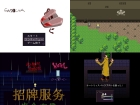

【注意】赤文字の「サイトへのリンク」や【ダウンロード】リンクは、現在のドメイン所有者が当時と変わっていて危険なサイトにつながる可能性がありますので、もしリンク移動時にブラウザの警告などが出た場合は移動しないよう注意してください。
（『緑色のリンク』と『青色のリンク』はそれぞれ「ページ内リンク」と「同サーバー内へのリンク」なので安全です）
第４回 WOLF RPGエディターコンテスト
部門別順位 → [熱中度] [斬新さ] [物語性] [画像/音声] [遊びやすさ] [その他]総合グランプリ / 全ての応募作品 / 総評 （どれもページ内リンクです）
部門別順位表
まずは「熱中度」「斬新さ」「物語性」「画像/音声」「遊びやすさ」「その他加点」の部門別順位の発表です。※すぐに総合順位を見たい人はこちら【総合順位】から！
得点は「平均点の順位ポイント（最大30点）」「総計点の順位ポイント（最大15点））」「中央値」の
合計点で算出されます。なお有効投票者数は851名、のべ評価作品数は6109作品でした。
熱中度部門
| 順位 | 作品名 | 平均点（ﾗﾝｸP） | 合計点（ﾗﾝｸP） | 中央値 | 熱中度 総合得点 |
| 1位 | 【悠遠物語～空の大陸とアイテム屋さん～】 |
8.38 (1位:30点) | 2941 (1位:15点) | 9点 | 54点 |
| ◆最初から最後まで飽きることなくプレイできた。何がそうさせたかは分からないけど飽きさせない何かがある作品。 ◆プレイ時間は長めなのに飽きなかった ◆久しぶりに文句なしで楽しめるフリーゲームでした。 ◆感心しながら進めていくうちについ時が経つのを忘れてしまった。 |
|||||
| 2位 | 【暗闇の迷宮】 |
7.45 (4位:27点) | 2808 (2位:15点) | 8点 | 50点 |
| ◆もうちょっとやりたいなと思うくらい基本的な部分がよく出来ていると感じた ◆独特の雰囲気があるゲームで最初から最後まで楽しめました ◆短めのプレイ時間内で充実した満足度を与えるのに十分な仕上がり。 ◆気軽に初めて最後まで楽しめる作品だと思いました。 |
|||||
| 3位 | 【ダンジョンズ・オブ・アドヴェンチャラーズ!】 |
7.30 (5位:26点) | 1504 (3位:14点) | 8点 | 48点 |
| ◆非常に手軽に遊べてやりやすい。 ◆ネタに終わることなく探索も普通に楽しめるので良い作品だと思いました。 ◆そこそこおもしろい依頼イベントをこなして行く形で経験値を得ることが評価ポイント、作業感をほとんど感じない。 |
|||||
| 4位 | 【COSMOSカードゲーム】 | 7.65 (3位:28点) | 903 (11位:10点) | 8点 | 46点 |
| 5位 | 【CAPTCHA】 | 7.85 (2位:29点) | 722 (16位:8点) | 8点 | 45点 |
| 【戦友(ともだち)100人できるかな？】 | 7.17 (6位:25点) | 1420 (5位:13点) | 7点 | 45点 | |
| 7位 | 【ドキッ！ 女だらけの雪山殺人事件】 | 7.06 (8位:23点) | 989 (8位:12点) | 7点 | 42点 |
| 【TWINGATE】 | 6.64 (10位:21点) | 1422 (4位:14点) | 7点 | 42点 | |
| 9位 | 【地底Aの財宝】 | 6.62 (11位:20点) | 947 (10位:11点) | 7点 | 38点 |
| 【Express】 | 7.16 (7位:24点) | 673 (18位:7点) | 7点 | 38点 | |
| 【ぼくは勇者じゃないよ】 | 6.81 (9位:22点) | 790 (13位:9点) | 7点 | 38点 | |
| 12位 | 【Princess Saviour】 | 6.52 (14位:17点) | 1310 (6位:13点) | 7点 | 37点 |
| 13位 | 【百万迷宮】 | 6.54 (13位:18点) | 968 (9位:11点) | 7点 | 36点 |
| 14位 | 【ハンテンパズル】 | 6.62 (12位:19点) | 622 (20位:6点) | 7点 | 32点 |
| 15位 | 【架空共生層プレノード・オブジェクタ zero】 | 6.21 (20位:11点) | 1013 (7位:12点) | 6点 | 29点 |
| 16位 | 【AYND -Another Chapter-】 | 6.33 (15位:16点) | 551 (24位:4点) | 6点 | 26点 |
| 【カナタの空】 | 6.27 (17位:14点) | 596 (21位:5点) | 7点 | 26点 | |
| 18位 | 【夢泡崩し】 | 6.32 (16位:15点) | 531 (26位:3点) | 7点 | 25点 |
| 19位 | 【赤瞳】 | 6.22 (19位:12点) | 591 (22位:5点) | 6点 | 23点 |
| 20位 | 【陰姫】 | 6.23 (18位:13点) | 523 (27位:2点) | 6点 | 21点 |
斬新さ部門
| 順位 | 作品名 | 平均点（ﾗﾝｸP） | 合計点（ﾗﾝｸP） | 中央値 | 斬新さ 総合得点 |
| 1位 | 【戦友(ともだち)100人できるかな？】 |
7.73 (1位:30点) | 1530 (3位:14点) | 8点 | 52点 |
| ◆ストーリー性はほとんど無い一発ネタですが、意外と今までになかった発想だと思います。個人的にはものすごくツボ。 ◆奇抜かつ衝撃的なゲームであり、逆にそれだけの要素で勝負した恐ろしいゲームでもあると思った。 ◆バカゲーとしては最高の出来。 ◆その発想力、アイデアが素晴らしいです。 |
|||||
| 2位 | 【架空共生層プレノード・オブジェクタ zero】 |
7.50 (3位:28点) | 1223 (6位:13点) | 8点 | 49点 |
| ◆説明出来ぬ、このゲームはなんだ。視覚と聴覚に訴え、文章が描き出す不思議な世界。単なるアドベンチャーにはないゲーム全体の魅力がある。 ◆独特の世界観がとてもいい雰囲気を生み出していました！ ◆シンプルな画面のなかに必要な情報が全てあって、独特のストーリーと世界観を全く邪魔されないどころか助けていて、空想を助けてくれる良いツールになっていました。 ◆断片的な言葉と幻想的な画面が作り出す雰囲気はとても斬新。 |
|||||
| 3位 | 【COSMOSカードゲーム】 |
7.58 (2位:29点) | 894 (9位:11点) | 8点 | 48点 |
| ◆投稿作品の中では非常に独創的で、新鮮な気分でゲームをすることができた。 ◆エフェクトを駆使してリングの回転を操作したり、要らないモンスターを間にバースして強カードのHPを減らさずにしのいだり。普通のカードゲームとは一味違った戦略性が味わえました。 ◆カードをリング状に配置し回転させ、前衛を交替する事で、強力なモンスターでも容易に破壊できるというアイデアが素晴らしい。 |
|||||
| 4位 | 【病原体】 | 7.33 (4位:27点) | 989 (8位:12点) | 8点 | 47点 |
| 5位 | 【悠遠物語～空の大陸とアイテム屋さん～】 | 6.39 (7位:24点) | 2242 (2位:15点) | 6点 | 45点 |
| 【TWINGATE】 | 6.46 (6位:25点) | 1383 (4位:14点) | 6点 | 45点 | |
| 7位 | 【暗闇の迷宮】 | 6.34 (8位:23点) | 2389 (1位:15点) | 6点 | 44点 |
| 8位 | 【ハンテンパズル】 | 6.83 (5位:26点) | 642 (16位:8点) | 7点 | 41点 |
| 【ダンジョンズ・オブ・アドヴェンチャラーズ!】 | 6.33 (9位:22点) | 1305 (5位:13点) | 6点 | 41点 | |
| 10位 | 【Princess Saviour】 | 6.03 (13位:18点) | 1212 (7位:12点) | 6点 | 36点 |
| 11位 | 【クリッククエスト】 | 6.29 (10位:21点) | 604 (17位:7点) | 6点 | 34点 |
| 12位 | 【Express】 | 6.10 (11位:20点) | 573 (19位:6点) | 6点 | 32点 |
| 13位 | 【ウルファール飛ばし】 | 5.84 (16位:15点) | 777 (11位:10点) | 6点 | 31点 |
| 14位 | 【カナタの空】 | 5.96 (14位:17点) | 566 (20位:6点) | 6点 | 29点 |
| 15位 | 【Wraith】 | 5.60 (21位:10点) | 835 (10位:11点) | 6点 | 27点 |
| 16位 | 【ファミリア】 | 6.03 (12位:19点) | 398 (29位:1点) | 6点 | 26点 |
| 17位 | 【灰かぶりの夜】 | 5.52 (22位:9点) | 646 (15位:8点) | 6点 | 23点 |
| 18位 | 【念呪人形】 | 5.91 (15位:16点) | 331 (ランク外:0点) | 6点 | 22点 |
| 19位 | 【CAPTCHA】 | 5.61 (20位:11点) | 516 (24位:4点) | 6点 | 21点 |
| 【ドキッ！ 女だらけの雪山殺人事件】 | 5.41 (25位:6点) | 757 (12位:10点) | 5点 | 21点 | |
物語性部門
| 順位 | 作品名 | 平均点（ﾗﾝｸP） | 合計点（ﾗﾝｸP） | 中央値 | 物語性 総合得点 |
| 1位 | 【悠遠物語～空の大陸とアイテム屋さん～】 |
7.32 (2位:29点) | 2570 (1位:15点) | 7点 | 51点 |
| ◆魅力的なキャラや急展するストーリーがとても面白く先が気になりぐいぐいとプレイしてしまいました。 ◆全体のふんわりとした統一感は今期一番ではないでしょうか。 ◆システムの良さもキャラの良さもシナリオの良さも素晴らしいと感じました。 ◆話を進めるうちにキャラの個性が出てきて愛着がわきます。 |
|||||
| 2位 | 【CAPTCHA】  |
7.45 (1位:30点) | 685 (12位:10点) | 8点 | 48点 |
| ◆雰囲気作りや物語（会話）の見せ方が上手いのか、すぐにゲームの中の世界に引き込まれました。 ◆作者さんのこだわりが感じられ、雰囲気あり、シナリオも良しの素晴らしい作品でした。 ◆何よりも全体を流れる「雰囲気」をとても大切にしていると感じました。映画的な演出が随所にあり、もっとこの世界を探検してみたい！と思わせてくれました。 |
|||||
【Princess Saviour】 |
6.41 (4位:27点) | 1289 (3位:14点) | 7点 | 48点 | |
| ◆恐らくキャラ物RPGの着地点として、最高峰級だと思います！ ◆ストーリー、テンポ、ギャグととても作りこんでいる。 ◆ストーリーが熱い！ だというのにただの熱血に終わらずネガティブな事柄をしっかりと踏まえての熱さだからこそおもしろい！ ◆世界観やキャラなど細かな点まで丁寧に作りこまれていて最後まで楽しくプレイできました。 |
|||||
| 4位 | 【ぼくは勇者じゃないよ】 | 7.03 (3位:28点) | 816 (8位:12点) | 7点 | 47点 |
| 5位 | 【ドキッ！ 女だらけの雪山殺人事件】 | 6.16 (6位:25点) | 862 (7位:12点) | 6点 | 43点 |
| 6位 | 【架空共生層プレノード・オブジェクタ zero】 | 5.82 (8位:23点) | 948 (6位:13点) | 6点 | 42点 |
| 7位 | 【赤瞳】 | 6.37 (5位:26点) | 605 (15位:8点) | 6点 | 40点 |
| 【暗闇の迷宮】 | 5.64 (11位:20点) | 2126 (2位:15点) | 5点 | 40点 | |
| 9位 | 【COSMOSカードゲーム】 | 5.78 (9位:22点) | 682 (13位:9点) | 6点 | 37点 |
| 10位 | 【ダンジョンズ・オブ・アドヴェンチャラーズ!】 | 5.55 (14位:17点) | 1144 (5位:13点) | 5点 | 35点 |
| 【TWINGATE】 | 5.52 (15位:16点) | 1182 (4位:14点) | 5点 | 35点 | |
| 12位 | 【陰姫】 | 5.68 (10位:21点) | 477 (20位:6点) | 6点 | 33点 |
| 13位 | 【ヒトガタノカタチ1.5】 | 5.88 (7位:24点) | 347 (25位:3点) | 5点 | 32点 |
| 14位 | 【百万迷宮】 | 5.29 (19位:12点) | 783 (9位:11点) | 5点 | 28点 |
| 15位 | 【Soul Steal～Razlit Saga2】 | 5.45 (17位:14点) | 523 (16位:8点) | 5点 | 27点 |
| 16位 | 【Wraith】 | 5.24 (21位:10点) | 781 (10位:11点) | 5点 | 26点 |
| 【アーマードエンフォーサーズ】 | 5.60 (12位:19点) | 336 (28位:2点) | 5点 | 26点 | |
| 18位 | 【灰かぶりの夜】 | 5.25 (20位:11点) | 614 (14位:9点) | 5点 | 25点 |
| 19位 | 【MOONCHILD】 | 5.57 (13位:18点) | 323 (ランク外:0点) | 5点 | 23点 |
| 20位 | 【Express】 | 5.14 (22位:9点) | 483 (18位:7点) | 5点 | 21点 |
画像/音声部門
| 順位 | 作品名 | 平均点（ﾗﾝｸP） | 合計点（ﾗﾝｸP） | 中央値 | 画像/音声 総合得点 |
| 1位 | 【暗闇の迷宮】 |
8.28 (1位:30点) | 3123 (1位:15点) | 9点 | 54点 |
| ◆ハイレベルなビジュアルに見せられる圧倒的な世界観。 ◆なんといっても美麗なグラフィックが一押しです！女性キャラが優遇されてはいますが、モンスターからおじいちゃんまで居り、キャラメイクがとても楽しかったです。 ◆絵の統一感やタイトル画面のギミック(マウスカーソルの付近が明るくなる)など雰囲気作りが細かいところまでなされていて、時間をわすれてプレイできた。 |
|||||
| 2位 | 【悠遠物語～空の大陸とアイテム屋さん～】 |
7.86 (2位:29点) | 2760 (2位:15点) | 8点 | 52点 |
| ◆一番凄いと感じたのは画像の綺麗さ。 ◆背景や、所々で挿絵的に使われる景色などは有無を言わせぬ一流の物。 ◆作りこみと演出が半端なく素晴らしいです。凄い力の入れ具合が感じられました。 ◆グラフィックスが群を抜いて美麗 ◆イベント，画像，エフェクトの豪華さには驚くばかりです。 |
|||||
| 3位 | 【Princess Saviour】 |
7.45 (3位:28点) | 1498 (3位:14点) | 8点 | 50点 |
| ◆ハイクオリティなグラフィックが素晴らしい。これだけでゲームに華やかさが出ている。 ◆グラフィックやマップの作り方などは高評価。 ◆絵やUIが綺麗でｼｽﾃﾑ面や演出に拘りを感じられました。 ◆要所要所にイベント画像が用意されていたりと、すごく力の入った作品だと感じました。 |
|||||
| 4位 | 【Wraith】 | 6.84 (4位:27点) | 1019 (7位:12点) | 7点 | 46点 |
| 5位 | 【架空共生層プレノード・オブジェクタ zero】 | 6.58 (7位:24点) | 1073 (6位:13点) | 6点 | 43点 |
| 【ぼくは勇者じゃないよ】 | 6.78 (5位:26点) | 787 (10位:11点) | 6点 | 43点 | |
| 【ダンジョンズ・オブ・アドヴェンチャラーズ!】 | 6.50 (8位:23点) | 1340 (4位:14点) | 6点 | 43点 | |
| 8位 | 【COSMOSカードゲーム】 | 6.62 (6位:25点) | 781 (11位:10点) | 7点 | 42点 |
| 9位 | 【TWINGATE】 | 6.10 (12位:19点) | 1306 (5位:13点) | 6点 | 38点 |
| 10位 | 【カナタの空】 | 6.37 (10位:21点) | 605 (16位:8点) | 6点 | 35点 |
| 【CAPTCHA】 | 6.48 (9位:22点) | 596 (18位:7点) | 6点 | 35点 | |
| 12位 | 【Soul Steal～Razlit Saga2】 | 6.21 (11位:20点) | 596 (18位:7点) | 6点 | 33点 |
| 13位 | 【百万迷宮】 | 5.68 (18位:13点) | 840 (8位:12点) | 6点 | 31点 |
| 14位 | 【ハンテンパズル】 | 5.99 (13位:18点) | 563 (20位:6点) | 6点 | 30点 |
| 15位 | 【病原体】 | 5.65 (19位:12点) | 763 (12位:10点) | 6点 | 28点 |
| 16位 | 【赤瞳】 | 5.84 (15位:16点) | 555 (21位:5点) | 6点 | 27点 |
| 17位 | 【陰姫】 | 5.85 (14位:17点) | 491 (26位:3点) | 6点 | 26点 |
| 18位 | 【AYND -Another Chapter-】 | 5.78 (16位:15点) | 503 (24位:4点) | 6点 | 25点 |
| 19位 | 【念呪人形】 | 5.71 (17位:14点) | 320 (ランク外:0点) | 6点 | 20点 |
| 20位 | 【夢泡崩し】 | 5.54 (22位:9点) | 465 (27位:2点) | 6点 | 17点 |
遊びやすさ部門
| 順位 | 作品名 | 平均点（ﾗﾝｸP） | 合計点（ﾗﾝｸP） | 中央値 | 遊びやすさ 総合得点 |
| 1位 | 【悠遠物語～空の大陸とアイテム屋さん～】 |
7.66 (1位:30点) | 2688 (1位:15点) | 8点 | 53点 |
| ◆難易度が３段階まで用意されていて不慣れな人もベテランな人でも自分のスタイルに合わせてできるのは○。 ◆全体的に見て親切な作りでしたが、特にセーブデータの日記形式の進行状況の説明がたいへん面白い上に分かりやすかったので高評価にしました。 ◆操作感やバランスもきっちりと調整してある。 |
|||||
| 2位 | 【戦友(ともだち)100人できるかな？】 |
7.47 (2位:29点) | 1479 (3位:14点) | 7点 | 50点 |
| ◆こちらの抱く期待を見事に打ち砕かれるシステムで、簡略化の末に辿りついた作品。 ◆サクッとできサクッと終わるいい作品でした。 ◆手の込んだゲームが並び立つなかで、極めて気楽に楽しめた清涼剤でした。 ◆コンテスト中、短時間でプレイさせ易く、印象にも残る上手な作品 |
|||||
| 3位 | 【暗闇の迷宮】 |
6.98 (5位:26点) | 2630 (2位:15点) | 7点 | 48点 |
| ◆難易度もプレイヤーが自由に選べるため、レベル上げや装備集めも楽に出来ました。 ◆相変わらずのヘルプの多さに頭が下がります。 ◆ダンジョン内のみですが、マウスとキーボードを合わせて操作できる点も良いです。 |
|||||
| 4位 | 【ダンジョンズ・オブ・アドヴェンチャラーズ!】 | 6.70 (7位:24点) | 1380 (4位:14点) | 7点 | 45点 |
| 5位 | 【百万迷宮】 | 6.75 (6位:25点) | 999 (9位:11点) | 7点 | 43点 |
| 6位 | 【CAPTCHA】 | 7.16 (3位:28点) | 659 (19位:6点) | 7点 | 41点 |
| 【Express】 | 7.05 (4位:27点) | 663 (18位:7点) | 7点 | 41点 | |
| 【名無き旅路】 | 6.59 (9位:22点) | 1081 (7位:12点) | 7点 | 41点 | |
| 【Princess Saviour】 | 6.56 (10位:21点) | 1319 (5位:13点) | 7点 | 41点 | |
| 10位 | 【COSMOSカードゲーム】 | 6.60 (8位:23点) | 779 (14位:9点) | 7点 | 39点 |
| 11位 | 【ウルファール飛ばし】 | 6.46 (11位:20点) | 859 (12位:10点) | 7点 | 37点 |
| 12位 | 【ドキッ！ 女だらけの雪山殺人事件】 | 6.33 (15位:16点) | 886 (11位:10点) | 7点 | 33点 |
| 【地底Aの財宝】 | 6.29 (16位:15点) | 900 (10位:11点) | 7点 | 33点 | |
| 14位 | 【架空共生層プレノード・オブジェクタ zero】 | 6.19 (17位:14点) | 1009 (8位:12点) | 6点 | 32点 |
| 15位 | 【ハンテンパズル】 | 6.43 (12位:19点) | 604 (20位:6点) | 6点 | 31点 |
| 16位 | 【AYND -Another Chapter-】 | 6.39 (13位:18点) | 556 (23位:4点) | 6点 | 28点 |
| 【ぼくは勇者じゃないよ】 | 6.16 (18位:13点) | 715 (16位:8点) | 7点 | 28点 | |
| 18位 | 【夢泡崩し】 | 6.38 (14位:17点) | 536 (26位:3点) | 6点 | 26点 |
| 19位 | 【灰かぶりの夜】 | 6.09 (20位:11点) | 712 (17位:7点) | 6点 | 24点 |
| 20位 | 【TWINGATE】 | 5.69 (29位:2点) | 1218 (6位:13点) | 6点 | 21点 |
その他部門
| 順位 | 作品名 | 平均点（ﾗﾝｸP） | 合計点（ﾗﾝｸP） | 中央値 (1点以上) |
その他 総合得点 |
| 1位 | 【悠遠物語～空の大陸とアイテム屋さん～】 |
+2.11 (1位:30点) | 742 (1位:15点) | 5点 | 50点 |
| ◆全体的に見ても局所的に見ても驚くほどに出来がよく、ウディタ製ゲームの枠を更に広げた作品だと感じた。 ◆もはやフリーゲームの域を超えています。 ◆案外やり込み要素が高いのがいいと思います。 ◆発想、完成度、作品にかける想いなど上記の評価だけでは評価しきれない作品でした。 |
|||||
| 2位 | 【COSMOSカードゲーム】 |
+1.85 (2位:29点) | 218 (7位:12点) | 5点 | 46点 |
| ◆ジャンル的にカードゲームへ馴染みのなかった人に対しても自信を持って薦めたいと感じられる作品でした。
自分が今までプレイしたフリーのカードゲームの中では一、二を争うほど面白かった。 ◆250種類ものカードを自作している点を評価したい。 ◆無駄要素を徹底的に省いて面白さをカードゲーム一点に集中させているところが好印象でした。 |
|||||
| 3位 | 【TWINGATE】 |
+1.30 (4位:27点) | 279 (3位:14点) | 4点 | 45点 |
| ◆順当に1,2,3,4Fと並ばない階層構成、頻繁に変動させれば有利に戦えるパーティのありかた、控え人員＆前線及び各色の役割分担など、常に頭を使う仕組みが魅力的でした。 ◆豊富なグラフィック、一人称や性格を設定できるなどキャラメイクへのこだわりが素晴らしいです ◆育てようと思えばいくらでも育てられるシステムにはまってしまった。 |
|||||
| 4位 | 【ダンジョンズ・オブ・アドヴェンチャラーズ!】 | +1.19 (6位:25点) | 246 (4位:14点) | 3点 | 42点 |
| 5位 | 【CAPTCHA】 | +1.52 (3位:28点) | 140 (12位:10点) | 3点 | 41点 |
| 【ぼくは勇者じゃないよ】 | +1.30 (5位:26点) | 151 (9位:11点) | 4点 | 41点 | |
| 7位 | 【戦友(ともだち)100人できるかな？】 | +1.15 (7位:24点) | 227 (5位:13点) | 3点 | 40点 |
| 【Princess Saviour】 | +1.09 (8位:23点) | 220 (6位:13点) | 4点 | 40点 | |
| 【暗闇の迷宮】 | +1.07 (10位:21点) | 404 (2位:15点) | 4点 | 40点 | |
| 10位 | 【ウルファール飛ばし】 | +1.06 (11位:20点) | 141 (11位:10点) | 3点 | 33点 |
| 11位 | 【架空共生層プレノード・オブジェクタ zero】 | +0.94 (14位:17点) | 153 (8位:12点) | 3点 | 32点 |
| 12位 | 【ハンテンパズル】 | +0.95 (13位:18点) | 89 (16位:8点) | 3点 | 29点 |
| 13位 | 【名無き旅路】 | +0.91 (16位:15点) | 150 (10位:11点) | 2点 | 28点 |
| 【アーマードエンフォーサーズ】 | +1.08 (9位:22点) | 65 (23位:4点) | 2点 | 28点 | |
| 15位 | 【病原体】 | +0.92 (15位:16点) | 124 (13位:9点) | 2点 | 27点 |
| 16位 | 【百万迷宮】 | +0.78 (18位:13点) | 115 (14位:9点) | 2点 | 24点 |
| 17位 | 【Darkness_Wyvern】 | +0.98 (12位:19点) | 47 (28位:2点) | 1点 | 22点 |
| 18位 | 【カナタの空】 | +0.75 (19位:12点) | 71 (19位:6点) | 2点 | 20点 |
| 【赤瞳】 | +0.75 (19位:12点) | 71 (19位:6点) | 2点 | 20点 | |
| 20位 | 【タソトンナの暖ったか島】 | +0.84 (17位:14点) | 53 (26位:3点) | 2点 | 19点 |
総合グランプリ
総合グランプリ順位は「熱中度」「斬新さ」「物語性」「画像/音声」「遊びやすさ」「その他加点」の６項目の「総合得点」に、「平均重視度（％）」を掛けて得られた値を総計したポイントで決定されます。
皆さまの投票から得られた平均重視度は、以下の通りとなりました。
熱中度 76.9％ 斬新さ 51.1％ 物語性 60.9％ 画像/音声 53.8％ 遊びやすさ 74.5％
※その他加点は自動で「50％」
【1位】『悠遠物語～空の大陸とアイテム屋さん～』(エントリー番号【43】/ 総ポイント188.0点)
熱中度 41.5 点 ＋ 斬新さ 23.0 点 ＋ 物語性 31.1 点 + 画像/音声 28.0 点 + 遊びやすさ 39.5 点 ＋ その他 25.0 点
熱中度 41.5 点 ＋ 斬新さ 23.0 点 ＋ 物語性 31.1 点 + 画像/音声 28.0 点 + 遊びやすさ 39.5 点 ＋ その他 25.0 点
- 【ダウンロード】
【運営ﾊﾞｯｸｱｯﾌﾟからDL(安全/282MB)】 - 作者 : らむらむ
- プレイ時間 :25～35時間
- 作者コメント:
- 『アイテム』を楽しむアクションRPGゲームです。
色んな場所を冒険して、アイテムを探して
自分のお店で売ったり、錬金術で新しいアイテムを作成したり
色んなことを楽しめます。
毎回地形の変わるランダムダンジョンに
仲間を二人まで加えられるアクションRPGの戦闘システム。
プレイ時間は長めですがサクサク進めるような作りを心がけました。
軽い気持ちでお楽しみください。
-
【一般投票コメント】
[熱10新7物9画9遊8他+8] ほんわかしたイラストで魅力的なキャラクターと、テンポ良く進むシナリオでグイグイと物語に引き込まれていきました。BGMもゲーム内容によくあった心地よいものばかりで、いつまでも聴いていたくなります。難易度も３段階まで用意されていて不慣れな人もベテランな人でも自分のスタイルに合わせてできるのは○。万人にオススメしたい作品です。
[熱9新6物7画8遊6他+5] このボリュームでまだ半分というから驚き、よく作りこまれていた。早く続きがしたい作品！
[熱10新10物9画10遊10他+6] キャラクター、ストーリー、ゲームバランス、戦闘エフェクト、全てが高レベル。朝から始めて気が付いたら夜になっている、まさに時間泥棒。
[熱9新5物6画6遊5他+5] 物語や操作は独創的ではないが高いレベルでまとまっている。しかし、フリーであることを考えるとすべてが高評価になる。あと、ドットかわいい。
[熱9新4物7画7遊8他+5] どこかで見たような設定、ゲームではあるものの、これだけの大作を作ったことがすばらしい。BGMが非常に多種使われており、力が入っている。主人公の基本能力値に対し、装備の性能が低く感じ、武器の差による個性をあまり感じることができませんでした。
[熱8新8物7画6遊6他+5] まとまった出来になっていると思います。しかし、全体を通してやることやできることが多すぎ、要素を詰め込みすぎている気がしないでもないです。シナリオも悪くはないですが、アイテム売買にはまってしまい、ついストーリーそっちのけで朝市通いと販売を繰り返し、なかなか先に進めなくなってしまいました。経営シミュレーションの部分とアクションRPGの部分がちょっとうまく噛み合っていなかったかも。戦闘は非常にスムーズ。敵を攻撃しながらでも逃げながらでもサクサクと進めますが、アイテム収集時にいちいち決定を押さないといけないのはちょっとテンポが悪いかも。時間はあまり本編に関係ないとはいえ、イベントでの時間経過が短いイベントでも妙に進んだりして少し気になりました。悪い点ばかり挙げてしまいましたが、戦闘システムなどのオリジナリティは高く、良作だと思います。
[熱9新5物7画8遊8他+3] 全体的に見ても局所的に見ても驚くほどに出来がよく、ウディタ製ゲームの枠を更に広げた作品だと感じた。歩行時やスキル使用時のエフェクト、セーブ時や黒板、アイテム説明などの細かさなどや、ストーリー外のイベントや脇道要素などへの気配りが他投稿作品との違いをうまく出していると思う。反面、ストーリーやキャラクターの言動に納得のいかない部分も多く、特に終盤それらの点が顕著に見られた。
[熱9新7物8画8遊9他+4] ほのぼのしてて良かった、ウディタでやっとゲームらしいゲームに出会えた…
[熱10新6物7画9遊7他+5] 魔法エフェクトが綺麗なのに動作がすごく軽い。
[熱10新9物9画5遊9他+5] 最初から最後までと言わず何周も楽しむことができたから。
[熱10新6物7画7遊8他+2] 自由度が高い。プレイしていて窮屈さを感じない。
[熱10新7物9画6遊10他+10] 最初から最後まで飽きることなくプレイできた。何がそうさせたかは分からないけど飽きさせない何かがある作品。
[熱10新6物8画9遊8他+9] 魅力的なキャラや急展するストーリーがとても面白く先が気になりぐいぐいとプレイしてしまいました。錬金術・鍛冶パートも面白くてつい時間を忘れてプレイしてしまいましたね。アイテムのドロップ率が若干厳し目だったようにも思います。SCの登録数も多くて戦闘もかなり楽しめましたが、欲を言うともう少し物理技も欲しかったです。次回作があれば増やして欲しいですね。
[熱9新7物7画7遊8] セーブの際に日記のような形式で、「いまどういう状況で次に何をするのか」が示されるのは、物語の把握の上で非常に助かった。
[熱8新6物7画10遊8] グラフィック、システムのクオリティが高い。アクション部分の操作感もとても良かった。
[熱9新9物9画9遊9] 武器の使い分けができるのが楽しかった
[熱10新8物9画7遊9他+2] 久しぶりに熱中してゲームプレイしました。システムや解説など分かりやすい、さわりやすいゲームだと思います。ストーリーも穏やかで丁寧で良い。細かい設定変更出来る、きちんとパッド対応されている点が良かったので+1。
[熱9新7物7画7遊8他+3] スライム撲殺ヒロイン加点。
[熱7新4物5画10遊9他+10] ゲームとしての評価ではなく、このシステムを作った事がすごいと思ったので加点しました。お疲れさまでした。
[熱9新6物7画9遊8他+4] エフェクトが非常に綺麗。細部まで丁寧に作られていて良かった。急かされず、のんびりと素材集めなどをできるストーリーで良かった。
[熱9新6物8画6遊8他+4] 【クリア済】久しぶりに文句なしで楽しめるフリーゲームでした。２週目要素がありそうなので今からアプデが楽しみです。各ダンジョンで取れるレシピの取得確率も丁度良く、飽きずにダンジョン周回もできました。アクション性は慣れれば「そんなもんか」位ですが、もうちょっとぬるぬる動いてくれればより楽しかったかと思います。（聖剣伝説くらい）ウディタでは難しいかもしれませんが…。武器も折角複数種類あるので、熟練度や必殺技的なものがあれば良かったかもしれません。現状では攻撃が単調になりアクションRPGであるメリットが活かしきれていないのが残念でなりません。（アイテム取得のところだけ？）良作なだけに非常にもったいない。早く正式版をプレイしたいです。
[熱10新8物9画9遊9他+9] セーブ・ロード画面や、クエストボード等といった細かい部分までプレイヤーを楽しませようとする配慮が素晴らしかった。やれることは多いが、やれることが多すぎてなにをしてよいか分からなくなる、といったことのないバランス取りも見事でした。
[熱8新8物7画8遊7他+4] 錬金や鍛冶でアイテムを造り売りさばくやりこみ性だけでなく、前段階の素材集めにもアクション性のある戦闘とプレーヤーを楽しませる事に優れた作品。ただ戦闘がめっきりなキャラのはずがLV5を超えた頃には無双モードにはいるのでバランスをしっかり考えるともっと良い作品になったと思う。
[熱10新8物6画6遊9] こういったアトリエ風？なフリーゲームはいくつかあるけど、その中でもこのゲームは中々よく出来ていると思う。戦闘やアイテム採取もサクサクできてあまりストレスを感じないし、アクションが苦手でもプレイできる。イラストはほのぼのとして可愛いが、イベント時のスチルは正直あまり上手くない。
[熱8新5物6画10遊7他+4] アトリエ系かと思いきや、実際はアクションに重点をおいてあり、色々なシステムを組み合わせることによる新しさを感じた。また、色々組み合わせたことによるバランスの悪さも無く、良く調整されている点がかなりの評価ポイント。ストーリーは急展開が多過ぎて付いて行くのが大変だったが、絵本や漫画のように深く考えずに見る分には十分な内容でもあった。他にも色々あるが、このゲームで一番凄いと感じたのは画像の綺麗さ。キャラクターの絵は好みの分かれるところだと思うが、背景や、所々で挿絵的に使われる景色などは有無を言わせぬ一流の物。コンシューマーの作品だと言われても納得してしまうほどの素晴らしい出来栄えだった。
[熱9新9物9画9遊10他+5] キャラクターに個性があり、愛着が湧いた。
[熱5新5物5画8遊3] イベント，画像，エフェクトの豪華さには驚くばかりです。反面、錬金術，鍛冶，素材集め，さらには数多くのミッションによって本筋が覆い隠され漠然としてしまっていたので，本筋を際立たせる脇道の配分を考えた方が良いように思いました。
[熱10新6物9画10遊10他+7] 個人的にアトリエシリーズが大好きだからかもしれないが非常に最初から最後までプレイ出来てこの作品と出会えた事に感謝したい。正直「フリーでいいの？」と言えるレベル。アイテム集め等苦手な人でもそこまで苦にならない程度の遊びやすさかと思う。インベのアイテム数が多いのでソート機能も付いているのが大変嬉しい。とりあえずノーマルから始まり、ハード・アルティメット全てクリアしてしまった。それくらいハマりました。素敵な作品を作ってくれて作者さんありがとう。この作品と出会わせてくれて本当にありがとう。
[熱8新6物6画7遊7] アイテム合成からお店経営にアクションRPGなど、1つ1つ丁寧に作りこまれた要素が多数詰め込まれていて、しかもグラフィックや効果音の演出も凝っていたりと、作品の密度の高さに感動しました。チュートリアルとなる展開も用意されていて遊びやすかったです。前回までの投票方式なら一位票を入れていたと思います。
[熱9新6物7画6遊8他+3] 全体のふんわりとした統一感は今期一番ではないでしょうか。（誇張表現アリ）なによりローグライクＡＲＰＧを求めていた自分にこの可愛いキャラクター達が組み合わさったダブルパンチで目の前がお花畑、誘われる蝶の様にクルクルと…（誇張表現アリ）細かいところも凝っておりいろいろな場面でほほぅと感心しながらプレイできました。上書き確認のピクチャが地味に揺れたり（？）「そこ凝るか～」と思えるところで作者の愛が感じられました。
[熱6新2物7画9遊10他+10] 無難でハイレベルなアイテム作りゲーム！こういうのを待っていた！大好き！（個人的過ぎます） 柔らかな世界観、シリアスなストーリー、マッチした素材、未だクリアできていないボリューム、きっちり合わさったゲーム。しかもアイテム作りゲームはとても珍しい、というか今までやってきたフリーのアイテム作りゲーム中で一番の作りかもしれんね。
[熱10新7物9画9遊9他+9] 作業げーに陥りにくくよかった
[熱10新10物10画10遊10他+9] 独特の雰囲気、ストーリー及びキャラの見せ方、ランダム生成マップの出来の良さには驚愕
[熱9新5物7画8遊8] 非常に完成版が楽しみ。期待してます!!
[熱9新7物10画10遊10他+8] システムの良さもキャラの良さもシナリオの良さも素晴らしいと感じました。調合とお店だけでも凄いのに、特にキャラが際立ってすごかったです。ただ詰め込みすぎでじっくりとは遊べません
[熱8新6物5画8遊7] まだ未完成っぽいが十分に楽しめた。ただ1つ気になる点は主人公のアイテム屋がストーリーにあまり絡まなかったこと。
[熱8新8物6画9遊7] やりこみ要素キャラの魅力ほぼ最高点じゃないでしょうか装備品がかさばるのがやや不満でしたがほかには問題なしです
[熱9新7物7画6遊8他+4] 話を進めるうちにキャラの個性が出てきて愛着がわきます。まだ途中だけどこれからも楽しみです。
[熱10新7物7画8遊9他+3] 何十時間もやり込むくらい面白く、またキャラクターも魅力的で、大変楽しませてもらえました。
[熱9新9物7画6遊7他+4] ほんわかした表面とは裏腹にしっかりした世界観とストーリーが非常に良い雰囲気を醸し出している。戦闘システムも良く練られているし、全体を見ても子細に渡って丁寧さが感じられた。ただ、ウディタの仕様上の問題か、アクションゲームにしては少々操作性に難を感じてしまうが、それも味だと思わせるくらいに高水準な完成度。
[熱10新4物6画3遊9他+7] 他の部分のレベルが高すぎるのか、絵が少し気になってしまいます。その他は中毒性もあり、ほぼ満点に近い出来ではないかと感じました。
[熱10新10物9画10遊9他+9] クリアした時、「え？もう終わり？」と思った。というのもボリューム不足というわけではない。グラフィック・システム、キャラの個性の立たせ方、そして絶妙の難易度、インターフェースやアイキャッチ等細かいところにまで高品質な作り込みがされており、感心しながら進めていくうちについ時が経つのを忘れてしまった。
[熱9新5物6画7遊8他+5] 好みのジャンルでボリュームややり応えもあり、久しぶりにフリーゲームにはまりました。その分バグが多かった点は気になりますが、そこをマイナスしても十分評価できる内容だったと思います。
[熱8新6物6画6遊6他+2] すごいボリュームです。１話ごとに１つの作品にできるくらい。
[熱10新5物8画10遊8他+3] 自動生成マップ、キャラAI、装備改造等、システム面で感心した。アイテム、レシピ回収、鍛冶のやりこみ要素もかなりのボリュームだった。グラフィック、BGMも豊富で長時間のプレイが苦痛でない。ウディコン後の要素追加があるなら楽しみ。
[熱10新9物9画9遊7他+6] 最初はちょっと強いスライムに苦戦するところから始まりながら、どんどん強くなっていく主人公や、主人公の人柄に惹かれて変わっていく仲間達など、王道的なストーリーながら、既知を感じさせない個性的なキャラクターばかりで、とても楽しかった。アイテム収拾も、あまり面倒さを感じずに楽しめた。現バージョンではクリア後がなかったり、極端に手に入れにくいアイテムがある(しかもそれが最強魔法の習得に必要)などの欠点はありますが、それでも十分な完成度であると思います。ウディコン終了後の大型更新がとても楽しみです。
[熱10新6物9画9遊9他+3] ＲＰＧウディターを熟知した作者のきわめて完成度の高いゲーム。まだ最後の敵をクリアしてませんが、ここまでたるみなくハマりました。すべてのゲームをやりこんだわけではありませんが、１０作テストしたなかでは最上位です。
[熱9新6物7画8遊8他+2] ARPGしながらのお店の経営や錬金等たくさんの楽しみがつまっており、今回の中で個人的には一番面白かったと思う。武器等個性的で良かったが、コンボ数を増やす道具なども欲しかったように思う。ストーリーはちと主人公の思考がご都合主義すぎる気がしたのが一点。二点目は、最後から二番目のボスが基本的に倒せない（方法はあるのか？）上、そのボスが結局ストーリー展開の為にこちらの預かり知らぬ所で傷つき、主人公は救う事が出来ず死亡という流れにはプレイヤー側からすると、結局主人公が得たのは友達と明日への希望だけかいっ！と突っ込まざるを得ず、ものすごく不完全燃焼に感じた。とはいえ全般に意識が向けられているのが感じられ良かったように思う。
[熱9新9物9画9遊9他+6] ARPGとアトリエシリーズをうまく融合させているなと感じました。キャラクターがどこかほんわかしていて、世界観にマッチしていて、ストーリーも「おおっ」と膝を打つような展開でした。音楽、SEの使われ方も、群を抜いている感じで、どこまでも遊びがあったと思います。細かい部分でいえば合成の項目内にnewとか、作成したことのないものを並べてもらえると、見やすかったかなと思いますが、普通にプレーするぶんにまったく支障はないです。
[熱10新9物10画10遊10他+10] 今まで色々なフリーゲームをやってきましたが、これが１番面白いと思いました。・アクションのド派手なエフェクト。特に必殺技はすごいです！・設定や物語など細かいところまで非常に丁寧に作られていると感じました。ミッションボードのらくがきやセーブ画面の日記ふうの記述、キャラによるアイテムの解説、ダンジョンマップが切り替わる際の大げさなメッセージなどここには書ききれないぐらいニヤニヤ楽しめるところがいっぱいありました。・作ったり戦ったり、ゲームとしても最後までとても楽しめました。スライムを片手で捻り潰せるようになるまでやり込めました(笑)
[熱10新7物6画8遊8他+2] キャラクターの可愛さに+1、クリア後(または周回プレイ)への期待に+1。
[熱9新7物8画7遊6他+3] 頭ひとつ抜けたクオリティに山盛りのボリュームは圧巻の一言。多少操作しづらいところはあるが気にならない程度。
[熱10新9物9画8遊8他+3] ノーマルでもそこそこの難易度があるこのゲームだが、戦闘、金銭、能力バランスはとても良く、ランダム性の高いダンジョンなどによってゲームシステムにも感動を覚え、ストーリーやコメディな登場人物たちの触れ合いなどにも熱中しすぎて長編なのに止め時がなかった。是非とも今後は伏線を拾っていってもらいたい。
[熱9新5物7画7遊7他+4] ARPGとしての操作性はなかなか良く、経営シミュレーション系のゲームでよくある制限時間の概念が無いので自分のペースでプレイできた。
[熱8新5物7画7遊8他+5] 多彩なシステムが何よりも魅力な作品。やれること遊べることの多さを評価したい。
[熱7新7物8画10遊8他+6] 作りこみと演出が半端なく素晴らしいです。凄い力の入れ具合が感じられました。自分が面倒くさがりなので素材集めや合成は少し労力に感じましたが、アトリエシリーズが好きな人は間違いなく熱中できるレベルだと思います。
[熱10新6物7画7遊8] コンテスト後も楽しみ
[熱9新7物9画9遊8] ストーリーはクリアまで行けてないので９か８位のつもりで評価してます。とりあえずキャラクターが可愛い！掛け合いも笑えます。錬金するゲームはフリーゲームでも結構ありますが自分がやった中では一番楽しめてます。自分は評価を多分全体的に低く付けてる(他作品含む)つもりなんですがそれでもこの評価は妥当かもう少し上でもいいかなっていうくらいでした。いいゲームです。
[熱10新9物9画9遊10他+5] これから続くであろう物語があり アップデートを楽しみに待てるし、時間の使い方などが大いに楽しめた
[熱10新4物8画8遊9] 個人的に属性グラフが新鮮でしたが、全体的な斬新さには欠けます。しかしそれ以外の点では頭ひとつ抜けていると感じる作品でした。ゆえに色々な確執もあるようですが、一話から最終話までで構成された完成品であり、時間が足りず切り上げたであろう部分が散見されるも充分すぎる質。おすすめです。
[熱9新7物10画10遊9他+10] 凄過ぎ(ﾉﾟοﾟ)ﾉ
[熱10新8物6画8遊7] 作業的になりやすいアトリエゲーが、アクションとストーリーを交えた事でハイテンポに感じられる作品。テンポが良すぎてアトリエ部分が若干薄く感じたのが難点。残り半分の追加要素には強く期待。
[熱10新6物9画10遊8他+1] 日記が実に日記らしかったのと、ランダムダンジョンがあまりランダムダンジョンらしくなかったのが衝撃的でした。人工のダンジョンに近い雰囲気のランダムダンジョンでした。ミッションボードのチョークの消し残り加減にもこだわりを感じました。作品の随所に見られるこだわりに対してその他で加点しました。
[熱10新7物10画10遊10他+2] 雰囲気がとてもいい。また、スキップ機能やバックログがありシステムが秀逸。快適さで+2点
[熱10新8物10画10遊8] 最初から最後までプレイしましたが完成度の高い素晴らしいゲームでしたカンストまでがちょっと低いのが気になりました
[熱9新6物9画9遊8他+4] クリアまで３０時間ほど掛かったが、ほんとに最後まで熱中できた。この完成度はすごいと思う。
[熱10新10物7画9遊8他+10] 個人的にフリゲの最高傑作だった。
[熱10新8物7画8遊9他+7] ストーリーだけならサクサク進み、やりこめば奥が深い。バランスが取れていて良かった。
[熱8新7物6画8遊7他+1] 非常にボリュームがあったところが良かったと思います。
[熱10新7物8画9遊10他+6] できることが少しずつ増えていき、その一つ一つをゲーム内でわかりやすく説明してもらえるので遊びやすいです。やりこみ要素が多く、ＡＲＰＧなのでテンポもよく、かなり飽きさせない作りとなっていてハマりました！フリゲの中では間違いなくトップクラスのクオリティです！！
[熱9新7物7画6遊7] 無理矢理一言で言ってしまえば「アクションRPG版アトリエ」。全体的にフリーゲームとは思えないほど出来が良い。楽しめない要素がほぼ無く不満な点もほぼないのであまりいうことが無い。ただ一点不満点を挙げるなら、戦闘での攻撃ボタンが決定キーでなくキャンセルキーなことくらいか。これも慣れれば気にならないが。あとキャラが実に良い。アイテムや魔法の説明文はそれぞれのキャラのそれの解説といった形なので見ているとニヤッとする。
[熱9新6物9画10遊9他+4] ロード時に物語がどこまで進行したか、次に何をすれば良いかが主人公の日記という形式で表示されている。プレイヤーへの配慮が高く、また世界観を壊さずにヒントを表していたりと、痒い所に手が届いている印象。
[熱9新6物8画7遊8他+5] ハードモードでプレイしました。ボス前までほぼ苦労することなく進めて、現在はレシピ埋めるため若干放置中です（他のゲームもプレイしなければなりませんし）。総合的に見て、とても良く作りこまれたゲームです。斬新さは、アクションRPGだからなのか、個性的にも見えるし目新しさも感じられました。物語性については、物語を排除した作りのゲームが多い中、物語をちゃんと作っているという点はきちんと評価すべきと思い、この得点にしました。良い話であったかと言われると、個人的にはそうでもないわけですが、それぞれのキャラクターに個性があったり、物語が大きく破綻していなかったり、安易にエログロに流れなかったりというのは、好印象でした。画像や音声については、キャラクター絵だけに力を入れるのではなく、ミニイベントにカットインを入れるなど凝っていて、これも好印象。音楽については一部雰囲気に合わないものがありましたが、その曲に個人的な思い入れが深いことからフェアな評価にならないので、特に減点しませんでした。遊びやすさについては、全体的に見て親切な作りしたが、特にセーブデータの日記形式の進行状況の説明がたいへん面白い上に分かりやすかったので高評価にしました。この日記形式の説明が遡って参照できるようになると面白いと思います。この作品は作者の思い入れも深かろうと思われますので、コンテスト終了後に世界地図を埋めていくようなサイドストーリーの追加などありそうで、楽しみに待っています。
[熱9新8物7画8遊9他+8] 【良かった点】まずボリュームが満点な所が良かったです。戦闘に関しても錬金術に関してもやり込めるだけのボリュームがたっぷりで自分の好きなように錬金やレアアイテム探しに熱中できます。物語も、メインとは別にサブシナリオが沢山ありどれもほのぼのとしていて楽しく、キャラがうまく掘り下げられています。スキルの習得に錬金アイテムが必要な所が面白いですね。習得するために必然的に色々なアイテムを集めて調合することになるので、戦闘ばかりこなそうとしていても自然と錬金の楽しさに気づく仕組みになっています。戦闘が軽快なアクションゲームで楽しく、錬金素材集めにダンジョンに入ったけど気づけばレア装備のドロップを求めて長時間ダンジョンに潜り続けていた時もよくありました。戦闘の斬新さとして、アイテムのコストが挙げられます。これは体力回復などの消費アイテムにコストを設けることで、一回のダンジョン内で使えるアイテムの数を制限するものです。これによって消費アイテムを大量に持って進むゴリ押しプレイができなくなり、回復量や効果を吟味する必要が出てくるのが良い点だと思います。【気になった点】商品がランダムで変わる露店で、まだ鍛冶のレシピも手に入れていない装備が売られていることがあるのが気になりました。装備はダンジョンで入手するか鍛冶で造るかのみにした方が手に入れたとき満足感が得られたはずです。あと店を開けたときに内装が寂しくてNPCがからっぽの倉庫みたいな部屋をうろつくだけなので、棚とかの家具を配置してもっとお店っぽく見えた方がよかったです。それと、自宅から街の外へ出るとき、自宅、自宅庭、施設メニューから町の外へという順を踏まないといけないので面倒でした。【まとめ】フリーとは思えないほど遊べる良いゲームでした。メインのキャラも可愛くてほのぼのとした感じの雰囲気が◎です。
[熱9新8物9画9遊6] これぞＲＰＧと言えるかもしれない しかし、アクションに慣れていない人には難しくかんじる レシピの切り替えなどもう少し説明が欲しい
[熱10新9物8画8遊8他+6] 錬金Lvや販売Lvなどの各種育成要素と、RPG要素、レシピ収集など楽しめる点がたくさんある。主人公のピアを始め優しい雰囲気の登場人物達が魅力的な世界観を作っている。クリアまで40時間ほど、フリーゲームでは久しぶりにハマれるゲームだった。
[熱9新7物7画8遊7] 操作に微妙な改善の余地あり。しかしそれを上回る物語性と熱中度で一気にはまりました、レシピ集めが割りとしんどいのですがそれでもやってしまう。一話の主人公の挫折は必見。
[熱10新7物7画9遊7他+3] やり込み要素があり、長く遊べた。グラフィックも綺麗で良かった。アクションゲーということもあり、若干操作が難しい所があるが、進行に差し障りない程度だった。
[熱10新4物7画8遊9] 今回の一句【エルバーク、おねがいだから、たたかって】今回のウディコンで一番ゲームらしいゲーム。ミミーちゃんかわいい♪
[熱8新9物8画9遊9他+8] 錬金術系のゲームはたくさんあるけれどもアクション系との組み合わせはなかったのですごいの一言 それに合成も自分好みでよかったしちょっと残念だった点は攻略時間が長いということ これは好き嫌いが分かれるかもしれないけど私的にはよかったと思う 他の人からはどう見えるのかわからないけど・・
[熱9新8物10画10遊10他+6] 極めて完成度が高いゲーム。ひとつひとつの作りが丁寧で遊び心にあふれている。５章になっても６章になっても新しいシステムが解放されるなど実に深いゲーム。ただ、敵の耐久力はちょっと高過ぎる。ザコでもサクサク倒すのはほぼ不可能な強さなのでそこでイライラするかも。
[熱10新7物9画9遊9他+2] BGMが素晴らしく良くて、曲を買うことで自分の好きな音楽を店番中に流すことができたりとプレイヤーに楽しんでもらおうという努力が感じられてすごく好ましく感じられました。多少の誤字やバグはあったけれど全体としてはハイレベルに仕上がっていたように思います。
[熱10新6物7画9遊9] 非常にかわいらしい雰囲気で、キャラクターやマップだけでなくインターフェースや音楽など細部までこだわった作りで良かった。操作感やバランスもきっちりと調整してある。イベントやストーリーもサクサクと進み、一つの目標だけに縛らずにプレイできるところも良かった。フリーゲームにしておくのはもったいない丁寧な作りだと感じた。
[熱8新6物7画7遊8他+3] エピソードごとに区切りをつけたことで、物語にもプレーヤーにもメリハリができた。アクションの難易度という点でも適正だと思う。エフェクトも美しい。瑕疵といえば、アイテム収集がひとつの肝らしいのだが、オマケという印象しかなかった。
[熱10新6物9画10遊10他+10] もはやフリーゲームの域を超えています。アクションRPGの要である戦闘も非常に軽快に動き、物語についてもかなりしっかり作成されている印象を受けました。とにかく今までのウディタ作品とは次元の違いを感じました。
[熱7新8物8画6遊7他+4] ストーリーはあるものの、自由度が高い。また、世界設定も細部まで行き渡っていた。
[熱9新6物6画6遊8] アイテムクリエイト、ダンジョン探索、商売、スキルツリーなど幅広く遊べ、ボリュームも凄い。ただランダム生成によるダンジョン探索がメインなので、ハック＆スラッシュが好きかどうかで評価が分かれるところ。
[熱6新8物8画9遊5他+4] グラフィックもゲームシステムもハイレベルな出来栄え。アトリエシリーズの様な、アイテムを製作して売るゲームかと思ったら、ストーリーが大きく膨らんでいって驚いた。公式ページ見てジャンル見たら色んな要素が混ざっていて「多すぎだろｗｗｗｗｗ」というのが素直な感想。加点については、ゲームとしてのボリュームの多さ。錬金術で作るための素材アイテムの多さ、製作できるアイテムの多さ。クリアまでに時間のかかるストーリーの長さ、複数種ある武器の種類などなど、とにかくボリュームが多くて、これを評価しないのはもったいないと感じた。
[熱10新6物9画9遊9他+7] 戦闘難易度を３種類選べること、やりこみ要素はあるもののストーリー進行にほとんど影響がないこと等、間口が広いゲームだと思いました。やりこみ部分もストーリーもよく作られており、プレイヤーの嗜好がどこにあっても楽しめると思います。アクションもぬるぬる動くしエフェクトが綺麗で、戦闘が楽しかったです。ただ、バグだけはいただけないのでその分減点しました。
[熱10新10物9画10遊9他+6] 戦闘システムもよく、商売や錬金など様々な要素があり十分に楽しめる作品でした。
[熱10新7物7画9遊10他+4] アイテムの豊富さと錬金などのやりこみ要素がこれでもかと詰め込まれていて、飽きること無く最後まで遊べました。武器の種類も多く、戦闘がとにかく楽しい。味方も戦闘させたり錬金させたり活用出来る場面が多くて助かりました。物語的に消化不良気味だった事は残念ですが、今後のアプデに期待してます。
[熱9新7物7画8遊6] 初めはアイテムを集めるゲームだと紹介があって、まさかここまで壮大な物語になるとは思いませんでした。 特に面白かったのが敵とのバトルで、演出も素晴らしいと思います。物語についても、聞いたことがある話でもオリジナリティーが出るように工夫されていて面白みがあります。 ただ、一つプレイする中で苦しんだのがありまして、それは４話で、装備を奪われて取り戻さなければならない場面です。どうしてもそれを取り戻す直前の狭い道で、半歩はみ出していて見つかってしまったり、次の狭い道に入るのに、その半歩が出なくてスムーズにいけずに見つかってしまう…ということが何度も起こって本当に先にいつ進めるか、と必要以上に苦労しました。とはいえ全体として素晴らしい作品だと思います。
[熱8新5物8画8遊8] イベントが起こる場所が分かりやすい等、ストーリーの進行に関わることには親切に設計されていて遊びやすく、キャラクターの雰囲気も良いので全体的に好印象。
[熱5新6物5画8遊7他+2] システムが非常に細かく設定できたり、これだけのシステムを組みながら動作が軽快など、遊びやすさに念頭を置いた作りがすごいと思った。ダンジョンの画面遷移時のメッセージもコンフィグでカットできれば、なお嬉しい。
[熱9新7物7画7遊7] ストーリーも楽しめましたが、錬金術でアイテムを作って自分のお店で売ったり、アイテム収集など色々できることが多くて楽しめました。主人公の武器や魔法の自由度が高いので色々な戦い方ができて良かったです。
[熱10新8物8画9遊7] 本大会お気に入りの一作です。早くVer1やりたいです。武器の種類や技の種類も多岐に渡り、プレイヤーごとに個性が出せるいいゲームだと感じました。それに加えて世界観も良く作りこまれていて、話の中に引き込まれていくように思いました。自宅から外が遠く、移動回りには若干の不便さを感じますがそんな些細なことは気にならないくらい熱中しました。
[熱10新7物8画9遊9他+4] プレイ時間25～35・・ 分かな？と思ったら時間だったという驚きのボリューム・・と思いきや実は未完成で、まだストーリーの半分の作品だったという驚きの長さ！ 完成が楽しみです。
[熱10新10物9画8遊10] 経営ＳＬとＡＲＰＧを一つのゲームに落とし込んだ大作。二つのジャンルが同居しながら良くまとまっている。ストーリーは楽しく、細かな要素の作り込みも素晴らしい。戦闘シーンでの音楽に少し違和感を感じた以外に不満なし。Ｖｅｒｕｐでさらに完成度が高まる予感。
[熱9新6物9画10遊8他+10] キャラもシステムも世界観も素晴らしく自分好みで、ボリュームも多く夢中になってプレイしました！演出も丁寧で愛情が注がれ、これが本当にフリーで良いのか・・・？！とさえ思いました（笑）プレイ中困ったところは、スキル＆アイテムショートカットが感覚的に選択できず、アイコンに気が囚われて暴走したり、演出が凝っている分igfxエラーが起きて（当方Vistaなので回避できず）ソフトウェアモードにしないと進められない箇所があったりしたところです。それでもこのゲームに出会えた事が本当に嬉しいです。ハウルの動く城感覚で大冒険しながらお店！とても楽しい時間を有難う御座いました。
[熱9新6物8画10遊9他+7] とにかく面白い！シンプルなシステムだが一つ一つがしっかりとした作りになっているので、とっつきやすくて飽きにくい！武器、アイテム、モンスターの図鑑や武器、アイテム、収集系のやり込みもある。音楽やグラフィックも高水準！とにかく一度プレイすべし！
[熱10新8物9画9遊10他+5] それぞれのキャラの雰囲気がよく引き立っていました。チュートリアルが小出しで、ゆっくりと理解していけるのもプレイヤーへの配慮が感じられて、とても良かったです。
[熱10新7物9画10遊10他+10] ストーリー、グラフィック、遊べる部分の楽しさ、どれを見ても素晴らしい作品だと思います。それぞれのキャラクターもキャラ付けがよく出来ていて、キャラの掛け合いの部分も楽しめました。ゲーム性としても、さくさく進められるイベント、没頭できるアイテム収集、キャラクターの育成など、最初から最後まで非常に面白かったです。
[熱9新7物8画8遊8] 他ウディコン作品とは桁が違うと感じました。プレイのしやすさ、ストーリーーのハマり具合、アクションRPGとしての爽快感、どれをとっても高評価です。不満があるとしたらたまに起きるバグと(おそらく修正済みだと思いますが)、verがまだ1.00に到達していない事でしょうか。
[熱10新8物10画9遊10他+5] とにかく、雰囲気がすごくよかったです！ 物語の展開が上手くてぐいぐい引き込まれました。ゲームの難易度も高すぎず（ノーマルのみのプレイですが）、戦闘、合成、商売、という、場合によっては煩雑になりがちな要素を、楽しくプレイすることができました。
[熱9新7物9画9遊9他+8] 物語、素材、難易度すべてにおいて非常に細かいところ以外に文句なし。それらがうまくかみ合っているところも素晴らしい。強いて文句を言えば基本操作ボタンが多くて少し覚えにくいところか
[熱7新4物7画6遊8他+6] はじめたばかりですが、引き込まれました。随所に溢れるユーザーフレンドリーなところや、物語に導入できるようにする、細部にとてもこだわった非常に丁寧な作りに惹かれます。素晴らしいです。
[熱9新8物8画8遊8] ｷｬﾗ、物語が魅力的。ｱｸｼｮﾝの操作性とｴﾌｪｸﾄが良くできており長いﾌﾟﾚｲの中でも飽きなかったです。
[熱10新9物10画10遊9他+6] 各キャラクターの個性と各所にちりばめられたギャグが大変面白かった。また、レアアイテムの採集やアイテム販売など飽きずにやり込むことができた。
[熱10新1物4画10遊10] 完成度が高く感じた。
[熱7新8物6画7遊4] 最初は色々と操作が難しく取っ付き難いが、主人公の可愛さで我慢。それ以降は十分楽しめた。
[熱9新8物9画9遊8他+8] たくさんの楽しみを詰め込んでいてとても楽しく遊べる。問題があるとすればたくさんあるが故のシステムの簡略化ができてない感じだろうか。ともかくも、はまる。コレが一番のよい点です
[熱10新8物9画10遊9他+6] スキルのドット絵、戦闘のバランスが素晴らしかった
[熱9新6物7画6遊8] 未クリア。アトリエシリーズは初代しか経験ないですが、フリーでここまで楽しめる錬金ゲーは初めてです。作って売ってが楽しくて物語がなかなか進みません(苦笑)ヌルゲーマーにとって期限なしは気持ち楽でした。パッド対応がとてもありがたい。シリーズ化希望！
[熱10新9物10画9遊9] これのせいで他のゲームする時間が無いというくらいハマってる。
[熱9新9物9画9遊10他+9] ゲームの斬新差やイベントの数々、やりこみ要素も存分にあり実にやりごたえのあるゲームでした。
[熱8新5物7画7遊9] ほのぼのとした雰囲気に和みました。案外やり込み要素が高いのがいいと思います。
[熱10新7物9画9遊10他+9] とにかく楽しかった
[熱9新4物7画8遊8] 絵がかわいい。
[熱3新8物3画8遊8] まるで市販のゲームのような作品。でも、私がフリーゲームに求めているのはそれではない。
[熱10新6物9画9遊8] 非常に中毒性があるシステムがあり、シナリオもいい感じで、キャラも個性たっぷりで、作画も自分好みですばらしい作品だった。面白すぎです！
[熱7新4物7画8遊6] システムや素材など、クオリティーの高さにまず驚いた作品でした。ゲーム内容としては、素材集めなどは単調な部分もあるのですが、気づくとずるずると長く遊んでしまっているようなゲームでした。
[熱10新5物5画6遊8他+7] レベルが一桁違うゲーム商業ゲーと比較してもなんら遜色はないかと細かいバグ修正や、やりこみ要素の実装が来れば間違いなくウディタ製ゲームの金字塔となりえるポテンシャルを秘めている
[熱10新10物10画10遊10他+10] ストーリーだけではなく商売も楽しめてよかった。
[熱5新4物7画8遊10他+6] ユーザへの配慮が素晴らしい。飽きさせない工夫として、『とりあえず見せる』手法が散見される。例えばゲーム開始から初戦闘までの短さ（二回目で戦闘チュートリアルを挟むのもGood!）、初ボス戦でNPCが強力な攻撃魔法を連発する（「いつか主人公もこんな派手な魔法を使える様になるのだろうか」と胸を踊らさせられた）等。欠点はストーリーが長い上、キャラのセリフとゲーム性の間に違和感がある所か。
[熱10新10物10画10遊10他+7] これは完全なる最高傑作。スキル習得システムや、錬金術、鍛冶などの、ＲＰＧならではの要素が最高に引き出されている。久しぶりにハマりました。
[熱6新6物8画9遊5他+6] アクションバトルが楽しかった
[熱10新8物9画9遊8他+5] ウディタ式ARPGとは思えない素晴らしい操作性、バランスも良好。MPの割に魔法の消費が少めな代わりに魔法は当てづらかったり詠唱があり、武器の判定の違いはどの武器一強という状態を作らせない。商売方面も安く素材を買って高いものを作って売るとか、売れやすいアイテムと売れないアイテムがあるとか、考えていくと奥が深い。キー回りが最初ちょっと戸惑うが、それも慣れると逆に快適に遊べる。ストーリーもキャラも文句なし。ドット絵もピアちゃんの寝顔が可愛かったりどれも素敵。全体的に高水準でまとまった良作、続編に大きく期待できる一本。ただ弱い武器がワンサカ手に入る上に店に出すときスタックして置けないせいで余る余る、武器を素材に還元したり出来れば尚良かった。
[熱10新4物8画9遊8他+3] まず容量が段違いすぎて目を疑った。 システム周りは本当に親切さを感じ、とても遊びやすいと思った。 序盤の戦闘は単調さを感じるが、スキルを覚え始めた辺りから物凄く楽しくなってくる。 エフェクトは特に良かった。 主人公のあざとさは目に付いたが、各キャラクターがしっかりと立っていて好印象。 ただ、どこかで見たことのあるゲームを盛り合わせにしたゲームといった感じ。 斬新さはないが非常に楽しめる作品だと思いました。
[熱9新8物7画9遊7他+6] 操作に使用するキーが多いが、一貫した法則でつかわれており、なじみやすい。シナリオの出来も素晴らしいが、このゲームのもっとも評価すべき点は、ARPG、SRPG、その他複数のゲームシステムをうまく共存させている点だ。敵AIの出来も良く戦闘が退屈にならない。また、やりこみ要素も多数あり、時間を忘れてプレイしてしまう中毒性がある。ただ一つ惜しい点を挙げるなら、移動用のキーを変更できない点。せっかくスキルも多彩なARPG、左手で移動・右手でコマンド入力といった、従来の家庭用ゲームのような操作感覚を味わってプレイしたかった。
[熱10新2物7画10遊10他+4] 様々なゲームからコンセプトを得たようなシステムがあり、真似たと言うのではなくうまくミックスされている点が高く評価できる。拠点が何度も変わるがそれにストレスを感じさせないようにしてある。また戦闘も章が変わるごとに幅が広がるので序盤の戦闘に慣れて後半の戦闘がパターン化するといったこともない。
[熱9新7物8画7遊8他+2] ARPGは苦手なのについついやってしまう面白さ。合成、販売要素のおかげで幅広い層がプレイできるのではないだろうか。他要素が多いおかげでARPGが苦手な層でも熱中できる作品になっていると思う。個人的にはありがたかった。
[熱10新8物10画10遊10他+10] 非常に完成度の高いアトリエ系ゲームだと思います。アイテムの種類や合成の完成度が高くARPGとしても遊びやすい。発想、完成度、作品にかける想いなど上記の評価だけでは評価しきれない作品でした。
[熱10新6物7画10遊5] 多少のバグやもうちょっと改善できるんじゃないかな？というところはありましたが、それ以上に面白かったです！あとみんなかわいい！
[熱7新6物7画6遊6他+2] それぞれのアイテムに仲間たちのコメントがあるのが楽しかったためその他加点しました。審査期間中も難易度や演出を調整するのはやめたほうがいいと思う
[熱9新8物10画10遊8他+8] キャラも魅力的でかなり親しみやすいアクションRPG、操作性もとてもいいしボリュームが凄いしストーリーも良く出来ていて隅々まで考えられている、市販ゲームに匹敵するのではないか？
[熱10新8物9画10遊10] 水辺を歩いた時のエフェクトが印象的でした。ロード中の作業が表示されるのが個人的に好きです。
[熱10新8物9画8遊9他+6] 物語がいいテンポで進み、ところどころに笑いどころを入れていて(個人的にはエルバーグのダイイングメッセージがヤスって所が)、操作説明も十分。1位でも全く問題の無い作品でした!二つほど言うとしたらプレイ時間 :25～35 と書いてあったのでてっきり40分ありゃクリアできるのかと…。それとストーリーのすごさ故、個人的には長く感じてしまいました…
[熱10新8物7画9遊9] 非常に面白い。時間を忘れて熱中していた。アイテムを作るためにダンジョンを駆けまわる。アイテムを作りたくなる工夫がされているのでついついハマってしまった。良ゲーだと思う。
[熱9新7物8画9遊8他+7] グラフィック、演出、一枚絵などが高いレベルでまとまっていて、オプションも充実しており、ロールバック、スキップも完備、キャラも世界観もしっかりしていて、快適かつ面白く遊べました。今回の作品の中で最高の出来だと思います。ただ、唯一残念なのは序盤レシピを買っても材料不足で作れない事が多い事と、ダンジョンで見つかるレシピの出現率が低すぎる事、ダンジョン内のものを全てそろえる間に雑魚が落とすアイテムが100近くになっている事もざらなので……。
[熱10新9物10画10遊9他+2] ランダム生成のダンジョンなのにそれを感じさせないほど素晴らしい作りだった。
[熱9新7物7画9遊9他+1] アイテム合成や、店で何を売るかまたは買うかなど、考える楽しさを持った素晴らしい作品でした。
[熱6新4物5画7遊7他+4] グラフィックやレイアウトなどゲーム画面が綺麗で見やすい。穏やかで耳に心地良いBGMも良い雰囲気が出ていました。アイテム合成あり、お店経営あり、ダンジョン探索ありの美味しいとこ取り。ダンジョンのランダム生成は何度も足運びたくなりました。
[熱8新8物6画6遊9他+9] 最後までいっていないのでストーリの評価はできないが、ゲームを進める際の適度のスパイスにはなっている。 しかし、本作の醍醐味は収集・作成の部分であろう。また、アクションも適度なので(自分が下手なのもあるが)、長時間楽しめる代物であることは間違いない。
[熱9新6物7画7遊6他+9] 非常に遊びごたえのあるARPGでした。難易度調整も可能で遊びやすい、物語性やグラフィックの点でも申し分なく、長く遊べて満足出来た作品です。25時間程度遊べましたのでその他加点は9点とさせて頂きました。
[熱10新9物5画9遊9] フリーゲームとしてはかなりの出来だと思う。販売代行さんが欲しかった。
[熱10新8物8画9遊8他+3] アイテム説明文、二度美味しい
[熱10新6物9画9遊9他+9] 今回のコンクール作品の中で一番熱中して遊んだ作品です。自分の中では間違いなく優勝作品です。
[熱10新3物8画8遊7] 現在３章程度までプレイしています。全体的に面白かったです。システムも親切な印象を受けました。しかし、斬新さと個性の出しやすさには欠けていたと思います。例えば、お店の場所毎に、かつ品物の種類（食べ物、武器等）毎に経営レベルがあると面白いと思います。その場合、ただ作るだけでなく、生かす工夫をしなくてはなりませんが。ストーリー、キャラ設定は非常に良く、惹きつけられました。バージョンアップ及び次回作に期待しています。
[熱10新9物9画10遊7他+10] 自分もARPGを作ってるが今作をプレイして自分のゲーム作りに対する認識を改めさせられた。
[熱7新9物7画10遊7他+1] とてもハイレベルなグラフィックとシステム、操作性はちょっと悪いかもしれないけど（移動しながら攻撃ができない）、ARPGシステムだけでも十分評価できる。
[熱9新7物7画6遊8他+4] アイテムを集めるだけでなく、会話イベントなどにもネタが詰め込まれており、終始安定した面白さ。ただし誤字（誤変換）が多かったので、一度見直しをするといいかと思います。アクション戦闘も魅力的でした。斜めに攻撃しにくいけど…こればかりは仕方ないですね。熱中度はトップクラスでした。
[熱6新6物6画9遊7他+3] 透明感漂う作品の雰囲気、プレイヤーをワクワクさせるストーリーなど、あらゆる要素が高水準で纏まっている。しかし、未完成ゆえか終盤に差し掛かるほどに作りの粗が目立っていたのが非常に残念。完成していればほぼ全部の要素に満点をつけられたのだろうが・・・。
[熱8新6物9画7遊8他+4] 長い間作っていた作品に一区切りついたというタイミングがウディコン時期だったから公開、という感じでか。サクっと遊べるものが多いウディコン作品の中では珍しい長編。ツクールでの前作に比べて全体的にクオリティが上がっていて、これからの追加箇所にも期待。
[熱9新7物9画9遊7他+6] 内容のわりに軽いことに驚きました。コンフィグ箇所が多いのもよかったです。ＯＰのイベントなどの演出も高クオリティで続きが気になりました。フリーズバグやはまりバグを顧みても十分続きを遊ぼうという気にさせてくれるものだと思います。[その他加点/システム・演出・プレイ時間]
[熱10新8物8画7遊10他+4] なにより、ゲームのテンポの良さが他のゲームと違いました。演出もとても素敵だと感じました。
[熱6新1物4画5遊5他+2] 細かいUIの調整ができたり、台詞スキップ、人物辞典などシステムが非常に魅力的。物語やキャラに魅力は感じないが素材集めが面白い。ただ、ストーリーイベントと腰を据えてやるようなお店経営は上手く噛み合ってない気がした。女キャラはそこそこ丁寧に描かれているのに反して男キャラの適当さが気になる。
[熱8新4物7画6遊8他+3] 柔らかく穏やかでどこか寂しい雰囲気が好き。やれることが多い故の煩雑さはあるものの、丁寧な作り込みでフォローされているので苦にならなかった。ただ、システムとストーリーに多少違和感がある。アイテム作成や経営はどっしり構えて作業したいタイプが好む要素ではないかと思っているのだが、特に序盤はそれが出来ない。○○しないと△△が大変なことになると急かされたり、拠点を転々としたりする。そのあたりの舵取りが難しいなと思った。
[熱10新6物8画9遊9他+5] アクションのエフェクトが美しく、かつサクサク動いてストレスがない。様々な要素が高いレベルでまとまっていて、非常に楽しませてもらった。
[熱10新10物10画10遊10他+10] フリーでこのレベルは見た事無いです…すごい。アイテム集めや錬金が僕の性に合っていたのでたのしめました。また追加要素があるそうですが、楽しませて頂きます。ブログを密かに開発当初から覗いていたのですごい楽しみでした。
[熱10新7物8画9遊8他+3] 一枚絵・ドット絵・エフェクトなどのこだわりも高水準、Tipsやキーコンフィグの丁寧さ、ノベルゲーム並みのログやスキップ機能などのガチっぷりはかなり高いです。今回のコンテストでは、「レビューのため、どんなゲームもある程度進んだらそこで一時中断」するはずだったのですが、このゲームはやめどきが見つからなかったぐらいです。 このゲームに特に目立った弱点はありませんでしたが、しいて気になった場所を挙げると、「店経営中のLive画面に倍速ボタンが欲しかった（あの画面は『入り口からレジまでの道中が売上に影響する経営ゲーム』のみで映える要素かなあ）」ことと「攻撃後のキャラのウェイトが意外と長かった（割とコンボをつなげ辛い）」ことぐらいかと。
【2位】『暗闇の迷宮』(エントリー番号【38】/ 総ポイント170.1点)
熱中度 38.5 点 ＋ 斬新さ 22.5 点 ＋ 物語性 24.4 点 + 画像/音声 29.1 点 + 遊びやすさ 35.8 点 ＋ その他 20.0 点
熱中度 38.5 点 ＋ 斬新さ 22.5 点 ＋ 物語性 24.4 点 + 画像/音声 29.1 点 + 遊びやすさ 35.8 点 ＋ その他 20.0 点
- 【ダウンロード】
【運営ﾊﾞｯｸｱｯﾌﾟからDL(安全/52MB)】 - 作者 : あとらそふと
- プレイ時間 :３～５時間
- 作者コメント:
- 魔族たちと迷宮を探索するゲームです。
ゲーム開始時にパーティと装備が整えられているので、
すぐに遊ぶことができます。
勿論、最初からカスタマイズして遊ぶこともできます。
★その他特徴
・最初から全種類の魔族が使用可能
・種族×職業の組み合わせでキャラ作成
・装備アイテム合成
・ステージごとの難易度選択(ロストあり)
・ステージ周回プレイで敵が強化
・Ctrlキーで戦闘演出カット
・画面左上の？アイコンでヘルプ表示
-
【一般投票コメント】
[熱10新5物9画10遊9他+1] 今回のコンテストで一番楽しめた。レベルアップの自由度やアイテムのランダム性などダンジョンに潜る楽しみが用意されていて好印象。戦闘の難易度も選べ幅広いプレイレベルに配慮されていた。また絵の統一感やタイトル画面のギミック(マウスカーソルの付近が明るくなる)など雰囲気作りが細かいところまでなされていて、時間をわすれてプレイできた。特にタイトルが気に入ったため＋1とした。
[熱9新7物5画10遊7他+3] キャラ性とは別に心情配慮という意味で＋2点。最初は主人公がモンスターサイドで人間と戦うということで敬遠していたが、仲間になる魔物キャラのうち、最もドギツイと思われるアンデッド系ですら今のところグロい、残虐、粗野と思うような台詞はなく、むしろ品や愛嬌があるのが良い。こう言うプレイヤーを不快にさせない配慮が素直に素晴らしい。それでいてどの魔物もその種類らしくて面白い。あと、キャラメイク自由さ成長の楽しさで＋1点。
[熱10新8物9画10遊8他+9] 独特の雰囲気があるゲームで最初から最後まで楽しめました。今回は魔王側とのこともあり、色々なモンスターを連れ歩けて楽しかったですね。戦闘中や探索中に仲間キャラが話すのも一緒に冒険している感じがして良かったです、段々と愛着も沸いていきました。小さいアイコンも可愛いです。ダンジョン探索楽しいです。ただ、ひとつだけ前作のように称号引継ぎして２周目がはじめられたら良かったな、と思いました。
[熱7新6物6画10遊6他+2] ハイレベルなビジュアルに見せられる圧倒的な世界観。まずはこの一言に尽きると思います。地下の街でどんな暮らしをしているのか。迷宮を必死に駆け回る。仲間と一緒に食事をする。陽気な商店街を歩く。たまにはアンダーグラウンドでちょっと悪いこともするけど世界自体がアンダーグラウンッ。妄想が止まりません。チュートリアル、システムともにちょっと特殊ですがプレイヤーに配慮された操作性がそれを気にさせません。強いて苦言を呈すなら２点。ひとつは戦闘中のウェイトとダメージの数字を大きく表示する構成がほしかったこと。もうひとつは主人公だけでも攻撃の対象を選べると、主人公＝プレイヤー感がより強まったのではないでしょうか。
[熱8新6物6画6遊7他+3] やりこみ要素があるので、もう少しプレイしたかった逆に言うと、もうちょっとやりたいなと思うくらい基本的な部分がよく出来ていると感じた更に、絵描きさんの絵柄が個性的なので、どこかで見た事ある感をほとんど感じずにプレイできたのはとてもとても大きいフリーゲームにそこまで求めるのは酷と思いますが、効果音がみんな大好きマッチメイカァズさんのものなので個性的な世界観の中に頻繁に聞いたものがあるとそこだけ非常に浮いてしまったのが少々残念だった難易度調整もでき、幅広い年齢の方にプレイして貰えると思う
[熱10新10物10画10遊10他+10] あとらそふとは、数多くのウディタ作品を輩出しているが、そのレベルが、だんだん上がってきており、今作はそのまま商品化されてもおかしくない出来だった。ダンジョン探検モノだが、ストーリーもしっかりしており、称号や評価など、やりこみ要素も数多く存在している。ゲームバランスも悪くなく、長い時間プレイ可能。ただ不満があるとすれば、調合時の操作や、アイテム欄の見難さ、分かりにくさがあった。並べ替えの拡大や、連続調合などが有ればストレス無くプレイができる。
[熱7新6物5画10遊8] 率直に言って、非常に惜しい内容でした。圧倒的充実であった前作までを上回る、グラフィック面での更なる充実化が図られているのは純粋に凄いです。全体の色の基調が黒なので重みがあり、シリアスで重厚な雰囲気を作っていま。操作も基本マウスオンリーで完結している上、アビリティを上げるための＋WASD移動と、左利きの方のためにカーソル移動を用意している配慮の良さ。キャラメイクや陣形の選択など、沢山の要素を破綻なく組まれているプログラム技術の高さなど。これらは非常に高水準ですし、制作の参考にさせていただきたいです。しかし「ゲーム性と難易度バランス」「ドラマ性と効果」「各要素の繋がり」において不足を感じました。全体的に盛り上がりが少なく、用意されている要素や機能も置いてあるだけのような印象を受けました。ゲーム性、物語性、ゲームルールのどれかで白熱できる要素が一つでもあれば、文句なしの作品でした。
[熱8新8物5画8遊8他+2] 魔族となって人間と戦うという設定とそのビジュアル、音楽が醸し出すムードの良さ。
[熱5新3物3画6遊5他+5] 本コンテストでは随一のゲームであると思われる。目新しい点はないが、ＲＰＧとして必要な部分をしっかり押さえている。キャラクターに一定以上の魅力があり、グラフィックに不満はなし。システムやインターフェースに改善すべき点は多く見受けられ、時間をかけて製作していればもっと素晴らしいものができていたのではないかと残念に思う。
[熱7新5物4画9遊6] 楽しかったです。割とあっさりしていたのが勿体無いですね。
[熱7新6物5画9遊5他+4] 設定は面白く、かなり楽しく遊べましたが、ストーリー性の薄さとダンジョンが浅いのは残念でした。面白い要素が多いのに、全体的にボリュームが物足りなかったと思います。個人的にダンジョンの移動はキーボードを使ったほうが楽なのに、戦闘はマウスが必須だったので、ダンジョン内の操作はどちらかに統一するかコンフィグをつけて欲しかったです。グラフィックは相変わらず高クオリティだと感じました。全体の雰囲気も良かったです。
[熱8新6物5画10遊8] グラフィックが素晴らしい。キャラの立ち絵の色変更が可能なのは、特定の種族を何人かパーティに入れる際に、とても嬉しかった（キャラの区別がしやすい）。
[熱8新6物8画10遊8] グラフィックがとても綺麗。システムもシンプルでバランスが良いので遊びやすかった。人外キャラが作成できるので、他のキャラメイク要素のある作品と一味違う。コボルト可愛い。
[熱10新9物9画10遊9他+8] 成長盤でのキャラクター育成や、装備の合成が楽しかったです。難易度もプレイヤーが自由に選べるため、レベル上げや装備集めも楽に出来ました。そしていつもながらキャラクターチップが可愛い！ ただ1点だけ、戦闘速度を速いにしていると、戦闘情報が即座に流れて上手く確認できない事が多いです。盗賊の盗む技能を使用した時は成功したのかどうかも分からないので、画面端にでも戦闘情報のログがあると良かったかな～と。
[熱7新7物5画9遊7] 勿体無いというか食べ足りないというか…もっともっとこのゲームを遊んでいたかった、という印象です。特にレベル上げの作業もせずストレス無くｻｸｻｸ進み、あっさりラスボス撃破、終了。ああ勿体無い。この魅力的なさまざまな要素をもっとしっかり味わいたいと、もっとやりこんでみたいと、強くなって挑むべき目標がほしいと、強く強く思いました。プレイ時はとても楽しめました。だからこそ勿体無い、という感想になる訳です。
[熱9新9物8画10遊9他+6] 普通に完成度が高い。
[熱6新6物5画9遊6他+3] やりこみ要素は多いものの、ゲームの流れ自体はシンプルで好感が持てます。BGMが場面展開のために効果的に使われていました。登場人物の台詞を工夫することで物語の説得力が増したのかなと思います。
[熱4新2物3画9遊6] グラフィックがとても綺麗ですが、種族によってはキャラ絵が少しグロテスク……。キャラの成長システムが面白かったです。ストーリーが淡々としていたので、もう少し盛り上がりがあったらもっと熱中できていたと思います。
[熱8新5物5画8遊7] 相変わらずのヘルプの多さに頭が下がります。難易度を上げるとキャラを失う恐れがありますが、得られるものに関わるため挑戦してみようという気が起こります。欠点という欠点はほとんどないのですが、戦闘時に誰が行動しているのかの流れがちょっと把握しにくかったように思いました。全体的に完成度が高く、安心して楽しめる作品だと思います。
[熱6新8物8画8遊9他+1] レベルデザインが意識されており、じっくり遊べるゲームでした。
[熱10新7物7画8遊8他+2] 実は配布前から作者様のHPで存在を知っており、公開されるのを楽しみにしていました！普段こういうダンジョン潜り系はやらないのですが、クリアまで楽しめました。〈画像/音声〉なんといっても美麗なグラフィックが一押しです！女性キャラが優遇されてはいますが、モンスターからおじいちゃんまで居り、キャラメイクがとても楽しかったです。欲を言えば、人間男の侍と忍者が欲しかった…。〈遊びやすさ〉アイテム管理が若干煩雑でしたが、それ以外はとても良かったです。ダンジョン内のみですが、マウスとキーボードを合わせて操作できる点も良いです。〈その他加点〉スキル習得の方法と、地底の魔族が主役という点に加点です。
[熱9新4物6画8遊9他+5] ダンジョンに入る難易度を選べるのでストレスなくゲームができます最後まで楽しめてできました
[熱9新7物4画10遊9他+6] 武器等の強化に中毒性がある反面、強化しすぎてしまうと戦闘がぬるめになってしまう難点がありましたが、とても楽しく遊べました。
[熱8新7物7画8遊7他+2] グラフィックが綺麗。システムも面白い。
[熱5新6物6画7遊4] グラフィックや技術など安心のクオリティ。ただ、少し物足りない合成のシステムやゲームバランス・操作感は練り込みの余地あり
[熱9新7物8画9遊9他+4] 根本的なシステムだけなら普通のRPGだが、素材、ストーリー、操作やキャラメイク等にプレイヤー側への配慮が多く、非常に遊びやすい万人受けするゲームになっている。あと魔物がかわいい。
[熱10新9物7画10遊9他+9] 全体的にクオリティは高く、グラフィックから世界観に入りやすい。曲のセンスもいい。特にキャラクターの育成、戦闘前後会話が面白く気に入った。他にも戦闘速度の調整が出来る所、マウスひとつで操作できる所(ゲームパッドでプレイしたいという方には減点かも知れない)と良いところがたくさんある。それらのシステム等を個々で見るとオリジナリティはないとも言い切れないが、全体で見るとそれらが融合し、素晴らしく纏まっているゲームになっていた。
[熱10新8物2画10遊5] 優れたグラフィックと斬新なシステムが目を引く作品です。ただし、全体的に完成度が高く見えるだけ、ストーリーの山の無さや後半に行くほど投げやりになるゲームバランス、合成の調整の甘さなど、この作者さんのいつもの欠点がより浮き彫りになった印象を受けます。主人公の生い立ちや光の神が魔族を嫌悪する理由など、ストーリー上で山を作れそうな要素が転がっているだけに肩すかしを受けた感じ。パネル式の成長システムは非常に面白い試みだと思います。あと、仲間キャラクターの一言コメントが可愛い。
[熱9新8物6画10遊10他+9] 美しすぎるグラフィックに乾杯。
[熱8新6物5画8遊7] 短めのプレイ時間内で充実した満足度を与えるのに十分な仕上がり。種族と職業で変化するスキルポイント制の成長システムは今後の発展が期待できる。
[熱9新8物7画7遊7他+4] 合成していくのにハマりました。初見魔王モードは1戦闘ごとにドキドキで、すごい緊張感を感じるものでした。ただし、2度めの同じ面の攻略は作業っぽくてちょっとだけ面倒だったかなと。
[熱8新8物5画6遊9他+3] 気軽に初めて最後まで楽しめる作品だと思いました。装備強化で非常に強力になり、魔王レベルでも非常に簡単に感じました。
[熱8新8物5画9遊7他+3] 悔しいがハイクオリティな素材に既存のものとは違うゲームデザイン、面白いと言わざるをえない。ゲームバランスについてはまだ調整中のようなので早く最新版をプレイしたいと思う。
[熱3新8物5画8遊7] この方の名前に見覚えがあったのでプレイしました。キャラクターや物語の雰囲気は独特な感じが好きです。あまりやり込んでないので難易度はわからないんですが、称号集めも楽しかったりもっと早くあそび始めればよかったですw。
[熱6新6物5画7遊8] 面白かったのですが、合成をやりすぎると難易度がさがってしまうのでもう少し合成にお金が掛かってもよかったかも？
[熱10新9物6画9遊9他+6] 世界観、操作性、システムなどが高い次元で噛み合っており、合成システムや称号コンプリートなどのやりこみ要素も充実している非常に完成度の高い傑作です。魔王モードのロストした時の感覚は忘れられないものがあります。作者さんのバグへの対応が非常に迅速だったのも好印象です。
[熱8新8物6画10遊6] 個人的には戦闘の際のスキルエフェクト有った方が、似たようなスキルの区別がつきやすくなったり誰が攻撃されているのか判りやすくなったりすると思います。敵の後ろを取れば先制できることとマップのギミックを組み合わせればより高い難易度の攻略を容易にできるようにしたことで、各難易度の存在意義がより明確になった点は良かったです。
[熱9新7物5画9遊7他+4] グラフィックが相変わらず素晴らしい
[熱9新8物5画10遊9他+8] 自作フリゲにありがちな、いわゆる「テンプレ」の匂いが一切感じられないＵＩやグラフィックの作りこみはメーカー品だといわれると信じてしまう程の完成度であり、多くの作者がキーボード（またはパッド）操作であることと比べて、ゲーム開始からクリアまでマウスひとつで操作できてしまう手軽さも兼ね備えている。 ストーリーの方はキャラクターの掘り下げ等がほとんどなく、少し希薄だと感じることが心残りではあった。 また、合成を極めるとパワーインフレが起きてしまう点も、バランス調整の余地は残る。 とはいえフリーゲームとしては間違いなく一流と呼べる出来であり、少々の改善があれば商用としても十分通用する出来だと思う。
[熱9新7物4画6遊9他+4] 成長システムがよかった
[熱10新7物6画9遊10他+5] どれをとっても高評価なのですが、なんといってもやりこみ要素が豊富で時間を忘れるぐらい熱中できるゲームです。難易度も選択できるので、さくっと楽しみたい人にもおすすめできます。画像も綺麗で本当に素晴らしいです！
[熱8新8物7画8遊8] わりとダークな雰囲気のゲーム。完成度は高く、ストーリーも良い。キャラクター作成と育成の自由度が高く、またちゃんと主人公（≒プレイヤー）を尊重してくれているところとパーティーメンバーにも種族に応じた個性が設定されているところも高評価。自分の好みでつくった訳でもない初期メンバーでも、共に戦っているうちになんだかんだでかなり愛着が湧く。セリフをオフにした場合はその限りではないだろうが…。種族の友好度の上げ方がわかりにくいことと思ったように装備の強化が出来ないこと、それと陣形が手に入りにくいことが難点か。ただ、陣形が手に入りにくいことは倒した敵の処遇を悩めるという面白さにも繋がっていると思うので一概に難点とも言えないが。
[熱10新6物7画4遊7他+3] 職業や種族の自由度が非常に高く、自分のパーティーの個性を出せる点は非常に面白かったただ、後半になると装備が強すぎるため、逆に自由度を狭めてた感が否めませんでした。自分で縛りプレイしてもいいんですが、装備が弱いことによる特典をつけるなどすれば、もうちょっと自然にスリルが楽しめる気がします！また、物語の雰囲気はすごい好みだったんですが、ちょっと話が薄いと感じました（薄いのが好きな方には非常に魅力的だと思います）特にエンディングはもう少し濃くしても良いかと思いましたちなみに装備強化しすぎてラスボスは2ターンで終わりました笑
[熱8新6物8画7遊8] ダンジョンの階層ごとにテーマがあり、中だるみの飽きを感じさせない。
[熱6新4物5画8遊6他+4] グラフィックに関しては言うまでもなく、大変良いものを見させていただきました。システムに関して、装備欄が少し使いづらかったかなという印象です。一番気になったのがゲームバランスで、いくらでも合成可能なため、強くしすぎてゲームバランスを崩壊させてしまうことができるのが少し残念でした。システムもグラフィックも最高級なので、それ故にゲームバランスなどで、惜しいと思うのは贅沢な悩みではありますが、これだけの作品を作り出せるあとらそふとさんだから、つい期待してしまいます。今後も応援しています。
[熱4新6物2画10遊6他+1] やり込み要素があって良い。絵も美麗でウディコンの中でトップクラスである。しかし、ストーリーが面白くない。非常に勿体なく感じた。
[熱5新5物4画10遊7] 今回の一句【なんとなく、忍者の立ち絵、好みだな】あいかわらず絵が巧くてうらやましい...こちらも精進しなければ！
[熱7新7物8画8遊8] もうちょっとキャラクターの個性が出せてたら面白かったのかな、と思います。完成度は非常に高かったです。
[熱10新6物5画8遊8他+6] ・戦闘はテンポがよく音楽の使い方も良かったので、ダンジョン探索はかなり熱中した。・探索中、要所で格キャラが話すところが楽しかった。・二週目では称号入手条件がわかるシステムが欲しかった。二週目プレイ要素を増やして欲しい。・久々に寝不足になるほど一気にクリアしました。楽しかった！
[熱8新7物6画9遊7] 8階からの難度急上昇と途中からの合成システムによるヌルゲー化でのアンバランスさは気になるものの全体的にハイクオリティ、最初から一気に最後まで楽しめました。
[熱10新7物5画9遊8] プレイヤーへの配慮があって、育成したキャラを切り捨てない仕様がとても良かったです。それから、コンテストに対するフェアな姿勢に感銘を受けました。
[熱3新6物5画10遊6] グラフィックの素晴らしさはトップクラスだと思います。ゲーム部分は詳細なヘルプこそあるものの何を目的にすればいいかわからなかったので、チュートリアルなどで説明があればもっと良かったのではないかと。
[熱10新7物7画8遊8他+1] 合成システムは前作に引き続き面白く、強い武器を作るロマンを楽しませてもらいました。ただ、魔術系がダンジョン的にもＭＰ的にも不遇なので＋1とさせていただきました。
[熱9新7物4画7遊8他+3] キャラクターの能力を選んで成長させていくのが楽しい。アイテムも合成で強く出来るし、キャラクターのバリエーションも豊富で長く楽しめそう。オート戦闘のAIに多少難はあるものの、自分で命令すれば問題なし。システム、素材共に文句のつけようが無いレベル。
[熱9新6物5画9遊9] ダンジョンでの移動や戦闘がマウスで簡略に行えて、操作中のストレスもなく集中して遊べた。
[熱9新8物5画10遊7他+4] とても楽しく遊ばせてもらいました。とにかくグラフィックに関しては商業レベルですね。オリジナリティのある雰囲気のあるグラフィックでゾンビやコボルト、人間戦士女と侍がかわいらしかったのが印象に残ってます。また、仲間たちの発言もよかったですね。特にゾンビの発言はすごくかわいらしくてなごみました。合成などもできるようになっていていろいろできるのがよかったと思います。欲を言えばもうちょっとボリュームやエンディングの演出などがもっとしっかりしていたらよかったかなと思いました。
[熱10新9物10画10遊10他+10] イラストといい素材がほとんど自作というところや、市販のゲームなんじゃないかと思いました。
[熱9新6物7画6遊9] 最初から最後まで熱中して遊ぶことが出来ました。本大会でも上位の出来だと思います。システムは特に珍しいと感じるものはありませんでしたが、しっかりとまとまっていて感心しました。ただ、魔法も新しいものを習得し使いたくなってくる中盤のタイミングで魔法防御の高い敵を出すのは、普段どのゲームでも魔法ばかり使う私としては不満に思いました。あと、欲を言えば種族装備が欲しかった。
[熱10新6物7画8遊8] 自分はこういうゲーム大好きなので楽しませていただきました！最初は取っ付きにくいけど慣れると楽しいゲームだと思います。
[熱9新4物4画10遊9他+4] 絵や音響面の雰囲気は言わずともがな、直感的な操作が可能なＵＩ（場面によってマウスとキーボードを使い分けられる面など）でユーザへの配慮が感じられ、とても好印象に感じました。また、短時間でサクサク進められる反面、好みのパーティや装備のために時間をかけることもでき、そういったプレイ進行面での自由度が高いところが良かったです。ただ、種族と職業の組み合わせによってはほとんど攻撃手段を持っていないこともあり、やや組み合わせが決まってしまいがちになるところがやや惜しいと感じました。
[熱5新4物5画9遊7] ●ウィザードリィの雰囲気を随所に感じる、魔物視点からのダンジョン探索RPG。魔物視点と言っても人間と魔物の配役が丸ごと反転しただけで、人間が魔物を倒しながらダンジョンを進んで悪い神様を倒す…と言うよくあるRPGとやっていることはまったく変わらない。とは言え、質の高いグラフィックで描かれた魔物たちは雰囲気が良く出ており、自由にキャラクターを作ってパーティーを組めることもあって魔物が好きな人には嬉しいところだろう。ゲームとしてはクリック主体の直観的な操作で、戦闘も技を選択するだけなので非常に遊びやすいが、バランスはなんとも崩壊気味。攻撃する相手を選べないため単体攻撃の使い勝手が悪く、高威力の全体攻撃でひたすら敵を焼き払うパワープレイに頼らないと安定しない。その一方で金と装備は腐るほど手に入る上、装備の合成が無限に可能でいくらでも強化できるために簡単にチート級の装備が作れてしまう。ダンジョンもギミックや謎解きなどの要素に乏しくイベントも少ないため、ひたすら敵を倒しながら進むだけで単調さはいかんともしがたく、いかにお手軽で時間のかからない戦闘システムとはいえダルさを覚える場面は多かった。せっかくダンジョンを舞台にしたのだからもう少し仕掛けや罠の要素には凝って欲しかったし、「魔物が人間と戦い神を倒す」と言うストーリーもただ配役を逆にしただけの魔王退治に留まらないヒネリが欲しかったところ。とは言え全体的に高水準の出来であり、不満を覚えつつも楽しめる作品ではあったと感じる。
[熱8新6物5画8遊8他+4] 合成システムで武器防具が簡単に強くできて楽しい。最初、市場の店員の所持金が設定されていることに疑問を感じたけれど、合成のシステムがわかってくると納得した。
[熱4新5物5画10遊6他+4] まず何よりもそのグラフィックの凄さ、フリーゲームとは思えないです。ゲーム性の方も、キャラメイクから育成、装備品の合成などやれる事が多く楽しめました。ただ、キャラの育成や装備品の強化などもっと続けてやりたいと思わせるのに対し、ボリュームが圧倒的に少ない。また、敵が弱すぎる戦闘バランスもマイナス。非常に惜しい作品だと思います。
[熱9新7物4画7遊8] 独特や雰囲気やシステムをもったゲームで、新鮮な気持ちで楽しく遊べました。ダンジョン内のNPCなどにも、それぞれ個性があり面白かった。
[熱9新8物8画9遊7] 絵と音楽の雰囲気の出方がやはり凄い。種族・職・成長板などのｷｬﾗのｶｽﾀﾏｲｽﾞが面白く熱中させられました。
[熱9新8物7画10遊8] やりこみ要素があって長くできてよかったです
[熱9新8物8画10遊9他+3] 各ダンジョンでランクを変えて挑めること、キャラクターを作成して成長させることができることなど、やり込める部分が難しいながらも面白かった。
[熱9新6物6画9遊6] グラフィックの質が高くシステムが豊富で、キャラクリエイト系のRPGが好きな人にはオススメ出来る作品だと思います。総じてとても面白かっただけに、アイテム周りの操作性の悪さと、合成強化等による戦闘バランスの破綻しやすさが勿体無く感じました。常に最高難度、合成無し等の縛りを加えて遊ぶとバッタバッタとキャラロストしていくシビアな世界を味わえました。
[熱7新8物9画10遊8他+6] グラフィックや音楽が世界観を魅力的に見せている。キャラメイクが楽しい。称号集めや合成などやりこみ要素も充実。種族の弱点や特性をどうカバーするか策を練るのが楽しい。インターフェイスもわかりやすい。もちろん随所にユーザーへの気配りがみられるが、終盤になるとどうしてもダンジョン探索や戦闘に快適さより作業性が感じられる。通常攻撃と別にスキルが設定できたらいいかもしれない。
[熱10新6物7画9遊10他+5] WolfRPGエディターならではのシステムの作りこみが光っている作品ですね。パーティーの職業や種族、ステータスによって決まるパーティー能力やダンジョンの難易度選択、そこそこしっかりしたストーリーや称号コレクト、図鑑にアイテム合成システムなど、隅々まで作りこまれているとってもしっかりとしたゲームでした。
[熱7新9物5画9遊6] 流石、といった感じ。しかし、戦闘システムの面で少し退屈だったかも。それ以外は文句のひとつもない。
[熱9新6物6画8遊8他+8] ディスガイアを彷彿させるアイテム強化・合成システム。もっと遊びたいと思えるほど、最後まで飽きることなく進めることのできたゲームです。今回プレイした作品の中で一番おもしろい作品でした。欲を言えば戦闘時に、指定以外のユニットは自動攻撃のような設定があると良いと思いました。一人行動選択すると、後のユニットの行動指定が面倒だなと感じる場面もあったので。
[熱9新9物5画10遊9他+5] 合成、難易度選択、種族や職業選びなどの要素があり、面白いし、やり込み大好きにはたまりません。また、絵も上手なので、とっつきやすくオススメ。
[熱10新6物5画9遊10他+3] 前作「マッドプリンセス」でもそうだったが、ゲーム自体は至ってシンプル。ダンジョンに潜ってボスを撃破し次のステージへ進む。しかし、中毒性の高い武具強化やキャラクターメイキング、魅力的な立ち絵/背景が道中を盛り上げてくれる。音楽や演出こそ目立つようなものは無いが、ゲームの雰囲気にマッチしており、インターフェイスやヘルプなど細かい点までプレイヤーのことを考えて丁寧に作られている。シミュレーションゲームが好きな人にはもちろん、その手のジャンルに手を出したことが無いという人も十分に楽しめると思う。流石は「あとらそふと」、といえる逸品。
[熱9新6物5画9遊7他+2] レベルアップ時や先制攻撃時に味方からコメントがあるのが嬉しかったです。人間男性で侍と忍者が選べないのが残念でした。
[熱10新6物7画7遊6他+7] オーソドックスなRPG。ロストがあり、最大難易度での緊張感はかなりのもの。全滅でもすれば復旧させるのにかなりの時間を要してしまう（余談だがクリアまでに26人ロストした）。欠点としては、合成周りの調整が不十分で有ること。際限無く上昇する能力値や、一つ一つ合成していく手間が非常に惜しい。
[熱8新6物5画6遊6他+1] アイテム合成に醍醐味を感じた。盗む系スキル（100%盗めるバグ？）、装備品のマイナス要素追加、スキルパネルの重みづけ(上級スキル獲得ポイントが全て1で割と初期で高度な技が使用できてしまう）など、基本的なゲームバランスを進化させれば、更にやりこみ要素の深い（面白い）ゲームになりうる。
[熱8新8物7画10遊9] 全てがすばらしい!!!!!
[熱9新5物5画8遊8他+4] クリアまで遊びました。項目別評価点では網羅できない魅力として感じたのは「合成ゲームとしてまとめたシンプルさ」です。＋１アイテム同士を合成して＋２にしておき、それらを合成して＋４に・・と繰り返していくうちに＋２００、＋４００と成長していく過程は通常のRPGとは別の爽快感がありました。さらに合成過程を複雑に区分せず「指輪と武器でもキノコでもOK」みたいなシンプルさにまとめた点が、強引で振り切れていると感じました（良い意味で）。
[熱4新4物4画9遊7] 全ゲーム中トップのグラフィック。正直に言えば期待しすぎていた感も否めないが、全体的に丁寧な作りになっていてプレイしやすい。
[熱10新7物5画9遊3] 何故マウス操作を採用したのかよく分からない。マウスだけではダンジョン内の移動が非常に行いにくく、左手でキーボードの十字キー、右手でマウスという慣れない使い方をし、無駄に疲れた感がある。PT編成は自由度に富んでいて考える面白さがあったが、戦闘バランスがそれを台無しにしてしまったように思う。
[熱10新6物5画10遊8他+1] 全体的にクオリティが高かったが、ボリュームが少なかった。
[熱10新9物8画10遊8他+4] 安定のあとらそふとクオリティ。分かりやすいマウス操作、特徴的なマップを含めつつも今回はRPG。素材の全てが童話風で薄暗い雰囲気を綺麗に描きつつ、ちょっとしたギャグも混ぜ込み、ストーリーもこの長さにぴったりの暗めのシリアスさ。全体が密に繋がって調和しているのはあとらそふと最大の魅力と言ってよろしかろう。やりこみ性もあって、死亡者ゼロのぶっ通し魔王クリアを目指しても楽しめる。ただ、所持アイテムの整理整頓方面だけが難点。慣れるとコツがわかってくるとはいえ、一度合成したり選択キャラを変えるだけで整頓方式が元に戻る仕様はいただけない。
[熱5新5物4画8遊5] 絵はいいと思うんだけど、逆に言うとそれだけ。肝心のゲーム部分はよくても可もなく不可もなく、といった感じ。特に装備画面でのアイテムの表示数が少ないなど、ユーザーインターフェースの部分で難がある。
[熱8新6物9画9遊8] 安心できるクオリティ。
[熱5新5物3画6遊5他+2] 素材は新鮮さが基準に含まれたため評価が低くなってしまいましたが、単純にハイレベルという意味だったら最高評価にしたいです。/システム、素材使いに不満は無いのですが続きを見たい、先に進みたいと思わせる部分が少ないのがとても残念でした。主人公か仲間がもう少し喋ってくれるようなイベントがあれば熱中できたのではないかと思うのですが、ショップでの会話かダンジョンでの説明台詞、ボスでほんの少し会話があるくらいしか無かったため、４つくらいダンジョンをクリアした時点で作業的に進めるだけになってしまいました。/戦闘終了時の待ち時間が長いかなと感じました。戦闘が多いゲームなのでここだけは快適性を上げてほしかったです。
[熱9新4物4画9遊8] いつもながら大変美麗なグラフィックでした。とても雰囲気があり、わくわくしながら遊ぶことができます。探索型ゲームの常か、ストーリー性はあまり強くないですが、戦う目的がはっきりとしており、わかり易かったです。また、マウス操作がとても快適です！
[熱10新10物10画10遊9他+9] 安心と信頼のあとらそふとさん 上記の評価点はもちろん、システム、自由度、やりこみ度などゲーマーにとってうれしい要素多数。アイテムの整理などで若干面倒な部分があるものの、どれをとってもすばらしい作品でした。
[熱5新6物6画6遊4] こういうダンジョンゲームは結構苦手な方ですが結構ハマりました、各所のキャラにも会話が盛り込まれかなり作りこまれていると思います、一つだけ残念な所はアイテムが多すぎて装備させるのにかなり困ります １つに１種類ならまだ分かるのですが同じ種類でもパラメータが違うので一つ一つ確認するのが大変です
[熱10新9物6画9遊9他+7] プレイヤーへの配慮、操作性に優れ1位の作品として選ばれても納得してしまう作品でした。プレイしてみないと分らない細かい部分まで作られていて最後まで楽しめました!このようなシステムだけに序盤のコツを掴むまでに多少時間はかかりましたがね…
[熱7新5物4画9遊6] グラフィックがとても綺麗でした。
[熱10新8物7画10遊8他+7] テンポよく遊べるダンジョンＲＰＧ。ダンジョン1フロアのプレイ時間も10分～20分程度、難易度も選択できてサクサク進めることができます。独特なキャラクター絵は愛着が湧き易く、ＢＧＭもとても素晴らしいものばかりでした。ただゲーム重視の為か、作中の話が簡略化されていたのが残念でした。ストーリー重視の方は少々物足りないかもしれません。
[熱10新10物10画10遊10他+10] 全てにおいて完璧なゲーム不満点を見つけるほうが難しいキャラメイクがこんなに楽しいRPGいやゲームは他に無い
[熱7新8物7画9遊7] 人間に攻め込まれ窮地に陥った魔族を救うべく戦うという風変わりなストーリー。人間達が魔族を倒す為に手段を選ばないなど人同士が殺しあう戦争を皮肉った様なストーリーが印象的で、キャラメイクでキャラと職業を組み合わせて作れるのが面白い。ただ、どうしても途中から作業になってしまうのが欠点。後、アンデッドはビジュアル的にあまり使いたいとは思えません。
[熱9新8物7画8遊9他+3] 安定して遊べる、集中して遊べるという点に関して、完璧に等しい出来でした。実にお見事です。
[熱6新4物4画8遊7他+4] 素材や世界観に味が出ており、あとらそふとさんらしい個性的なゲームで丹念に作り込まれていました。種族も斬新でゲーム開始からキャラメイクを楽しめました。成長盤（スキル選択）も面白いシステムで、特にスキルオンリーではなくパッシブを入れてるところが好きです。個人的にとても好みで何から取ろうか悩むのが楽しかったです。反対に悪かった点は手に入る装備品がいつも一緒で単調だったこと。アイテム欄が同じタイプの不要な装備品で埋まり煩わしく感じることが多かったです。戦闘も特定のスキルが強い（便利）なのでそれがベースになり、縛りプレイでもしない限りは単調さと付き合うことになるので、先へ進むわくわく感みたいなものが弱かったです。お金も極端に余り、バランス面ではいまひとつなところがありました。周回プレイをしたくなる魅力を持っているだけに非常に惜しい完成度でした。
[熱10新8物7画9遊10他+10] 難易度設定があるおかげで、最初から最後まで楽しくプレイできました。グラフィックが非常に美しく、ストーリー性があればもっとよかったかな、と思います。素敵なゲームをプレイさせていただきまして、ありがとうございました。
[熱5新4物5画8遊6他+1] サックリプレイヤーとガッツリプレイヤーの両端に対応。人間以外を主軸に据えた、珍しいほうの世界観が挑戦的といえる。比較的自由なキャラメイクと、そのキャラが次々に喋り出す演出がゲームを盛り上げる。ＳＲＰＧらしく戦闘も簡略的ながら奥深いものがある。……迷宮と名が付く割に、迷宮自体が粗末。進むにつれてただの迷路に。見どころはキャラクターと合成システム、あとは素材クオリティぐらいで、目新しさ重視のプレイヤーには退屈かもしれない。
[熱9新7物5画10遊7] アイテムが多すぎて管理するのが面倒だったけどそれ以外はすごく楽しめました！
[熱10新6物5画8遊6他+4] 全体的に高水準なゲームです。様々な種族、職業の仲間をキャラメイキングする事が可能で非常に自由度が高いです。ダンジョン探索型のゲームでも暗闇の迷宮のようなゲームは珍しく、斬新さもあると感じました。クリアまでは割と短くまとまっているのですが、面白かったからこそもっと長く遊べるゲームであって欲しかったですね。8時間程度遊べましたのでその他加点は4点にしました。
[熱10新6物5画9遊6他+9] 前回のウディコンに引き続き、グラフィック、システムのクオリティが非常に高かったです。グラフィックに関しては申し分ありません。余談ですが前回より今回の絵が個人的に好みでした。システム面も難易度が多々あったり、わかりやすい画面、わかりやすい説明があったりとプレイしやすかったです。ただし、メインで行うものの1つでもある合成（含むその周辺）が操作しづらい場面が多々あったと思います。あとは特別なダンジョン（呪装のような物理特化や何かしらの仕掛け系）が少なく感じましたのでそれが少し残念でした。一度クリアまでいきましたが、使っていないキャラなどを用いて、またプレイしてみようと思います。
[熱9新8物8画10遊9他+4] キーボード、マウスどちらでも操作可能なダンジョン部分、マウスで動かす感覚が懐かしき思い出を惹起させてくれました
[熱10新9物5画7遊8] 非常に楽しかったです。種族・職業・成長盤のキャラメイクシステムは個性が出やすく、キャラメイクだけでかなり楽しめました。しかし、人間以外の種族のグラフィックも欲しかったです。難易度調整ができるのも良かったと思います。ストーリーはやや薄いと感じました（隠し要素があるのかはわかりませんが）。種族・職業のパワーバランスと、キャラメイクシステムを生かせればもっと良い作品になったと思います。後者に関してはステージ数の増加、戦闘システムの強化が挙げられます（ただし、ウディコン向けではないかもしれませんが）。続編が出たら有料でもやりたいと思える作品なので、是非とも続編をお願いします。
[熱6新4物5画9遊4] グラフィックを含めた作り込みは流石。ただ過去作に比べると、若干煩雑に感じる面もありました。アイテム売却時は装備しているものが表示されないフィルタリング（あるいは非装備の装備品の一括売却）とかあると有り難かったです。
[熱10新5物4画6遊9他+2] 任意にPT内の職業及び人数を変更出来ること。ステージの難易度を手軽に変えられること。これら点は各ユーザーの望むやり応えを実現でき、やりこみ要素にも繋がると思い加点としました。
[熱6新8物4画3遊6] 工夫や魅力は随所に見受けられるものの、ストーリー要素が半端すぎる。また、合成のアビリティ継承も不便な面が多く見られた。
[熱9新6物5画9遊7他+4] 合成がおもしろくオート戦闘が快適でした。グラフィックは相変わらずの高クオリティ。難易度自体は少しぬるめな印象を受けました。短時間でさくっと遊べておもしろかったです。[その他加点/システム・クリア]
[熱9新6物5画8遊1他+6] 魔族が普通にいい奴らなゲーム。キャラクターメイキングで仲間の名前、種族、外見、職業を結構細かく決めることができ、色々考えながら装備の合成をするのもかなり楽しい。かなり自由で合成してると時間を忘れてしまう（評価＋２）。ただ、合成しまくったおかげで一人旅なのに主人公がチート勇者に変貌し無双しまるヌルゲーに・・・。斬新さはどこにもありそうで意外と無いものとなかなかお目にかかれない物が集まったような印象。先程もでたキャラ作成や合成、PTの前衛後衛などの要素はもちろん、制圧点システムや成長パネルには目新しさを感じた（評価＋１点）（もっとも、パネルで成長するシステムは偶然にも被ってしまったが・・・）。ストーリーは簡単で物足りなく感じたが、聖なる女神様が薄汚いだとか罵ってた魔族を相手にムッキーッ！と歯を食いしばって地団駄踏んでるところには笑った。グラフィックは素晴らしく、キャラクターの立ち絵もデフォルメドット絵もいい出来だった。特に女の子達がかわいい！モンスター娘達は魅力的で、一方でスケルトンなどといった変り者もあって女の子だらけのPTに一人くらいは欲しくなる。人間族の女の子もまたかわいく、捕虜にすると人間も仲間にできる所も素晴らしい。主人公に対してPTメンバーが話しかけてくるところにもグッときた（評価＋３点）。そして自由度が全体的に高く、このゲームを更に面白くしてくれている（評価＋１）。しかし、このゲームの最大の難点は遊びにくさ。主人公自体のメイキングができない、主人公をPTから抜かせることができない、仲間を死なせないとキャラ削除ができない、アイテム一覧が見にくいなど様々な不満点がでた。バグも多く、実質投稿から受付終了日までをデバッグ期間として使っていた。取り除かれたバグ、対応された要望もあるようだが、テストプレイをほとんどしてないようなものを投稿するという行為自体に対してとても悪い印象を持ったため今後遊びやすさの評価を変えるつもりはない。とにかく、ストーリーのボリュームやデバッグ、足りない機能など不満点が多く、良い所もいっぱいあっただけにいろいろ「惜しい」作品だと思った。
[熱7新6物4画9遊9他+4] グラフィックからアイコン、メニュー表示までビジュアル面での統一感がすごくて、引き込まれた。この独特の雰囲気は相変わらず素晴らしい。
[熱0新6物4画6遊5他+10] 絵は良かった。絵は。そこが10点レベルに良かったからその他に１０点いれた。
[熱8新7物7画10遊8] 難易度自由選択・成長スタイル自由だったり、オート戦闘クリックしてればおおかたなんとかなったり、でもイザという時なんとかならなかったり、かなり広い層のプレイヤーさんを想定して作られたんだろうな、というのがよくわかります。 毎度のことながらグラフィックも高水準ですし、プレイ時間がもう少し長ければじゅうぶんお金を払う価値があると思います。 でも、（本当にわがままレベルの指摘になってしまいますが）システムとグラフィックがよくできてるが故に、シナリオがいまいち薄味な印象がありました。これも本来なら文句を言うほどの悪さというわけでなく、「他が非常に良いためにどうしてもシステマティックさが目立ってしまった」ぐらいの事なのですが。
【3位】『COSMOSカードゲーム』(エントリー番号【51】/ 総ポイント157.1点)
熱中度 35.4 点 ＋ 斬新さ 24.5 点 ＋ 物語性 22.5 点 + 画像/音声 22.6 点 + 遊びやすさ 29.1 点 ＋ その他 23.0 点
熱中度 35.4 点 ＋ 斬新さ 24.5 点 ＋ 物語性 22.5 点 + 画像/音声 22.6 点 + 遊びやすさ 29.1 点 ＋ その他 23.0 点
- 【ダウンロード】
【運営ﾊﾞｯｸｱｯﾌﾟからDL(安全/76MB)】 - 作者 : 佑り (げーむふぁくとりぃ)
- プレイ時間 :９時間
- 作者コメント:
- リングの上を７体のモンスターが駆け巡る！
リングの回転の駆け引きを楽しむ、
新感覚カードゲーム登場！
カードは全部で２５０種類！
集めるもよし、戦わせるもよし、
キミだけの最強の組み合わせを見つけよう！
カードゲーム専門の高校に入学した主人公の、
１年間の物語には、
校内、そして全国の強敵たちが、
様々なデッキで待ち受けている。
主人公が、「最強のコマンダー」の称号を
得ることができるかは、キミ次第だ！
-
【一般投票コメント】
[熱10新10物6画6遊8他+10] カードをリング状に配置し回転させ、前衛を交替する事で、強力なモンスターでも容易に破壊できるというアイデアが素晴らしい。現行のＴＣＧの理不尽さを見事に解決している。惜しむらくは属性値が多すぎる（５・７属性で充分）事と、序盤で戦闘報酬に貰えるＰＩＴの額がセコすぎるくらいだろうか。
[熱10新9物7画7遊8他+6] カードゲームということで、最初は人を選ぶかな？と思いましたが、初心者にも分かり易いルールで、プレイしているうちに自然と慣れていくことができました。ゲームの自由度が極めて高く、新しいカードを手に入れたあとのデッキ構成や立ち回りを考え実践する楽しさが特に楽しめました。それと個人的な好みですが、オリジナルBGMが前半部分は特に可もなく不可もなくでしたが、中盤以降(特に後半部分)は雰囲気にも合っているものが多く、勝負とストーリーの両方を盛り上げてくれていました。カードゲームにはあまり詳しくありませんが、これが完全オリジナル作品だとしたら驚きです。ジャンル的にカードゲームへ馴染みのなかった人に対しても自信を持って薦めたいと感じられる作品でした。
[熱10新7物7画7遊7] 私のデッキ構成は月星と冥星です。スケルトンで高レベルのカードを撃退しながらモロハで月カードをひたすら移動させるのが基本的な戦い方です。しかし、もしも対人が相手だとしたら何か、下手な気がする。
[熱4新8物6画6遊4] 非常に斬新なカードゲーム。
[熱8新8物5画6遊8他+2] 投稿作品の中では非常に独創的で、新鮮な気分でゲームをすることができた。カードゲームというありきたりかつ馴染みづらいジャンルであるにも関わらず、斬新なシステムと独自の発想がうまく融合されており同ジャンルの中でもかなり秀でた作品だと感じた。素材がほぼ全自作という点や敵AIの性能の良さも見事だと思う。肝心のカード毎のバランスもごく一部を除いて非常に完成度が高く、戦闘に関してはほぼ文句がない。しかしキャラ名が分からなかったりストーリーがさすがに付け焼刃すぎるなど戦闘以外での点は不満点は残った。
[熱10新10物10画10遊10他+5] プレイヤー側からの想像を促すシステムや適切な削り、すばらしい世界観について、加点しました。
[熱10新6物7画9遊9他+5] カードゲーム？ ってことは、めんどくさいルールを１から覚えなきゃらないし、成長要素ないし、所詮CPU相手だし……。（自分はウディコンの投稿作品はほとんどプレイできていないので確かなことは言えませんが）ウディコンでカードゲームはめずらしく、手を出すか迷ってしまうかもしれません。しかし丁寧なチュートリアルとルールサポート。前半から後半へ、バランスを保ちながら移り変わっていく属性（属星）同士の相性。あくまでもカードゲームのためのストーリー。そして立っているキャラクター＆キャラクターのAI。とかなり丁寧に作られたゲームです。特に、キャラクターのAIはきちんと考えて行動してくれるのでこっちまで嬉しくなります。自分の戦略を考えてにやにやし、その後他人の戦略を知りたくなるゲームです。
[熱6新6物7画7遊5他+6] 丁寧な作り、特にストーリー面でのしっかりした展開が、ゲーム面のとっつきづらさを上手くカバーできていたと思います。個人的にはキャラクターが可愛かったです。台詞回しも、奇はてらってませんが、安定した文章力を感じました。
[熱10新9物5画6遊7他+7] カードプールのわりにデッキが様々な種類のタイプのが作れる、カードプールの都合上２色くらいで作ると強い。カードゲームにありがちな高コストモンスターは弱いというありがちなﾊﾟﾀｰﾝが崩れてたり、本来卓上でやるにはめんどくさそうなゲームシステム部分が自動で行われるので「TVゲームでないとできないカードゲーム」という良い評価したい。一方初心者向けにデッキは最初単色にしたほうがよかったのではないだろうか、色ごとの特色が出ている一方システムが単色自体で完結していたりするので多色を組み合わせる利点がやや薄いかもしれない等の気になる点もある。あとセーブタイミングで詰みそうな箇所がいくつかあるが、イージーモードなシステムがあるのは○、とはいえよく練られてるかなり面白いゲームだと思う。ウディタにネット対戦機能あったらまた評価が上がったかもしれない非常にカードゲームとして魅力的な出来である
[熱10新8物6画9遊8] これも気に入った作品の一つ。カードゲームでありながら戦術のパターンの幅が少々狭い印象を受けた。それ以外は優れたゲームであると思われる。
[熱10新10物7画8遊10他+8] カードを集める楽しさと、回転するリングを使ったバトルの熱さに熱中しました。エフェクトを駆使してリングの回転を操作したり、要らないモンスターを間にバースして強カードのHPを減らさずにしのいだり。普通のカードゲームとは一味違った戦略性が味わえました。ただちょっと後半の火力がインフレ気味かも？ 次々蹂躙していく爽快感はありますが、モンスターがすぐに倒し倒されしちゃうので、個人的にはダメージ軽減や最大HP増加のエフェクトなんかがあっても面白かったんじゃないかなと思います
[熱9新8物7画9遊9他+2] 独自ルールをしっかり生かした良質のカードゲームだと思います。どの属性もそれぞれ確固とした個性があり、どういう戦略をとるかはプレイヤーによって千差万別な自由度の高さも好印象です。その他加点については敵AIの賢さを評価します。破綻せず、それぞれ個性的なデッキを見事に操ってくる柔軟な賢さがあり、対戦する側としても遊び応えを充分感じられるものだったと思います。モロハちゃん最高だし
[熱9新10物7画10遊10他+7] 親切なチュートリアルがあったため、カードゲームに疎い自分でもすんなりとルールを理解する事ができた。
[熱9新8物5画5遊8] ネット対戦したい面白さ！シナリオをクリアした後にＣＰＵとフリー対戦したり、追加シナリオが出てきたら楽しいのになと思った（終盤に手に入れたカードを使う機会が少なかったので）
[熱7新6物4画6遊7] 独自のカードゲームですが、チュートリアルがしっかりしていて良かったです。特に、ルールは一度に全部覚えようとしなくていいというアドバイスが的確だと思います。対戦中もルールを見られるので少しずつ理解していくことができ、カードゲームに不慣れな人にも親切にできていると思いました。
[熱10新10物7画6遊8他+10] オリジナリティ溢れるゲームルール、個性溢れるカードたち。それでいてバランスも一部除きほぼ崩壊しておらず敵の強さも歯ごたえがあり大変楽しめた。コストとCP攻撃力が一緒な部分はゲームバランスを語るについて特に秀逸な点（高コストカードが死んでいない）。グラフィックは垢抜けないがカード絵は味があって良い。ルールは独特だが導入もしっかりしている。海星＆木星デッキが一番のお気に入り。あえて苦言を呈するなら、マップチップと音楽はもう少し頑張って欲しかった（無理に自作する必要はないと思うので）また属性が多さがとっつきにくさに繋がっている気もする。金・土あたりは個性も死んでいるので、七曜+冥でも良かったんじゃないかなあと。
[熱10新8物7画7遊7他+7] 色別の個性がよく出ており、AIの挙動も上手くできていると思います。
[熱10新8物7画9遊10] 程よい難易度でなかなかおもしろかったです。
[熱7新9物5画6遊7他+4] オリジナルのカードゲームということで一抹の不安があったが想像以上に洗練されたゲームデザインで驚いた。意外とシンプルで覚えやすいゲームルールで奥深い戦略を楽しむことができる。素材もクオリティが高いとはいえないが努力している様子が垣間見えて好感が持てる。
[熱7新6物6画7遊6他+1] ルールを覚えればゲーム性そのものは面白い。この手のゲームにおいてはバグが少ない。
[熱9新7物8画7遊8他+6] 作りこまれているカードゲーム部分だけに収まらず、フリーのカードゲームには珍しく物語とキャラクターのやり取りが用意されておりフィールドを歩いて移動する形であることに好感。それも無駄なくハイレベルにまとまっていた。自分が今までプレイしたフリーのカードゲームの中では一、二を争うほど面白かった。
[熱9新10物6画4遊9] オリジナリティ溢れるルール、デッキシステムでここまでしっかり纏まっているのは素晴らしい。丁寧なチュートリアルもあり、初めてプレイするカードゲームとは思えない程すんなりと覚えることができました。敵のAIも良い具合に賢く、先の展開を考えだすと時間を忘れて熱中していました。おすすめです。
[熱8新9物6画7遊8] 惑星の公転に見立てた円環型のカードゲームはさながら惑星間戦争の様相を呈していました。どの惑星の単色デッキでもどうにか勝ててしまうバランスが見事でした。
[熱10新9物6画9遊6他+6] ルールを理解すればドンドンはまり込む楽しさだった。
[熱10新9物5画5遊7他+5] デッキの個性や敵キャラの戦略がそれぞれ違っていて、色々と考えながら遊ぶことができる。どのカードやデッキにも強さと弱点があり、必勝法もない代わりに、どんな組み合わせでも勝利できる可能性がある。キャラの個性がデッキにも反映されていて面白い。
[熱8新8物5画7遊8] 究極のデッキを求めていつまでも遊んでしまう恐ろしいゲーム
[熱9新10物6画10遊8他+2] アイディアとゲーム性とが絡み合った紛れも無い傑作だと思います。プレイさせていただいてどうもありがとうございました
[熱9新10物5画7遊9他+8] 【良い点】カードゲーム自体が好きなので、タイトルにカードゲームが入っているこのゲームを直感でDLしてみましたが、結果は大当たりでした。やや低年齢向けっぽい見た目ですが騙されてはいけません。カードゲームのコア部分は完全にオリジナルで無限の可能性を感じさせるシステムであり、カードゲーム好きならば間違いなく最後まで熱中してプレイすることでしょう。試合に勝ってお金を稼ぎカードパックを購入して新カードやレアカードが出た時のドキドキ、ワクワク感はこれぞカードゲームの醍醐味といった感じで、新しいカードを得る度にそれを活かすデッキを考えて試行錯誤し、またお金を稼いでパックを買う…の繰り返しで熱中してしまいます。リング状に置かれた7つの場にカードを配置させて、リングの回転を読みながら場を展開するというゲームシステムは、本当にオリジナルなの？と思うくらい斬新で、このルールならこういう効果を持ったカードがあると面白いかも！という妄想が止まらなくなるほど良く出来ています。グラフィックやシナリオはゲーム部分の奥深さとは裏腹に手作り感溢れる出来ですが不思議と愛着が湧くタッチで不満とは感じません。【気になった点】カードを集めながらシナリオを進めている間は熱中するのですが、ゲームクリア後に対戦相手の追加などが無いので、組み上げたデッキを試す相手が限られておりコンテンツ不足感があります。またカードのバランスが取れていないものがあるのも気になる所です。【要望など】私はあくまでカードゲームとしてプレイしましたので、ルールやバランスに奇妙に感じられる点が幾つかあります。一番気になったのは相手本体へのダメージが与えた側のモンスターのレベル分だというところです。これだといくら1レベルのモンスターを他のカードとのシナジーで強化したりして高レベルの相手を破ったとしても、1ダメージにしかなりません。高レベルはパラメータが高い上に本体へのダメージが大きいので、低レベルのモンスターは高レベルを出すまでの時間稼ぎにしかならないというところが残念です。このルールをまったく逆にして、高レベルは強いけど倒された時に本体ライフが大きく減り、低レベルは弱いけどその分ライフに優しいという風にすれば、リスクのバランスが取れてより奥深いゲームになっていたのではと思います。本体のライフなんかもお互い同じで固定の方が良かったかなと。この辺りは作者さんがこのゲームを”カードゲームRPG”として作っている為で、視点の違いなのでしょうね。 あと、クリア後のコンテンツの為、デッキをtxtファイルなどに出力して他プレイヤーのデッキと対戦なんて要素があればより盛り上がるだろうなと思いました。 最後に、”カードゲーム”としてプレイしたい私としては、もっとルールを煮詰めればお金を取ってもいいくらい面白くなると思います。本当に、個人制作のフリーゲームにしておくのは勿体無いくらいのポテンシャルを秘めたゲームだと思いました。ソーシャルカードゲームなんてCOSMOSカードゲームの足元にも及ばない出来のルールシステムでお金取ってますからね。
[熱9新8物7画8遊9] 考えてデッキを作り倒せなかったやつを倒せたときの爽快感 ものすごく面白かったです！
[熱10新9物5画8遊8他+4] カードヒーローや遊戯王など、この手のカードゲームに馴染んだ方にとっては垂涎。何よりカードゲームとしてしっかり成り立っているのが凄い。ルールはさほど煩雑ではなく、カード枚数は250枚とボリュームも十分。グラフィックは決して上質というわけではないが絵柄には味があり、そのデザインの幅には驚かされる。敵AIが強すぎたり弱すぎたりせず、思考時間で待たされることもほとんど無い。ストーリーは在り来りだが、カード物のストーリーはこれでこそとも言える。デッキ作成のUIには改善の余地があるが、今でもすでに十分。色んな属性でデッキを組みたくなる楽しさがあり、十分なプレイ時間にも関わらずもっと尺がほしいと感じてしまうほどだった。CPUのAIも強すぎず弱すぎず、さらに思考時間などで待たされることがないのには驚き。
[熱8新7物8画7遊8他+5] 250種類ものカードを自作している点を評価したい。ルールもカードゲームに周知している点が見受けられバランス取りも考えられている。カードゲーム好きでない人でもオススメ！ただ入門的なイベントがもう少しあれば敷居が下がったと思うし初見さんには難しく感じるかもしれないが、ぜひ最後までプレイしてもらいたいと感じた作品
[熱10新8物7画9遊7他+2] 個人的にゲームとしての面白さは今回１番だと思っています。ロール・ディスロールが慣れるまでわかりにくかったですが、慣れてきたら手放せなくなりました。デッキ構築によって色々な戦法が取れるのがとても良いです。「どんなデッキ組んだ？」と周りの人との雑談のネタにもなってくれたので、その分で加点２
[熱7新7物5画7遊6他+7] クリアしての感想。火土でドラゴンと白虎中心、エフェクトは主にロール系とダメージ系、エイド系のデッキを使用。 的確に特殊効果を使用してくる敵のAIの出来が素晴らしかったです。 リングの概念がよく出来ており、ロール・ディスロールを駆使した攻防が斬新でかつ面白かったです。
[熱9新10物6画6遊10他+8] サクサクと進めるが、ゲームバランスも良い。カードゲームとしては凄く斬新かつカードゲームの基本であるコレクター要素および属性などはきちんと備えてある。難を言えばもう少し高い難易度とカードの種類があと少し多いこと、ストーリーを少し掘り下げれば最高のフリーゲームとなるであろう作品
[熱6新8物6画6遊8他+5] このようなカードゲームの自作は大変だと思いますが、とても丁寧に作ってあり、引き込まれました。作者様の情熱が伝わってくる良いゲームだと思います。
[熱7新7物7画6遊6] 奥深く自由度の高いゲーム性で楽しめました。SSで見たときはｺﾞﾁｬｺﾞﾁｬ感がありましたが、実際にやるとむしろ綺麗に見えてくる不思議な感覚を味わいました。
[熱9新9物6画7遊9他+10] カードゲームは興味を持ってもルールを覚える段階でつまずいてしまうことが多いのですが、複雑なルールの中から最低限のシンプルな要素だけを取り出して体験させるチュートリアルのおかげですんなり遊び方を理解できました。中盤以降も戦術やテクニックをNPCのプレイングから学べるようになっていて作ったゲームの面白さをしっかり伝える工夫ができているところや、同人にありがちなやりたいことを全部盛り込んで結局どこを楽しんでほしいのかわからなくなるということがなく、無駄要素を徹底的に省いて面白さをカードゲーム一点に集中させているところが好印象でした。
[熱10新10物10画10遊7] デジタルであることを活かしコアやローテーションなどのシステムを取り入れたカードゲーム。ストーリーは学園モノでなかなかいいのだけれどキャラクターが多い割に描写が淡白だから終盤になってもこいつ誰だっけと感じることが多々ある。気になった点もいくつかあってひとつはフォローカードに対応できるカードが存在しない事。放置すると脅威になるのは目に見えているのに何も打つ手が無いというのはどうかと思う。もう一つはCPUが何か行動を起こすたびに確認？としてキー操作を要求される点。これは正直面倒なだけで相手のターンにやることはほぼないので確認する必要など無いと思う。同じようなものでパック開けも1枚ずつキー押さないといけないからコンプ狙いとかだと連打作業になるので辛い。ストーリーが進むと以前の対戦相手とプレイできなくなるのもマイナス。あとは音量調整がないぐらいでそういった細かい点に目をつぶれば本当によくできてると思う。
[熱4新6物5画6遊5] よく考えられたカードゲームですが、欲を言えばもう少しスピード感あふれるようになって欲しかった
[熱8新8物4画4遊9] いい意味で時間泥棒ゲーだった。
[熱8新7物6画6遊6] なかなか斬新なカードゲームだった。カードの効果やパラメーターなどがよく考えられて作られているが、ゲーム内の専門用語が多いのでカードゲーム初心者には難しいかも。チュートリアルはあるが、初めにずらっと専門用語が並んだところを見るのは逆にこんがらがってしまう。カードを引き継いで２周目とかできたら面白そう。
[熱9新6物5画6遊8他+5] 敵ＡＩが非常によくできていて、カードゲーム特有の駆け引きが味わえます。また、アナログで行なえばおそらく煩雑になるであろうトランスタイムやプレートの回転といった独自のルールを、ＰＣ上であれば問題なくプレイすることができ、その点「なぜカードゲームをパソコンでやる必要があるのか」という疑問に対し明快な答えを提示できていると思います。是非ネット対戦機能を実装して頂きたいと思います。画面の配色がぎらぎらとしているのと、音楽がくどい点だけはいただけません。
[熱9新8物6画7遊7他+2] ルールが分かりやすく、ゲーム自体も長くなかったのでスラスラと進めることが出来ました。絵やキャラクターがすごく好みだったので加点させていただきました
[熱8新10物6画7遊9他+8] ゲーム云々以上にＴＣＧとして魅力的でした。ストレスなくどんどん集まるカード同士のシナジーを見つけて、いろいろなコンボを探すのが楽しいです。画面が少しごちゃごちゃしていて初見ではとっつきづらかったですが、ある程度慣れると後は直感的に遊べました。カードゲーム中のレスポンスも軽快で、プレイに関してほとんどストレスはありません。流石にゲームバランスはエフェクトカードが強力すぎるなど崩れ気味でしたが、「特定のカードを中心にデッキを組む」といったＴＣＧ特有の遊び方でいくらでも楽しめると思います。モロハちゃん無限ループかわいい！
[熱10新10物10画10遊10他+8] ゲーム性の高さ、AIの完成度、キャラクターの可愛さ。今回の作品中で一番嵌りました。
[熱10新9物7画8遊7他+7] システムや仕様が非常に面白く、さまざまな可能性を感じた。
[熱10新10物6画7遊5他+10] その他【作りこみ】…これだけの数のカードの効果が破綻せずに運用されてるのは素晴らしい
[熱8新7物5画6遊9他+6] 場が平面ではなく輪（リング）という発想が斬新で実に面白い。ゲーム開始時からルールを覚える事を強要せずプレイヤーに馴染んでもらおうとしている姿勢が伝わってきて好印象。分からなかったら分からなくてもいいという安心感が生まれ、カードゲームの経験が浅い自分でも早い段階ですんなりと馴染むことができました。対戦中でもルールページがあり確認できますが、気が付けばルールを殆ど読む事なく体で自然と覚えていました。カードゲームとしてのバランスも良く属性ごとに特徴があり個性的。登場キャラやカードモンスターの絵柄もとても可愛いらしく、250種類登場するカード集めにも熱が入りました。RPGゲームでも自作のモングラを用意しているゲームが少ないので、モンスターに力が入ってることは高く評価したい。今作品中一番わくわくした気持ちで遊べました。素敵なゲームを「ありがとう」！
[熱10新7物6画7遊7他+5] 個人的には今回の応募作品で一番楽しめた作品です。250種類のカードやキャラクターのグラフィックは自作らしく、とても雰囲気がいいです。対戦相手がCPUだけという事もあり、出来る事は限られてしまいますが、CPUのAIもよく出来ており非常に良いゲームでした。10時間程度遊べましたのでその他加点は5点にしました。
[熱10新7物7画8遊7他+7] ２５０種類と十分なカードの種類、章構成のきちんとしたストーリー、最後まで飽きないバランス。素晴らしかったです。ルールもそれほど難しくなく、ルール一覧も用意されていましたが"さらっと見る"程度であとはゲーム内で説明または覚えることができ、すぐにゲームを楽しむことができました。太陽系をそのまま属性にし、それを回転させる。というアイデアも好きでした。縛りルールのあるバトル（通常ルールとは少し違ったバトル）や本筋以外のイベント、クリア後の周回もしくはおまけなどなどあるともっと良かったと思います。今後、なにかしらの追加がなされるなら是非プレイしてみたいと思います。
[熱10新10物4画4遊4] 前置きとして、私は遊○王、ヴァン○ード等のＴＣＧをやっています。他にもいくつか経験しました。それを前提として以下のコメントを読んで頂けたらと思います。まず、ＴＣＧのシステムは非常に良かったです。斬新さもあり、各属性の特徴も出ていたと思います。システムの中でもリングシステムは非常に良かったです。ＴＣＧの問題点は、システム上先行が有利すぎる事です。ただ、これについては対人戦を実際にやってみないと正しいのか怪しいところです。ゲーム全般については、ストーリー、グラフィック、操作性（コンフィグが欲しかったです）はイマイチだと思います。ＴＣＧとしての完成度が高いだけに残念です。それと、主旨から逸れますが、対戦機能があっても良かったと思います。（ネットワーク対戦となるとかなり難しいとは思いますが…。）是非とも続編、そして対戦機能をお願いします。
[熱8新7物5画6遊8] 属性ごとのコンセプトがはっきりしていて良かったです。カードイラストも可愛らしくて、コンプリートに精が出ました。海と月が好きです。
【4位】『ダンジョンズ・オブ・アドヴェンチャラーズ!』(エントリー番号【34】/ 総ポイント156.8点)
熱中度 36.9 点 ＋ 斬新さ 21.0 点 ＋ 物語性 21.3 点 + 画像/音声 23.1 点 + 遊びやすさ 33.5 点 ＋ その他 21.0 点
熱中度 36.9 点 ＋ 斬新さ 21.0 点 ＋ 物語性 21.3 点 + 画像/音声 23.1 点 + 遊びやすさ 33.5 点 ＋ その他 21.0 点
- 【ダウンロード】
【運営ﾊﾞｯｸｱｯﾌﾟからDL(安全/20MB)】 - 作者 : 皐月紫龍
- プレイ時間 :2～4時間
- 作者コメント:
- 7/31 公開
8/2 バグを修正しました。
・羊の挙動、消えないバグの修正
・ウェイトレスの移動を修正
・デバッグ用のイベントを削除
・「奈落」のジャンプポイントを追加
・クリア後のダンジョンの内容を修正
(一度マップデータが消えてしまい、もう一度作り直したため、イベントのIDが変わったことにより、前のセーブデータを用いると同じアイテムを２つ手にいれる事があったりします。すみません)
7/31公開版のデータで、裏界にキャラがいる場合はお手数ですが場所を移動して、また入りなおしてください。
・BGM、SEを変更したデータがある場合、タイトル画面から変更されるように修正
8/3 バグを修正しました。
・裏界から「入口に戻る」を選ぶとタイトルに戻るバグを修正
・クラスをサブキーではずす際、強制的に「無職」に戻るよう修正
・一部のクラスに技能が追加されていなかったのを修正
・一部のアイテムが手に入らなかったのを修正
・即死攻撃に対し様々な状態変化で中和できるよう修正
・8/31 確認されたバグの修正とバランスを微調整しました。
■■■■■■■■■■■■■■■
・ジャンル:
ダンジョン探索型RPGに色々と妄想を加えたもの。変態要素を多く含みます。
内容:
基本はダンジョンを探索し、本当の自由を取り戻すというものです。
数多くの『クラス』を付け替えて、自由なパーティーが組めます。
戦闘はデフォルト戦闘を改造した、ハイテンションな戦闘になっています。
キャラの設定やキャラ同士の関係も設定可能。
妄想を爆発させましょう。
ところどころに変な部分があるこのゲーム。楽しんでもらえたら幸いです(^^
-
【一般投票コメント】
[熱9新7物6画9遊8他+2] アレな要素がうまく組み込まれていてよかったです。
[熱9新7物7画6遊8他+8] 特によかったのが職業を装備するという点 あれにはかなり驚かされましたその他にはネタバレしちゃうけど・・もう一つルートがあったということ初心者にも上級者にもかなりおすすめできるという点がよかったですこれからもがんばってください応援してます
[熱8新6物5画6遊5] 自由度が高いダンジョン探索RPG、と一言で括ってもこの作品の全てを言い切れません。クラスが装備品なので、ダンジョン内で付け替えできて面白いです。が、クラスのことはこの作品ではまだ序の口でした。自由にキャラ同士の関係を設定できる上、さらに性別関連や変わったクラスなど、妄想を加速させる要素が色々あります。そういった意味で恐ろしく自由度が高い作品だと思います（笑）しかしながら、ネタに終わることなく探索も普通に楽しめるので良い作品だと思いました。
[熱10新7物7画6遊10他+1] クエスト達成で余裕でガンガン先に進める事ができ、戦闘回数をこなしてLv底上げしないと進めない、という事は無くRPGでたまにある今ストーリーなんだっけ？状態とは無縁で没頭できました。スタート時の能力超絶底上げでクエストすらガン無視で先に進められる機能などもさらに快適にプレイできる要素として素晴らしかったです。複数ルート/エンディングで飽きる事無くプレイできるのも戦闘/クエスト（そして能力底上げ機能）が絶妙なバランスで纏まっているから、と感じました。
[熱10新8物6画8遊8] 数多あるプチエロイベント、コレに尽きる！先入観なしに始めた所、初日にアレ。踊り子に話しかけてアレ、泉の人に弁当食わせてアレ。ここらで同梱txtに目を通してさらにアレともうエロイベント目当てでｸﾞｲｸﾞｲ引っ張られていきました。普通のRPGを遊ぶつもりでしたが終わってみればコレ一色。だけれども実に充実したひと時であったと断言できます。実に良い作品でした。
[熱6新4物5画6遊9] 非常に手軽に遊べてやりやすい。
[熱6新5物4画6遊5] キャラクターの設定を考えることが出来るのは良いです。何かしら台詞の掛け合いがあれば尚良かったです。
[熱7新4物4画6遊6他+3] テンションゲージやらもあって回復あまり気にしないで殴り倒せというゲームそれらと相まって戦闘速度が高速なのはいい。ジョブを装備することで使うスキルも制限されるのはアリだと思う、ただそれと装備の二刀流やら三刀流みたいなのもデフォで出来るので、そこらへんまで制限なり調整しないと前述のようにジョブの中で格差が出すぎてしまう、なお下手にバランス型にするとなおさら使い勝手が悪いキャラが出来る。経験値も敵ではなくクエスト的に入手というのも雑魚がクエスト目的以外ではアイテム稼ぎかスルーするかになってしまうが悪くない
[熱7新7物7画7遊7] クラス集めが楽しかった
[熱7新7物6画7遊7他+1] なにより戦闘がサクサクと進むのが気分がよかった。ストーリー自体はそこまで長くはなかったけど分岐等で十分楽しめた。
[熱10新9物4画6遊6他+5] ウディコン規約の限界に挑んだ作品。遊んでて「これは大丈夫なのか…？」と思うシーンもちらほら。…しかしそれを抜きにしても強烈な個性を放っており、拘った演出（例：トランス時の顔グラフィック＆BGM変化等）にも好感が持てた。
[熱4新4物4画6遊5] 自作画像が充実していることにこだわりを感じます。戦闘バランスも良好です。何日目がゴールかわからず，漫然と過ごすことになってしまったのは改善の余地がありそうです。扇情的な表現に品位を含めれば適応層が広がったかもしれません。
[熱10新10物6画10遊10他+7] エロくて最高だった！
[熱7新7物7画10遊7他+2] イラストがとてもかわいいです。特に敵のドット絵。ユニークだったのはキャラ同士の相関関係を作れるところでした
[熱9新6物5画10遊8他+2] 名前も無く出番も少ないのに、個性豊かで面白いキャラクター達を描けるところが素晴らしいと思いました。
[熱6新6物5画5遊5他+1] ステータスに「変態度」。斬新です。
[熱10新8物6画7遊8他+1] かなり際どい内容だったが守備範囲内だったので十分楽しめた
[熱7新8物4画7遊5他+1] 男女性転換や変態度は、作者さんの個性が出ていて楽しめました。
[熱7新6物4画6遊6] 濃いイベントが多くて楽しめました。かなり人を選びそうではありますが。
[熱9新7物7画5遊8] テンションシステムはラスボスを意識した調整のような気がして途中の中ボスたちがかなり弱く感じられました。あと、ラストダンジョンは演出過多のような気がします。しかし、依頼やスキンなどプレイヤーを楽しませる要素が色々ありよかったと思います。
[熱6新4物5画6遊8他+1] いい意味でネタ臭が濃い部分が良かった
[熱7新5物4画7遊6他+3] かなり荒削りで雑なゲームだがイベントが多数配置されており、戦闘が高速なため非常にテンポよくプレイでき最後まで楽むことができた。バランス調整を行えばより良くなるはず。
[熱9新3物5画8遊7他+2] 後ろめたさからコメントで。画像/音声、その他加点理由はお色気シーンやエルフ耳の子が理由です。素晴らしいイベントが盛りだくさんです。はい。遊びやすさは８か９でもよかったんですが、パーティ一人だと即死が理不尽に感じたので少し下げてしまいました。物語の終盤はお決まりですがアツいです。周回の仕方があまり嬉しくなかったです。通れない所が復活しただけな気がしました。しかし、楽しく遊べました。
[熱5新4物6画4遊6他+1] 短く良く纏まっていたと、思います。ダメージのインフレが若干気になりましたが面白かったと思います
[熱9新6物5画6遊7] 開き直って萌え絵で釣ってるだけ。と思いきや案外ゲーム内容はストイック。と思いきやいきなりブヒブヒフェスティバルが開幕する。良くも悪くも空気の統一感が無い作品で飽きが来ませんでした。
[熱10新6物4画7遊6他+2] ゲーム開始直後に男性神の名を冠した女神像が置いてあるあたりが全てを物語る作品。程々のダンジョン探索とフェチ満載なTS要素を纏めて楽しめ、一粒で二度美味しい。残念なのは男性化イベントの少なさくらいか。
[熱9新6物5画6遊7] 一応ストーリーはあるのだが、背景程度に考えていいような感じ。用意された世界観の中で自分の好きにつくったキャラクターたちを動かせるのが実に楽しい。また、作者自身が言っている通り負けイベントのようにみえる戦闘でもちゃんと勝つことができるのも評価したい。経験値を稼ぐ手段が少ないのがネックだが、そこは変態値という名前も上げ方もアレなステータスでHP以外の能力底上げができるのとHPアッパーでのHP強化ができるのでキャラの強化には通常ルートならあまり困らなかった。難点があるとしたら隠しルート的なカレンルートではカレンがやたら出張ってくるのと、強制的にソロに固定されるので序盤はともかく終盤はキツいことだろうか。カレンにも装備や変態値の恩恵があれば良かったと思う。ひょっとしたらあるのかもしれないが少なくとも目に見える形ではわからなかった。
[熱10新8物7画8遊10他+6] 楽しかった！！
[熱7新7物7画6遊6他+7] テンションＭＡＸ時の爽快感が素晴らしい、スキルを自由にセットアップできるシステムと上手くマッチしている。以前と比べストーリー内容がまともなのが残念。
[熱10新6物6画7遊10他+6] クラスが多様なので色々な戦い方が出来る。斜め移動が可能な点も〇。人物の台詞等も個性的で良い。ソロだと展開が変わるので二週楽しめる。
[熱10新10物9画9遊10他+10] 非常に楽しく遊べました。最初にあったバグを、修正後ギャグとして利用するという（元最強の羊）柔軟さも、個人的にはツボでした（笑）。
[熱9新8物7画7遊8] 日数制限の中にイベントが凝縮されていた。戦闘によるレベル上げが不必要なため、冗長にならない。ゲームクリアまで熱中してプレイする事が出来た。
[熱9新6物8画6遊9他+3] 一人で冒険するルートに非常に熱いイベントが用意されていて、とても印象に残りました。お話の作り方が秀逸です。
[熱4新6物5画5遊5他+3] のっけからとても笑わせていただきました。ありがとうございます。タイトル画面と経歴作成での笑いの分で＋３点
[熱5新5物3画6遊8他+2] 戦闘よりもイベントをこなす事で経験値が貯まるシステムが良かった。職業毎のスキルや戦闘のバランスが良く、戦闘が楽しめた。欲を言えば、もう少しストーリーを作りこんで欲しかった。
[熱6新8物5画5遊5] PCの性別がコロコロ変わったり、それに応じてNPCの反応も変わって面白い。またPC同士の関係を作中で設定出来るのも中々に愉快。
[熱3新3物3画2遊5] 作成キャラに詳細や関係性を持たせられるシステムや、関係性でスキル取得があるのは面白かったが、随所にアブノーマル設定やエロ系イベントがあって食傷気味。同じシステムで落ち着いた世界観のものがあればプレイしたいと思う。
[熱5新6物4画4遊5他+2] とりあえずタイトル画面にギミックを仕込むのは良いと思いました。しかもそれがゲーム本編に影響されるというのはちょっと新しいんじゃないかなと思います。絵につられてやってみたら意外に面白かったみたいなゲームでした。ただ仲間で選べるキャラ画像はもうちょっと種類が多いとうれしかったですね。
[熱7新6物5画6遊7] キャラクターに相関関係を付けたり、変態値など独特な雰囲気が面白かったです。戦闘でHTモードになると、ほぼSPを気にせずにスキルを使い放題になる爽快感も良かったです。
[熱8新7物7画6遊7他+2] シナリオを自分のペースで進めることができる点が好印象でした。面白い選択肢や予想外のイベントなど、仕掛けが凝っていて、非常に面白かったです。
[熱9新8物5画7遊6他+5] オリジナル絵は勿論のこと、ただ敵を倒すだけではレベルが上がらないという点が面白かったです。全体的にシステムが充実してました。
[熱9新6物6画6遊7] これはいい変態
[熱8新8物6画7遊6他+7] 序盤から出てくる選択肢に驚かされたり自由度高めの割とぶっとんだゲームでした。様々なNPCとのやりとりが面白い。クラスの種類も数多くあり、クラスによってキャラクターの性能が一変してしまうのも良かったと思います。
[熱9新6物5画7遊8] クエストをもう少し増やしてほしかった。
[熱8新5物4画7遊8] 序盤での戦闘バランスは絶妙だと感じました。
[熱5新5物5画6遊9他+1] ちょっとエロっぽいところがあるのは個人的に好きでした。笑(んならエロゲーでもやってろって感じかな)
[熱8新6物7画7遊7] あちらこちらにｲﾍﾞﾝﾄがあり、探索するのが楽しかったです。戦闘がかなりｻｸｻｸだったりﾜｰﾌﾟなど探索しやすい環境が整えられていて良かったです。
[熱9新8物5画5遊9他+4] 思わずにやりとできる小ネタ遊び心満載。強い敵でも努力と工夫があれば倒せるのもいい。全滅に対してペナルティが小さいのでどんどん挑戦できる。物語や戦闘のテンポが爽快でいい。ボリュームも適量で飽きず中だるみしなかった。強いて言うなら最終日の物語の結末が設定を思い出してとってつけたエンディングのように感じられたので、エンディングまである程度一貫して物語として繋がりが出ればいい。
[熱10新10物10画10遊10他+4] ロールプレイしやすいシステムなのがイイ！
[熱6新6物4画7遊5] 若干成人向けの内容もちらりと見えるがまあそこまで気にはならない感じ。さくさく進めることができた。
[熱9新8物9画9遊9他+10] 物語、ゲーム性、システム共にかなりのレベルだと思います。ただ、性転換システムがあるのでそちらの方面が苦手な方にはちょっとつらいかな？でもかわいい娘おおいですし私は問題ありません、むしろもっとやｒ（うわなにをすｒ
[熱7新5物5画6遊6他+1] プレイヤーへの配慮は感じられた。一般のダンジョン探索モノとは違った感じがした。かなりの変態にならなければ（エロ本ドーピングなしでは）ラスボスを倒せないのは、早めに知りたかった。間違ってＨＰアッパーにお金を使ってしまい後悔した。
[熱8新7物6画7遊8他+2] 作成したキャラクターに、経歴や人間関係を自分で設定できるところがよい。あと変態。性転換させた●●といちゃいちゃして△□◎をいじったりできるんだけど、これって本当に全年齢対象？ｗ
[熱6新4物4画8遊5他+1] 如何にプレイヤーの妄想を引き出すか苦心したことと思う。卑怯な吸引力に脱帽ｗ
[熱10新6物5画6遊7他+1] なかなか面白いので、お勧めです。
[熱9新8物6画7遊6] 女体化への並々ならぬ執念を感じた。大筋の物語も分岐するため、2週目まで楽しめた。ストーリーは王道であるがゆえに普通におもしろいと思う。
[熱5新5物4画5遊7他+2] Lvの概念は薄いが、職業の自由度が高く確立された攻略法が無い為、多様な戦闘を楽しめる。選択肢によってボス戦の難易度が変わる箇所が多々あるが、厳しい条件下で勝利した時に特別なイベントが有ると良かった。
[熱9新10物9画9遊8他+5] 少しエッチなギャグが多くて、始終ニヤニヤしっぱなしだった。よくやってくれた！戦闘システムの面においては、爽快感があり、PT、装備を工夫でき楽しめた。
[熱10新6物5画7遊9] オーソドックスなRPG。TSシチュが豊富で属性があれば間違い無く楽しめる。敵を倒すとジョブが手に入るが数が多く多彩なのでコレクター癖のあると更に楽しめる。戦闘は大味だけど考えずに進めるため快適なプレイに繋がっている。
[熱10新7物8画7遊7他+4] とても熱中できる作品だった。特に、１週目と２週目が異なる様相をして見えたので、同じシステムの別作品をしているかのようだった。ただ、もうちょっと下ネタを落としてほしいのと、アイテムが自動で整理整頓されていればもっと評価したが…。
[熱10新8物6画8遊9他+6] 「夜の街に繰り出すぜベイベ！」えぇまぁステータス画面の「変態値」あたりから薄々察していたよ、このゲームがエロバカゲーだとな！ しかしストーリー・戦闘共にテンポよく、短くまとまっている中でもやり込める要素を多分に詰め込み、そして作者のセンスというか欲望があらゆる場所で全開になっている良作。立ち絵も可愛く適度にエロく、TSイベントとか強制キャラグラ変更とかも豊富で、ちゃんとそれを元に戻せるアイテムもある。プレイヤーのことを考えつつ、自分勝手に振り回しつつ、しかし飽きさせないエロとギャグとストーリー。ぜひこの作風を崩さず行って欲しい、その欲望と電気責めでのアヘ顔に乾杯！
[熱6新6物5画7遊5] 階段の上り下りなどがちょっとストレスになるかなと思った。自由に動ける弊害でちゃんとした座標につけないのでもう少し判定広くして欲しいというか。あとはちらほらと存在するネタに笑わせてもらった。
[熱9新9物5画6遊8他+5] ぶっとんだ選択肢、イベントが多く、愉快にプレイできた
[熱10新9物9画10遊10他+10] お遊び要素、変態性といった作者の妄想を思う存分叩きこんだ作品だと思われます。TSFという万人受けしにくいというジャンルの作品ですがそれ以外の戦闘、サブイベ、本編といったストーリー展開がわかりやすく快適でした。戦闘も適当にボタン連打してるだけで敵を倒せたり縛りプレイする上でもちゃんと考えればラスボスを安易に倒せたり……。面白い作品でした。
[熱9新7物7画6遊7他+6] ラスダンの熱い展開や他ルートが面白かった。王道と思いきややたら変態推しなのが個性的だった。
[熱10新8物8画9遊8他+8] 良い意味で作者の変な拘り（TSFイベント等）が感じられる作品。本編以外の遊び要素、隠し要素が多いのがよかった。自作グラもきれいで独特の雰囲気を持っているのも好印象。ただ人を選ぶゲームではあると思う。
[熱9新6物7画8遊10] プレイヤーへの配慮が感じられたゲームバランスもちょうどいいぐらいだと思いました
[熱10新8物7画7遊10他+10] すごく作り込まれた作品で、私はとても好きです。人魚の街のイベントと、泉の女神様のイベントが良かったです。突然、最後のイベントになってしまった時に、一個だけしか選べなくなったのは残念ですが、仕方が無いと納得しています。素敵なゲームをプレイさせていただきまして、ありがとうございました！
[熱6新4物4画4遊5他+3] 装備で容易にクラスチェンジが可能なRPG。容易にクラスチェンジが可能なのは面白いと感じたのですが、強いクラスと弱いクラスみたいなものがはっきりしていてボスに合わせて使い分けないといけないみたいな事がなさそうなのは少し残念でした。通常戦闘があまり意味をなさないゲームでもあったので、エンカウント率低下やエンカウントがなくなるようなアイテムがあったら更に遊びやすかったかもしれません。5時間程度遊べましたのでその他加点は3点にしました。
[熱3新4物3画6遊3] 優しい絵柄が素敵でとても好印象でした。しかし、ゲーム自体は全体的に何をしていいのかわからず困惑し、途中でプレイを断念してしまいました。周りの方からネタゲームと後から聞きましたので、また機会をみてプレイしてみようかと思います。
[熱7新7物5画5遊5] 自由度が高く、ゲームテンポも良くて、妄想力高い人にオススメな感じでした。
[熱8新5物7画7遊10他+1] そこそこおもしろい依頼イベントをこなして行く形で経験値を得ることが評価ポイント、作業感がほとんど感じない。
[熱10新7物7画9遊9他+2] 本筋以外のイベントが豊富で、イラストも多くてとても良かったです。また、戦闘においても、数多くあるクラス(職業)の中から自由に組み合わせることができるのが魅力的でした。
[熱5新6物5画4遊5] 良くも悪くもウディタらしい作品と言える。戦闘をもう少し工夫すれば大きく化けるかもしれない。
[熱6新6物5画7遊5他+2] 変態へのこだわりを感じた。いろいろな職業を試したくなる。絵が適度に（？）エッチな感じなのも好き。
[熱10新10物10画10遊8他+10] TSF好きのおれには神ゲーだった変身物、肉体変化物が大好きなのであとちょっとエッチなのも良い
【5位】『Princess Saviour』(エントリー番号【9】/ 総ポイント153.5点)
熱中度 28.5 点 ＋ 斬新さ 18.4 点 ＋ 物語性 29.2 点 + 画像/音声 26.9 点 + 遊びやすさ 30.5 点 ＋ その他 20.0 点
熱中度 28.5 点 ＋ 斬新さ 18.4 点 ＋ 物語性 29.2 点 + 画像/音声 26.9 点 + 遊びやすさ 30.5 点 ＋ その他 20.0 点
- 【ダウンロード】
【運営ﾊﾞｯｸｱｯﾌﾟからDL(安全/98MB)】 - 作者 : あなす
- プレイ時間 :20～30時間
- 作者コメント:
- 第3回ウディコンに出したPrincess Saviour体験版の完成版となります。
質と量の両立を目指し、スタッフ一同の熱意と暴走の1年間を必死に込めました。
プレイ時間は非常に長いですがプレイしていただけたら嬉しいです。
本筋以外にもいろいろなおまけを用意しました。
4コマもあればぽろりもあるよ！
8/4
ver1.02に更新しました。
バグの修正に加えバランスの調整及びイベントの整理を行いました。
-
【一般投票コメント】
[熱9新9物9画10遊9他+7] 一枚絵を使った演出が素晴らしい。エンカウントキャンセルのリスクとそれがなければ取ることのできない宝箱の存在、わき道ﾀﾞﾝｼﾞｮﾝ。何と言っても戦闘システムが良かった。ゾーンシステムとスキル（ゾーン操作系）とのコンボが多数あり、組み合わせを考えて攻略するのが非常に楽しかった。シナリオはマリスの葛藤が描かれる4章以降が特によく、そのなかでもタイトルの言葉がでてきたあたりのアツさは最高だった。
[熱5新5物7画9遊8他+3] クリアしての感想。完成度の高さが飛び抜けていました。コンフィグや各種高速化が充実しており、プレイヤーへの配慮が多く感じられました。タイトル画面からキーコンフィグが効いているのが地味に嬉しかったです。 ただ、テキスト面にかなり難が有りました。いわゆる中ニ的な部分はまだ良いとして、一部のキャラクターがやたら性的な言動を行うのがきつかったです。戦闘に関しては全体的にボスが弱い気がしました。まさかの裏ボスに驚愕、紹介のスクリーンショットを見返して更に驚愕しました。
[熱8新8物8画9遊8他+4] 細かい所にも手が届いていて、作品への深い愛を感じました。
[熱7新8物6画9遊6他+3] ハイクオリティなグラフィックが素晴らしい。これだけでゲームに華やかさが出ている。バトルシステムや成長システムなどかなり独自のシステムを使っており、理解するまではかなりの慣れが必要だが慣れてしまえばゲームの奥深さと機能し悪くない。ストーリーに関してかなりクセがあるが、同人制作のゲームなんだしこれぐらいはっちゃけている方が好みだ。
[熱7新7物7画7遊7他+2] エンカウントでの工夫が斬新でプレーヤーのバトルマニア度によってスタイルを変えられるのがよかったです。そのシステムが別の部分でも反映されていて熱中できました。
[熱10新6物9画6遊8他+7] ストーリーが熱い！ だというのにただの熱血に終わらずネガティブな事柄をしっかりと踏まえての熱さだからこそおもしろい！！ システムや戦闘もよく練られていて、難易度を上げれば作業にならないのがとてもよい。
[熱9新6物7画8遊9] テキストに独特の癖があるように見受けられましたが、それに拒否感がなければ長編ですが実に遊びやすいゲームでした。絶妙なタイミングで入ってくる４コマがまたいい具合に息抜きさせてくれて、ダレることなく最後まで遊べました。難点をひとつ挙げるとすれば、頻発するミゾカの激昂っぷりはちょっと激しすぎるというか唐突過ぎて受け入れがたいモノだったように感じました。そうした面はありますが、総じてキャラクターも魅力的でしたしお話もゲームバランスも良く練られており、またスキルの組み合わせで強力なコンボ的な効果を発見できたり、クリア後の要素も充実しててじっくり遊べたのも好印象で、最後までとても楽しめる作品でした。
[熱7新7物7画8遊7] 恐らくキャラ物RPGの着地点として、最高峰級だと思います！ 立ち絵はメリハリの効いたアニメタッチで、明確なキャラ表現ができています。セリフや文章に少しクセを感じた事があるものの、それは作品の特徴の様に感じました。戦闘中はもちろん、エンカウントやフィールド中のアクションにまで、ゲーム性や探索性を感じることができました。現状まだゲーム途中ですが、ウディコン後もじっくりと作品に向き合えるゲームだと思います。また文章にしっかりとルビスペースが設けられているのも交換的でした。しかし、漢字全てにルビが振られているので逆に可読性の低さを感じました。難しい漢字や専門用語等に絞って振っていただけると、読みやすさと理解がより高まったかと思います。
[熱6新6物6画7遊8] 地の文までも組み込んだようなセリフ回しが特徴的。
[熱7新5物7画7遊6] 遊びやすさに関してですが、システム的には遊びやすいのですが、会話で遊びにくいです。テンポ良くシナリオが進んでいる割に、会話で私のテンポが遅れてしまいました。何というか、簡単な話を物凄く迂遠に表現されるので、非常に疲れます。せめて、主人公(マリス？)くらいはまともにしないと他のキャラクターが立たないというか、突っ込み不在というか。しかし、「オレはオレのやりてェことをやりてェようにやるだけだッ！ そのやり方に構っていられるかよッ！！」という言葉が総てなので、「プレイヤーとして俺は無粋なのかあっ！？」ということですね。現に、ほんの少しだけ、慣れてきたというか、吹っ切れましたね。よく見れば、ユーカって類い稀な美形？もしかして、好きになれるかもしれない…という具合に。まだChapter3ですが、俄然、モチベーションが上がってきました。
[熱5新4物6画8遊4他+1] 画像やシステム、細かい作り込みなど最高の作品に成り得るポテンシャルは秘めているものの、会話文の分かり辛さや個性的すぎる文章が万人向けとは言えず惜しいという印象を抱かされた。雑魚モンスターの攻撃力が高めなのは毎戦闘に緊張感が生まれるのと同時に進めるのが面倒になったりボス戦の盛り上がりを欠く原因にもなりどちらかと言うとマイナスの面が強いように感じた。
[熱8新7物7画8遊6他+3] おっぱい加点。
[熱6新4物5画8遊4] 【クリア済】システムの作り込みやグラフィックの美麗さなど、作り手側の熱意、想いはひしひしと感じられる作品。しかしながらそれが強すぎたのか、キャラクタのセリフ・シナリオなど少々自分の世界に入ってしまっている感も伝わってきており、プレイヤのとっつきにくさとなっているように感じた。セリフ・システム共に冗長さが見られ、改善の余地は相当あり。（難しい台詞回しをするキャラは一人でよい。個性にならない。いくら○○だからといって…。システムもポイントでカスタマイズする項目が複数あり。もっと別の方法のカスタマイズを取り入れるべき。）全体的にはレベル高い作品の為、逆に目立ってしまっている。次回作品にはさらなる期待をしたい。
[熱10新9物8画8遊7他+2] ４コマ漫画が面白くてよかった
[熱9新8物6画8遊8他+4] かなり飛ばしてプレイしても14時間ほど、クリアまでしっかりとしたボリュームがある。ウディタの機能をよく理解して作られている作品で飽きさせないための配慮が多く感じられた。
[熱8新5物3画8遊6] システムになれるまでが大変でしたが、慣れてからは大変楽しく遊べました。セッティングを工夫して大ダメージを狙うのが愉快です。
[熱1新6物6画3遊2] 正直どこまでがチュートリアルかが全くわからないゲーム。１時間程遊んでみたが説明を詰め込みすぎてて１時間たっても世界観に引き込まれなかったシステムの説明はありがたいが文字が多すぎて読む気が失せてしまう。
[熱8新6物6画7遊5] カスタマイズ性が高いと覚えるのが大変になりやすいですが、要素が徐々に解放されるため覚えていきやすかったです。グラフィックや戦闘システムなど、全体的にレベルが高いと感じました。
[熱6新6物6画7遊8] その他加点はないけれど、それでも所々に製作者の思いが感じられ評価できると思う。最初の設定で敷居を感じる人はいるかもしれないが、内容は遊びやすくストーリーに入って行きやすい。何よりピクチャがかわゆい。壁紙として始動時に心を奪っていくのもニクイ演出だと思う。
[熱10新10物10画10遊10他+7] 暑苦しい程の熱さ
[熱9新8物7画9遊10他+4] ENC、戦闘後は全回復、戦略次第でなんとかなるのでレベル上げ不要などの点からサクサク進行する。バランスがいい。やりこみもできる。後半はZONE、AFFが地味に感じた。本棚による世界観の説明、食べ物へのこだわりがおもしろい。ストーリーは特にラストが熱く感動的だった。
[熱5新4物8画7遊5] ストーリー、システムともに良くできている。移動スピードが速すぎてすこし扱いにくかった。ただ個人的にキャラのセリフがライトノベルっぽすぎて辛く感じた。それをのぞけば非常に完成度がたかく、セーブのアイキャッチ？などこまかいところまで工夫が届いていると感じた。
[熱7新6物7画9遊9他+1] 遊びやすい設計でした。戦闘時間とセーブポイントまでたどり着く時間、それらを考慮して難易度調整とダンジョンの深さを設計しているのが伝わってきました。◎です。
[熱10新10物10画10遊10他+10] 一枚絵が多かった。 言動一つひとつが練られている。隠し要素が多かった。
[熱8新6物7画9遊7他+4] 長いプレイ時間、複数ある成長システム、リソースの多い戦闘、なんかうるさいセーブガジェッドなどとどこを見ても濃厚なゲーム 特に戦闘システムが好みで予測ダメージが表示されたり攻撃された味方は連続で狙われにくくなったり
[熱7新7物6画7遊6他+1] かなり面白い。４コマも面白かった。ただすこし移動速度が…
[熱7新6物9画8遊8他+1] 応援したくなる外道な敵キャラって素晴らしい。(加点＋1)
[熱9新7物6画8遊7他+1] 技の習得や、ヴァンガードシステム、グリップ改造など、割と自由にキャラを成長させられるのが面白かったと思います。ただ、序盤の展開に少々無理矢理感を感じる(終盤になんとなくその理由は分かるけど)こと、後半になると「こうすれば勝てる」というパターンが見つかると、特定のスキルしか使わなくなってしまい、戦闘が単調になってしまうこと(これは私自身の問題でもあるけれど)などが、少し気になりました。
[熱10新5物8画7遊8他+5] ギャグ面加点とゲーム部分加点です。ゲーム部分ではバトルシステムが面白いと感じました。
[熱10新8物8画8遊8他+8] 全体としてのクオリティ、グラフィックの良さはかなり高く、ゴリラがモンスターと言うのには驚かされた。
[熱7新7物5画7遊7他+5] システムが凝っていて最初戸惑いましたが、スキルセットなどに慣れれば戦闘が進め易いと感じました。ただ、ザコが強くてボスが弱いので雑魚戦もボス戦も同じような感覚でした。
[熱9新8物8画8遊10他+2] 追加の戦闘能力をいつでもいじれる部分がよかった。
[熱6新8物7画7遊6他+4] 序盤は絵が綺麗なだけかと思いましたが、進めていくにつれて各種システムが導入され面白さが増していきました。ストーリー面は若干クドイ所もありましたが後半は良く出来ていたと思います。設定なども濃くできていますのでそういうのが好きな人はよさそうです
[熱7新6物7画8遊8] ルートコンダクターの色分けは地味だけど有り難かったです。慣れないシステムを小出しで解放していくスタイルも、他作品にはあまり見られない素晴らしい個性でした。
[熱9新7物4画6遊9他+6] 四コマ漫画のセンスがよく非常に面白かった。
[熱9新6物7画6遊9他+4] システム的には武器やスキルのカスタマイズによる育成の自由度の高さが面白く感じた。また、戦闘から逃げられない代わりにエンカウントしない状態に条件付きではあるができ、戦いたくない時には戦はなくてもいいのはありがたい。戦って稼ぎたい時にはエンカウントレベルを意図的に上げてガンガン戦ってボーナスを得て稼ぐこともできるのも良い。フィールドアクションもなかなか新鮮味があった。だが、それより何よりこのどこかで見たことのある、ある種のノリというか雰囲気が素晴らしく感じた。人を選ぶモノだとも思うが。正直フリーゲームでいいのかと思ってしまう。
[熱10新8物9画7遊8他+2] バトルシステムがとても面白かった。
[熱7新8物7画7遊8] チュートリアルが丁寧でプレイしやすかった。
[熱6新7物6画8遊6] 一見難解な台詞まわしとシステムで人を選ぶ印象がありますが、やってみるとシナリオの流れの中で少しずつシステムのチュートリアルがあって、よく考えられた作りに好印象。ある程度頭を使うも、複雑すぎない戦闘も良かったです。
[熱8新7物7画9遊8他+1] よく作り込まれたＲＰＧ。グラフィックもシステムも非常に高度にまとまっている。が、売りのはずのストーリーにはやや疑問符。主人公とヒロインの関係性があっという間に築かれていく様には困惑させられた。意欲はわかるのだが少々ポエミー過ぎる。それを入れても十分加点材料ではあるのだが、レベルが高いのでもう一段要求してしまいたくなった。システム面は少々基本ステータスが見づらい。スキルセット中にも確認できる配慮があればよかった程度だが惜しい。
[熱5新6物5画7遊7] メリハリのある戦闘システム、魅力的なキャラクターもあって楽しめました。ただ全年齢ゲームに相応如くないような言葉の表現や妙に癖のある言い回しが所々目に付くところがあったのがもったいないなとも。
[熱10新9物9画9遊9他+4] キャラクター同士のやり取りがとても熱く、素晴らしかったです。
[熱7新7物8画8遊6] キャラ設定や物語の世界観がしっかりしていて好感がもてる。戦闘やダンジョンでのアクション、敵を条件付でスルー出来たりとシステムが目新しい反面、斬新さに慣れた後は操作が少々面倒に感じてしまった。
[熱7新7物9画9遊7] キャラ絵がきれい。テキストが独特でいい。戦闘のテンポが速くていい。
[熱6新7物6画7遊5他+1] グラフィックやマップの作り方などは高評価。戦闘はやや地味に感じたが慣れれば大したことは無いかもしれません。戦闘、物語や台詞はやや難解なので、とっつきにくい印象があります。それらを理解出来ると、楽しめるゲームだと思いました。
[熱10新10物10画10遊10他+10] 戦闘にすごくこだわりがあっていいです。そして何より絵がうまい！色の塗り方とかも綺麗ですし。内容もよくていいと思います
[熱6新7物7画8遊7] 絵やUIが綺麗でｼｽﾃﾑ面や演出に拘りを感じられました。
[熱5新10物4画10遊10] キャラクターの会話にかなりの癖がありそこは好みがわかれるかな。
[熱10新8物9画8遊8他+5] ・難易度はやや高めだが、スキルの付け替えが自由だったため、戦略性があってよかった。・グラフィックが綺麗で、ストーリーもしっかりしていたため、進むにつれてドンドン夢中になれた。・個性をもっと出すために、スキルを各自固定(取り外し不可)のものと付け替えのものとに分けても良かったと思う。
[熱8新6物6画9遊5] 戦闘やエンカウント方式が工夫されていて、快適にプレイすることが出来ました。 また、要所要所にイベント画像が用意されていたりと、すごく力の入った作品だと感じました。物語や遊びやすさの点では多少気になる点もあったのですが、それを考慮してもとても面白い作品でした
[熱10新9物10画10遊8他+6] ストーリー性、キャラクターたちの魅力、見事な立ち絵やイベント画像……それだけでも素晴らしいのに、サブイベントまで充実しているとは！間違いなく私の記憶に残る良作です。
[熱8新8物8画8遊7他+8] 最初の主人公と案内人の会話だけで一気に引き込まれました。序盤の謎が多く設定もよくわからず非常に理解をしにくいのだけどそれが逆に面白くなる程、会話に推進力があって、とても面白かったですあとここの場面では目的がはっきりしているので、迷わずに進めました
[熱9新8物6画8遊9] システムはよく練られていて面白い。ゴリ押しもできるし、効率も考えられる。ストーリーも一貫していて楽しめた。が、問題はキャラクターの方。キャラクターがなぜそうするのかという説明がいまいち足りていないから、プレイヤーを置いてけぼりにしている。「人を守りたがる」「強すぎる力故に人を遠ざける」というような設定が生かしきれず、悪い方向に青臭いだけになっていた。そこだけが非常に残念。
[熱7新8物6画9遊6] 全体的に面白く、特にシステムやグラフィックは素晴らしい！ただ、システムの説明については急にいろいろな情報が入ってきてわかりにくいかなぁ、と感じました。
[熱8新8物4画8遊7] 非常に面白かった。ただ、ストーリーやセリフが中２病全開なので人を選ぶ。セリフや掛け合いがくどいので所々読み飛ばしてしまった。しかし、ゲームシステムは秀逸であり、良くできている。戦闘関連は面白く、グラフィックも高クォリティ。
[熱7新5物7画9遊6他+1] 画像、シナリオ、演出、システムなど、どの点においても手を抜いているところがない印象を受けました。ゲーム制作への熱意が伝わってきて、個人的に好きな作品でした。
[熱5新4物3画7遊6他+3] キャラグラがとても綺麗です。スクショの段階から目立っていました。戦闘やシステム面も力が入っているのが分かりとても凝っていました。ただ、この手のゲームは好みかどうかが何より重要な気がします。
[熱8新5物6画7遊5他+7] 全体的に完成度が高めの作品だと感じました。RPGとしてはオリジナリティがあると思ったのですが、弱点をついて攻撃する、HP管理をしっかりするなど結果的にやる事は同じになってしまっているなと思いました。ストーリーはよかったと思うのですが、キャラクターの台詞回しがコロコロ変わったり、悪い意味で個性的なキャラクターが多かったのは目につきました。15時間程度遊べましたのでその他加点は7点にしました。
[熱7新6物7画9遊4他+10] システム、グラフィックと完成度が非常に高く、バグもほとんどなく、素晴らしい出来だと感じました。細かなところにも色々と気を配られていたり、おまけ要素（４コマやその他CG）が充実していたりして、すごく楽しめました。ただReadmeにも書かれていましたが、色々とごった煮の仕様のため、その絨毯爆撃がとにかく重かったです（精神的に）。プレイ時はBBSのアドバイス通り、本棚は基本飛ばすなどしたのですが、初めはシステムで色々とややこしく、その上少し進む度にシリアスなシナリオが連続していく…となるのでその点が厳しかったです。プレイを進めていくとプバーの世界観にハマり込んで気にはならなくなるのですが…、少し残念でした。
[熱7新6物8画9遊8他+2] 物語とは直接関係のない設定などの盛り込み、素敵でした。読むも読まぬも自由である辺り、好印象
[熱6新4物5画6遊7] スキルが出揃った終盤からが面白かった。クリア後に追加されるボスがたくさんいて歯ごたえもあるので、戦闘が楽しい。
[熱10新8物9画9遊9] 現段階で３章程度しかプレイできていませんが、どの部分でも最高レベルの作品だと思います。システム面は斬新で好きですが、用語が少し多い気もします。ただ、わかりやすいため遊びやすく感じました。ストーリーはまだ全貌が見えてませんが、かなり惹きつけられました。（ただ、ミゾカまでマルスマテリアルか…とは思いましたが。全員が別の能力でも良かったと思います。）キャラクターに関しては文句無しです。是非とも次回作を作って欲しいです。
[熱10新10物10画10遊10他+10] オリジナリティが高く戦略、戦術性のあるシステムを多数搭載し、それでいてシステムが順次解放、画像つきのチュートリアル有りと、斬新さと遊びやすさを高いレベルで両立できた傑作だと思います。一方でワールドマップは移動ポイント選択制、レベルをパーティごとに統合、アイテム支給制など、作業になりがちな要素、優先度の低い要素をオミットした思い切りの良さ、それによるプレイアビリティの高さも高評価です。個人的には、野外（道中）マップをスキップ可能にしてしまったのは流石にやり過ぎな気もしますが……。また、ボスも現バージョンだと若干ぬるすぎますね。いずれもプレイしにくくなる要素ではないので減点には繋がりませんが。グラフィックは一流、音楽も素材ですがセレクトにセンスを感じます。シナリオは賛否両論あるようですが、万年中二病患者・○○○もの（コメント公開されるかもしれないので一応伏せ字）好きとしてはどっぷりはまらせていただきました。個性的なキャラクターに熱い台詞も燃えます。その他加点は、街の人などの膨大な台詞、そしてこれでもかと設定を詰め込んだ本の数々など、「徹底的な作り込み」に5点。知っていればニヤリとできて、知らなくても問題はないパロディや、猫小生などの突拍子もないネタ、四コマ漫画など「突き抜けた笑い」に5点です。正直、個人的にはボリューム的にもコンシューマ化されてもおかしくない作品だと思いますが、そうなるとシナリオが幾ばくかはマイルドに修正されざるを得ないので、やっぱりフリゲ・同人ゲーだからこその作品なのだと思います。この尖った作品に出会えたことに感謝を。小生に幸あれ。
[熱6新7物7画9遊4他+8] 序盤はシステムの説明が続いてとっつきにくい印象でしたが、システムを把握してからはサクサク進めました。バランス調整はやや甘い気がしましたが、それぞれのシステムもうまくかみ合っていたと思います。後半の展開はやや唐突な気もしました。[その他加点/プレイ時間・システム・クリア・演出]
[熱4新6物7画9遊7他+1] 独特の文体が人を選ぶ感じはあるが、文章のレベルは高いと思う。冒頭の部分でもう少し入り込みやすいストーリーだったらさらに良かった。キャラ絵が綺麗でシステムもしっかり作られていて、全体として完成度は高く感じた。
[熱8新7物8画8遊6] UIが変わっていたり新グラフィックが追加されていたり、昨年の体験版の時点で既にあった場所も大幅に作りなおされていたところに感心しました。 体験版をプレイ済みということで、斬新なイメージは強くは感じませんが、今度は安定感を感じる出来だと思います。 ただ、プレイ中気になったのは「なんだか異常に『ッ！！』って表現多くない？」ってこと。それが作品の味、って見方もできますが、アイテムを手に入れた時とかのシステムメッセージにまで乱用しているのはどっちかというと全体を安っぽく見せてる側面のほうが大きいかな、って感じます。
【6位】『CAPTCHA』(エントリー番号【74】/ 総ポイント144.4点)
熱中度 34.6 点 ＋ 斬新さ 10.7 点 ＋ 物語性 29.2 点 + 画像/音声 18.8 点 + 遊びやすさ 30.5 点 ＋ その他 20.5 点
熱中度 34.6 点 ＋ 斬新さ 10.7 点 ＋ 物語性 29.2 点 + 画像/音声 18.8 点 + 遊びやすさ 30.5 点 ＋ その他 20.5 点
- 【ダウンロード】
- 作者 : 岡田透
- プレイ時間 :1～2時間
- 作者コメント:
- 基本システム中心のSF風RPGです。
遠い未来、どこか遠くの惑星が物語の舞台です。
----------------------------------
【更新】9/1メールや掲示板でご報告いただいたバグを修正（以前のセーブデータが利用できます。）
【お知らせ】8/22アップローダを変更しました。
【更新】8/7効果音ファイルを差し替えました（拡張子のみの変更です）。今まで起動できない、又は、強制終了した方はダウンロードしなおしていただけると幸いです。readmeファイルにクレジット情報を追記しました。
※一部メッセージに誤りがありました。「図書館」の2階で見ることのできるメッセージです。
【4階のパスワードについて】
誤×：隣り合った左の数字が、右の数字より
大きくなることはない……と。
正○：隣り合った右の数字が、左の数字より
大きくなることはない……と。
※エンディングは2つありますが、2つ目のエンディングを見た後、ゲームを再開しようとすると、画像が消えないというバグがあります。対策として、SAVEフォルダ内のSaveData99.savを削除し、タイトル画面を戻してから再開してください。
-
【一般投票コメント】
[熱9新4物7画7遊8他+3] 約3時間でクリア。短編らしく無駄に大きくないフィールドに、街やダンジョンなども必要最低限で、退廃・衰退したSF的世界観がコンパクトに表現されており好印象。物語も短編として綺麗にまとまっており、少し切ないエンディングが心に残ります。戦闘は無駄なウェイトがなくテンポよく（基本システムの恩恵ではありますが、自作戦闘で無駄にウェイト入るものよりよっぽど良い）、剣と銃の特性の違いなどもうまく出ていて使い分けが面白かったです。お金でキャラ強化できるのでお金の使い道がなくなることがないのも便利。私はおおむねSPに注ぎ込みました。宇宙船の修理などのちょっとしたやり込み・探索要素もGOOD。その他加点としては物語性とは別に、ゲーム全体から感じる「SFマインド」に3点加点します。
[熱9新5物10画7遊8他+10] デフォ戦デフォシステムですが、雰囲気作りや物語（会話）の見せ方が上手いのか、すぐにゲームの中の世界に引き込まれました。終わらせるのがもったいなくて、まだ最後まで行っていませんが、とても良い作品だと思います。
[熱8新7物7画8遊7] ……感動しました！ ストーリーは無理のない話運びで展開され、進行に合わせ徐々に情報量が増えて行くので負担が殆どありませんでした。そして何といっても、独自性の高い演出に心奪われました。雨の止まぬ街に映える電光表現と、その電光が映る水溜り。朽ちた研究所にできたゆらりと動く蜘蛛の巣と、シュインと降りるシャッター動作。ボスに至る通路の階層表現や、そこを抜けた時の驚き。EDのひとつの中の兵隊達の敬礼動作など、細かな部分ですが雰囲気をとても高めてくれました！ 文章だけではなく、キャラ・マップチップが世界を饒舌に語ってくれた、ゲーム表現のお手本とも言える作品だと思います。スタッフロールの画像が不鮮明な点やスタッフロールからタイトルに戻るまでの余韻がもう少し欲しいと感じましたが、個人的に十分に満足できた作品の一つです！
[熱10新10物10画10遊10他+4] 美しいマップの演出に、感動しました。
[熱9新6物8画6遊8他+4] マップ、キャラクター、シナリオに無駄がない。
[熱9新7物7画9遊9他+2] 雰囲気がとても良かった。EDをクリアするとタイトル画像が変わるのが良かった。
[熱10新9物10画10遊10他+10] この雰囲気や世界観が自分の好みだから思いっきりはまりました。BGMやSEとグラフィックと全てがピッタリで最高でした。最初から最後まで興奮しっぱなしでした。 戦闘もほとんど全くといっていいほど苦にならなかったのも○。仮に辛くても、数分ダンジョンと回復とを行き来すればあっという間に強くなるからレベル上げがむしろ楽しかったです。おかげでむしろもっとボリュームがほしくなりました。 ED後にタイトル絵が変わるのなんかはもうね、たまらん。アリスかわいいよアリス
[熱10新5物10画10遊9他+5] コンピューターとは思えないほどNPCが状況に応じて会話を変化させ，さらには自作マップチップにより世界を効果的に，しかしさりげなく表現していることから，製作者の方の謙虚で堅実な製作態度を感じます。バランス感覚にも優れています。スクリーンショットから作品の魅力を伝え切れていないことが唯一の惜しかった点であるように感じます。
[熱10新7物7画8遊8他+5] メモをしなくてギリギリわかるようなヒントで合成を楽しめた、高得点をつけたがもっと作りこんでもらえたら更に評価の高いゲームになると感じた。
[熱7新4物5画5遊5] 話を進めることで会話の選択肢が増えていき、ほぼ全ての人がその選択肢にリアクションがあるのがすごいと思いました。ファンタジーと未来が混ざったような雰囲気が良かったです。
[熱10新6物9画8遊10他+9] 今回応募のRPGの中で唯一ストーリー性を感じたトゥルーエンディング後のタイトルもこのグラフィックだからこそいい短い物語ではあるけど本当に楽しませてもらいました。心に残るゲーム。
[熱10新6物9画7遊7他+8] 人とロボットが対立している銀河のとある星が舞台のRPG。昔のSF小説を彷彿とさせる物悲しいムードがよく出ています。名前のないキャラを含めた登場人物の全てが立っている、レベルの高いシナリオです。丹念に情報を集めて世界で起こっていることを把握していく作業は、古きよきRPGといった趣がありました。たぶん自作と思われるモンスターグラフィックは個性があり、目でも楽しめます。システムはほぼ基本システムⅡそのまま、マップチップもデフォ素材多めで地味なのがやや残念です。デフォルト戦闘に少々の謎解きだけでは、プレイ時間がかさむとどうしてもダレてきてしまうところがあります。システム面でもうひといき、SF世界観を引き立てるような要素が欲しかったと感じました。ですが地味ながらシナリオが丁寧で良い雰囲気、非常に堅実な作りで、安心して物語を楽しめたオススメの作品です。宇宙船を直すと見られるトゥルーエンドがあるので、見逃さないように！
[熱9新2物7画6遊9他+2] RPGとしてシンプルかつ丁寧に作られていて、世界観・ストーリーに惹き込まれました。面白かったです。
[熱9新9物9画8遊9他+5] SFの雰囲気、世界観に浸れました。短編ではあっても会話のシステムも工夫されているし、戦闘もちゃんと武器によって使える技が変わりエフェクトも変わるなど、プレイヤーを飽きさせない演出が光っていたと思います。あとは、街の演出に圧倒されました、退廃感や遊びが入っていて、ニンマリしながら遊ばせていただきました。ラストのエンディングも心に残るものがあります。
[熱5新4物8画8遊5他+2] 独特のSF風世界観が美しかった。作者の個性が作品に如実に現れていて小粒だけどよくできた作品だ。
[熱8新8物9画7遊8他+1] 雰囲気、世界観がとても好みです。また基本システムの流用と言っても、プレイヤーに親切設計になるようにカスタマイズされているところにとても好感が持てました。
[熱7新3物9画6遊7] 人間とロボットの共存という人類が直面することになる課題に一石を投じるタイプの難しいテーマだったにも関わらずオープニングからラストまで息つく暇もないストーリー展開で見事に起こりうる１つの可能性の提示に成功しています
[熱9新4物8画5遊7] 派手な目新しさや独自システムはありませんが、作者さまの表現したいことを過不足なくゲームに落とし込んだ印象を受ける、完成度の高い作品でした。ラスボスと一緒に出てきた敵の名前にびっくりさせられるところとか、ゲームならではのシナリオ表現が各所に見られて、とても楽しめました。
[熱7新4物7画5遊6他+5] 作者さんのこだわりが感じられ、雰囲気あり、シナリオも良しの素晴らしい作品でした。大変だったであろう、マップチップのアニメーション動作をみる限り、相当頑張った感じが伝わってきました（この辺、作ったことない人にはあまり難しさが伝わらなかったりするので…笑）さらりと読ませるテキストにも、文章力の高さがうかがえました。ラストの、プレイヤーの興味が引かないうちに終わってしまう感じがまた、その後のイメージを湧かせるようで、とても良かったです！
[熱9新3物9画10遊8他+4] 古き良きSFといったおもむきを持ち、細かい演出や心地よい効果音などがキラリと光る"小粒だが、魅力的な１品"という印象でした。雰囲気が好きだったので追加点を入れました。
[熱9新8物9画10遊8] 攻略本が欲しい
[熱9新10物8画7遊8他+8] 世界観に一番引き込まれました。町のサイバーパンクな演出がたまらない！
[熱10新6物9画9遊10他+3] 演出のよさで＋３点させていただきました。SF映画っぽい雰囲気がたまらなく、寝るのを忘れて楽しく遊びました。町の人の何気ない台詞回しやマップチ構成、戦闘バランスなど丁寧に作られているゲームだと感じました。ネクタルの説明文や最後のダンジョンで作られているロボットなど、細部の見せ方が素晴らしいと思います。
[熱10新4物7画6遊9] 町の多国籍なネオンサインと、作品タイトルの意味がとても印象的だった。世界観を自ら語らずプレイヤーの想像にまかせているのも雰囲気作りの一環になっていると思う。ただ、それが過ぎて主人公の背景など謎のまま終わった部分があったので、そこは知りたかった。
[熱9新4物7画6遊9他+4] とにかく全てにおいて堅実的な作りで、雰囲気的に良作スーファミゲーをプレイしているような気分になりました。はじめは強いと感じた敵でも攻略法を見出すことで難なく倒せるようになったりと戦闘的なバランスも心地良く、プレイボリュームもほどよい長さで最後までダレることなく楽しめました。修正前のバージョン（私の環境では強制終了が多発）で遊び始めたものの、それでもこまめにセーブしながらプレイ続行してしまう魅力を感じました。
[熱10新5物10画9遊9他+2] あまり長くなく、あっさり遊べる割と基本的なRPGだと思いました。ただ、ストーリーや情報により増えていく会話、システム、戦闘、アイテム合成と、色々なところにちょっとずつオリジナリティが見え隠れしていてとても良かったと思います。非常に楽しめました。
[熱7新6物7画6遊6] ﾏｯﾌﾟやBGM,情報収集の内容など世界観の雰囲気作りがとても丁寧に作られていて良かったです。
[熱8新7物9画6遊8] 短いながら独特の世界観を見事に表現している素晴らしい作品。「ロボットと人間」という、ややありきたりともいえる題材にもかかわらず、繊細でどこか悲しく、それでいて儚いストーリーを丁寧に表現できている。EDを迎えた後は気持ちの良い脱力感と安堵感に見舞われた。
[熱10新7物10画9遊10他+10] 今回のコンテストで一番好きな作品。雨の降るネオン街がキラキラしていてなんとも美しい。まるで映画のような演出。雰囲気と話作り・ゲームバランスが大変丁寧。町の人々との会話は話が進むにつれて選択肢が増えていき、自然とゲームに熱中できる作りになっており、昔ながらのＳＦ映画をこのゲームで堪能できた。
[熱6新4物5画4遊8他+1] 序盤しかプレイできていないが、シンプルで、SFCのRPG好きの私にとっては好感のもてる作品だと思った。
[熱8新7物7画9遊9他+2] 何よりも全体を流れる「雰囲気」をとても大切にしていると感じました。映画的な演出が随所にあり、もっとこの世界を探検してみたい！と思わせてくれました。ゲームバランス的にも、とても安心して遊べる作品だったと思います。
[熱10新9物10画7遊7他+6] ハードボイルドSFの雰囲気を持ち、それでいてどこか優しく懐かしい。まるでレトロなSF映画の中を旅しているかのような気分にさせてくれる。モブキャラの一つ一つにまで性格が感じられ、酒場で寝ている酔っ払いにさえ過去がありドラマが想像できる。台詞回しの格好良さ。グラフィックや音楽を使った映画的演出。もしSF小説が好きで、『ブレードランナー』や『ニューロマンサー』が好きなら絶対にやって損はない。
[熱8新7物6画6遊6他+8] すべての雰囲気がマッチングしていて、それがゲームの推進力になっている南の雨の街の描写は感激した。よく考えれば戦闘システムやマップなどはよくある事をやっているのだが、それをカンジさせない雰囲気の良さがあった。名前を偶然、デッカードにしていたので、自分的にはさらに盛り上がった
[熱6新4物7画4遊8他+2] 台詞回しがよかったと思う。感激させてやるぜ！と言うのではなく、でも全くストレスを感じさせないバランス感覚がいい。演出や世界観の雰囲気が丁寧に作られていて、個人的にとても印象深い作品でした。
[熱9新5物7画6遊6] ＳＦ的な世界観が好みでした。アイテムの合成が面白かったです。
[熱6新4物7画4遊5他+3] SFの世界観とストーリーの良さが魅力。少しずつ増えていく情報が面白く、上手にプレイヤーの興味を惹かせています。このゲームによく合ってました。人間とロボットという題材も好きです。ラストの扉からの演出が凄く印象的で、映像（映画）の世界を想像すると凄くイメージが沸いてきて、良い味が出てるなと思いました。
[熱5新4物5画4遊5他+2] 世界観や雰囲気のいい近未来SF風RPG。短編ながらよくまとまっていた作品だと思いました。難易度も丁度よく、ストーリーや世界観も印象的でした。3時間程度遊べましたのでその他加点は2点にしました。
[熱7新7物7画6遊5] 退廃的な雰囲気が上手く表現されており、ストーリーも良く、短編として素晴らしい出来だったと思います。EDは2つありまずが、グッドエンドの一番最後は感動しました。本作の特徴である選択肢型の会話も珍しくてよかったと思います。情報収集系のゲームはこういった形がすごいわかりやすいですね。気になったのは進み方で、２Fより３Fを先にクリアなど少しヒントが欲しいところでした。戦闘バランスも先に進むと敵がいきなり強くなるのが少し気になりました。短いながらも素敵なゲームだったのでおすすめしたいゲームの1つです。
[熱10新6物8画7遊5他+5] 正直ウディコンでウケる作品ではないと思う。しかし自分はこの雰囲気・個性は実にフリーゲームらしくて好き。やってよかった。
[熱7新3物8画5遊7他+2] 遊びやすく、物語の雰囲気作りも良かった。引き込まれた。
[熱10新5物10画5遊10] 物語に引きこまれました。素晴らしいですねこれは。
[熱8新8物8画7遊7] 正統派な上質SFを感じるRPGだと思います。退廃的な世界観がとてもカッコよくて、常に先が気になる状態でプレイすることができました。 システムも基本システムを利用しながら、スキルが装備＋レベルアップをうまく取り入れていて、シナリオを補佐する目的が綺麗に果たされていると思います。 気になったのは中盤以降、敵の強さももらえる経験値も資金もインフレしまくりなこと。前半の資金繰りが一瞬で水の泡になってく感じにちょっとげんなりしました。「レベルに関係なく、上昇ポイントの２乗に比例する料金」という謎な成長屋さんの存在がインフレの主な原因だと思うのですがどうでしょう。
【7位】『架空共生層プレノード・オブジェクタ zero』(エントリー番号【69】/ 総ポイント135.9点)
熱中度 22.3 点 ＋ 斬新さ 25.0 点 ＋ 物語性 25.6 点 + 画像/音声 23.1 点 + 遊びやすさ 23.8 点 ＋ その他 16.0 点
熱中度 22.3 点 ＋ 斬新さ 25.0 点 ＋ 物語性 25.6 点 + 画像/音声 23.1 点 + 遊びやすさ 23.8 点 ＋ その他 16.0 点
- 【ダウンロード】
- 作者 : syspom
- プレイ時間 :1時間～
- 作者コメント:
- 【テキストランダム生成系育成アドベンチャー】
貴方はオブジェクトを拾い、それらを取り込んで成長し、
架空共生層という「物語を生み出す世界」を旅して、
貴方だけの風景と物語を創造してゆきます。
どうか貴方の行く道に、素敵な思い出がありますように。
エンディングは通常＋特殊3種（条件：全Stage同ステータスクリア）の計4種。
-
【一般投票コメント】
[熱6新10物8画7遊5他+5] この作者の言語センスは飛び抜けている。一般に評価されるかどうかはさておき、この人にしか創れない何かを持っていると思う。とにかく商業ゲームでは絶対に出てこない作品。
[熱7新10物7画9遊7他+6] 多くを語らないストーリーと、自動生成される文章が織り成す独特な世界観が、没入感を与えてくれます。もっと、この物語の深層を探ってみたい……。
[熱7新8物8画7遊6他+2] 最初はBGMが欲しいなぁと思いましたが、プレイヤーと展開によって印象やイメージが異なるので、BGMは固定されない現状の仕様で正解だと思いました。また、手に入れたオブジェクトと連動する左上の光の演出も綺麗に決まっていますし、画面構成や色の使い方が非常に特徴的でした。少し画面がうるさいかなーと感じる箇所も有りますが、全体的にそれが強烈な個性として昇華されていると思います。アイテムの変化や寿命があり、それがロマンに変わるような演出が良かったですし、オブジェクトトレードでアイテムの選択ができる点も戦略性を増していると感じました。不思議で華やかな、独自性と芸術性を高く評価できる作品です！（芸術性にてその他加点済）
[熱7新7物4画7遊5] 敵の撃退方法が不満でしたが、それは勝手にRPG的な戦闘を求めていて、【テキストランダム生成系育成アドベンチャー】というコメントに気付いて、それならばと落ち着きました。
[熱9新8物6画6遊6他+6] ちょっと触ってみようと思ったらクリアまで一気にプレイしてしまいました。自動生成により絶対同じ物語に出会えないというのは斬新。不思議に趣き深い単語と、その合間に見え隠れするＳＦチックな世界観がたまりません。なんだかよくわからないのに引き込まれる雰囲気は円城塔作品を連想しました。アイテムの使い方や所持の仕方それぞれに意味があり、どのアイテムをどう使うか、残しておくかと考えながらプレイするのは楽しかったです。画面は見やすく直感的に分かりやすくて好きですが、色使いが派手で目が疲れるような気も。また、淡々とした進行の合間に突如重要そうな話が登場するので、せっかくの設定がちょっとわかりにくいです。要所要所のログが読めたり、もう少し物語の背景が分かるような部分があっても良かったかもしれないです。とはいえ、この色使いやよくわからなさもこの作品の良い雰囲気を構成する一因だとは思います。個人的には大好きな作品です。ノーマルと記憶エンドを見ましたが、どちらも物語のプロローグのような終わり方でちょっと物足りなかったかも。続きが気になります。
[熱10新8物10画10遊10他+8] 文字がこんなにもすばらしいとは・・・
[熱8新10物7画8遊8] 独特な雰囲気と美しいグラフィック、多くを語らないながらも想像させるストーリーはかなり魅力的です。SFな雰囲気もよかった。奇作にあたるのではと思います。
[熱8新10物9画8遊6他+6] その他加点はもっと高くしてもよかったかも知れませんが、その分物語性の評価に入れました。人は選びます、と前置きした上で、非常に面白いゲームでした。とはいえどう評価していいか本当に迷います。基本は言葉遊びを楽しむゲームです。そして雰囲気は『銀河鉄道の夜』を思い出しました。数字のやり取りといった面はあるのですが、魅力はそこではないと思います。数字の意味づけが魅力的です。てきとうなことを言いますが、大賞よりも伊集院光賞をとってほしい作品です。または芸術祭の大賞なら納得です。
[熱9新6物9画9遊8他+4] 世界観が実によく練られており、垣間見える言葉から、空想を膨らませるのが楽しかった。各特殊エンドは、切なくも美しい。また、アイテムが増えると、画面の光が形状・色共に変化するのも、見ていて飽きなかった。続編に強く期待したい作品。ぜひ最深部まで降りたい。
[熱10新8物7画5遊7他+6] 世界観にどっぷりつかってプレイしました。自分の体すら曖昧な主人公が、本来の形を失って概念だけがあるような(？)、奇妙な組み合わせの意味不明な何かと出会いつつ先を目指すゲーム。うまく言葉にできないですが、本当に面白かったです。
[熱8新8物8画7遊7] これも気に入った作品の一つ。アイテムやら何やらの自動生成システムによるカオスな雰囲気や、SFチックなものを感じる世界設定が面白い。
[熱10新10物9画10遊9他+9] テキストがランダムに生成されることで、一度しか出会えないモノ、キャラクターを楽しむことができた。何度もプレイしたくなる素晴らしい作品。
[熱5新9物6画5遊7] 独特な雰囲気が好き。ただトゥルーED的な位置づけと思われるフラッシュEDに行く条件が通常EDに行くより簡単な点はどうかと。通常より先にフラッシュを見る人間の方が多いのではないだろうか？
[熱10新9物6画10遊8他+2] ランダム生成ならではの面白さがあった。右上のオブジェクトが非常に綺麗で、見ていて楽しかった。
[熱5新4物6画7遊5他+2] 自動的に生成される文章に何故か違和感がなく、むしろ全体の雰囲気を形作る力があります。右も左も分からない，どこか不安定で悪意もあり、けれども光の零れる幻想的な空間を手探りで歩いて行く、その足取りの表現にはため息がこぼれます。
[熱6新6物4画5遊5] 機関銃で戦おうとしたら投げつけていたときの驚き（笑）ランダムで組み合わされる名前を楽しむのが、このゲームの根幹でしょうか。最初は何をしていいかわかりにくいですが、慣れるとどのアイテムを残すかが考えどころだと気付きました。一見ただの背景かと思っていたら、アイテムの種類を表しているというのが面白いです。また、トレード時に所持アイテムを確認してからもらうアイテムを決めたりもできるのが親切だと思いました。
[熱5新10物4画5遊6他+1] 珍妙な雰囲気という意味で、斬新さは間違いなく群を抜いていると思われる。ゲーム性では作業面が強く、人を選ぶだろう。ただ、LEVEL-0だけで終わってしまうので、内容が薄すぎて評価し辛いところ。折角パラメータが上がって愛着が湧き始めても、すぐに終わってしまうのは残念だった。方向性は嫌いではないので、もう少しゲーム性を高めつつ、物語を作っているんだという実感がもっと得られるような演出があれば、良いものになりそうだ。
[熱1新10物3画6遊2] 非常に斬新なシステム、UI設計をしているところがすばらしいと思います。しかし物語の世界が理解しにくく、チュートリアルもないので出だしでかなり戸惑いました。また、しばらくやっていると同じことの繰り返しをしている感が出てきてしまいました。もう少しプレイヤーが自分のおかれた状況を理解させること、飽きないような工夫をすればよりすばらしい作品になると思います。なかなかないタイプのゲームなので続編がたのしみです！
[熱5新9物8画10遊6他+5] 統一された雰囲気が素晴らしい。ランダムテキストによる物語生成も想像を掻き立てられ、非日常の体験を楽しむことが出来た。一種の「芸術」作品として高く評価したい。ただゲームとしては些か単調なのが残念。複数EDだが、2周目から辛く3周する気にはなれなかった。
[熱6新6物5画6遊6] 自動生成型RPG、といっても攻撃は「種別が武器のアイテムを投げつけて消費」、特定の敵に対する防御は「種別が回復系、解呪系のアイテムを消費」という異色作。某eloなゲームで通り名を延々とロールしちゃう人におすすめ。
[熱4新7物5画3遊4他+1] 独特の世界観がなんというか美しい。が、ゲームとしては何をしていいのか良くわからない。もっと直感的に遊べる方が良いと思う。
[熱8新8物4画8遊7] なかなか哲学的で好みが分かれそうですが、見た目の綺麗さや直感的なシステム等取っ付きやすい面もあり好印象です。
[熱6新10物5画7遊7他+3] 理解できない謎空間に引き込まれた。
[熱6新9物4画6遊9] 正直、非常に評価しづらいゲーム。明確な世界観の説明こそないがそれとなく何かがあったことを伺わせるセリフ、仮想肉体・制御機構・記憶領域といったパラメータを強化することで進むストーリーなどの斬新さは高く評価したい。ストーリーが途中で終わっているように感じたこととタイトルからして続編か本編の製作予定があったりするのだろうか？だとしたらそれにも期待したい。
[熱7新6物4画9遊10] 美麗なグラフィックが幻想的な世界観をよく表している。ほぼテキストオンリーだけあって操作は快適。不満を挙げるとしたらボリュームに物足りなさを感じることか。
[熱7新8物6画7遊7] 独特の電脳空間的な世界観に浸ることが出来る良質な環境ソフト。ゲームかというと首をひねる部分も無いではないけれど、十分に許容範囲。
[熱3新9物4画6遊7他+3] きれいなゲーム。ただ、目的がはっきりしないことと運ゲー過ぎることから胴楽しんだらいいのかよくわからなかったのが残念。しかし、それを差し引いても加点すべきよさがあった。
[熱7新7物7画6遊6] 独特の世界観で、続きはどうなるのだろうという期待をしてしまうゲームだった。
[熱8新8物6画9遊7他+5] 高クオリティなグラフィックというとキャラクターグラフィックやドットグラフィックを思い浮かべることが多いけれど、この作品でそれ以外の「綺麗なグラフィック」を知った気がする。楕円が幾つも重なりキラキラ光る様は見ていてとても楽しかった。最後まで明かされないが、断片的に語られる物語も興味を引いた。レベル0で終わってしまうが、ＥＤ後も継続してプレイして、いつか深度99に行ってみたいと感じた。
[熱3新8物4画5遊3他+1] とにかくよく分からないゲームでした。何を選んだらどうなるのかという説明がほぼ無いので手探りで進めていくゲームだと思うのですが、ほとんど変化の無い自動生成テキストを読むだけのゲームに感じました。この雰囲気で例えばフリーゲームのRSのようなシステムならばかなり楽しめたと思います。
[熱7新10物9画9遊9他+2] 自動生成される言葉の組み合わせがとても新鮮でした。ものすごく想像力を掻き立てられました。
[熱7新10物7画7遊7他+1] 表現しがたい独特な雰囲気がよかったです。
[熱7新7物7画7遊7] ﾗﾝﾀﾞﾑ名が世界観の不思議な感じにマッチしていて凄い独特な雰囲気を味わえました。やることは単純なのですが不思議な魅力がありました。
[熱9新10物8画5遊5他+5] ゲーム全体が抽象的でわかりにくいので賛否は分かれるでしょうが、個人的には一昔前の想像力を掻き立てられるゲームを思い出しとても面白く感じました。無いようで実はゲームの奥底にひっそりと通ってる物語の筋も面白そうで一見単調そうなゲームなのについワクワクしてしまいます。惜しむらくは早い段階で複線を残したまま終わってしまう事ですが……それでも中々面白かったです。
[熱8新9物6画8遊6他+1] 非常に想像力を掻き立てられました。人を選ぶゲームだと思いますが、私的にはとても好きなゲームです。
[熱6新8物6画6遊6他+6] 文字だけでこれだけの楽しさを作るのは素晴らしいと思う
[熱9新9物5画7遊7] 未クリア・・・まだまだ先は見えない。シンプルながら美しいUIレイアウト未来的SEにより洗練された雰囲気を楽しめました。気が早いですが続編にも期待します！
[熱10新10物9画9遊9他+8] ただのRPGゲームではなく、限界以上の想像力を喚起させるためのツールとして別次元の物だと思います。ランダムに溢れ出す言葉でユーザーそれぞれの思い描く別世界へ連れ出してくれる。そして言葉遊びが秀逸よ！
[熱6新9物4画5遊5] 複雑怪奇というかなんというか。言葉遊び的な面白さと言えばいいんだろうか。不思議な魅力がある。
[熱7新8物6画9遊8] 画面構成にセンスを感じました。演出が美しく、一見単調ながら飽きさせません。また、アイテムにカーソルを合わせると効果が表示されるところや、時間が経ったオブジェクトが自動的に壊れることによって強いアイテムを手に入れても消化試合にならないところなど、こだわりが感じられます。
[熱7新9物7画6遊7] ゲームをプレイしているというよりは、物語を読んでいるような感覚になるようなゲームでした。物語は余り本筋が分からなかったのですが、セリフの断片から考えを膨らませるのが楽しかったです
[熱7新8物5画9遊7] 思わぬ言葉の組み合わせに、想像力をかき立てられる素敵な作品。没頭するような熱中度はないですが、雰囲気にゆるく浸っていたくなるゲームだと思いました。クリックをひたすら続けるだけでクリア可能な難易度かと思いきや、気をつけていないとライフ等がゼロになってしまうので、ほどよい緊張感を持って遊べたのも良かったと思います。
[熱8新8物8画9遊8] ぜひ続編を。
[熱9新7物5画6遊6他+2] 何もかもランダム生成で、「想像上の妄想」、「永遠に近いところに居る高校受験生」、など面白い物が出てくる事もある。全く同じ名前に２度会うことはほぼなさそうなぐらいバリエーションもあって、色々見たくなってしまう。
[熱8新7物5画5遊7他+2] BGMが欲しかったと思いますが、それ以外は面白いゲームでした。テキストだけのシンプルなゲームですが、それはそれで満足。アイテムに時々シュールな名前のものが出てきて笑わせてもらいました。
[熱9新10物6画6遊6他+6] 説明出来ぬ、このゲームはなんだ。視覚と聴覚に訴え、文章が描き出す不思議な世界。単なるアドベンチャーにはないゲーム全体の魅力がある。BGMがないのも『架空共生層』という世界の雰囲気を醸し出している。プレイヤーの想像力を煽る一品。ただステータスの説明が全五層中三層目で出てくるのは気になった。もっと旅をして深層に行きたい……が、Level0の旅だけで終わってしまう。
[熱9新9物8画6遊6] 世界観といいシステムといいひきつけられるものがある。選択肢が出てくるところと前進クリックの位置が同じなので、選択肢を見ずにクリックしてしまうことが多々あったことが気になった。
[熱10新10物8画9遊9他+5] シンプルな画面のなかに必要な情報が全てあって、独特のストーリーと世界観を全く邪魔されないどころか助けていて、空想を助けてくれる良いツールになっていました。前に進む、アイテムの取捨選択というシンプルさなのに快適な操作性も相まって単調にならず、熱中しました。もっと深層まで旅を続けたかったです。
[熱8新8物9画7遊5他+1] アイテム・キャラなどの名前が全てランダム。作りだされた組み合わせを妄想して楽しむゲーム。個人的には楽しめたが、万人受けには程遠い。
[熱9新8物8画6遊7他+4] 独特の世界観がとてもいい雰囲気を生み出していました!ただ、ボタンを押すだけで進む手軽さの分、なんとなくマンネリ化しそうでした…ただ、物や人のネーミングセンスが非常におもしろく、個人的には結構楽しめました!
[熱8新7物6画8遊7] 文章のみで表される世界を自分なりに想像していくのが面白かったです。グラフィックの統一感もあって個人的にgoodでした。
[熱4新4物3画6遊4他+1] 囲気が独特。スクショ、ゲーム内共にとても印象的で特にステータスの画像に目がいきました。能力が一定値に到達すると次ステージ進める作業系のダンジョン探索ものに当たると思うのですが、頻繁に登場するためランダム生成単語が一番印象の強いものになり、何をしたい（伝えたい）のかよく分からないゲームになっているように感じました。
[熱4新5物5画5遊3他+1] とにかく雰囲気が個性的な育成アドベンチャーゲームです。テキストの出力量が凄まじいので普段から長い文章を読んでいる人でないとちょっと辛く感じてしまうのではないでしょうか。1時間以上遊べましたのでその他加点は1点にしました。
[熱5新6物2画5遊5他+3] 単純明快、SSを見ればこのゲームの雰囲気は伝わります。この雰囲気ならハマれる！と感じた人なら楽しめると思います。とにかく文字で表現する、という発想が素晴らしかたです。文字を追っているだけでゲームが進んでいくため、気楽にプレイできました。はじめは何をすればいいのかわからず少し悩みましたが、難易度はほどほどでこちらも良かったです（EDを見るのに少し苦労はしましたが）。前述したようにはじめは何をすればいいか悩んだところがあるので、その部分のフォローがあるともっといいと感じました。
[熱7新6物6画6遊6] あまり類を見なかったRPG(？)。よくわからないけど何故か面白くてEDまではプレイした。
[熱4新5物3画7遊8] レベル0クリアまでプレイしました。今回はここでおしまいでいいのかな。思わせぶりな設定や台詞、自動生成のアイテムで独特の雰囲気作りには成功していると思いますが、いかんせんゲームとしては単調すぎて何とも評価しがたいです。いわゆる作業ゲー、数字上げゲーが好きかどうかで評価が分かれるのだとは思います。
[熱6新8物6画7遊6] 真新しさは抜群。ただ、漠然としすぎている感は否めないと思う。エンディングも投げっぱなしのような内容だったので若干の消化不良を感じる。（エンドの種類によっては話が違うのかもしれないが・・・）
[熱10新4物3画5遊10他+3] ゲーム性は単純ながらも、インターフェース、画像、文章、全ての雰囲気が統一されていて、まるで異空間にいるような気持ちになるのが良かった。
[熱6新10物6画5遊7他+3] 断片的な言葉と幻想的な画面が作り出す雰囲気はとても斬新。北園克衛の実験的な詩を髣髴とさせる。新鮮な驚きを感じた。
[熱6新6物7画5遊6] 僕はこのゲーム、好きです。
【8位】『TWINGATE』(エントリー番号【5】/ 総ポイント135.2点)
熱中度 32.3 点 ＋ 斬新さ 23.0 点 ＋ 物語性 21.3 点 + 画像/音声 20.4 点 + 遊びやすさ 15.6 点 ＋ その他 22.5 点
熱中度 32.3 点 ＋ 斬新さ 23.0 点 ＋ 物語性 21.3 点 + 画像/音声 20.4 点 + 遊びやすさ 15.6 点 ＋ その他 22.5 点
- 【ダウンロード】
- 作者 : ふぇ
- プレイ時間 :15時間
- 作者コメント:
- キャラメイクして冒険する
擬似３Ｄダンジョン探索RPGのようなものです。
お気に入りのキャラを最強にしたい、
管理項目が多ければ多いほどよい人向けです。
8/22 1.10a
8/11にアップしたデータが想定していたファイルと異なる可能性があるため、データを8/4のものにバックさせていただきました。
8/11以降のデータをご利用の人は、再度ダウンロードをお願いします。
-
【一般投票コメント】
[熱9新6物4画7遊5他+6] さまざまな要素があって、ボリュームも多くバランス調整もうまくされていたと思います。バグ報告＆要望への対応の速さがはやくてよかったです。キャラメイクも楽しく、評価などをぬきにして、単純に熱中して長時間遊べました。[その他加点/プレイ時間・システム・クリア]
[熱9新6物5画6遊8他+6] 私の信条は「ゲームは楽しむもの」というものがあります。そういう意味ではストーリーがあり、またキャラメイクも細部まで細かい設定もでき、同じキャラでも育て方でまったく別の可能性を見出せる自由度がある。ＢＧＭも雰囲気にあったよい仕上がりになっており、このゲームは楽しむことをモットーにおいている私からすれば文句のつけようがありません。特にパネルブレイクシステム、それに関するＥＣ周り、武器、アイテムの合成分解強化などやりこみ要素も豊富で、長く遊ぶことも十分可能な点はユーザーを飽きさせない魅力があると思います。ただ、そのやりこみ要素が豊富な点は逆にライトユーザーには少し難易度が高い仕組みになっているところもあります。もっとも救済措置的なイベントもありますので決してクリアできないとかそういうことはないと思いますがサクサク進めたいという人にはあまりおすすめできないかもです＾＾；長々といっておりますが、私自身どちらかといえばライトユーザーに属すると思います。それでもこのゲームには「プレイヤーをうまく引き込むための魅力」が要所要所にちりばめられていて、すっかりはまってしまいました。楽しむ要素にはストーリーだったり、ゲーム性だったり、演出だったりと人によってさまざまだと思います。それでもゲームならではの楽しさを見せてくれたこのゲームをプレイできたことに私は感謝します。今後の活躍も期待しております。ありがとうございました！
[熱10新6物8画4遊4他+6] すごく面白かった。やりこみがいのあるシステムなどは非常に評価できる。自分は長時間やり込める作品が好きなので武器などにランダム効果がついたり、ステータスを工夫次第で自由伸ばしたりするシステムに非常に惹かれた。一方で、操作性の悪さが目に留まった。キャンセルキーを押して戻ると項目の一番上に戻ったりなど。飽きがまわってきてしまったので、ダンジョンをランダム生成したり、３D風以外のものに変えてみたり、ダンジョンをたくさん作る（ストーリーに会わないが）のも良いかもしれない非常に楽しめました。
[熱8新7物3画6遊7他+2] キャラメイクの多彩さ、よくあるジャンルでありながらも独自のシステムを採用して育成や戦術に幅を持たせている点、技術力の高さなど評価すべき所は沢山あった一方、戦闘要員以外のキャラがスタミナだけの存在であったり、説明はあるものの一度きりで分かり辛く最初は取っつきにくい点、パーティー編成やパネルの面倒さなどが残念にも感じた。難易度がそこそこ高めなためイベント同士の間が空いてしまいストーリーを追い切れなかったのも悔やまれる点。しかし上記の不満点は小さなことなので今後の修正やアップデート次第でもっと素晴らしい作品になれると思う。
[熱7新7物6画7遊6他+4] キャラエディットの組み合わせが細かく設定でき、キャラに愛着が湧きました。戦闘やメニューで各キャラにコメントが出てくるのは楽しかったです。しかし、キャラ作成時に各色のメリットやデメリットが確認できないのは地味に困りました。パネルによってステータスを伸ばすのも様々なカスタマイズができて面白いですが、キャラが増えるにつれカスタマイズをするのも大変になりました。全体的にできることが多い分、説明も多くて分かりづらく、同梱の説明書を見ながらでないと混乱する点もそれなりにあったように感じます。
[熱7新6物6画7遊5他+5] 順当に1,2,3,4Fと並ばない階層構成、頻繁に変動させれば有利に戦えるパーティのありかた、控え人員＆前線及び各色の役割分担など、常に頭を使う仕組みが魅力的でした。豊富な要素からメイキング可能な仲間キャラクターは、3DDもので重要な「プレイヤーによる妄想」要素を的確にブーストしてくれます。ルーイン君とシャドウさん・エインさん達とのかけあいも可愛くて萌えました。
[熱3新7物4画9遊2] 幾度もチャレンジしてみましたが、期限内に要領を把握できず進展が難しかった作品です。1チーム最大10人のキャラメイクや作品特有の情報把握など、負担が強いゲームでした。プ操作に戸惑ったり間違えたりする事が多く、直感的にスイスイ操作できなかった点も気になりました。キャラメイクは細部まで作ることができ大変面白いのですが、チーム人数やキャラロストの発生割合が多かったので、おざなりに進めてしまいがちでした。フィールドチェンジやパネルブレイクといった独自要素はとても面白そうに感じます。反面、その要素が何のために存在しているのか、どう操作すれば有効的な使い方なのか。現時点では、要領を把握することができませんでした。ダンジョンの画像はとても精巧で、驚くほど雰囲気よくできてます。キャラや効果のドットも丹念に制作されていますし、難しいであろう処理内容も水準以上でこなされていると思います。独自要素で勝負しようという心意気が十分に溢れているので、要領を覚えてはまり出すととんでもないことになると思う作品でした。
[熱8新8物7画8遊5他+2] キャラメイクありのＲＰＧにおける「こんな機能が欲しかった！」をフルに詰め込んだようなゲーム。
[熱9新6物5画7遊8他+1] キャラがよくしゃべって、賑やか。
[熱8新7物5画8遊5] 面白いのですが、ちょっとパネルが面倒ですね。ですが、面白いですね。
[熱4新8物6画6遊3他+5] 独自のハマリ要素が多く、パラメータ、キャラ、パーティも個人個人で好きに作れ自由度が高い。個人的には難易度が高くCレベルの敵が出てきた瞬間積む場面が多く力尽きました。
[熱9新6物6画7遊7] 最初は戦闘のスピードに追い付かなかったのですが、慣れてくるとちょうどよい感じに。キャラメイキングの幅がとても広く、朝の挨拶や戦闘中の台詞等、性格が反映されるポイントも多くて楽しかったです。
[熱10新8物7画7遊7他+10] シャドウがイケメン。
[熱10新8物7画7遊9] 戦闘難易度はきつめですが、その分さくさくやり直せる点が好印象でした。とことん強くしようと思えば出来る点も好印象。イベント進行に必要なフラグはわかりにくかったかも。
[熱9新8物7画6遊7他+2] 名前や設定を（頭の中で）自由に設定できるゲームというと自分は某世界樹シリーズが出てくるのですが、それと比べてもよいと思えるアイデアだと思います。特にキャラクターを多く連れていくことがメリットであり、作ったキャラクターが無駄にならない部分はとてもうれしかったです。加えて類型化した性格でセリフまでしゃべってくれ、感激です。反面、キャラクターが多くなり、ECの数や自分の気力の関係で全員を強く出来ないのが少し残念でした。「パネルで強くなる」というのは面白いアイデアな分、もっとこうしたいという前向きな不満を感じました。ストーリーも無駄でなく流れを作ってくれ、佳作だと思います。それと他の部分に目がいきすぎてあまり目につかないかもしれませんが、キャラクター全員が魔法使いという設定も、自分がキャラクターを作る際に程よい束縛を与えてくれる良設定だと思います。
[熱10新6物5画6遊4他+5] キャラメイクがステ以外に会話にも影響してるのは○、装備がランダムで性能決まったり、ステータスをじっくり上げつつ進むのは好み、ただパネル配置が面白いのだが考えると終盤１キャラでも相当な時間がかかる。現状他人数PTがめんどくさい、1日の行動を指定するときに人の入れ替えが面倒なので行動に対してPTを決めるのではなくPTに対して行動を決めるシステムのほうが良いと思う
[熱9新8物7画10遊8] キャラメイクが楽しい。戦闘・ダンジョン共にクォリティが非常に高く、飽きが来ない。
[熱10新7物7画9遊8他+8] 豊富なグラフィック、一人称や性格を設定できるなどキャラメイクへのこだわりが素晴らしいです。キャラをコツコツ育てるのが好きな人にとっては麻薬のような中毒性があります。
[熱10新7物7画6遊8他+6] 自由度は高くないものの、パネルや武器成長、魔法成長など全体的にやりこみ要素が多くハマりこんでしまった。
[熱8新5物5画4遊4他+4] 長編物にも関わらず熱中して遊べる良い出来だったと思う。ただ、現状バグも多く気になってしまう物も結構あった。説明では管理項目が多いほど良い人向けとのことだったが、項目自体は少なく思えた。ただ、一つの項目で出来ることが多かったため、無駄に項目が多いよりも取っ付き易いけど深い内容で結果的に遊ぶ前のイメージより良い感想を抱いた。パネルがちょっと大きすぎるなどの改良点もあるが、理解度が低くても遊べて、より理解する程面白くなる良いゲームだと思った。
[熱4新5物6画7遊3他+1] 迷宮探索に加えてスキル取得や武器強化などを一日のメニューに上手に組み込むというマネージメントの楽しみがありました。ゲーム開始直後においては、そのような楽しさが伝わりにくかったのが惜しかったように思います。面白さがわかるまでの時間を縮める工夫ができれば良かったかもしれません。
[熱9新5物5画5遊6] とても熱中して楽しめました！パネルで成長するシステムが目新しくてよかったです。裏ボス撃破時にストーリーがあっさりしすぎ・ＥＣのランクごと一括売却ができたら等の改善要望はありますが、それらを差し置いてもかなり面白かったです。
[熱8新6物5画7遊5] 自由度が高い分、覚えることが多くて大変ですが、その点はヘルプやマニュアルでフォローされていて良いと思います。パネル式の能力取得に加えて、キャラの外見や性格の設定など、キャラに愛着が湧きやすいと感じました。
[熱8新7物7画6遊7] やれる事が徐々に増えていくので、混乱しないで遊べた。自作キャラ萌えってイイですね。
[熱7新6物5画5遊6他+2] パネルというキャラのステータス調整システムが序盤の内は悩まされながらもくみ上げていくのが楽しかった。あえて不自由なほうが良い場合もあるのだなと思った。キャラクターメイキングも遊び心があってよかった。ややとっつきにくいかもしれないけれどじっくりやれる面白いゲームだった。
[熱7新7物5画7遊5他+7] 耐性パズル戦闘ゲームという特色とシステムがマッチして優れていると考えられる点がある。例として、・敵モンスターがほぼ自作であるにもかかわらず、弱点を想像しやすいように工夫されている(体色、文字色など）・弱点を覚えやすいように、新フロアで新登場する敵の種類が少なくされている・キャラの交代がノーコストで無制限。また、キャラメイクの自由さが他の追随を許さず、しかも台詞やグラフィックに拡張性まであるところにも魅力を感じる。
[熱8新10物4画9遊8他+7] キャラメイクが秀逸です。もっとバリエーションが欲しいと感じるほどでした。アイデアが素晴らしい！ 長く遊べるゲームです。まさか壁崩しの為に戦略を練らされるとは思いませんでしたけど。ただし、仲間を死なせることを前提に武器を持たせておけと言うのは倫理的に受け入れられるものではない筈です。
[熱9新7物6画6遊5他+3] 6階までしか到達できませんでしたが、普段ダンジョン潜り系はやらないので新鮮な気持ちで楽しませてもらいました。〈画像/音声〉属性ごとにダンジョン内と戦闘の曲が変化するのに驚きました。〈遊びやすさ〉メニュー画面での操作や、覚えたスキルが多くなってきた時に少し面倒だと感じました。〈その他加点〉キャラメイクの楽しさと、パネルでのステータス強化が面白かったです！
[熱6新6物5画4遊4] 性格を設定できたり、自由に成長させられたり、好みのシステムが多く楽しめました。ただ戦闘中アイテムにヘルプが出せない点は気になった。アイテムや技は常時ヘルプ表示でもいいのではないかと感じた。
[熱9新9物7画8遊8他+8] キャラメイクで何気なく作った仲間達も個性があるのでとても愛着が沸いた。サポート、カウンターなどが入り混じった戦闘は勢いがあって◎。
[熱9新8物7画8遊7他+3] パネルシステムが非常に面白くパズルゲームをやっているような感覚 気づけば1時間近くパネルと睨めっこしているときも
[熱9新7物5画6遊6他+5] 操作性が若干悪く要素も多いためとっつきにくいが、やりこめる要素が多く軌道に乗ると非常に楽しい。ゲームとしての作りこみは随一。
[熱7新4物6画9遊5] GUIの色が少しキツいのと、少し操作が面倒・分かりにくい所があったのが気になりましたがゲームとしてはかなり熱中できました。BGMも良い感じですね
[熱9新7物7画10遊8他+3] キャラメイクの楽しさと、非常に細かく幅のあるシステムがプレイヤーにいろいろ考えさせ悩ませ選ぶ自由な楽しさがあります。キャラに愛着を持ったとき成長が楽しみでつい夢中になってしまいますね。あとグラフィックや演出効果の作りこみが素晴らしかったと思います。
[熱7新8物5画7遊9] ウディコンの期限がもうすぐなのであんまりストーリーは進められなかったんですが、キャラクターのメイキングや強化が楽しめました。脳内設定フル稼働ですw。探索も壁破壊やフィールド属性で通れたり通れなかったりで面白いと思います。
[熱8新4物3画6遊6] 色々な要素が詰め込められていて、手持ち無沙汰になる事があまり無い作品。少し作業的な面があり人を選ぶが合えばその熱中度は高いと感じました。
[熱6新10物5画6遊8] キャラクリエイトが非常に楽しい。ただ、仲間の人数が多すぎるので、どうしてもキャラ被りが発生してしまう。戦闘に関係の無い設定は作り直せると良かった。
[熱10新4物5画7遊6] フリゲとしては完成度が高い。
[熱10新7物7画10遊10他+3] 育てようと思えばいくらでも育てられるシステムにはまってしまった。やりこみ要素分で+3点
[熱4新6物5画6遊4] テキスト表示が凝ってて見た目すごいと思った
[熱6新7物6画5遊4] 諸々の個性的なシステムが目に付く。それはこのゲームの楽しさではあるのだが、やはり面倒くささも同時に感じてしまう。面白いがハードルが高いゲーム。もう少し簡略化して遊びやすくしてくれると嬉しいが、そうすると本来の楽しさが損なわれてしまうかもしれないのが悩みどころ。
[熱8新6物5画6遊7他+2] 何十人と作成したキャラクターそれぞれに細かく一人称と口調を選択できるのが嬉しい部分でした。パネルでの成長システムも相まって感情移入しながら自由な育成を楽しめます。ただ、10人以上ものキャラクターのパネルを全員分管理するのは非常に手間がかかり、中盤以降はダンジョンの探索よりも下準備をする作業に時間をとられる印象でした。じっくりと時間をかける育成型RPGとするならとても楽しめたと思います。
[熱5新7物5画7遊5] 最強の敵は壁。
[熱9新4物5画4遊1他+4] 六時間ほど集中して遊びました。最初CPやECといった言葉の意味が分からず（たぶんゲーム内の説明部分を読み飛ばしてしまったのでしょう）、だいぶ手こずりました。ゲームの分かりやすさは最悪で、UIも親切とは言えませんが（したがって「遊びやすさ」は1をつけました）、キャラクタークリエイトの面白さは良く出せているゲームだと思います（これが「その他加点」分です）。ログ表示機能の追加やUIの改善、グラフィックの統一性、癖のない文章といった部分を増やしたり改善したりしていくと、もっと評価されるゲームになると思います。マニア向けするゲームですね。面白かったです。
[熱9新8物5画6遊6他+6] 戦闘であれ育成であれ、色々な要素（全体的にパズル的な要素が強いように感じます）が組み込まれており、ちょっと複雑な面があると思いますが、プレイしていれば十分に理解できる範囲であると思います。また一度理解すれば、パネルと睨めっこしたり、武器の合成で悩んだりと良い意味でち悩みが尽きません。レベルアップなどや運よく手に入った装備で劇的に戦闘が楽になるような爽快感にはちょっと欠ける部分がありますが、こまめな育成が好きな人間には非常に楽しい作業です。戦闘自体も中々歯ごたえが有り、育てたキャラクターたちをどのように運用するかにしても、属性やスキルの相性など一筋縄ではいきませんが、上手くいったときの爽快感は中々のものであると思います。個人的にはこのシステムを洗練したゲームをやってみたいと思える作品でした。
[熱10新10物7画7遊8] 今回のマイベスト時間泥棒。面白すぎて他のゲームやる時間が吸い取られた。キャラがよく喋るし愛着も湧くしで鍛えるのが楽しい。
[熱4新7物5画5遊6] パロメーターの変更やキャラ作成などはまれば面白いと思う
[熱9新8物6画7遊4他+4] ・慣れるまでパネルシステムが難しい。・作れるキャラ数が多すぎて管理が大変だった。ランダムで作れる機能があると嬉しい。・台詞数が多く、キャラメイクが楽しい・やり込み要素があり、ハマった。長くやり続けることができる。
[熱5新6物5画9遊6] 今回の一句【準備OK、今日も俺は、ほしみっつ！】パネルシステムを理解出来るようになると結構楽しめた。
[熱9新8物6画6遊8] キャラクターメイキングにのめり込んでしまう。キャラクターの強化システムもパズルのように当てはめていくのが面白い。
[熱10新8物9画8遊10] キャラメイクが面白い。それぞれの人物も性格がよく考えられている。久しぶりにもっと長く遊びたかったゲーム。
[熱9新6物5画4遊8他+3] キャラクター作成で外見だけでなく口調や一人称まで選択できるのがとても良い。探索中や戦闘中に設定した口調であれこれ喋ってくれるので愛着もひとしお。わいわい楽しくギルド運営している雰囲気を味わえた。詳細なマッピングや帰還アイテムの定期配布、ＥＣのソート機能などプレイアビリティにもかなり配慮されている作品だと思う。
[熱9新10物5画6遊5他+2] 今回のコンテストで一番遊んだゲームがこれでした。3Dダンジョン物でありながらWIZ系とは大きく違う独自のシステムを採用しており楽しく遊べました。特に良いと感じた点は作成したキャラクターの性格によって台詞が変化する点ですね。また、キャラ画像がどんどん追加されていくのも良いと思いました。ただ、その分素材の統一感はなくなってしまったのがちょっと残念ですね。パネルなども新鮮で面白かったのですが設定するのがちょっと面倒に感じました。すごく完成度も高いですし満足できたゲームです。
[熱8新9物8画10遊9他+10] 新しさがもう、本当に類を見ないほどでした。
[熱10新9物8画7遊7] 操作キャラの見た目や性格から能力まであらゆる要素を設定できる。キャラ総数が数十人まで増加するが、戦闘能力や喋り方で個性を発揮し、しかも全員に何らかの役割を振れるので、誰も埋没しない。以上の特徴が新鮮でした。
[熱9新8物7画8遊3他+3] ●非常に難しく、かつ面白い。収集したECをパネルに設置することで戦力を高めていくパネルシステムが独特で、アイテムを集め、合成し、位置を考えてハメ込み、足りないパネルを修行によって広げていくといったバリエーション豊かな強化システムが熱中を誘い、名前から性格まで自分の手で設定したキャラクターに愛着を抱かせる。しかし楽しさとは裏腹に、パネルシステムの圧倒的な煩雑さはゲームとしてのハードルを高め、プレイヤーを限定してしまうのは否めない。パネルのサイズが8*8と非常に大きい上にECをはめられる箇所もランダムオープンなため制限が強く、またEC自体も非常に種類が多くコンボ条件が細かく分かれているため恐ろしく把握が面倒くさい。さらにコレを10人以上のメンバー全員に適用しなくてはならないのだから、その面倒くささたるや言語を絶するものがある。このゲームの最大の魅力でもあるシステムが同時に最大のハードルとなっており、この「面倒くささ」を楽しんで時間を消費できる人でなければちょっと手を出しづらいだろう。良くも悪くも腰を据えてかからねばならない、非常に歯応えのあるゲームである。
[熱7新7物7画6遊9他+3] キャラクターのカスタマイズが好きな人には非常に楽しめるゲームだと思う。
[熱10新7物7画6遊4他+9] キャラクターの性能だけではなく、性格や見た目も数多くの種類から選べる。そして気に行ったキャラクターをひたすらに強くしていく。個人的には大好きな作品でした。
[熱2新7物5画5遊2他+3] とても豊富なキャラメイクの項目は十分に楽しめました。ただダンジョンの移動に難があり、その点がこのゲームに熱中できなかった原因になりました。
[熱4新4物6画6遊3他+5] 進めるのが少々難しく、途中で投げ出したくなるが自分で作ったキャラが成長していくのを見るのはすごく楽しい。
[熱3新7物5画6遊1] 雰囲気は非常によかったしシステムも苦労して作ったことが伺えますが、キャラクターを強化するのにレベル上げ、EC獲得、パネルブレイクと三段階踏まなければならないところが非常に煩わしく、思うようにキャラクターが強くなっていかなかったため残念ながら途中でやめてしまいました。その他にもあまりに多くの要素を詰め込みすぎていると感じたので、いくつかをあえて切り捨てた方がよかったのではないでしょうか。
[熱8新8物6画6遊6] 作成したキャラクターの口癖を設定できるシステム、奥が深いパネルによる成長システム、属性の色によってダンジョンの仕掛けが機能したり、戦闘に影響を及ぼすなど独自要素がふんだんに盛り込まれた作品。そのためシステム面で慣れるまで敷居が高く感じられるのが唯一の欠点か、作りこみや完成度は非常に高い良作品。
[熱10新6物6画7遊10他+10] 著名なゲームをやっているような十分なやりこみ要素があり、やり込みゲームが好きな自分としては現時点で66時間を超えてもまだまだやり続けようと思わせてくれるゲームです。物語要素は薄いですが、十分な世界観があり一応のゲームクリアまでは安定して楽しんで遊べました。
[熱8新6物5画5遊7他+1] カスタマイズ性の高いキャラクター作成が魅力的。自分で作ったキャラクターに愛着がわく。
[熱6新6物8画7遊6他+1] 少しとっつきにくい印象を受けましたが、キャラメイクや装備強化などのシステムが自分の好みだったのでとても楽しくプレイさせていただきました
[熱7新8物7画3遊4他+4] 独自のパネル成長システムを採用し、パズル要素を取り込んだやり込み要素は他の追随を許さない。惜しむらくは、初心者に厳しい点。最初から複数の独自要素が織り込まれている為、説明が仕切れていない（現状でも説明過多感はある）。段階的に要素を開放していけば（パネルは4*4マスからスタートする等）、初心者もヘビーユーザも楽しめる様に感じた。
[熱5新6物4画7遊5他+2] 武器などに特殊効果がランダムでつく要素がなかなかよかった。
[熱7新7物4画4遊4他+7] LvUPでのステータス変化はなく、パネルによるステータス上昇は中々面白かった。 説明不足な点や遊びにくさは多少感じたが、10名を越えるキャラクターを操り、ダンジョンを攻略する点や、キャラクリエイトやステータスの割り振り等の自由度の高さも非常に良かった。 今回は時間がなく最後までプレイする事ができなかったが、コンテスト終了後にじっくり遊びたいと思える作品でした。
[熱9新8物5画6遊7他+5] キャラクリエイトの自由度が高め。終盤パネルが穴だらけになるとパネルを眺めてるだけで時間が過ぎていく。属性の多さとタイプによる変化、装備への付加の追加や合成など、『最強』を妄想したり実際に極めようとしたりするのが好きな人種の場合、クリアした後でも繰り返し遊べるだろう。要素の多さからとっつき難い部分はあるが、それさえ乗り越えてしまえば長い間遊べると思う。
[熱9新7物7画6遊7] 序盤のみプレイしたが、のめりこみたくなる面白さがある。膨大な情報があるためプレイヤー側が消化しきれれば面白い作品だと評価されるのではないだろうか。
[熱8新7物4画4遊7] 自由にキャラを作れるのが非常によかった。パネルのシステムは今までに見たことがなく画期的な物でスキルが選んだ属性と関係無く習得出来るのも良い点。だがストーリー性があまりないのと、グラフィックが少し雑かった所があった。ゲームとしてはとてもいいものだと思う。
[熱10新8物5画8遊7他+3] このゲームの最大の魅力はやはり"キャラクター"だろう。属性・武器タイプなどの能力値から外見や性格、一人称まで指定できるキャラクターがとにかく喋る喋る。戦闘で、訓練で、メニュー画面で…キャラクターを愛でるだけでも充分に楽しい。ECと呼ばれるアイテムとパネルを使った強化方法も斬新だ。 属性が大きく左右する戦闘システムも面白い。連撃／反撃／追撃や状態異常を駆使して多種多様な戦術をたてることができる。スピード感もある。 だが、これらの長所が裏目にでている部分もある。属性もあり少人数突破は中々ハードだが、凝りすぎていて多人数の強化が面倒くさいのだ。後はシステムが若干説明不足。
[熱8新7物6画7遊7他+6] 独自のシステムとキャラメイクの幅広さによって、パズルのようなRPGとなっている点が面白かった。
[熱8新9物8画4遊3他+4] パネルにECをはめてキャラを成長させるなど、独自の成長システムを搭載していて、さらにECを一定の条件に合わせて並べると効果が2倍になる等もあってECを並べていると時間を忘れてしまうほど熱中しました。他にも武器の合成システムやキャラを性格、容姿、得意苦手属性などを指定して作れるというのも面白い。ただ、独自のシステムが多いが説明が最初以外見られないことが多い、探索中に武器やECを装備しなおせない、どこにどのランクまでのECをはめられるかはカーソルを合わせるまで判らないためECをはめていくのに時間がかかる、ステータス異常に関する説明がない、キャラデザの人が多数いるため絵の統一感が微妙……といった難点も有る。とはいえそれらを何とかしてまとめている作者さんの努力に関して加点させていただきました。
[熱9新8物5画7遊5他+1] キャラメイクが面白かった。いろんなキャラを作れた。
[熱9新8物7画7遊9他+1] ユーザーが素材を追加でき、作者の方でもユーザーの作った素材を追加するなどをしているため、ユーザーがより参加している感を持てて面白いと思った。
[熱6新5物4画4遊4他+4] システム面ではキャラメイクの性格・台詞付きの面白さ、パネルシステム、武器強化、フィールド属性など魅力あるシステムが沢山目に付きました。気になった点は、プレイヤーが動かすキャラではなくシステムに焦点を合わせてしまっていること。一日の行動決定、装備付け替え、パネル（EC）の解除など頻繁に行う操作に面倒が含まれているので、やりづらいと感じる部分が多かったです。慣れれば面白いところが分かりますが、その慣れるまでがちょっと大変です。ハマれる人には嬉しいくらい長時間じっくりやり込める作りになっているかと思われます。
[熱10新10物7画5遊7他+10] 仲間はロストしてしまうがアイテムとしてまた活躍できるなどありそうだけどない組み合わせだった
[熱1新6物2画5遊2] たぶん、面白いと思う人はそう思うのでしょうけれど、私はすぐに止めてしまいました。キャラクリエイトをしても、たぶん、キャラには性格も無くコマのようなものなんだろうな、と思って…。ストーリーも冒頭しか見ていませんが、非常にわかりにくいです。
[熱6新4物4画10遊7] とても面白いダンジョン探索ゲームでした。画面が見やすくて遊び外がありました。
[熱6新5物3画5遊6他+6] ■良かった所→ゲーム部分だけを総合的に見るとなかなか面白いです。パネルシステム・戦闘システム・属性変わるとBGMが変わったりとかアイテム強化もありますけど作業感が･･･■悪かったところ→ストーリーやテキストが、洗練されていないので、邪魔というか不要に感じました。あと、仲間が多すぎです。スタミナなどの関係で20人ぐらい作成するので、メンバーの把握は困難でした。■その他 面白かったんですが、上記の評価システムでは評価が低くなってしまうので、ほかに評価した作品との点数差などを考慮して、その他加点で総合評価として加点しておきます。
[熱8新6物5画6遊4他+7] 自由度が高く、とてもやりごたえのあるゲームでした。キャラメイキングも細部まで出来て楽しめました。難易度がやや高めだったり、分かりにくい事があったのは少し気になりましたがとても良い作品でした。15時間程度遊べましたのでその他加点は7点とさせて頂きました。
[熱10新9物9画8遊9他+4] パネルの組み合わせに頭を悩ますのが楽しく、育てていくうちキャラに愛着がわいてくるキャラメイク、素敵です
[熱8新8物8画7遊9他+7] なかなか遊びやすくて熱中しました。今は他の作品をプレイしているため一時中断という形を取っていますが、落ち着いたらガッツリとプレイします。
[熱4新8物4画5遊3他+3] 仲間キャラを細かくキャラメイクできるのが◎。ただその良さを打ち消すぐらい操作性が悪い。もっとスマートであればと思いました。しかしキャラメイク時に見た目、口調、一人称など設定できるので楽しいです。メッセージスピード、カーソルスピード変更可などかゆいところに手が届く仕様は親切。
[熱8新7物7画6遊7] 人を選ぶとは思いますが、自分のお気に入りのキャラクターを作成して冒険させるという点が非常に気に入りました！アイテム集めに精を出すといつの間に日数が……ｗ
[熱8新6物5画5遊6他+4] 性格に合わせてキャラが喋るというシステムがとても魅力的。ただ、進むにつれてキャラ数が多くなりがちなため、キャラのネタが尽きてしまう人がいるかもしれないなと思った。
[熱9新8物6画7遊5他+4] 設定できる項目が多く、様々なことに気を配ってカスタマイズするのが好きな人に向けたゲームという感じで、狙いがはっきりしているところが良かった。
【9位】『戦友(ともだち)100人できるかな？』(エントリー番号【58】/ 総ポイント135.0点)
熱中度 34.6 点 ＋ 斬新さ 26.6 点 ＋ 物語性 8.5 点 + 画像/音声 8.1 点 + 遊びやすさ 37.2 点 ＋ その他 20.0 点
熱中度 34.6 点 ＋ 斬新さ 26.6 点 ＋ 物語性 8.5 点 + 画像/音声 8.1 点 + 遊びやすさ 37.2 点 ＋ その他 20.0 点
- 【ダウンロード】
- 作者 : しちやん
- プレイ時間 :5分
- 作者コメント:
- 旅の途中で現れる人・動物・魔物・その他諸々を
味方につけて魔王ヤブカラボステスを倒そう！
現れるキャラクターは総勢100名！
みんな味方につけて、目指せ戦友(ともだち)100人！
下手するとエンディングの方が長いです。
-
【一般投票コメント】
[熱6新9物2画3遊6] 奇抜かつ衝撃的なゲームであり、逆にそれだけの要素で勝負した恐ろしいゲームでもあると思った。こちらの抱く期待を見事に打ち砕かれるシステムで、簡略化の末に辿りついた作品。
[熱6新7物6画5遊6他+2] 王様から宝箱を受け取る次のアクションで、ゲラゲラ笑いました！ 面白い！ 一発ネタだけにとどまらず、仲間を見つけるというゲーム性もきちんと盛り込まれていますし、前の画面にも戻れて仲間を探せるところも良かったですね。スタッフロールに協力してくれた戦友たちが紹介されますが、ここも捻りが効いていて好感触でした（ネタ的な面白さ・発想力でその他加点済）。無駄が一切なく、短いながらもしっかりやりきれているので、とても気持ちの良い作品でした！
[熱5新7物4画1遊7他+7] ストーリー性はほとんど無い一発ネタですが、意外と今までになかった発想だと思います。個人的にはものすごくツボ。エンドロールの一言コメントにセンスを感じました。仲間になった順に表示されるのも地味に良かったです。一発ネタフリゲから産まれた「勇者30」のようにうまくシステムとシナリオが絡めば化けるかも？ ※熱中度を5にしたのは短すぎたためで、プレイ中は最初から最後まで楽しかったです。
[熱6新9物2画1遊7他+1] エンディングには笑わせてもらいました。
[熱9新9物7画6遊9他+1] 最後のエンドロールに感動した。短編に関わらず、ともだちキャラひとりひとりへの愛を感じるゲームだった。
[熱7新6物2画3遊7] 一発ネタ系のアイデア枠
[熱6新9物6画5遊6] 斬新なアイデアとコミカルな演出が見事に融合した愉快でノリの良いゲーム。最初から最後まで笑えた。
[熱10新10物4画5遊10] バカゲーとしては最高の出来。
[熱10新9物4画6遊9他+1] いやもう、王様との会話の後、気合い入れてセーブした自分がバカらしいほど楽しかったです！
[熱9新8物4画5遊6他+1] EDロールが全て
[熱3新9物4画4遊6他+5] 一発馬鹿ゲー加点。
[熱10新9物6画8遊10] ヤバイこの評価形式でこの作品を審査すると配点が高くなりすぎてヤバイ 実に良い3分ゲーでした。その短さゆえの熱中度、そのアイデアからの斬新さ、素材の使い方の見事さ、シンプルすぎる故の遊びやすさ、最後のスタッフロールで物語性も確保しちゃってて本当にヤバイ。ほかのゲームと同じ評価形式でやっちゃうのはマズイと思いつつもこれらの項目に素直に加点するとこうなった次第です。
[熱10新9物6画6遊9他+1] その発想力、アイデアが素晴らしいです
[熱9新8物6画6遊9他+2] 発想の勝利。開幕で宝箱開けようとして思いっきり笑った。こういうことかとｗ 開幕の勢いがあって、そのままのテンポで一気に進めることが出来たのはよかった。
[熱7新10物6画5遊9他+6] とにかく発想の勝利。シンプルながらも楽しませてもらえた。現時点でも満足出来たが、あくまでネタゲーとして。もう２、３加えればさらに踏み込んだ素晴らしい作品に化ける可能性を感じさせてくれたゲームでもある。
[熱10新4物5画3遊9他+7] 時間泥棒とこれに尽きる作品。気が付いたらまた朝だった・・・
[熱10新8物4画6遊9他+2] ストーリーが薄かったもののプレイ時間の割にはしかっりしていたし、雰囲気は十分に出ていた。ネタに重点を置いたゲームで「まさか」と思わせる意外性と、「きっと」を裏切らない期待通りの内容で素晴らしいゲームだった。一つ残念な点として、逆の0人クリアが用意されていなかったこと。戦友0人でも辿り着ける以上用意して欲しかった。
[熱2新5物3画2遊5他+6] ある意味でウディタの機能を限界まで突き詰めた作品でした。全員にしっかりと名前をつけたセンスには脱帽します。
[熱5新6物2画1遊6] 発想が面白かったです。開始直後に宝箱がくっついてきたときは衝撃的でした。
[熱7新4物3画4遊7] 良い意味で馬鹿さ加減を貫いていると思いました。最初は100人に達しなかったものの、全員揃ったエンディングが見たかったのですぐさまやり直しました（笑）
[熱9新10物2画2遊9] 可愛いらしい小品。キャストロール秀逸。
[熱7新9物5画1遊7他+3] 「世界一周だと！？」で爆笑しつつ、2週目でようやく戦友100人達成しました。初クリアは91人で「あれ？あと9人って…？」となり、すぐさま再度挑戦。見つけた時は「お前だったか！」「まさかのｗｗ」と新たな発見が楽しめました。〈画像/音声〉ほぼデフォのものだったのでこのような評価となりました。〈遊びやすさ〉不満はダッシュ機能が欲しかった点です。〈その他加点〉についてはEDですね。まさかスタッフロールで笑うとは思いませんでした。〈物語性〉の評価もEDによるものがほとんどです。明らかに本編より情報量が多いので(笑)。できれば仲間になる時に一言あればもっと物語が深まったのではないかと思いますが、このゲームの魅力であるサクっと感を犠牲にしかねないのでこれで良かったと思います。
[熱7新10物6画3遊9他+2] これは斬新だった。少なくとも私はこんなゲーム遊んだことはなかった(笑) 息抜きにプレイできるお手軽さと各キャラのクスッとくる名前など楽しめる部分が多かった。またファミリアをやっていると勇者たちの名前が分かってにやりとできた。短かったが楽しい時間を過ごせたので高評価をしたい。
[熱8新10物3画5遊7] 初っ端から吹きました、素晴らしい出だしだと思います。初回プレイは80人ほどしか集まらなくて、次のプレイでそれほど苦悩せず100人集めることができる手軽さも良いと思います。発想がすごく好きです。
[熱8新10物6画7遊8] ＥＤは必見。
[熱2新8物2画4遊5] 発想◎
[熱6新6物3画4遊6] 魔王を倒すために、他人に触れて友達を増やして歩くだけの、5分で終わるRPG。プレイする前からバカゲー臭が漂ってきますが、その中身は決して貴方を裏切らないでしょう。手の込んだゲームが並び立つなかで、極めて気楽に楽しめた清涼剤でした。敢えて言うなら、ともだちにするときに何か台詞があれば嬉しかったです。
[熱10新10物5画5遊10他+4] 開始三秒で笑った。スタッフロールにこめられた情熱にも笑った。
[熱9新7物2画1遊7他+1] 斬新でした。１週目は普通にクリア、100人集めるために２周目。仲間がいないと「どうなるんだろう？」と合計３週もプレイしました。
[熱5新6物4画1遊6他+4] スタッフロールでは大いに笑わせていただいた。後半若干ダレたのでもう1イベント挟んでくれると嬉しかった。
[熱10新10物2画1遊10他+1] 勢い任せの愛すべきバカゲーだと思います。あっという間に終わってしまいますが、一人ひとり(一個一個、一匹一匹)に少しずつ設定が与えられているエンディングロールで不覚にも笑わされました
[熱3新6物2画1遊5] １００人出来ても、これといって特に何もないのが非常に残念でした。
[熱3新6物2画4遊5] 最初のインパクトはあったのですが、途中にもう一捻り欲しかったかも。
[熱6新6物2画5遊10他+1] ものすごく単純ながら、見た目的におもしろかった。99人しか見つからなかったのだが、100人目はいるのだろうか？
[熱6新10物2画6遊6] これはいい馬鹿ゲー(笑)まさに「こんなゲーム今まで一度も見たことない」
[熱9新7物4画5遊7他+1] エンディングのキャラ紹介がとても良く、思わず100人集めたくなる。
[熱8新6物5画4遊9] ネタゲーだけど面白かった。
[熱3新4物2画4遊5他+1] 一発ネタとしては面白かった。
[熱8新10物6画6遊8他+3] とにかく斬新、これに尽きます。これこそ発想の勝利というやつですね。
[熱9新10物10画5遊7他+6] 参りましたと言う思いでいっぱいです。発想が凄い。多分今回のコンテストの中で一番衝撃を受けた作品です。アイデアでいくらでも勝負できるものなのだと本当に思わされました。ＥＤが素晴らしいです。
[熱10新10物5画5遊10他+5] 展開がわかっているけど止まれない
[熱10新9物5画5遊9] 一捻り加える事もできたが、敢えてそれをしなかったのだろうなと感じる作品。一度のプレイで短くも全てを楽しめて、エンディングでまた楽しめる。小難しい事を考えて自己満足するのではない、純粋な楽しさが詰まったゲームです。
[熱0新8物0画0遊0他+5] 斬新だたd(>_<)
[熱7新8物4画1遊8他+3] いい一発ネタ。これも仲間にできるんかい！ と１度でも思ったらプレイヤーの負けといっていいと思う。後ろにゾロゾロついてくる仲間にも何か笑いがこみ上げてくる。追加点：エンディング 仲間にしたキャラのちょっとしたプロフィールが語られるエンディングが面白い。特に百人全てを仲間にした後のエンディングは圧巻といっていいし、何か妙な感動がこみ上げてくる。
[熱6新6物4画4遊8他+2] さっくり楽しめた。
[熱10新10物5画6遊10] まさに発想の勝利ですね。最初の戦友で笑わせてもらいましたｗ
[熱8新6物4画6遊9] 短いながらもはまれる作品 98人で最後の一人を探すのに夢中になりました
[熱8新8物5画5遊7他+2] 見事な出オチ。宝箱が仲間になった時点でもう負けた。
[熱8新9物6画6遊7他+3] 開始早々爆笑。エンドロードで沸点到達。
[熱10新10物3画7遊9他+4] 最初からエンドロールまで笑わせてもらった。１００人集めようと夢中で奔走した。１周目で終わるので無駄がない。だれることのない長さでまとまっており非常に良かった。
[熱10新7物4画4遊9] 今回の一句【あと一人、どこにいるんだ、我が戦友】今回のアイデア賞。まさかパーティ画像をあんな風に使うとは...。天晴れだ！
[熱10新9物2画2遊7他+3] 一回のプレイ時間は短いがEDには笑わさせてもらいました
[熱8新8物4画5遊8] 意外な物まで戦友に出来て面白かった。タイムアタックや時間制限を付けたらもっとゲーム性が増すのではないだろうか。
[熱10新10物2画1遊10] バカゲーすぎておもしろかったですｗｗ９９人並んで歩くときは圧巻・・・
[熱6新8物5画6遊10] さくさくプレーできて、エンディングでクスっとさせて貰いました。
[熱9新8物5画8遊9他+2] 発想の良さに＋２点を。アイディアの勝利ですね！開始３秒でゲームに引き込まれ、エンディングでわかる意外な事実に笑いました。実に楽しいゲームでした。ありがとうございます。
[熱10新8物5画4遊9他+2] 素晴らしき一発ネタ。時間のないあなたに。
[熱10新9物2画5遊10他+4] とにかく人や物を見境なく仲間にするところが楽しく、１～３人取り逃してもまた間を置かずに再挑戦してしまう謎の魅力がありました。
[熱9新9物2画5遊9他+4] 発想がいい。初期プレイ時に９９人で終わったときの悔しさといったら…！
[熱8新9物3画9遊10他+8] 面白いバカゲー。ちょっと遊んでみようと思いそのまま手軽に楽しめる。集めた人数だけラストでコメントが付くのも全員集めてみようという気になり良かったです。
[熱6新10物0画0遊0他+7] くだらなすぎて、最高！ 一番笑ったゲーム。このギャグを理解できないようじゃいけない。
[熱6新8物3画4遊7] 触ったものをすべて仲間にできるというオリジナリティーはかなり良かったと思います。仲間にするごとにどんどん後ろについてくると楽しくなってきますね。
[熱7新8物7画6遊7] 戦友が増えることによりできる長蛇の列の表現や仲間になるｷｬﾗの設定が面白く、ついつい100人集めてしまいました。ｵﾌﾞｼﾞｪｸﾄに触れさせる行為だけで面白く表現できるのは凄いと思います。
[熱9新10物7画7遊9他+4] 短時間でできる斬新なゲームであると感じた。楽しんで物漁りなど行うことができ、エンディングロールの各人のコメントも面白かった。100人集めた時などエンディングに変化があったりとか、人数が足りない時は最後にヒントがある等の工夫があれば更によかったと思う。
[熱10新10物1画1遊5他+10] 久々に大声を出して笑いました。適当に作ったように見えて、最初のインパクトと無駄に作りこまれたエンディングで最初と最後にしっかりと印象を与えるつくりになっていたところが上手いと思いました。
[熱5新10物5画5遊10] 王様が仲間になるという意表をついて掴みはバッチリ。固定観念をかなぐり捨てて仲間を探し求める道中。ボス戦からエンドロールのシュールな流れ。どれをとっても洗練されている。天才がバカゲーを作るとこうなるのか(驚愕)
[熱10新10物4画10遊10] ナイスアイデア
[熱10新9物4画6遊10他+6] これはもう発想が素晴らしいと思います。なによりも最後のスタッフロールで仲間の説明が入るのがツボでした。ノリとスピードで飽きなかったです
[熱10新10物6画6遊10他+8] エンディングで戦友（ともだち）の意外な関係性に爆笑しました。
[熱9新9物6画5遊8] 本当に短い時間だけれど、発想とEDをしっかり堪能できました。
[熱5新8物2画2遊6他+2] 良いバカゲーとしか言いようが無いｗ
[熱9新8物5画5遊7他+5] 馬鹿な一発ネタに好感が持てる
[熱6新10物5画5遊8他+4] 加点はネタ性に。笑っちゃったので投票せざるをえません、そんな感じです。最初に宝箱に接触した時点で完全にやられました。単なる出オチではなく、丁寧に笑いどころを仕込んでいる感じがする、いいバカゲーでした。
[熱3新7物2画4遊6他+8] アイデアの勝利。それに尽きる。
[熱9新9物5画4遊10他+4] 短編の動画を見ているみたいな感じだが面白い ネタに細かなこだわりとセンスを感じる
[熱10新10物8画6遊10他+8] 『ともだち』とは一体何なのかについて考えさせられる深い作品です。ネーミングセンスも素晴らしいものがあります（特にドラゴン2体が好きです）。そしてまさかのラストバトル。感動しました。クソゲーかと思ったか？神ゲーだよ！
[熱10新10物5画3遊10他+1] 一度遊べばそれで終わりのゲームだが、非常に快適にEDまで迎える事が出来る。100人の仲間一人一人に個性があるので、それぞれにエピローグを持たせれば大ボリュームのゲームに成りうるが、この作品は単一で完成されている為、手を加える必要が無いのかもしれない。
[熱10新10物6画6遊10] 最初の戦友に爆笑しました！
[熱9新8物1画1遊8] ネタゲー。一発屋的なゲームだが面白かった。
[熱2新1物2画1遊9] 発想が面白かったが、それだけ。ステージが何段階かあるとか、どうしても見つけにくいキャラがいるとかしてほしかった。スタッフロールの全力さは素晴らしい。
[熱5新9物4画4遊7他+5] その発想はなかった、とつい言ってしまいたくなるようなゲーム。いわゆるいい意味でのバカゲー。スタッフロールはネタの多さに笑わせられた。
[熱6新10物6画5遊6他+4] ゲームか？と言われるとどうかわからないけど、ビックリしたのは確かだし、驚かされて気分よかったです。
[熱9新6物3画1遊7] コンテスト中、短時間でプレイさせ易く、印象にも残る上手な作品、審査員に時間があるほど他作品に負けるとは思う
[熱5新5物3画5遊5] 最初の仲間で笑った後、最後まで楽しめました
[熱10新10物2画6遊10他+10] アイデア勝ち+エンドロールのギャグセンス
[熱8新10物6画6遊7他+2] 触れた相手を全て仲間に出来るというシステムが面白かった。一見すると仲間になりそうな物まで仲間に出来、スタッフロールで全ての戦友の肩書きも出てくるので思わず100人集めたくなる。ただ、強いて言うならスタッフロールの早送りが出来ず、最後まで飛ばすしかないのでそこを何とかして欲しかった。ただ、期待した以上に面白かったですよ。
[熱8新6物2画1遊7] あちこちでウェイトが長すぎるように感じましたが、全体的に面白かったです。エンドロールの名前がセンスあると思います。
[熱8新7物4画5遊7他+2] 気軽に楽しめたのが良かった。
[熱6新7物3画3遊7他+1] 発想が面白いです。こんな大人数（人外含む）でうじゃうじゃ歩いたのは初めて。処理落ちしないものなんですね。エンディングもとってもユニークでした。
[熱3新6物2画6遊8他+1] 戦友は９５人でした。友達になる時に一言、相手のコメントがあったらもう少し印象が良かったかな、と思います。でもずらーっと並んだキャラはすごくて笑っちゃいました。無機物も友達！可愛らしいゲームを、ありがとうございました。
[熱5新6物3画1遊6] とにかく斬新さが際立っていたので非常に短い作品ながらも印象に残り、楽しめました。
[熱6新6物2画4遊5] とにかく笑えました（いい意味で）。サクッとできサクッと終わるいい作品でした。ついつい仲間を引き連れて無駄に歩き回ったり、あえて一人で魔王までいってみたりと色々楽しみました。
[熱9新10物4画6遊10] すばらしきバカゲー。1回目だとわずかな見落としがあり100人集まらず、悔しくて再プレイしました。そういう意味ではゲーム性もあると思います。一度しか使えないネタですが（笑）
[熱8新8物6画5遊7他+1] 数分程度で遊べる超小品。何度も遊ぶやりこみ度合いも熱中度もないし、物語性も「基本的にネタ」というゲーム。しかしそのバカバカしいノリが面白く清々しい、愛すべきバカゲー。こういうタイプのゲームだと評価項目が機能しにくいかもしれない。スタッフロールの「薄々分かってた」階段は吹いたｗ
[熱7新10物4画4遊7他+2] いいアイディアだと思います。スタッフロールもいい味を出していたと思います。味方がいない状態でつっこむと骨になるのがシュールでした。 [その他加点/クリア]
[熱5新8物5画5遊7他+10] 開始早々笑った。エンディングのスタッフロールの名前にも笑った。中々類を見ない発想かと思われます。アイデアに10点満点差し上げたい。
[熱9新9物3画4遊7] 発想がすごい、の一言。まさかあんなものまで仲間になるとはｗ
[熱10新10物2画1遊9他+4] バカゲーその２。人間から無機物まで様々な物をぞろぞろ連れ歩くその姿はまさに変態（評価＋３点）。一人だけ逃してしまい二度目をプレイすることになるが気持ち悪いレベルの長蛇の列を見るとやはり笑ってしまう。クリア後のスタッフロールにまでしっかりとネタを仕込む所には純粋に感心してしまった（評価＋１点）。ちなみに、今回のコンテストに同作者が投稿した「ファミリア」の登場人物も混ざってたりする。
[熱6新7物4画1遊8他+7] スタッフロールが楽しい。すぐ終わるし、発想を上手に生かしている感じ。
[熱8新9物6画5遊6他+2] オープニングを見る→「どうせ王様をその能力で拉致していくんだろうなー」→「それ以上だったー！？」から始まる終始超展開の勢いに圧倒されるゲームです。本当に一発ネタなんだけど、その勢いを最後まで持たせるためのネタの配分（最初の戦友とか）やネタの凝りよう（エンディングとか）はかなり考えられていると思います。そのためか「何故面白いか考える暇を与えない面白さ」というギャグの理想形に近いかたちが作られてるんじゃないかな、これ。
【10位】『ぼくは勇者じゃないよ』(エントリー番号【23】/ 総ポイント126.9点)
熱中度 29.2 点 ＋ 斬新さ 4.6 点 ＋ 物語性 28.6 点 + 画像/音声 23.1 点 + 遊びやすさ 20.9 点 ＋ その他 20.5 点
熱中度 29.2 点 ＋ 斬新さ 4.6 点 ＋ 物語性 28.6 点 + 画像/音声 23.1 点 + 遊びやすさ 20.9 点 ＋ その他 20.5 点
- 【ダウンロード】
- 作者 : えんとつ
- プレイ時間 :4～5時間
- 作者コメント:
- なつかしくてちょっぴりせつないレトロチックRPG。
基本システムに少し手を加え、各所でレトロな演出を味わえます。
レトロゲー好き集まれ～。
※現在、ver1.07まで更新しております。
[9/2]一部ダッシュ機能など修正。
大きな変更はありません。
-
【一般投票コメント】
[熱10新5物9画9遊8他+3] ファミコン風という制約の中で十分すぎる完成度をもつ名作でした。その制約上、グラフィックや演出の派手さこそないものの、緻密なゲームバランスと王道ながら感動できるストーリーで楽しませてくれます。フリーゲームとして真に評価されるに値する出来であると感じました。
[熱10新6物8画7遊7他+4] レトロ調というのを勘違いして単なるめんどくさいだけのゲーム作る人とか案外いるのだが、これはシステム周りや戦闘は軽いし、難易度も適度、後々ダッシュ機能を付けて正解。シナリオもわりと少なめの会話だけで進めつつちゃんと最後までまとまってるのが良い
[熱6新4物6画6遊7] レトロタッチのRPGですが、無駄のないデザイン性はとてもプレイしやすかったです。物語もよく引き込まれましたし、キャラクターにも感情移入できました。まだ冒険途中ですが、コンテスト後もクリアを目指そうと思えた作品です。
[熱8新4物7画6遊6他+2] レトロゲー風味ということでテキストが平仮名のみなのですが、読みやすいように工夫されていたため疲れずに物語を追えました。戦闘時のコマンドも面倒にならないような配慮（長押し連打）が感じられました。欲を言えば、防御コマンドへのアクセスが楽（FFのように左右で「ぼうぎょ」が出るなど）だと更に戦闘がスムーズかなと。
[熱8新6物9画8遊3他+3] レトロな雰囲気で良い、難易度やゲームバランスも良く、ストーリも良いが。プレイストレスも、レトロで、そこが改善されれば、最後までコンセプションに楽しめた。
[熱7新4物8画7遊8] なつかしくて良い雰囲気。ゲームバランスやテンポも良く遊びやすい。
[熱8新6物8画7遊6他+3] トコの頑張りに加点。
[熱8新6物7画6遊7他+5] クローンゲーム等にありがちな、ただ単純なレトロチックというだけでなく、作者さんが意識してる『レトロ調』のようなものを感じました。オリジナル作品でこういった雰囲気を出せているものは比較的珍しく、ストーリー等じっくりと楽しませてもらえました。今後の作品がもしあるなら長編もぜひプレイしてみたいです。
[熱6新2物8画7遊7他+3] 画像，音声ともに質が高く、統一感に優れています。イベントやモンスターに既存のゲームに近いものがあったのは多少気になります。製作者さん自身のオリジナルの世界を楽しみたいと思うと，なおさらです。
[熱8新4物6画6遊7] レトロなドット絵でも、話の展開の重さは感じられました。あえて欠点を挙げるなら、ダメージ値の表示だけはレトロっぽくないのが惜しいように感じました。そこが気になってしまったのは逆から見れば、他の点でレトロらしさを貫けている証拠だと思います。移動用アイテムが気軽に使えるのが便利でした。昔懐かしい雰囲気を味わうゲームとして非常に良い作品だと思いました。
[熱5新1物6画6遊5] 昔懐かしい感じが良かった。しかし魔法を使えないキャラの特殊なスキルを確認できなかったり、やや不便さを感じた。
[熱10新4物9画9遊9] 味のあるドット絵とレトロ感がたまらん。前作といい、作者にはこの路線で続けてもらいたい。今作はほろりときた。
[熱9新8物9画7遊8他+5] レトロな雰囲気が存分に生かされていたと思います。自作されたドット絵も世界観を見せるのに奥行きがあってよかったです。少し暗めの話ですが、読了感はしっかりと残るものでした。
[熱8新7物8画7遊5他+5] ファミコン時代のRPGを彷彿とさせるグラフィックとストーリーが秀逸。ゲームバランスも優れており小粒だが非常に完成された作品だった。
[熱10新6物7画7遊9他+2] レトロゲームに拘って作った点は、懐かしくもあって楽しめた。昔ながらの良さも感じたので。物語もよかった。昔にこれが発売されていたら、名作になるのでは？フリーにしては十分すぎる出来だった。
[熱9新6物7画7遊0] コメントが消えたようでなんて書いたか・・・。とりあえずレトロちっくというところに惹かれてプレイしました。ストーリーもよく雰囲気も楽しめました。決定ボタン押しっぱ通常攻撃を全員選択するのが楽だったりとレトロ風ってところで縛らずウディタのいいところも残してるのもいいと思いました。すみませんがこれくらいしか思い出せないです・・・。
[熱9新8物10画10遊8他+8] 懐かしさが感じられ、それと同時に目新しいゲームだった。
[熱9新6物10画10遊9他+8] 泣けた(ﾉ△･｡)
[熱8新4物6画6遊6他+1] 敵の強さなどゲームバランスがよく練れていると感じました。落ち着いたファンタジー調の世界観も心地よく、ゲームシステムも奇をてらったところがなく安心感があり、最後まで楽しく遊べました。
[熱7新4物7画7遊1] な か゛ い た ひ゛ か゛ は し゛ ま る。
[熱8新7物8画6遊7] プレイしていてキャラに感情移入してしまい、最後まで通してやることができた珍しい作品。
[熱6新4物5画6遊8他+4] ・一貫したファミコンテイストのレトロ感。システム、ストーリーがよく合っていて非常に良い。・ダッシュ機能がついていて良かった。戦闘速度を上げる機能も欲しかった。
[熱9新6物7画6遊4他+2] レトロな雰囲気を大事にした作品、バランスもサクサクで申し分なしと感じた
[熱9新8物8画7遊9] レトロゲーム風の画面に切ないストーリーがとても良かった。難易度も易しすぎず難しすぎずバランスの取れた調整だった。次の目的地を相談コマンドから見られるのもプレイヤーに優しい点だと感じた。
[熱8新4物7画6遊8他+1] ドット絵のRPG、個人的に好きなのでプレイさせて頂きました。よくあるレトロゲーかと思いきや、結構ストーリーがダークで二転三転するので一気に楽しんでプレイできました。ダッシュ機能があったのもよかったです。レトロゲーならではの多くを語らない感じも個人的には好みです。（ドラクエ３世代なので・・・）ただ、物語後半で仲間になる２人、私がレベル上げすぎていたのか加入時他のメンバーより１０レベル差があったのでレベル上げに苦労しました。金の鍵の入手を早めにするかもう少しレベルが高めで加入だと良かったと思います。この手のゲームで長編物を出して頂ければぜひ又プレイしたいと思います！
[熱10新4物9画7遊8] キャラクター・エネミー・マップ・システムすべてがレトロ風味で統一された世界観と、王道の「勇者と魔王」モノでありながらひと味加えたシナリオがすばらしかった。ラストダンジョンで主人公に向けられる台詞たちが印象的。良質なＲＰＧだと思う。
[熱10新6物7画7遊7他+4] 古き良きドット絵。物語の雰囲気もどことなくなつかしく、とても素晴らしい作品でした。
[熱9新4物10画9遊9他+4] 派手なグラフィックや動きで表現する昨今のゲームとは違い、主人公は基本的にしゃべらず、主人公の心情はプレイヤーに一任させるといった昔ながらの手法が、この少年にしてつらい人生を歩まされるストーリーとよくマッチしている作品だと思いました。それでいてFC時代のような動かしにくさや理不尽な難易度ではなく、FCに比べれば快適な動作、強すぎず、かと言って弱すぎない敵、非常に完成度の高い作品だと思います。
[熱6新6物7画7遊6] まさに昔のRPG。様式美というんでしょうか、仲間が増えたときやﾚﾍﾞﾙが上がった時の嬉しさなどRPGの根源的な楽しさを改めて味わえた気がします
[熱9新2物9画8遊8他+10] 斬新さはありませんが懐かしい感じが非常によく表現できていました。ストーリーやシステムから一切の無駄が排除され、プレイしていてだれるところがなかったのが非常によかったです。また、ストーリーがシビアでありながら子供を主人公とした柔らかい感じを失うことなくまとめることができていて、プレイしてよかったという気分になれました。
[熱10新1物4画10遊7] レゲーの雰囲気はなかなか良好。気になった点は一つだけで落とし穴のダンジョンであなを回避する方法があるっぽいのだけどヒントが抽象的で見つけられず結局心眼チャート（総当りとも言う）で通過しました。それ以外はサクサク進めた。
[熱5新2物5画5遊2他+1] キャラクターの魅力はあるも、移動の遅さなど操作性に難を感じる。村人との会話などで得られる情報が中途半端で、クリアするのに過剰にプレイヤー自身の体力が求められる（落とし穴の塔）。
[熱9新6物8画10遊8] レトロゲーム好きということでこの作品をプレイさせてもらいました。何よりグラフィックの濃さに驚いたし、細かい配慮がよかったです。クリア後ェ…(ToT)
[熱10新1物8画9遊10他+10] レトロRPGという性質上、斬新さは低い点数をつけましたが、その他の点は十分満足できるもので、追加点をつけさせて頂きました。見た目のレトロ感より実はストーリーが秀逸だと思いました。
[熱9新7物9画9遊10他+7] レトロゲーの良さを詰め込み、かつシナリオで新しさを出せている。独特の切ない情感の表現と、ドット絵の郷愁が相まり、ぐぐっと涙を誘う。泣ける。ただの少年が勇者の中に入り込んでその役割を担う、という枠組みはそのまま「プレイヤーの視点」であり、感情移入の度合いを高める巧みな構造だと思う。
[熱5新4物8画6遊8他+5] レトロゲームらしさを大事にした作品。懐かしい雰囲気が好きです。シリアスなストーリーも良く出来ていて楽しめました。
[熱9新7物9画6遊9他+6] ドット万歳！華美なCGに頼らない、システム一辺倒なRPGこれを望んでいた！！
[熱9新6物9画6遊7他+4] レトロ、いいね！
[熱6新6物6画7遊7他+5] その他加点は、ゲームの醸し出す雰囲気に。レトロな雰囲気が楽しめました。ゲームとしても良くできていると思います。
[熱7新3物5画6遊7他+3] ファミコンテイスト漂うレトロチックなRPGゲーム。ストーリー、システム共に癖がないのでとても遊びやすかったです。タイトル画面が凄くゲームっぽくて惹かれるものがあり、すぐにこのゲームをやりたいなと思いました。ただ、この手のタイプはプレイし慣れてるのでどうしても不満や要望を抱いてしまいます。面白いし遊びやすいのですけど、もう一配慮一工夫が欲しかった。
[熱9新7物8画7遊7他+4] どこか懐かしいドットにストーリーも王道と思いきや一捻り加えてありとても楽しくプレイ出来ました。ダッシュのボタンで指が攣りそうになりましたが...（笑）個人的にはもう少し寄り道や追加のダンジョンが欲しいです。
[熱9新4物8画5遊5他+4] 丁寧な作りのレトロなゲームでした。遊びやすい作りになっており、テンポよくゲームが進められます。物語も魅力的で、話の続きが気になったが為に急いでゲームを進めてしまいました。8時間程度遊べましたのでその他加点は4点にしました。
[熱4新6物6画6遊3] 上手くレトロゲーム感を出している良作でした。色々なところでこだわりが見え、ドラゴンを倒す某ゲームが好きな人なら非常に楽しめると思います。きちんとレベルを上げていれば戦闘面も問題はありませんし、進み方なども村の人の話をきちんと聞けばわかる、とよく出来ていました。ラストダンジョンだけは少し悩んだので、その辺りは少しわかりやすくしてほしいところですが。目立った特別な要素、というのはありませんが基本に忠実に丁寧に作られた素晴らしい作品だと感じました。
[熱10新4物7画6遊9] 楽しい時代のRPGを思い出させてくれる作品でした。 昔のRPGさながら、ヒントの少ない中で+αの要素を見つける楽しさが個人的にツボでした。 ストーリーとして一本ちゃんとした芯が通っている上、作りがとても丁寧な作品なので、安心して熱中できました。
[熱7新3物7画8遊3他+2] 雰囲気がよく、ストーリーもそこそこ練られていたと思いました。ＢＧＭも雰囲気に合っていて好みです。また序盤でも行動範囲が広いのもよかったです。ただ、ノーヒントで落とし穴地獄の塔や、ノーヒントの隠し階段のラスダンなど、ところどころストレスを感じる部分がありました。 [その他加点/クリア]
[熱8新6物7画6遊6] レトロな感じが終始統一されていて良かったです。ドットのおかげで悲しいストーリーなのにほのぼのできました。狩人さんなんであんなに不遇なの……(終盤あたりまで使ったたけど)
【11位】『百万迷宮』(エントリー番号【4】/ 総ポイント111.1点)
熱中度 27.7 点 ＋ 斬新さ 5.6 点 ＋ 物語性 17.1 点 + 画像/音声 16.7 点 + 遊びやすさ 32.0 点 ＋ その他 12.0 点
熱中度 27.7 点 ＋ 斬新さ 5.6 点 ＋ 物語性 17.1 点 + 画像/音声 16.7 点 + 遊びやすさ 32.0 点 ＋ その他 12.0 点
- 【ダウンロード】
- 作者 : flamme
- プレイ時間 :8時間～
- 作者コメント:
- 基本システムのダンジョン探索RPGです。
変わったシステムはありませんが、
戦闘バランスやダンジョンギミックなど、
遊びやすく作ったつもりです。
2012/08/04 ver1.04に更新
2012/08/03 ver1.03に更新
2012/08/02 ver1.02に更新
2012/07/31 ver1.01に更新
修正内容につきましては、同梱の
「修正履歴.txt」をご確認ください。
-
【一般投票コメント】
[熱7新4物4画5遊8他+4] ゲームバランスがよく、プレイヤーが遊びやすくなるような配慮も多い作品だと感じました。探索やLv上げが苦に感じず、ボスは強敵もいた為、どうやって倒すべきか考えさせられる事もありました。割とボリュームがあるにも関わらず、クリアまで滞りなく遊べました。8時間程度遊べましたのでその他加点は4点にしました。
[熱8新3物6画6遊8他+2] ●作者本人がコメントで語っているとおり、非常にオーソドックスな作りのRPG。自由度の高いパーティー編成と、メンバー固有のパッシブスキルによるギミックの効いたダンジョン攻略がどこかで見たような感覚を覚えつつもやはり面白い。エナジーパックによる戦闘後のオートヒールや押しっぱなしでスムーズに進む戦闘、最深階までの転送・脱出も完備、強敵との戦いに負けたあとはヒントコーナーまで用意と、これもコメントどおり徹底的に「遊びやすい」作りになっていて非常に好感が持てる。システム的な目新しさはほとんど無いが、それでも多くの要素がユーザーフレンドリーにまとまっているためストレスなく楽しめる、お手本のような作品であると感じた。
[熱9新6物6画6遊6] まず、TRPGのエッセンスを詰め込んだと思われるゲーム内容は個人的に好きでした。その為か、ゲームオーバーやスキル内容、一部のイベント等に某ツクール作品の影響が見て取れたのが個人的に少し気がかりでした。ダンジョンの1フロアの長さが適切で、1フロアに一つ以上ギミックが仕掛けられているのが良かったです。単体でも解除できるギミックや、特定の仲間を連れていないとヒントがもらえないなど、バラエティに富んでしました。戦闘バランスも若干難し目なものの、適度と思える範囲の難易度で、難しいにしても理不尽さを感じさせることがありませんでした。要所要所で激戦必死のボスも用意されていて、展開の盛り上げ方や調整力に唸りました（難易度：難しいでノーヒント攻略していますが、特にラスボスが激戦でした）。
[熱7新4物6画6遊8] 非常にプレイしやすいRPG。キャラクターに対する愛をひしひしと感じるのですが、その晴れ舞台がヒント回想というのが勿体無いですね。
[熱7新6物6画4遊2他+5] プレイストレスもないが、全体にあっさりとしていた。もっと創造作業が多いとよい
[熱10新6物7画6遊8他+4] バックパックシステムなど、快適に遊べる部分が多くて楽しめました。ダンジョン内の罠なども面白くて良かったと思います。
[熱6新4物7画6遊8] バランスが良く安心して遊べた。
[熱8新2物4画6遊9] 一番おもしろかった＆楽しみだったのは、ボスのヒントコーナーです。あれで大分キャライメージが出来たと思う。
[熱8新6物7画6遊8他+4] コント形式のヒントが面白く、ボス戦で詰まってもモチベーションを維持できるようにしてある点が良かった。
[熱5新3物3画7遊4] 基本的な内容だが、大きなストレスとなる要素もなく全体的に遊び易いと感じた。ただ、探索用のスキルに価値を出すためか必須ではない物のかなり重要なスキルになっているが、ストーリーの中心となる仲間は中途半端にしかスキルがないため使い難い。パーティを自由に選べるが、実際はスキルの関係でほぼ固定化してしまっていた。ダンジョンはランダム性の無い作りになっているが先述の探索スキルや回復薬の制限などで何度も出入りを繰り返す必要があった。といった細かい問題点も多く、悪くはないが残念な作品だった。
[熱10新7物8画8遊10他+6] 個人的に一番好きな作品。
[熱6新4物6画6遊7他+3] ライフパックの導入によりダンジョン探索のテンポを整える技法が印象的でした。イベントやオリジナル画像も豊富で好印象です。
[熱8新4物5画6遊7] しっかりしたダンジョン探索RPGだと思います。エネルギーパックは自動使用のON/OFFもできて便利でした。
[熱5新4物8画8遊10] 丁寧な作り込みでした。でも物足りなかった
[熱4新3物5画6遊8] ギルドで依頼を受けて迷宮に潜る……を繰り返す基本システムのRPG。街の住人の台詞や迷宮でのイベントなど、丁寧に作ってある印象です。戦闘後に全快してくれるエナジーパックのアイデアが光っていました。何度も足を運ぶだけの興味が迷宮に対して沸かなかったのが残念です。
[熱8新6物7画6遊6他+1] TRPGを上手くデジタル化していると思った。随所のテキストに卓ゲ感が溢れ、冒険しているという確かな実感があった。
[熱8新4物4画5遊6他+1] 技の種類が多いように感じました。系統ごとに表示できたり、上書きされるようになるといいと思います。
[熱7新4物7画6遊8他+1] ボスで死んでも攻略法を見れるため理不尽さは感じなかった。(加点＋1)むしろその会話をもっと見たい。
[熱9新6物8画6遊8他+4] ストーリーよかったです。早く次が見たくなる構成で、最後までどうなるのか楽しみにしながら遊べました。ほかのエンディングでもスチル絵があると、さらにいいような気がしました。
[熱7新4物4画6遊6他+2] ダンジョン内に多数のイベントが配置されており、またダンジョン探索を快適にするシステムが心地よくサクサクプレイでき面白かった。目新しさはあまり無いがシンプルイズベストといったところ。
[熱7新4物4画5遊9] 好感度？の高～低による会話イベorリアクションか何かが欲しかった。
[熱8新5物6画8遊8他+5] 全体的な作品の雰囲気、まとまり感（その他加点）。丁寧に作られたRPGでかつ程々の手応えがあって面白かった。
[熱7新4物6画7遊6] 序盤から中盤をダンジョン探索で引き込み、マンネリにならないように終盤までプレイヤーをストーリーで牽引していく王道のつくり。パーティーを少しずつ強化して各階層のボスを撃破する楽しみを十時間しっかりと味わえる。ストーリーは魅力的なものがあるが、イベントキャラ以外のパーティーメンバーはどうにもキャラが薄いと感じた。尋常でないほど判定の強いエネミーシンボルには首をひねる。遊びやすさ重視とは思いがたい。既存のゲームから拝借した要素が目立つ。それだけなら気にしないのだが、どうも上手く噛み合っていないように感じた。
[熱7新7物7画7遊7] 丁寧に作りこまれていてプレイしやすかった。
[熱6新4物5画4遊6他+4] ダンジョンの仕掛けの豊富さもあり、楽しく遊べました。技も豊富な分、エフェクトがあればぐっと戦闘の楽しさが増したと思います。敵グラフィックも豊富で、よくこれだけの画像を用意できたなぁと感心してしまいました。
[熱7新6物7画7遊10他+4] 非常に楽しく遊べました。
[熱8新4物5画6遊7] 安心して遊べるダンジョン探索型RPGでした。ボス戦の解説のテキストが良い感じでした。
[熱9新4物5画7遊9] ダンジョン探索、キャラクターを活かして進んでいけることが面白かった。ただ、物語自体にはあまり引き込まれることはなかった。あと、選んだキャラクターによって、探索に必要ないキャラクターが出てきてしまうことが残念だった。
[熱7新4物5画5遊10] 戦闘後に自動回復するエナジーパック、全滅した時に表示されるヒント、歩く速度の変更など、ストレスを感じさせない様にという配慮が凄い。また、戦闘バランスも、個人的には『回復役を必ず戦闘メンバーに入れる程重要じゃない』というのが好感が持てた。パーティが三人までなのも、『あえて人数を減らして完璧にバランスが取れたパーティを作れなくするため』なのかな？
[熱8新1物5画4遊9] セラだけ外すときに後ろ髪引くような台詞があったり、敗北後に魔女と盗賊のネタ会話があるなど、特定キャラだけプッシュされているのが引っかかった。その部分以外は丁寧に作られていて、プレイもしやすかった。特にヌルゲーマーなのでエナジーパックにはずいぶん助けられた。
[熱8新4物5画6遊9他+1] 戦闘後に全回復するエナジーパック等、遊びやすさやプレイヤーに対する配慮はとてもよく感じた。キャラクターに個性があるので、パーティー構成によってダンジョンの進み方に変化があるのは良かったと思います。
[熱9新1物4画6遊8] 追加できる仲間が２人までだったので誰を誘うか迷い面白かった。
[熱7新6物7画7遊7] 戦闘ﾊﾞﾗﾝｽや探索、ｷｬﾗの特徴付けがしっかり作られており、純粋にRPGを楽しめました。
[熱7新5物5画6遊6他+2] 良かった点…ところどころ入る解説のおかげで、不意打ち的な死に方は少なかった。キャラクターに好感が持ちやすい。戦闘などのテンポがよい。セーブポイントが多く遊びやすい。プレイしにくかった点…道が狭く敵とのエンカウントが避けにくい。３人パーティはやりにくい。砂川氏の「ラビリンススター」の快適さと比較してしまったうえでのきつい評価で、今回プレイした作品の中では１・２を争う面白さだったとは思う。
[熱8新4物6画5遊8] 40体のボスすべてにヒントと小話をつけた丁寧さが好感触。
[熱10新6物9画9遊9他+2] 基本システムを使用している割に、ボスとの戦闘に多少の戦略性があること、とエナジーパックによって、気軽に敵と戦闘できて、サクサクとダンジョンを攻略できる楽しみがある。
[熱6新4物5画6遊8] 安心して遊べる作品。ボスがほどほどに手強くて、バランス調整がしっかりしている印象を受けました。ダンジョン内の仕掛けも工夫されていたと思います。また、たびたび挿入されるテキストの雰囲気が落ち着いていて、好みでした。ただ、一点、エナジーパックのMP残量とHP残量のバランスが悪いのが気になりました。使い方・パーティー編成にも依るのでしょうが、自分の場合、MP残量を使い切るのが速く、HP残量は有り余るような感じだったので。
[熱8新7物6画6遊8他+4] まさに探索ＲＰＧ4人で挑みたいが、ヌルくなる事を考えると最適解か？
[熱7新5物5画8遊7他+2] ヒント解説が秀逸。
[熱7新5物6画6遊6] 適度な謎解きのために単調になりにくいと感じた。パッド対応が甘い（タイトル画面ではデフォルト設定に戻っている）のが気になったので、いっそパッドユーザーを切り捨ててしまってもいいのではないだろうか。
[熱6新4物5画6遊7他+2] ストーリー終盤が若干薄めなのが気になりますが、投稿作品全体比較として、進行中気になるバグが非常に少ない点、全体の仕上がりは丁寧にできていて、加点評価できます。
[熱9新5物7画7遊9他+3] 長編RPGなのにバグが少なかった。
[熱8新4物6画6遊9] 面白かった。基本システムながらも洗練されたゲームデザイン。エナジーパックでストレスを軽減したり、随所から攻略ヒントが聞きやすいなど遊びやすいよう工夫がされている点が良かった。
[熱8新4物7画7遊7他+2] キャラクターごとの好感度設定、迷宮に深く潜るほど盛り上がるＢＧＭなど、プレイヤーのテンションを上手く上げてくれる演出が良かった。
[熱8新6物6画3遊7] しっかり作ってあって、不備もなく面白かったです。難を言えば、決定時のSEの音が大きすぎます。オプションで調節できるのはいいんですが、他の音が聞こえなくなってしまいました。全体的に、楽しく遊べました。
[熱6新3物4画6遊6他+1] オーソドックスなダンジョン探索RPG。プレイ進行サクサクの3人PT制。短い時間で1階2階と進んでいけるのでストレスを感じません。職業毎に持っている探索スキルも冒険を楽しむ良い味付けになっています。
[熱6新3物6画6遊7他+2] 遊びやすくて楽しいが後半ダレる
[熱10新7物7画6遊10他+10] 掲示板でもコメントさせていただきましたが、すごく遊びやすくて、難易度もちょうど良く、プレイヤーのことを良く考えて作ってくださったゲームだと思います。ゲームで一番大事なのは美麗なグラフィックでも斬新なアイディアでもなく、遊びやすさだと思うのです。この作品は、最初から最後まで面白く、途中で嫌になることもなく、物語の先が見たくてどんどんプレイを進められたので、本当に素晴らしいと思います。遊びにくい斬新さを求めることなく、この路線での次回作を心から期待します。素敵な作品をプレイさせていただきまして、ありがとうございました。
[熱8新4物6画6遊7他+8] 純粋なダンジョン探索系RPGとして完成度が高かったです。キャラクターのスキルや戦闘バランスなど色んなところが魅力的でした。レベルについてはクエストさえきちんとこなしていれば、ダンジョンを探索してボスと戦闘するだけ（雑魚はほぼ無視しても問題がない）という風になっていたのが残念なところでした（あくまで私見です）。あと、複数キャラクターがせっかく登場するので個別のイベントなどがあるとより楽しめると感じました。ついで、村もただクエストや道具屋などに行くだけの存在になっていたので、イベントなどがあるとよりよかったと思います。良かったからこそ不満点？はありますが、今後是非、自分の作品の参考にしたいと思うゲームでした。基本システム使用のRPGとして非常にクオリティが高かったと思います。
[熱6新4物4画4遊4他+1] 羊バグ等ゲームとしての作りの粗さが目立つ。しかしプレイヤーを楽しませる努力は十分に見て取れる。
[熱8新4物5画6遊8他+5] このゲームを簡単に評価すると、ストーリーは若干厨二病気味な話ですが十分楽しめるものですし。戦闘システムも複数のキャラを使い分けれ、戦略を立てやすいなかなか良く出来たバランスでした。ですが、このゲームのなによりの魅力はところどころに仕込まれた小ネタと魅力のあるキャラクターたちだと思います。たとえば、所々で出会うあるキャラに対してパーティーメンバー一人一人が個性的な反応をし、ボス戦で敗北した際のヒントコーナーは１回で勝利しても必ず見てしまうほど面白いです(負けなくても見ることが出来るのは非常に良い)。その他にも色々とありますが、とにかくこの辺りの作りこみがとても面白く、続編が出るとしたらこのノリは継続していってほしいと思います。全体的に上手く纏まっているし、パーティーに入れていないキャラを育てなくても勝手にレベルが入るなど、ユーザーフレンドリーなところも評価できますが、あえて悪いところを言えば幾つか同時に手に入れることの出来ないアイテムがあることと、クエストとイベントの数が少なかったことです。前者は周回プレイをつけたり雑魚敵が落とすようになればいいと思いますが、折角魅力的なキャラクターがいて好感度の概念もあるのだからそのキャラに関するクエストやイベントがもっとあってもいいと思います。別に一枚絵をつけなくてもいいですし・・・最後に作者様のサイトにある『ノクスストーリー』をやっておくと近作に繋がる箇所が幾つかあります。やらなくても問題ありませんが大体１～２時間でクリアできるのでやっておくことをお勧めします。 ルーシィちゃんとジンガくんの掛け合いをもっとぷりぃず！
[熱8新1物5画5遊7他+1] 所々入る2chネタや女キャラの露骨な贔屓、ヒントコーナーの寒いノリ等雰囲気を壊しているが、ゲーム自体はサクサクでほどよく熱中して遊ぶことがでた。ボス戦のヒントがあるのも親切。主人公がキャラメイクできる点も良い。
[熱7新3物6画10遊7他+2] キャラクターの性格や技の特徴がとても作品に反映されていて､遊んでいて楽しい｡
[熱8新7物6画7遊8他+2] 職業・固有イベント・パーティカスタム・クエストなどのダンジョン進行型RPGによくある要素を揃え、しかもそれぞれが高水準な綺麗にまとまったRPGだと思います。 しかも、条件付きで戦闘後自動回復ができる「エナジーパック」という要素の存在が非常に便利。ゲームのイライラ部分を排除し、かつヌルゲーにはしない絶妙なバランスを作り出しています。 ただ１つだけ気になったのが、クエストが同時に１つしか受けられなくて毎回ギルドを往復しなくてはならないところ。ダンジョン進行型のRPGは拠点の街にいる時間が非常に短いため、この要素がテンポを悪くしている気がします。 複数クエストを同時に受けられるようにするか、もしくはダンジョン中でもメニューからクエスト受諾・報告可能とかだといいかも。
【12位】『ドキッ！ 女だらけの雪山殺人事件』(エントリー番号【20】/ 総ポイント104.3点)
熱中度 32.3 点 ＋ 斬新さ 10.7 点 ＋ 物語性 26.2 点 + 画像/音声 7.5 点 + 遊びやすさ 24.6 点 ＋ その他 3.0 点
熱中度 32.3 点 ＋ 斬新さ 10.7 点 ＋ 物語性 26.2 点 + 画像/音声 7.5 点 + 遊びやすさ 24.6 点 ＋ その他 3.0 点
- 【ダウンロード】
- 作者 : 鳥籠
- プレイ時間 :30分～1時間
- 作者コメント:
- 7月29日 ver1.00
8月4日 ver1.01
8月5日 Read me.txtとスタッフロール追加・修正
8月31日 ver1.02
本作は雪山の民宿で発生した殺人事件を描いた、推理アドベンチャーゲームです。部屋を調べたり登場人物の話を聞いたりして手がかりを集め、殺人事件の犯人を当てて下さい。
なお、本作はフェアな推理ゲームを目指して作られた作品です。プレイしてくださる皆様に、作者は前もって以下のことを約束します。
○ 犯人は登場人物の中にいること。
○ 事件は単独犯による犯行であり、犯人はただ一人であること。
○ 舞台となった建物に、隠し部屋や隠し通路その他のカラクリは存在しないこと。
○ 犯人を指名するシーンに至るまでのプレイの中で、犯人を推理し一意に特定するのに充分な手がかりを入手可能であること。
これらのことに留意して、事件の真相を究明し、犯人を当てて下さい。
-
【一般投票コメント】
[熱10新4物8画8遊7他+2] 有名な犯人オチにすっかりだまされてしまった。推理小説は詳しくありませんが、良くできていて、楽しめました。推理でのイレギュラーな名前や最後のパーティなど作者の遊び心が感じられとても良かった。劇中の細かいギャグにもクスリときたし、しっかりヒントも織り交ぜてあって好印象でした。パロディネタも個人的には好みでした。ただ完成度が高い分、独自性という点はあまり感じられ無かった点は惜しかった。また劇中の発言をバックログ出来ればよかったかなとも思う。ただトータルでとても楽しませてもらった点と犯人を当てられなかった悔しさから評価をプラスしたいと思います。
[熱6新6物7画6遊7他+1] 私は厳格な本格マニアではありませんが、ヌルい推理好きとしてこの作品の登場が非常に嬉しいです（あまり見ないジャンル制作としてその他加点済）。まず、雰囲気をライトにした点とノベルス形式ではなくRPG形式にした点について評価できると思います。ジャンルの特有の敷居を下げ、沢山のプレイヤーを獲得するという点で、効果的だったと思いました。途中で感覚的に首を傾げる箇所も幾つかありましたし、言葉のニュアンス等で若干気になる点もありますが、内容や論理に関しては十分にフェアな範囲であると思います。途中に入る様々なギャグや言葉遊び、駄洒落が面白く、言葉巧みでした。犯人当ての名前入力も、色々な名前にリアクションが用意されていて、入力が楽しいです。次回作も大いに期待しています！
[熱7新5物6画4遊6] 不安を感じるタイトルと説明文に反し完成度は高めな作品だった。また、そのタイトルにも意味を持たせている点は予想外。多くの人が感じると思うトリックの理不尽さ、登場人物の人物像を把握しきれないまま行われる殺人、不必要な会話などが少し残念だった。
[熱8新7物6画4遊7他+1] ふざけたタイトルだなと思いながらプレイしていたら、解答編で「やられた」。
[熱8新6物9画6遊6] 演出が上手くテンポも良いので、ストーリーに引き込まれた。推理も楽しかった。
[熱7新7物7画7遊7] 結末が意外だった
[熱9新9物7画4遊7他+2] このタイプのゲームは過去に１回しか遊んだ事がなく、かなり新鮮でした。最初は作者のミスリードにまんまと乗っかりましだが、落ち着いて考えれば答えは簡単でした。難易度というか救済というか、投げずにEND見れました。操作性が悪かったので遊びやすさは７にさせて貰いました。
[熱7新5物6画4遊6] 最後のオチの為の一発ネタですよねコレ（笑）トリックについては難癖つける余地があったのは残念でしたが、最後のアレは予想だにしませんでした。ええ、それだけで充分評価に値すると思います。プレイ時間も丁度良く、難点に目が向く前に新鮮さを味わってスッキリ終われた良い作品っでした。
[熱8新6物7画6遊8他+1] ちょっとギャグ成分が多すぎて集中しきれなかったかなあと。推理もの＝シリアスという思いがあるからか自分には時折首をひねるところがありました。 トイレなどに入れない、返り血がついていないところを除けば、全体的によく出来ていると思います
[熱4新5物6画5遊6他+3] 暗闇の中でそんな凶行に及べたのかなと多少ひっかかる節はありますが、本格推理ものとして楽しむことができました。至るところに敷かれた伏線をクリア後の再プレイで回収する楽しみもあります。
[熱7新4物5画4遊6] タイトルの付け方が秀逸だと思いました。全体的に軽いノリであることを示しつつ、話が展開するごとにそのタイトルの意味がわかってくるのが面白いです。挑戦状があるので本格的な推理かと身構えていたら肩透かしを受けたような印象もありますが、雰囲気や会話などは楽しめました。
[熱10新7物9画6遊10他+3] 単純で遊びやすく隅々まで細かかったです。秀逸なのはキャラ。ダントツです。
[熱8新4物8画3遊7] 猛吹雪で孤立した民宿で起きた殺人事件の犯人を探るミステリーアドベンチャー。タイトルの明るいノリ通りに、殺人事件が起こった民宿とは思えない明るい雰囲気でシナリオが進んでいきます。テキストは読みやすくとてもしっかりしています。意外な人間関係を知るたび、シナリオに引き込まれました。ミステリー要素抜きにしても、読むアドベンチャーとして楽しむことができます。パートナーの女の子のテンションが好きになれるかで好みが分かれそうに思いました。トゥルーエンドは意外な展開と言うべきなのかもしれませんが、モヤッとしたものが残りました。推理モノが好きならオススメです。
[熱9新6物8画6遊7他+1] いろいろ調べると漫才のような会話がでて笑った
[熱8新4物6画5遊8他+2] 音楽が場面に合っていた。
[熱8新7物8画3遊6他+1] ウルフエディターで推理モノを初めて見ました。
[熱10新4物6画6遊5] 仕方ないとはいえ、犯人に女子力を全く感じなかったのが釈然としなかった。
[熱7新6物5画6遊6] 全員の名前を入力してみたはずなのだが、犯人にたどり着けず。なぜに？
[熱6新6物6画5遊5他+1] キャラクターが立っていておもしろいと感じました。犯人はやられた！という感じでしたが、テンポよくまとまっていたのではないかなと思います。
[熱8新5物7画5遊6他+3] タイトルからしてぬるいギャグストーリーかと思ったら、意外と理詰めされたミステリだったので見事にタイトルに騙されてしまった。ミステリやゲームとして目新しいところはないが小さくまとまって完成度が高く最後までプレイできた。
[熱5新4物5画5遊6] 苦手なのかもしれないがどこかでフラグ立たずに引っかかった。
[熱9新7物7画6遊7] 推理に必要な情報を得る過程の描写が丁寧に感じました。捜査をしていて新しい情報が出てきた時の爽快感は格別でした。
[熱3新2物6画2遊3] 警察が来るまで現場は保存しましょう。
[熱7新6物7画5遊7] タイトルが秀逸。
[熱10新7物5画6遊8] 最後まで、一気にプレイしてしまいました。面白かったです。あまり、推理小説を読まない私からすると、えぇ！この人が犯人！？と思いました。
[熱8新4物8画6遊8] 推理ゲーはやらない＆苦手な人間でも、掛け合い部分だけで充分楽しめた。
[熱6新3物6画4遊6] 今回の一句【犯人を、ウル（略）にしたら、怒られた】わかってたのに…犯人わかってたのに…あそこでF12（リセット）押さなければ…（←結局全員の名前を入力した）。
[熱7新6物5画5遊7他+1] 短い時間で推理ものを遊んでいるという感覚を大事にした作品、このラストには意外性を強く感じた
[熱9新7物8画6遊8] ストーリーに矛盾がなかったため、推理しやすかった。推理に関係のないところも充実していて良かった。ヒントが多すぎた気がするが、ゲームの基本的な部分はしっかり作られていた。
[熱7新7物7画6遊8] 推理物は普段やらないのですが、犯人当てまでの過程が面白くてついつい進めてしまいました。豊富な小ネタが素敵です。犯人の正体にはあっと言わされたけれど、分かってみるとなんだかあまりフェアじゃない感じもします。推理物の難しいところなのだとは思いますが…。
[熱7新4物7画5遊6] 短いながらもちゃんと纏まっていて楽しめるお話でした。個人的にはあまり好みでない真相でしたが、テキストを読めばちゃんと犯人を特定できるようになっています。登場人物たちの掛け合いが楽しく、オブジェクトを調べたり他の宿泊客から聞き取りをするなどの地道な作業の間も苦痛を感じず面白かったです。
[熱6新4物5画6遊8他+1] ユーザビリティがよく、内容も楽しかったので最後まで一気に遊べました。謎解きのからくりも、あまりミステリー系のものに触れない自分にとっては意外性があって楽しめました。ただ、最後まで考えて謎が解けなかったら答えの総当りでいけてしまうのが何か他のクリア方法は無いのかなあと考えてしまいました。あまりやったことないので分からないんですが、謎解きのゲームは仕方ないのかな？それ以外は何の不満もなく遊べました。その他加点の+1は、クリア後特典?の失笑問題の漫才が面白かったですｗゲーム内で漫才という目新しさと、似せられたコンビの雰囲気もとてもよく出来ていたと思いました。
[熱9新7物8画10遊7他+3] 推理しながらの探索型アドベンチャーゲーム。内容はあまり書くとネタバレになるので省きますが、個人的には良かったと思います。あとキャラクターが可愛い。
[熱8新7物6画5遊6他+1] キャラクター同士の会話が楽しかった。この会話の楽しさがこのゲーム自体の楽しさにつながっていると思います。最後の謎解きにやや不満を感じるが許容範囲だと思いました。
[熱7新6物7画6遊6] 最後まで当てられませんでしたが、推理は楽しくやらせていただきました。称号などのネタ要素も楽しかったです。
[熱7新4物5画3遊3] 推理小説やノベルゲームでは有名なトリックをRPG形式で上手く実現していたと思います。しかし、消去法あるいは非常にメタな根拠でしか犯人を特定できないところは残念でした。確かに「プレイヤーへの挑戦」には反していないのですが、それを推理物としての面白さに繋げる工夫がもう少しあればよかったと思います。
[熱5新4物6画5遊6] 推理モノに挑戦というめずらしい試み。オチ自体には皆が驚かされたことだろう。ただ、腑に落ちない点も残る。
[熱9新3物9画9遊8他+5] だいたいどこを調べても反応がちゃんとあるつくり込みがよかったです。キャラクターのやり取りも個人的には好きでした。
[熱10新10物4画3遊10他+4] 所謂犯人当てが出来るゲームはなかなか珍しいと思います。多少の粗はあるものの本格好きなら楽しめる。
[熱7新5物6画6遊6] 憧れの女の子と旅行に行ったペンションで、という、かまいたち以降のお約束を踏襲した推理もの……と見せかけてそれすらミスリードにしてしまう手法にはやられました。主人公とヒロインの軽妙な会話やら称号変化が実に楽しく、物を調べ回るのを飽きさせません。ただ、意外性のある真相ながら、全てを知ったあとで「あれ伏線だったのかよ！」となる部分がないのはちょっと、理不尽に騙された感を感じます。作者さんの想定している解法はほぼ消去法のようですが、推理物としてはもう少し、真相へのさりげない伏線が欲しかったです。あの場所を利用するのは考えはしたのですが、それだと犯人は濡れるから、風呂に入ってもいないのに頭を乾かしてるやつがいたら犯人だ！ → いねえじゃん！という思考を辿った結果真相を棄却してしまったので……。（これは私の個人的な意見ですが、犯人がドライヤーを使ってるシーンから物語を始めるというのはどうでしょうか？あの髪型ならすぐ乾くでしょうし。）あと犯人名「ヤス」「美樹本」あたりにはぜひ反応が欲しかったｗ
[熱8新8物7画5遊7他+1] ノベルゲーム以外で本格ミステリを扱った作品はあまり見たことがない。この形式には意外に新しい可能性が眠っているのではと思います。
[熱7新6物7画5遊7] 推理ADVということで作者のテキスト・文章構成のレベルは高い。反面、オチや無意味な戦闘シーンの挿入など気になる点もあった。
[熱6新4物7画1遊5] 操作性の面では多少不便だったが、非常に丁寧に作られており必死に考えることのできた作品。諦めるな、最後まで見ろ！
[熱7新7物6画6遊5他+1] タイトルが巧い。
[熱8新7物9画5遊8他+2] 割とサクッとプレイできるゲームだったと思いました。(実は何かのフラグが立てられず、犯人検挙まで行かなかったのですが…)
[熱8新5物7画6遊8] やられた！
[熱8新4物6画4遊7] うんうん唸りながら推理するのが楽しかったです。結局最後まで犯人は分かりませんでしたが・・・
[熱7新4物5画5遊7他+1] 本格的な推理ものを期待にしてる人よりも、ラフに楽しめれば良いという人向けの推理アドベンチャーゲームだと思われます。プレイ時間が短いこともあり一気に遊ぶことができました。選択肢や会話に面白い部分が目立ち、三階層という狭いスペースの中に細かい小ネタを仕込んでる所が良かったです。
[熱8新5物7画3遊7他+3] タイトルに騙されました。タイトルからネタゲームなのかとおもいきや、きちんと推理するゲームで驚きました。様々と散りばめられているネタ要素は人を選びそうですが、個人的には作りこまれいるなーっと好感がもてました。さすがに戦闘は予想斜め上でしたが…。一人ひとり話を聞き、色々と推理できて、楽しかったです。結局色々と推理しましたが、見事に騙され、犯人は全員入力してやっとわかりました。いい意味で騙されました。BBSにも書かれていましたが、本筋の進む場所がわかりにくい箇所があったのでその辺りは誘導などがあるといいかと思いました。
[熱5新6物9画4遊6他+3] 殺人事件を扱っているがテキストは軽快で読みやすかった。叙述トリックを使うぞという作者の意図がいろいろな部分に現れていて難易度としては易しいけれど、多くの人が楽しめるものとしては易しい方が良いのかもしれない。また同様のコンセプトの作品をやってみたい。
【13位】『Express』(エントリー番号【29】/ 総ポイント101.2点)
熱中度 29.2 点 ＋ 斬新さ 16.4 点 ＋ 物語性 12.8 点 + 画像/音声 4.8 点 + 遊びやすさ 30.5 点 ＋ その他 7.5 点
熱中度 29.2 点 ＋ 斬新さ 16.4 点 ＋ 物語性 12.8 点 + 画像/音声 4.8 点 + 遊びやすさ 30.5 点 ＋ その他 7.5 点
- 【ダウンロード】
- 作者 : Eagle
- プレイ時間 :0.5～2時間
- 作者コメント:
- 「いかなるものをも、どこへでも！運び屋・飛脚COOOL便でっす！」
何でも運ぶ運び屋と、とある少女のお話。
◆脳をフルに活用するパシリ系パズルゲーム!!
◆パズル苦手な方から得意な方まで楽しめる難易度!!
◆40以上ボリューム満点のマップを君は何個制覇できるか!!
Windows7、64bitの場合、起動した後強制終了される場合がございます。その場合XPモードでの立ち上げをよろしくお願いします
-
【一般投票コメント】
[熱9新6物6画6遊8] パズルは苦手ですが、「クリアするだけなら簡単」な適度な難易度と、キャラクターの魅力による牽引力で、最後まで楽しくプレイできました（おまけステージは未プレイ）。リトライの簡単さなどプレイアビリティも十分練られている印象です。まおちゃんかわいい！
[熱8新6物6画6遊9他+2] 魔王のマオちゃんを遠くまで連れ出してあげるため、運び屋なる男がマオちゃんに自分のテレポートエネルギーを集めさせるパズルゲーム。チュートリアルが非常に丁寧で、誰でもすんなりとゲームに入っていけそうです。星は全て取らなくてもキャプチャーノルマを達成すれば物語を進めることができ、パズルが苦手な人にも優しい作りです。倍速移動を設定しておくことができず、常に倍速ボタンを押し続けなくてはいけないのは少し面倒に感じました。物語は、人の話を聞かない運び屋が、悩みを持つ女魔王をパシらせるという愉快な設定。二人のズレた掛け合いにクスリとさせられました。ステージごとにちょうど良い手加減のヒントが書いてあったりなど、プレイヤーを楽しませるため細部まで配慮された良質なゲーム。パズルが好きな人も、ちょっと苦手な人にもオススメできます。
[熱8新5物3画4遊7] 序盤のステージがチュートリアルだったり、速度上昇やリトライのしやすさなど、遊びやすさにとても気が遣われていると感じました。アップテンポのBGMとあわせて、ぐいぐい進んでいけます。複数のパネルを組み合わせたときの効果がわかりにくいですが、やり直しがしやすくなっているためトライ＆エラーで解決できるのが良かったです。
[熱9新7物7画6遊9] トライ＆エラーを繰り返す必要のあるゲーム性に対して、早送り機能やいつでも即座にリトライできるなど快適にプレイするための配慮が行き届いていると感じました。
[熱8新6物4画6遊9他+2] 一つのステージとってもおそらく作者の想定した答えじゃないよなーと思う配置でもいくつかｸﾘｱﾊﾟﾀｰﾝができるため、答えがガチガチしすぎないので○
[熱10新6物6画9遊8他+1] チュートリアルがとても親切で最後まで快適にプレイすることができました。ルート設定して、自分の配置ミスで思ったよりも早くゴールしてしまったりと楽しい要素が多かったです。キャラにも魅力があり面白かったですね。運び屋さんマジイケメン。魔王さんは頂いていきますね。
[熱6新6物6画6遊6他+2] ゲームの根幹となるシステムをきっちりと作り、プレイ意欲をわかせるシナリオにも手を抜かない、バランス感覚に溢れた作品でした。
[熱6新6物7画7遊8] 難易度は高いと思いましたが、判り易く遊びやすいゲームでした。シナリオ付なのが良かったです
[熱8新7物5画6遊9] パズル系で一番はまった。完全クリアを目指そうとすると頭も使わないといけなくて、難易度も上級者まで楽しめるものだと感じた。
[熱10新9物7画6遊10他+5] 一つ一つの効果を徐々に難易度を上げて丁寧に説明している点に好感が持てた。また失敗しても容易にやり直せる、早送りが出来るなどプレイヤーの事をよく考えている。
[熱7新6物6画6遊10他+5] 単にクリアするだけならサクサク進められる一方、満点を狙おうとするとかなり考えさせられるバランスは絶妙。UIも秀逸。遊びやすい工夫が所々に施されている。ストーリーについては好みが分かれそうだが、私は結構好きです。
[熱6新4物3画4遊6] パズルはあまり好んでプレイしないのですが、丁度良い難易度とサクサク操作で最後までプレイできました。面白かったです
[熱7新5物4画4遊6他+2] いわゆるレミングス系パズルゲーム。意外としっかりとした作りでパズル要素も程よい難易度で面白かった。
[熱10新8物9画10遊9他+6] 音楽とチビキャラとストーリーが絡み合って終始ハイテンション
[熱8新8物4画5遊9] 「あとちょっとで行けそうなのに…」のちょっとが本当にちょっとなので、なかなかあきらめられない理想的な難易度のパズルでした。
[熱1新5物4画4遊5] パーフェクトを取るのが面倒な点が面白い。
[熱10新7物7画7遊8] パフェ狙いの難易度は尋常ではなく高かったが、ノルマ制のお陰で気にならなかった。ステージBGMが一つなのにしっくり来てて爽快だった。あとまおちゃんかわいい。
[熱8新7物5画7遊6] 楽しかったです 考えて考えてくりあしたときは最高でした！
[熱9新4物5画6遊8] リプレイ性の高さ。指示を入力して実行し、失敗していてもすぐに前回の指示を保持したままやり直しが可能。そもそもパズルは頻繁にやり直しを要求するジャンルなわけで一から考えなおしていると段々うんざりしてくるんだけど、これはむしろ止め時を見失って延々とプレイしてしまう。またステージノルマは低めに設定されており、ストーリーを追うだけなら適当にやっててもクリアまで進めるのも優しい。
[熱7新5物5画6遊7他+2] クリア後も☆集めというやりこみ要素を完備している点が○
[熱6新6物10画8遊7] 使いの者をもっと出して欲しかった
[熱8新8物6画5遊8] パズルゲームの中にもストーリーがあり、飽きずにプレイできる。ストーリーをクリアするだけなら何とかクリアできるが、パーフェクトでクリアするのは難しく、手応えがあった。
[熱9新6物7画6遊8] 誘導パズルゲーム、知ってる人はピタゴラ装置やレミングス、コロぱたみたいなのを想像していただければ。全体的に難易度は低めながら最終ステージ+おまけステージはかなり高難易度でやりごたえあり、サクサクと遊べる設計で最後まで熱中して遊べました。
[熱9新6物2画6遊7] クリアするのは簡単だけど、敵を全部踏みたくなったり、星を集めたくなったりすると難易度が上がるという調整がとても良かったです。ヒントの出し方も良い感じ。ただとても楽しかっただけに、ホイールマウスがないと１００％楽しめない仕様は残念でした。
[熱10新8物6画6遊9他+1] 難易度の上がり方が絶妙でした。
[熱9新6物7画6遊10他+9] 無駄なものを省いた感じのあっさりしたパズルゲー。先に進むためのクリアノルマ自体は少なくさくさく進められて良い。かといって、簡単すぎて作業になっている訳でもなく、ノルマ自体は簡単でもすべての星を集めながら攻略していこうとするとかなりの難易度。ステージ数も豊富でさくっと遊びたい人にもやり込みたい人にも楽しめそうな作品だと思いました。
[熱6新6物5画5遊6] パズルゲームとしてはよく出来ていると思います。どうしてもクリアできない場所にヒントとかあれば…。と何度か思いました。
[熱9新7物7画7遊7他+2] ジャンプや重力反転の時の動きが滑らかで、とても自然である点が素晴らしいと思いました。あの自然さは中々出せるものでは無いと思います。また、パズルの中にきちんと物語が織り込まれていて、最後まで飽きることなく遊ぶことが出来ました。
[熱8新8物7画7遊7] ｽﾄｰﾘｰ部分とｹﾞｰﾑ部分と全体的にテンポが良く、ｹﾞｰﾑに熱中できました。
[熱9新7物4画5遊6] 重力反転にはやられました
[熱5新6物1画1遊5他+2] こういったパズルゲームで直ぐにリスタートが可能なシステムは評価すべき点。
[熱5新5物7画5遊7] アクションパズルっぽいがきちんと配置しないと完全クリアは出来ない正統派パズル、難易度は結構高め、ノルマをクリアしててもステージを全部クリアしないと次に進めないのがきついかも？ ストーリーは良いと思います
[熱8新6物7画6遊8他+3] 王様に「魔王退治をしてくれる強い若者を探せ」と言われた配達屋がかました大ボケにいきなり意表を付かれ、そのまま話に引き込まれました。配達屋に振り回される魔王のキャラも良く立っていたしパズルとしても良くできていたです。
[熱7新6物3画6遊8他+4] ジャンプ台や落とし穴や通行不可など様々な種類のブロックを設置して、主人公である運び屋をゴールまで辿り着かせるパズルゲーム。プレイヤーだけでなく敵まで効果が及ぶところや、縦だけでなく横にも設置できる落とし穴、ダッシュや重力反転など進めば進むほど新しいパネルが登場してどんどん面白くなっていきます。ゴールは狙えるのにスターが取れなくて、こうじゃない！とウンウン唸って迷うのが楽しかったです。何度でもリトライ可能、Cボタンで高速再生、途中で飽きても自動でセーブ再スタート可能の親切・便利設計。ヒント然り、チュートリアルステージも然り。導き方が上手。分かりやすかったですし、ゲームを続ける意欲が高まりました。
[熱4新4物3画3遊5他+1] やや斬新なパズルゲーム。ストーリー的にはちょっといいお話という感じでしたが、ステージ数やクリアパターンが豊富でやりごたえがありました。1時間以上遊べましたのでその他加点は1点にしました。
[熱8新6物5画6遊7他+4] 突き詰めれば奥深いですが浅くも楽しめる内容で気軽に楽しめました。
[熱7新4物5画4遊7他+3] パズルゲームですが完全クリアしなくても（一定のノルマで）先にすすめるということで、気軽にプレイでき楽しかったです。実際にキャラが動いてくれるので、惜しい場面だとついつい頑張れ！という気持ちになったりしました。ストーリーもところどころ謎の設定ながらも基本コミカルな話でこちらも楽しかったです。一定ノルマでクリアのため、難易度はほどほどでしたが、結構シビアな仕様ではあると感じました。パズル要素で気になったところは、後半反転パネルを多用してたところぐらいでしょうか。
[熱7新7物5画5遊6] 回答が固定じゃないのが面白いし新しかった。
[熱7新4物5画4遊7他+2] 遊びやすく、適度に考えさせられ、熱中できた。
[熱3新5物3画6遊10他+4] イイパズルゲーですね。スバラシー!
[熱9新9物8画7遊7] ぶっ飛んだキャラにぶっ飛ぶゲームシステムがマッチしてて良い感じです。 全体に頭をひねる系パズルなのですが、リトライが１ボタンですぐできるため、１枚置いてデバッグして、その結果を元にまた１枚置いて……みたいな、まるでゲーム作りしているような試行錯誤を味わえてGOOD。 気になったのは、途中で出てきた「重力反転」に終盤はほとんどすべての役目を持ってかれていたこと。途中で出てきた動物と同じ挙動の兵士（それがシナリオ上アレなら「王の放ったペット」とか）みたいなのが出てくれば「今までの知識総動員でラストをぶっ飛ぶ！」とか出来たのに惜しいなあ。
【14位】『ハンテンパズル』(エントリー番号【62】/ 総ポイント100.5点)
熱中度 24.6 点 ＋ 斬新さ 21.0 点 ＋ 物語性 1.2 点 + 画像/音声 16.1 点 + 遊びやすさ 23.1 点 ＋ その他 14.5 点
熱中度 24.6 点 ＋ 斬新さ 21.0 点 ＋ 物語性 1.2 点 + 画像/音声 16.1 点 + 遊びやすさ 23.1 点 ＋ その他 14.5 点
- 【ダウンロード】
- 作者 : 螺子巻鈴
- プレイ時間 :1分～
- 作者コメント:
- 全50ステージを淡々と解いていくパズルゲームです。
地形を反転させて道を作り、ゴールを目指してください。
【更新】Ver1.01を公開しました。
ゲームパッドに対応し、キーコンフィグが可能になりました。
-
【一般投票コメント】
[熱8新7物4画5遊5] シンプルながらも、なかなか考えさせられるパズルです！ 一見取れる手数が少なく感じますが、ブロック指定場所とプレイヤーの位置によってクリア出来るかどうかが決まるので、非常に奥が広いと感じました。全体的にウゴウゴしている表示も親しみやすかったですし、音楽も軽快で親しみやすいですので、思わず熱中してしまった作品です！
[熱9新10物6画10遊9他+3] うねうねした挙動や、独特の演出エフェクトに感銘を受けたため、加点しました。
[熱10新10物4画6遊9他+9] 今まで遊んだ事のないパズルゲームで、あまりの面白さに一気にクリアするまでのめり込んでしまいました。縦に反転するブロックを駆使し、時に移動させて通路に、時に乗ったまま反転して一気に移動したり。解けるまでは悶々とするけれど、分かればスッキリ。そんなパズルが50ステージもあり、大満足のボリュームでした。
[熱10新8物2画9遊9他+10] クリア110分。一番楽しめたのがこれ。問題の追加を期待したい。
[熱7新6物1画6遊5他+4] 試行錯誤にひっくり返し続けている中，答えが突然見えてくるときの爽快感は最高です。答えに詰まると先に全く進めなくなる仕様は悲しすぎるかもしれません。ヒントを同梱するなどして救済措置を設けた方が，プレーヤーの適応層を広げるという意味で有益であったかもしれません。
[熱7新6物4画6遊6] 曲や見た目がどこか暗く厳かな雰囲気を出しつつ、思考を邪魔するような余計な派手さがなくて良いと思います。また、途中でルールを追加して目先を変えるようなことをせずとも、進むほどに徐々に難易度が上がっていくバランスのとり方がうまいと思いました。
[熱5新8物2画6遊9] トコトコ歩くキャラが可愛くて、無駄にパズルの上を歩きまわらせてしまったのは私だけでしょうか？残念ながら期間中に全ステージクリアは出来ませんでしたが、頭をフル回転させながら遊ばせてもらいました。〈熱中度〉このゲームは熱中するというより、空き時間に頭の体操としてちょこちょこやるのに適していると思ったので。実際私も、他のゲームの合間に息抜きとしてプレイしていました。〈画像/音声〉独特の薄暗い雰囲気に加えてBGMも落ち着いていて、考えるのに邪魔になりませんでした。時間があれば、全クリを目指したいゲームです。
[熱8新9物5画8遊6] 地形を反転させることで道を繋げたり、反転する床に乗って移動することでゴールを目指すパズルゲーム。ルールは至ってシンプルですが、なかなか頭を使わされるステージです。グラフィックと音の雰囲気が印象的で面白いです。カメラの動きに玄人っぽさを感じました。歩く、反転させるといった地味な行動しか取れないため爽快さはありませんが、この地道さが逆に良いのかもしれません。非常に完成度が高く、パズル好きの人に安心して薦められます。敢えて言うなら、ゲームパッドを使える仕様にして欲しかったです。
[熱8新8物2画6遊7他+1] 面白いです。評価期間が終わったらじっくりとやりたいです。
[熱7新6物2画6遊7他+4] シンプルな見た目・ルールだがステージのギミックはかなり洗練されていて、考えさせられる。操作性も悪くなくちょっとした息抜きに遊ぶには最適。
[熱7新8物2画5遊7他+4] 非常に丁寧な作りだと思います。
[熱6新5物2画6遊7他+1] シンプルで面白いです。欲を言えば途中でできることに少し変化が欲しかったかも。雰囲気がよくでていたので加点+
[熱5新7物2画5遊5他+1] 新しいルールのパズルゲームでとても頭が沸騰しそうだった。私の頭が弱いせいなのもあるが、個人的にはハンテン回数は無限にして好きなだけ試行錯誤させてもらえたら嬉しかった。
[熱8新9物1画9遊7] 面白い発想で程よい難易度のパズル。ゲームの雰囲気にあったBGMで最後まで飽きずに解くことが出来た。
[熱5新4物2画6遊3他+4] 一番の魅力は解いたときの喜び これがたまりません！
[熱6新7物3画6遊6] 足場を反転させて進むというパズルは難しい所もあったけど、解けた時は嬉しかった。
[熱8新6物7画7遊7] 感覚的にズバッと解答を出せたり、ほどよく考えさせられたりでｸﾘｱ時のｽｯｷﾘ感がとても良かったです。画面の雰囲気も好みで、気持ちよく楽しませていただきました。
[熱10新10物2画7遊10他+5] 斬新な「反転」を使ったパズルゲームだった。頭の体操に少しプレイする、という「気軽さ」がとてもよかった!!
[熱8新7物2画7遊8] 地味な良作、という感じのするパズルでした。難易度は高めですが簡単なステージから始まり、難易度の上がり具合がちょうどよかったです。手書きキャラがかわいい。
[熱8新7物4画7遊6他+1] 反転のルールが分かるようになってくると、俄然面白くなるパズルです。贅沢を言えば、制限回数なし＆反転回数の記録、そして記録更新などの機能があればもっと楽しめたかなと思います。
[熱7新8物2画1遊6] 純粋にパズルだけのゲームは珍しいと思う。頭の固い自分にはかなり難しいけど、クリア出来ると爽快で、気付いたらちょくちょくやってる。
[熱4新6物2画8遊7他+4] 頭が痛くなる感じが逆に楽しい
[熱10新9物2画7遊10他+6] チェックを入れたブロックを基準に地形を反転させる、というだけの単純なアクションが、「道をつなげる」「自分がワープする」「ゴールをワープさせる」という三つの要素を生み出していて非常にハイレベルなパズルゲームになっている。物語は無くても、グラフィックやBGMが独特の雰囲気を作り出していて好印象だった。
[熱7新6物2画6遊7他+4] シンプルな世界に細かい説明もなく投げっぱなされる感じがよかった。試行錯誤しながら解けたときの達成感が大きく感じられると思う。その他加点については、素材が主張せず物語性がないことによって生み出される「純粋にパズルに熱中できる環境」を挙げる。
[熱9新9物5画9遊7他+5] ゴールも動くので良く考えないと解けないなかなか面白いパズルです、ただ回数制限は無しにして規定数以内でクリアしたかそうでないかの方がリトライの数も減って良かったのではないでしょうか 「加点説明」雰囲気や音楽がとても楽しく画面デザインなども最小限でパズルに集中できること間違いなしです！ここまでしっかりとしたパズルはそうそうありません
[熱8新10物4画7遊9他+4] 独特の雰囲気があり、なかなか頭を使う良いパズルゲームでした!ハンテンシステムの理解に少しばかり時間がかかったため軽くでもチュートリアルステージがあったら更に良かったと思いました。
[熱6新5物4画5遊7他+3] シンプルで考えられたステージ構成で面白かったです。元々物語が無い物なのでその分加点させてもらいます。強いて言うならゲームパットだけでもリトライできるようにして欲しかったですね。
[熱8新7物7画7遊6他+1] 細かな演出等、雰囲気づくりが良かったです。
[熱6新6物4画4遊6他+2] 限られた回数の中、地形を反転させてゴールを目指すパズルゲーム。ルールや操作はシンプルですが、頭を使う系のゲームなので結構難しいです。何度もリトライが可能＆自動セーブ機能付きなので途中でゲームを止めても続きから再スタートできる親切設計。黙々とステージをこなしていかせるだけでなく、アドバイスありの練習用、時間制限ありの高難易度ステージなどプレイヤーの力量やハマり具合によって任意に難易度が選べる作りだと良かったです。
[熱2新3物1画2遊3] ステージ数も豊富でパズルゲーとしては遊びごたえのある作品でしたが、地形を反転させてステージをクリアするという形式に楽しみを見出せず、あまり楽しむ事が出来ませんでした。
[熱7新6物2画4遊7] ルールが単純、グラフィックも単純（てこてこと動くさまがかわいい）、なのですごい気軽にできました。サクサクとキャラなどが移動していくのでそれもやりやすさの１つだったように思います。しかし、問題に詰まるとそこから先に進めなくなるので、できればある程度ステージを任意に選べるなどがあれば、さらに気軽にできてよかったと思います。自分も結局35面で30分以上悩んでしまい中断してしまいました。また時間を空けてプレイをして、クリアを目指そうと思います！
[熱3新9物3画6遊6] 発想が今までに無かったパズル。ステージ選択が欲しかった。
[熱4新7物2画5遊7] ルールがシンプルで、序盤の簡単な問題がチュートリアルに近い役目を果たしていたのは親切だなーと思いました。長時間熱中してやるというよりは、ちょっと時間の空いたときに手軽に遊ぶゲームだと思います。 [その他加点/なし]
[熱7新7物3画5遊6他+5] 地味だけどじっくり考えさせられるパズル。複数地点を軸に地形反転して、一気に解決できたりすると気持ちいい。行動回数が限られた中で数手先の地形を考えながら試行錯誤するのが楽しかった。
[熱8新10物7画8遊9] 「マークした部分を中心として反転させる」というシンプルなシステムの中に数多くのテクニックが存在して、非常に綺麗にまとまった作品だと思います。見た目の美しさに加えて機能美も感じられるデザインが大好きです。 もしこれにゲームパッドでもプレイできるようにコンフィグをつけてくれたら私はこの作品に文句なしの満点を出すでしょう。非常に気に入りました。
【15位】『病原体』(エントリー番号【14】/ 総ポイント87.8点)
熱中度 16.1 点 ＋ 斬新さ 24.0 点 ＋ 物語性 4.9 点 + 画像/音声 15.1 点 + 遊びやすさ 14.2 点 ＋ その他 13.5 点
熱中度 16.1 点 ＋ 斬新さ 24.0 点 ＋ 物語性 4.9 点 + 画像/音声 15.1 点 + 遊びやすさ 14.2 点 ＋ その他 13.5 点
- 【ダウンロード】
- 作者 : YADO
- プレイ時間 :2時間以上
- 作者コメント:
- ▼お知らせ
審査終了後のバージョンアップで「１個移動」を導入しました。
▼ゲーム内容
無限に増殖する病原体に対して抗体を作成し、病原体を死滅させるアクションパズルゲームです。
ゲーム中には病原体を含めた４種類の細胞が登場し、この内２種類の細胞をマウスの操作で移動して、ゲームクリアを目指します。
たった２種類の細胞を移動するだけのシンプルなゲームですが、ゲームはリアルタイムで進行するため、一瞬の判断ミスやマウスの操作ミスが命取りになる事があります。
ステージは全２７ステージを用意。
ステージごとに病原体などの能力値が異なるので、様々な条件での病原体の脅威をお楽しみ下さい。
-
【一般投票コメント】
[熱9新8物5画6遊9] アイディアがユニークで、シンプルなルールながら十分な戦略性がある良作。操作性も上々ですが、（掲示板でも挙がっていましたが）細胞を1つずつ選択する方法が欲しかったのと、フルマウスでプレイしようと思ったら青のみ、緑のみの選択や、集約モードの切り替えが若干手間取るのだけが困り所でした。右クリックやホイールを活用できるとより素早く操作できそうですが、シンプルさは損なってしまうのが難しいところです。しかしこれも慣れの範疇、かつガチでやり込むならキーボードを併用すればよいのだとは思います。ステージ選択のインターフェイスなども含め、総じて完成度の高さ、パッケージングとしてのまとまりの良さを感じました。スマートフォンアプリとかでありそう。
[熱6新8物7画7遊7他+7] 雰囲気作りに注意を払っているのが良く分かる。"病原体"が"免疫細胞"に到達するまでの時間を準備期間として設けられているのも感心した。欠点は二つ。一つ目は『説明が長い』。親切な造りだが、省略すべき箇所は多い。二つ目は『体制を立て直すのが困難』。RTS全般に言える事だが、緊急時に起死回生の手段が無いのは辛い。"細胞活性化"みたいな一度しか使えないスキル的な要素があっても良かった。（※『物語性』は雰囲気の良さとして評価）
[熱6新7物6画7遊6] ﾙｰﾙ説明が難しそうな印象を受けましたが、やってみると覚えやすかったです。ﾊﾟｽﾞﾙというよりはﾘｱﾙﾀｲﾑｼｭﾐﾚｰｼｮﾝｹﾞｰﾑな印象を受けました。
[熱6新8物5画8遊8他+5] 抗体を防御細胞と増殖細胞で病原体から守り、病気を完治させるというパズルゲーム。防御細胞が攻撃役、増殖細胞が回復役のウォーシュミレーションのような感覚です。ですが駒をひとつひとつ移動させるような手間はなく、マウスで円をドラッグしまとめて瞬間移動させるというところがざっくりしていて面白いです。細胞は小さいから細かい指示など出せない、ということなのだろうとかと妙に納得させられてしまいました。病原体がただ倒せば良い敵なのではなく、抗体や増殖細胞に触れさせなくてはいけないところが、なかなか頭を使わされます。インパクトのあるメリハリの効いたデザインが家庭の医学本っぽく、病原体と戦っている感を演出していてとても良いです。ステージを進めるとステータスや配置が変化し難度が上がって忙しくはなりますが、追加される細胞などはなく敵の動きも似たようなものなので、数をこなすとなるとパターン化して少々物足りません。多くの可能性を秘めた面白いゲームシステムだと思いますので、今後の追加要素に期待しています。
[熱6新5物1画5遊4他+3] BGMとSEがゲーム全体の雰囲気を後押しし、5ステージあたりからゲームの醍醐味が明確になり没頭することができました。説明文が難解であった感は否めません。実際に動きを見て理解できるようなチュートリアルパートがあっても良かったと思います。
[熱5新9物5画6遊6他+2] 防御したり分裂させたりを考えながら操作をするのがとても楽しかったです。それぞれの特徴が上手く生きていたと思います。細かい操作が要求される割に細かい操作をするのが難しいのが難点でした。そこさえ何とかなっていたらもっとよかったです
[熱8新9物5画6遊7他+2] おお、これは新しくてユニークなゲームですね！ ルール構築も含め、現実にある内容を上手くゲームに落とし込めていると思います（着眼の良さ＋面白いルール構築でその他加点済）。ゲームに必要な情報把握もそう多くないので、純粋に戦略構築を楽しむことができました。防衛戦なので攻め入るような派手さはないのですが、時間内で陣営をぎりぎり守った時など変な汁が出まくりでした。マップもよく考えられていてバラエティー豊かですし、曲線を使った画面構成や画像制作も纏まっています。欠点を挙げるとすればユニット移動が狙った目的地に移動させにくい点と、説明の情報が多いように感じました。私は極力ゲーム内の情報を把握した上でゲームしたいタイプなので、ゲームを始めるまで時間がかかりました。いざ始めれば最低限必要な情報は本当に少ないので、最低限の情報と詳細情報に分けてルール展開すると、とっつきやすさがより出たかなぁと感じました。
[熱6新9物5画6遊7] 病原体という発想自体が新鮮。実際のゲームも直感的にプレイ出来ながら思考を要求される部分があり、なかなかに楽しめました。
[熱8新8物4画6遊9他+3] ルール設定が良いと感じた。操作方法の説明は、個人的には習うより慣れろだと感じたが、操作性は、数回難易度の低いものを遊んだだけで理解できるほど易しいと感じた。
[熱6新6物4画5遊10他+1] シンプル、それでいてしっかりと遊べる内容になっているのがよかったと思います
[熱6新8物3画6遊5] パズルだけど防衛RTSのような印象です。ルールの独自性が高い作品だと思いました。顕微鏡を覗いているかのようなデザインと、細胞の移動に関わる操作性が良かったです。ただ、パラメータがステージごとに微妙に違うものの、その差があまりよくわかりませんでした。何ステージか同じパラメータが続いた上で、パラメータに大きく差をつけてあれば、違いが感じられたかもしれません。
[熱6新10物4画4遊10他+5] ４すくみのアイデアはユニークでした。面クリアごとにステータスをいじれると良いのにと思う程です
[熱6新7物2画7遊6他+1] パズルゲームとして非常に良くできている。RTSをプレイしているように私は感じた。完成度も高く大きな不満は無いが、範囲選択がやややりずらく感じた。
[熱9新9物2画4遊9他+7] ズルゲームというよりはRTS。グラフィックこそパッとしないもののシステムは目新しく、各ステージとも非常によく練りこまれている。操作方法も癖はあるが遊びにくいわけではない（1個移動が出来ればよかったとは思うが）。スマートフォンとの相性がとってもよさそうだ。あとは加速機能がつくと嬉しい。
[熱5新7物2画1遊7他+4] 敵を倒すために一度大切な部分を危機に晒したり、勝つためにひたすら耐えなければならなかったり。そういうゲーム性は面白いと思った(加点＋4)。しかしクリア（100%になるまで）が長すぎる。もっと攻防を激しくしたり、ゲームスピード自体を早くしたり、増殖細胞がガンガン活躍できるようにしたりしても良かったのではないかと思った。
[熱7新7物3画5遊3他+7] 細胞の規則的な行動をよくゲームとして表現できている点。
[熱5新8物2画3遊6他+2] ストラテジーの要素を盛り込んだなかなか斬新なゲームで面白かった。若干そう探しづらいのと地味なのが残念。
[熱2新8物2画7遊3] 遊び難い。
[熱7新10物1画4遊7] マウス操作がとても忙しい防衛ゲーム。最初は細胞の移動が難しかったが、すぐに慣れることが出来た。
[熱4新9物2画6遊4他+2] 敢えてこの作品を作ろうと考えた意欲を買いたい。
[熱7新6物2画5遊8他+3] キーボードショートカットとマウス併用だが遊びやすいUIと感じた。様々な条件による後半ステージ開放はやりこみたいと思わせる要素になっている。基本ルールは単純ながら配置やパラメータ調整で様々な特徴を出せている。
[熱6新9物2画6遊8他+4] 半端なストーリーが存在しないことがプラスに働いている
[熱8新7物4画5遊6] 増殖細胞は防御細胞を増殖させると消えてしまうため、増殖細胞をうまく自己増殖させないと最終的に防御細胞が足りず手詰まり、ということが起こる模様。しかし防御細胞の増殖には時間が必要なため、あまりに使わずにいると防御細胞が足りなくなって免疫細胞が食いつぶされ…ということもしばしば。このふたつのリソースをいかに用いて時間を稼ぐか、というリソース管理。パズルがド下手なわたしにも非常によく出来てると感じられた。しかし反面、アクションパズルのアクション部分についてはイマイチ。細胞ひとつずつの移動が出来ないなど、操作性がお粗末に思われる。
[熱8新8物5画7遊7] それなりの戦略も要求されるためプレイしていても楽しい。やりこみ要素も兼ねてある良い作品。
[熱8新9物5画6遊8] システムも斬新だったが、病原体と抗体との静かな戦いにマッチする雰囲気作りも良かった。
[熱7新9物3画7遊9] ゲームとして完成度が高く、面白く遊べました。ゲームのルール、バランス、画面、音楽、操作説明等かなりよくできていました。物語性については、キャラクターを取り入れるとか、ちょっとした遊びの演出をいれられれば、単調さも無くなりより楽しくと思います。
[熱10新10物6画8遊10他+10] これは非常に面白いパズルゲームだと思います。増殖細胞を増殖させるのはある程度テクニックが必要ですが、それほどなくともある程度まではクリアできるので十分に楽しめます。
[熱5新6物0画7遊4他+3] この作者は頭がおかしいと思う、良い意味で。細胞を動かすという行為をゲームにして、不思議な雰囲気を作り出すことに成功している。
[熱4新9物3画6遊6] 病原体をテーマとしたオリジナリティーは高評価だと思います。ただ序盤は抗体を作り始めたら青色がひたすら守るだけなので、抗体ができるまで待つだけになってしまったのが面倒に感じました。
[熱8新10物4画6遊9他+5] 最初に病原体を免疫細胞に触らせければいイケないところや、ステージごとに体力、速さが違うなど簡単な必勝法が見つけられないけれども、なぜかはまる。
[熱8新8物3画5遊5他+5] リアルタイムで進行する感染を食い止めるハラハラ感がすごく良い。ゲームがステージ毎に分かれている為 一気に最後までクリアしなくても障害がない。終盤難易度が高く白熱する。
[熱6新8物1画7遊6他+2] ゲームのルールを理解するまでは少し時間がかかるものの、慣れてくると先の展開を考えながら、常に手を動かす必要があり面白かったです。ステージも色々なタイプがあってクリアに工夫が要るのも良い所。
[熱6新8物2画5遊6他+1] ただプレイするだけでなく、得点が表示される点がよかった。
[熱3新7物10画9遊4] 雰囲気はすごくよく出ていると思う。ゲームシステムにもう一工夫ほしかった。
[熱8新8物6画5遊6] 序盤のステージは適当にやっても結構なんとかなってしまうが１０を超えた辺りからかなりきつい、システムの方はあまり類を見ない物で斬新だった
[熱10新10物4画9遊8他+6] とても斬新なシステムで、驚かされました。プレイヤーにも十分に配慮できているシステムは、とても素晴らしく、パズルのバランスも良かったです。また、雰囲気？と素材もとてもゲームにあっていました。
[熱5新6物2画6遊6他+1] 暇つぶしにはちょうど良い
[熱8新9物2画8遊6他+3] 面白い。リアルタイムで進むし難易度も高いので気軽にプレイはできないが、トライアンドエラーを繰り返して攻略をしていくのが楽しかった。加点は物語性の低評価でこのゲームを埋もれさせるのは惜しいので＋３。
[熱5新8物4画4遊5] ４つの細胞の内２つを操作して病原体を撃退するという発想はなかなか面白いが、操作性がいまひとつで、思ったところに防御細胞をおけずに病原体がすり抜けてしまうということが結構あった。
[熱7新6物4画6遊7] ちまちまと増殖させていくのが楽しかったです。
[熱5新6物4画5遊5他+2] シンプルに見えて濃ゆいパズルゲーム。後半は病原体がググッと押し寄せてくるので、左クリックのみの操作だけでは少し動かしづらい。ゲーム性故にシンプルにという訳にはいかないので、細かい範囲で動かせた方がやりやすかったのではないかと思います。
[熱10新9物5画4遊4他+6] そこまでメジャーじゃないジャンルを開拓しようとするのは、それだけでも評価できる。ゲーム自体は物語がメインではないが、設定や演出には一定の統一感があり、その気になれば熱くなるようなシナリオも付加できそうに思えた。ゲームバランスも段々と難しくなる固定の難度だが、誰もが一通り最後までできるものと、よっぽどの特訓をしないと突破できないものを全体の難易度として選択できたらもっと加点していた。症状の悪化の仕方がステージごとに異なり、新しい気持ちで挑むことができ飽きない。……最初から一気に全部説明してしまっているところや、難度の低い前半が攻略法を全く無視した力技でどうにかなってしまうのは、個人的に減点。とっつきにくさを認識している作者だったので、ぜひとも導入部分は慎重になってほしいと切実に思ってしまった。抗体を作り始めるために必要な病原体との接触だけはノーダメージでもよいのでは。……細かい点が多々気になるのに、次回作を期待してしまう良作。
[熱5新5物2画3遊5他+2] なかなか個性的なアクションパズルゲーム。序盤こそ簡単なので各細胞の役割を覚えさえすれば簡単にクリア出来ますが、中盤～終盤ステージではクリアするのに相応の操作スキルも求められます。１ステージが数分程度で終わるので少しずつでも遊べるのがよかったです。1時間程度遊べましたのでその他加点は1点にしました。
[熱6新6物3画6遊5他+3] シンプルなゲーム性で楽しめました。
[熱8新9物2画5遊4他+8] いきなり難点ですが、最初の説明がちょっと長かったです。ルールは理解すればそれほど難しくないですが、初見だとあの説明を読まなければなかなか思うようにプレイできないため、少し苦痛に感じました。できれば、チュートリアルとしてのステージを用意して、実際の操作を交えながら説明をして欲しかったです。ゲーム自体はかなり熱中しました。シンプルながらなかなか難しいので熱中しました。リアルタイムでの操作が苦手なので四苦八苦しながらのプレイでしたが…。リプレイ機能は自分がこんな操作をしていたのかと恥ずかしかったですが、面白い機能だと感じました。かなり完成度が高かったので、また時間見つけてやりたいです（ノルマ達成開放部分をクリアしていないので）
[熱8新9物7画8遊8他+2] 今までにないタイプのパズル。ルールのシンプルさや遊びやすさが評価できる。おまけの中の開発のきっかけに説明されている、じゃんけんのような3すくみにもう一つ加えたら、というコンセプトが素敵。
[熱6新5物4画6遊5] アクションパズルとして良く出来ていると思うし、熱中できた。各ステージを「病状」とするなど雰囲気づくりも良かった。チュートリアルステージを用意したらさらに親切だと思った。
[熱9新9物2画3遊7他+1] 斬新さがあり、本当に面白かったです。難しかったですが(笑)
[熱7新9物7画8遊7他+2] システマティックをとことん極めたようなシンプルUI・システムが好きです。 パズルといっても大半は見てるだけですので、ちまちま動く病原体がライフゲーム的な美しさを見せていると思います。 ただ、ルールが特殊なうえにチュートリアルもテキストのみで理解に時間がかかるため、序盤は「なんかよくわからないけど勝った」の連続だったのが気になりました。最初のうちは手取り足取り教えてくれるチュートリアルステージが欲しかったです。
【16位】『赤瞳』(エントリー番号【15】/ 総ポイント84.9点)
熱中度 17.7 点 ＋ 斬新さ 8.7 点 ＋ 物語性 24.4 点 + 画像/音声 14.5 点 + 遊びやすさ 9.7 点 ＋ その他 10.0 点
熱中度 17.7 点 ＋ 斬新さ 8.7 点 ＋ 物語性 24.4 点 + 画像/音声 14.5 点 + 遊びやすさ 9.7 点 ＋ その他 10.0 点
- 【ダウンロード】
- 作者 : すたじお Oma, Huone
- プレイ時間 :～１時間程度
- 作者コメント:
- ──たとえ終わらないと分かっても
器は塔を登りつづける
なぜかって？だって、器は──
……ウディタ1.31により制作された、謎解き要素強めのダークファンタジーなＲＰＧ。
ただひたすらに塔を登りつづけるだけのゲームですが、そこに何とも言えない感覚があります。
灰色がかった、ちょっと不思議な世界をお楽しみください。
-
【一般投票コメント】
[熱10新5物10画8遊5他+10] 雰囲気がとても自分好みで良かったです。
[熱10新6物7画7遊8] 今回のコンテストの作品群の中でも特に気に入った作品の一つ。とはいえ個人的には謎解きやボス戦の難易度はもう少し高くても良かったと思う。
[熱7新6物6画6遊6他+2] 独自性の高いグラフィックやマップチップ、意味深で抽象的なモノローグが見事にミステリアスな雰囲気を醸し出しています。バトル演出やボス画像の豊かなアクション、ダメージを追うごとに変化するキャラグラなど、細かい作り込みも好感が持てました。エフェクトや効果の選定も良く、色々なサイトを見定めして吟味した傾向が見て取れます。パズルパートは手頃な難易度で操作を程ほどに楽しめ、ボスパートでの戦略の試行錯誤に燃えました。また、Readmeやヒント集、バージョン表記なども独自の形式で纏めてあり、好印象でした。ノーヒント攻略後に確認しましたが、ヒント集で必要でない情報を隠すような配慮が嬉しかったです。作品の内容も含め、きちんと「創作」に工夫を重ねていける方なんだなぁと、感心出来た作品です（創作姿勢の良さでその他加点済）。
[熱10新8物9画9遊9他+5] 難しすぎず易しすぎずでちょうどいい感じの難易度でした。仮に何か難しくても、付属の攻略があるので苦なくサクサク進めたのでよかったです。 HPが減ると変わるグラフィック、進むごとにやばい感じになるグラフィックはとてもよかったです。この先どうなるの、ひょっとして…などと先に気になる展開満載でした。 ストーリーがテキストで説明されればわかるけど…だったのが少し残念。道中僅かに会話を入れてみてもよかったのかも。 自分には9層のボスがちょっとだけ厳しかったです。唯一攻略ありで複数回やられました。耐久を減らすか2回攻撃を時々にするとかしてもらえると嬉しいです
[熱3新3物7画7遊5他+5] 自作画像に加えて既存のキャラチップやSEを用いた演出力が高く、雰囲気が臨場感をもって形作られていたことには驚くばかりです。何か一つだけでも救いが欲しかったと思うのは，鬱展開が容赦なく完成されていたからでしょう。
[熱5新5物5画6遊3] 仕掛けを解いて進んでいくことと塔の雰囲気がうまくマッチしているように思いました。戦闘も謎解きのようになっていますが、こちらはわかりにくかったように思います。Q&Aを見れば対策はわかりますが、ゲーム内でさりげないヒントがもう少しあると良かったと思います。
[熱8新6物6画6遊8他+2] １０階で一度攻略を読みましたが、それ以外は自力でなんとか出来ました。１１階での戦闘は悲しくて悲しくて…。アーシィ…。〈斬新さ〉Lv制ではなく、後半になるにつれて技のMP消費量が増えていくという難易度の上げ方には驚きました。〈物語性〉作中で物語の背景はほとんど語られていませんが、看板やボス撃破時に聞こえてくる声から考察していくのが楽しかったです。〈遊びやすさ〉ゲーム本体の事ではないのですが、付属の攻略書が「ここだけ見たい！」という人に対して親切な作りになっており、好感を持ちました。謎解き要素はもう少し難しくても良かったと思います。〈その他加点〉戦闘での演出に驚いたので。戦闘に入るところから撃破した後まで、初戦闘時は驚きっぱなしでした！
[熱10新9物9画8遊10他+3] 無駄なマップと戦闘が大部分切り落されているのが好印象です。
[熱10新6物9画7遊7他+1] ストーリーは一貫して暗く、救いのないエンディングでした。でも、それが良かったです。1時間ほどで出来るのも、話の暗さをいつまでも引きずる感じが無く、後味の悪さがあまり残りません。
[熱10新8物7画4遊7他+1] 同梱テキストに攻略やゲーム中語られなかったストーリーの補完が書いてある。攻略法は全く読まずに自力でクリアしたが、ストーリーの補完は気になっていただけに嬉しかった（加点＋1）。マップだけでなく戦闘も謎解きだが、悩んでいろいろな解き方（倒し方）を試し、ようやく正解がわかった時には嬉しくなる。雰囲気がよく出ていて、ストーリーも引きこまれた。
[熱5新6物6画6遊7] メインとなる部分は十分に遊べるが、隠し要素・サブストーリー等の副次要素のない点が残念。物足りなさを感じました。
[熱7新6物6画5遊7他+2] 戦略次第でまだまだ、戦闘は楽しめることを示してくれた作品に思います。ストーリーも物悲しい感じがあって雰囲気がとてもよかったのではないかと。
[熱5新5物4画4遊4他+1] 普通のRPGと見せかけたパズルゲーム。パズルパートはなかなか頭を使わされるし、戦闘では弱点を突く必要のあるロジック的な面白さがあった。
[熱8新7物9画8遊9他+8] 何処か退廃的なノスタルジックな雰囲気がとても好みでした。各階のパズル要素や敵の攻略も物語の邪魔をしない難易度で、ご丁寧に攻略まで同封されていたのでストレスなくサクサクと進むことができました。また、キャラクターもほとんど説明が無いのにどこか魅力的で無視することのできない存在となっています。とてもおもしろかったです。
[熱1新1物3画3遊2] 最初の敵が不死身なのが面白い。
[熱7新7物7画4遊6] 1時間程度の短いプレイ時間で暗く悲しいストーリーが楽しめました。ボスの攻略に少し詰まった時も攻略法が添付Txtファイルにのっているので、プレイ時間が間延びすることもありません。
[熱8新5物8画6遊7他+2] ほとんど運ゲーな部分や戦術についての説明不足など多少の不満が残るものの、それを覆して余りある魅力がある。特にストーリー面。物語そのものは決して斬新ではなく良くある筋書きだが、その盛り上げ方と演出が上手い。所々に貼られた伏線から十分にプレイヤーが予想できる展開ながら、それでいてなお震えるものを感じた。グラフィックの質は高くは無いものの味がある類、美麗なものよりずっと雰囲気を感じる場面は決して少なくなく、その使い方はむしろ巧み。こちらの移動に応じてシンボルが視線を向けるなど、細やかな作り込みも嬉しい。謎解きはさほど難しくなく、少し頭をひねれば分かる程度。適切といっても良い難易度だと思う。
[熱8新8物7画6遊7他+1] 塔を上るというのはよくありがちなんですが、謎解き＋ボス戦というのはなかなかみないので面白かったです。謎解きは普通に解けたんですが、ボス戦は攻略書がないと無理でした。。。というか一度投げそうになりました。（攻略書の存在を投げる前に思い出してよかったです）ストーリーはダークでいい感じでした。ハッピーエンドだとなんかいかにもとってつけたって感じなのでこれでよかったと思います。
[熱9新6物7画9遊7他+2] 付属の攻略書がすばらしいと思いました。行き詰った時のヒントの出し方に最後まで遊んで欲しいという作者の想いを感じた。何度かお世話になりました（その他加点＋２）。独特な色使いと味のあるグラフィックも好きです。グラフィック変化によるラスト２フロアの演出も良かった。ただ、最初の方のボスはもう少し倒しやすくてもいいんじゃないかな……と。それ以外に不満はないです。良いゲームでした。
[熱8新7物9画6遊7他+2] 雰囲気やストーリーがとても良かったです。謎解きも程よい難易度で、最後まで飽きること無く遊べました。
[熱6新7物7画6遊6] 画面の雰囲気が良い感じでﾀﾞﾝｼﾞｮﾝのｷﾞﾐｯｸやﾎﾞｽ戦の弱点探しなども楽しめました。
[熱7新6物7画7遊5] ＭＰ消費量の増大や主人公たちのグラフィックが徐々に変化していくなど、不穏な感じを与える演出が秀逸でした。一方でボス戦は若干ワンパターンな気もします。倒す方法を模索させるならもう少しヒントが欲しかったような。
[熱8新4物8画6遊5他+8] 重々しいストーリーではあるが、主人公に感情移入し易い。主人公の心境を汲み取れたのはこの作品の他に無かった。戦闘やギミックは謎解き要素を多く含むがさほど難しく無く、少し考えればサクサク進めるのも好印象（最後だけ攻略を見てしまったが）。雰囲気が良く出せているだけにゲーム中に登場する"ニワトリ"の存在理由は良く分からなかった（設定・攻略共に。初心者救済措置？）為、もう少し説明があると良かった。
[熱7新6物7画4遊8] 1時間という短い時間のなかで見事にまとめた佳作。
[熱7新6物7画6遊4] ストーリー性があって引き込まれた。けど、途中から攻略が手放せない状態となったのでボスの弱点などは作中でもうちょっと出したほうが楽しめると思う。
[熱6新5物5画4遊5] 謎解きは楽しくやれた。階段を登る時に斜めに登らないといけないのが少し面倒だと感じた。影を倒した時のエフェクトの長さが気になった。 あと最初から倒すべき影の数書いてあるのはなんか思いっきりネタバレになるんじゃないかと思うんだけどどうなんだろう。
[熱8新8物8画8遊7他+2] 攻略書のおまけにあるストーリーの補完で魅力が増したように思う。これはゲーム内で語るには長いと思うので、この形での説明で適切だと思う。
[熱7新7物6画8遊6他+4] 不思議な空間の中、謎ときのシステムが混ざっていてそして謎なボスと戦い、なかなか面白い展開でした。ただ、中盤あたりからボスの弱点を見抜くのが辛くなりやっと5人と思うと10人はきついなぁ…と思ってしまいました。軽くでもいいのでゲームオーバー時にでも軽くヒントがあったらよかったなぁと思いました。
[熱8新6物7画9遊7他+3] ただ戦闘をするのではないことと、各階における謎解きがとても良くできていました。
[熱6新5物5画4遊7他+1] 先に進むのもボスを倒すのもどうすればよいかを考えさせられる作品でした。終盤は特に難しく、ボスを倒す方法を模索しているうちに全滅してしまう事もありました。攻略法が分からない人の為に攻略用のファイルが添付されていたのは親切だなと思いました。かなり暗いストーリーなので、そういう雰囲気のゲームを遊びたい方にはお勧めですね。1時間以上遊べましたのでその他加点は1点にしました。
[熱7新5物6画6遊6] 謎解き＋ボスバトルの基本構成でテンポもよく、楽しくプレイできました。登って行くにつれグラフィックが変わっていく演出など、雰囲気がとても良かったです。ネタバレになりますが、個人的にバッドエンドは苦手なのでそこがちょっとアレでしたが…、それを差し引いても良かったと思います。階ごとに特徴のあるマップとボスでしたが、ボス戦闘のヒントはできれば看板などでわかるといいと思いました（ひょっとして自分が気づいてないだけかもですが）。あとボスに関してですが、少し似通っている部分の多いボスが多かった印象なので、もう少し個性があったら良かったと感じました。
[熱6新7物6画7遊4他+1] やや物語説明を小出しにしすぎ、戦闘が最初ひたすら耐えてタイミングがきたら総攻撃とワンパターンだが、謎めいた雰囲気と独特のグラフィック、世界観構築はすばらしい
[熱8新6物6画6遊8] ボス戦の対決の仕方にパズル要素があって好みでした。ラストの切なさとニワトリのインパクトは非常に印象深いです。
[熱8新8物8画5遊4他+4] 移動にも戦闘にもあるパズル要素が楽しかった。
[熱6新8物8画8遊5] 色あせた雰囲気や画面効果が良く、ノイズ効果やHPで顔グラが変わるところなど、細部にこだわってる感じがありました。 謎解きも難しくなく、それでいて特徴を感じさせる出来だと思います。 ですが、ボス戦は正直「これを謎解きというには『俺ルール』が強すぎる」と感じました。だって１層入り口に「火気厳禁」って書いてあるんだから普通１層ボスの弱点は「禍熱」だと思うじゃないですかー！ せめて、道中である程度詳細にボスの攻略法を匂わせてくれないと手も足も出ません。
【17位】『地底Aの財宝』(エントリー番号【10】/ 総ポイント82.2点)
熱中度 29.2 点 ＋ 斬新さ 9.2 点 ＋ 物語性 3.7 点 + 画像/音声 7.0 点 + 遊びやすさ 24.6 点 ＋ その他 8.5 点
熱中度 29.2 点 ＋ 斬新さ 9.2 点 ＋ 物語性 3.7 点 + 画像/音声 7.0 点 + 遊びやすさ 24.6 点 ＋ その他 8.5 点
- 【ダウンロード】
- 作者 : Rexed
- プレイ時間 :2時間～
- 作者コメント:
- 数値を増やすことに充実感を感じるゲーム
・やっつけ自動生成ダンジョン徘徊RPG
・システム全自作
・マス目に囚われない移動
v1.04 武具倉庫等
v1.05 バグ修正等
-
【一般投票コメント】
[熱9新4物4画5遊7他+5] 面白い。ひたすら数値を上げていくことに快感を覚る。少々荒削りなマップと戦闘、特に雑魚戦に爽快感がないが時間を忘れてプレイした。欲を言えば名前、職業だけでなく主人公の見た目も変更できるとよかったかも。
[熱6新4物2画5遊7] スピード感があり、攻撃範囲が意味をもつ戦闘はなかなか楽しいです。しばらく進めていたのですが、うちの環境ではどうしても、アクティブスキルを覚えても使えない（スキル忘れ屋では覚えている扱いになっているのですが）という問題が発生し、残念ながらプレイ続行を断念しました。大量に装備が落ちているのはよいのですが、同じ装備でパラメーターが違うのはちょっと整理が面倒でした。レア度と+1とかの違いだけで十分だった気もします。それとゲームパッドでプレイしていますが、起動画面でキー設定をしても次回起動時には効かなくなっているのが少し困りました。掲示板をみて、セーブデータごとの設定であることを知りましたが、起動画面から呼べる設定がセーブデータ紐付けというのはわかりにくいかなと思います。
[熱9新5物1画1遊9] 地底Aは複数のツボを同時におさえている良作ですね.テンポのいい戦闘,ランダムエンチャント,大量の敵,実績,ストーリ無し.ランダムエンチャントのシステムは日本のゲームではあまりみられないのでそれゆえ斬新さを5にしておきました.辛口にいうとこれはあってあたりまえのシステムですね.ゲーム(デジタル)というのはランダム性があってしかるべきで,RPGみたいなゲームに対して,アイテムにそれを求めるのは自然な流れです.熱中度9とありますがこれはゲームテンポがいいことが主な理由です.テンポが悪いとゲームとは離れたものになるとおもうんです.ゲームというのはプレイヤーの干渉を通して,画面が変化するのを視覚的に楽しむものですが,日常と違うのは変化の早さです.こちらの行動に対して,視覚的に,しかもタイムリーに変化をとらえることができるはずです.たとえば,日常生活で勉強したとします.しかし,その理解の度合いは連続的かつ視覚的にとらえることができません.(試験をして,数値として結果がでれば,視覚的にわかりますが,勉強をしているときにはそれがわかりません.勉強しているときに数値データの変化が視覚的にわかれば,安心して勉強できるし,なによりもやる気がでるとおもうので,パラメタ廃上げということで,勉強しまくる人がでてくるんじゃないかとおもいます)レスポンスというのはゲームの命だとおもっています.
[熱7新8物4画6遊6] ストイックなダンジョンハックですね！ 操作欲求に素直に答えてくれる軽快なシステムが気持ちいいですし、ピクセル移動のシンボルエンカウントなので敵をぎりぎりかわしながら進める所も好印象でした。トコトコ響く足音が軽快性をより増長させています。戦闘も敵がリアルタイムに陣形変化させていて見ていて飽きませんでしたし、対する魔法や武器の効果範囲も面白いと思いました。現状は無制限で物が持てますが、重量要素で歩行に制限をつけてもピクセル移動が生きてアイテムの取捨選択が出るかなと感じました。
[熱3新5物3画5遊8他+1] ローグライク（？）系RPGとFF系の戦闘を組み合わせたような作品。戦闘中は敵が動き、タイミングや技の選択が適切ならかなりのコンボがつながるようになっている点が斬新。エンカウントがシンボルエンカウントだが、アイテム拾ってエンカウントを避けて進むゲーム状態になりやすい。アイテムの整理が大変。
[熱7新6物2画5遊5他+2] 適度に考える戦闘とかシステム部分は良い、これでダンジョンやｱｲﾃﾑﾊﾟﾀｰﾝ増やすなりで長いダンジョンとしかしてみたい。ただ装備・アイテムの管理や整理にやや難がある。
[熱9新8物6画7遊9] 戦闘が斬新で爽快感がある。装備集めに中毒性があり、ダンジョンにもぐるのが毎回楽しみだった。
[熱8新8物6画8遊8] はまれた
[熱10新4物2画1遊9他+5] ゲーム性から物語性・画像/音声の評価は低くなってしまうが、「ゲームテンポとキーレスポンスの快適さ・敵名やテキストに反映された作者のギャグセンス・全て自作システムであるという点・バグ対応の早さ」を評価したいと思う。
[熱7新7物3画6遊8他+7] ダンジョン探索RPGによくある「面倒な点」が徹底的に解消されていました。インターフェースも優れています。Hit数を取り入れた戦闘システムが爽快でした。
[熱7新4物3画4遊4] Readmeに操作説明がなかったので、最初はメニューの開き方がわかりませんでした。敵が重なった時に攻撃すると、まとめて攻撃できるのですね。全体的に説明不足という印象がありますが、キャラ育成は面白いと思いました。
[熱6新5物3画4遊10他+7] シンプルで遊びやすい。もうちょっとゲームレベルの調節が出来れば良いと思う
[熱3新4物2画3遊8他+5] ウディタの良い使い方をしていると感じたので。
[熱7新4物4画9遊6他+3] 戦闘の部分をもうすこしひねれば化けそうな作品だと感じました。
[熱9新6物2画3遊7] 小奇麗にまとまったダンジョンRPG。戦闘面で個性と快適さを融合させる努力が見られたが少し物足りない印象。しかし装備品集めの楽しさもあり最後まで飽きる事は無かったです。
[熱3新5物2画1遊6他+3] 改善できる部分が多数あるが、戦闘や使いこむほどに強化される武器など光るものを感じるつくり。
[熱4新4物2画5遊5] ダンジョン物が好きな人ならイイと思う。
[熱8新7物4画6遊9] 武具を拾ってから確認するまでのワクワク感が引き起こす中毒性こそこの作品の真髄
[熱7新6物1画3遊10] とにかくテンポがいい。エンカウントなどに遅延がなくストレスは全く感じなかった。
[熱8新4物5画5遊9他+4] 普通にやり込めた。
[熱6新6物2画5遊3] ひたすら武具や経験値などを稼いでキャラを強化するゲーム。合う人には合うが合わない人には合わないだろう、そんな感じ。ストーリーらしいストーリーはない。操作性がもっと良ければ、率直に言ってしまえばゲームパッドが使えればなお良かった。
[熱7新4物2画3遊6他+2] レアアイテムの収集要素や転生で強いキャラを作れるところがグッド
[熱8新8物3画6遊9他+3] ストーリーを無視したローグ系ＲＰＧ。うまいへたではなく無視しているので物語性の点数はどうしても低くせざるを得ないが、それで損なわれる質とは思わない。
[熱6新6物2画5遊5他+1] キャラが強くなっていって装備の性能がランダムという点で自分の好みなゲームでした。ただ、出てくるアイテムが階層毎にほぼ決まっているのとアイテムの種類がもうちょっと多いと良かったかなと思いました。
[熱9新8物2画2遊5他+3] 敵をまとめて倒すときの爽快感。
[熱10新6物2画6遊8他+5] ハクスラの仕組みを完全に取り入れたｒｐｇでした。アイテムの取得のオプションもすごくよかったです、もっとアイテムの種類やダンジョン、他の街？やもっとやりこみ要素があったら平気で続けてましたが、地底＋が増えていくだけでは目新しいコンテンツがなくなってから飽きてしまいました。ですがピンク装備手に入ったときの嬉しさはｒｐｇでは出しにくい感動だと思いました、すごくよかったです
[熱7新8物3画6遊9他+4] さくさく進められるハック＆スラッシュ。物語なんかはあっさりしているけど、キャラクターの強化やアイテム収集が魅力のこの作品にはそれが逆に良かった。
[熱4新6物2画5遊7] ストーリーをほぼ排除した、数字をストイックに上げていくゲームなので、人によっては好き嫌いが分かれるゲームだと思います。
[熱6新6物6画6遊7] ｷｬﾗの育成にﾛﾏﾝを感じさせられ、取得ｱｲﾃﾑのﾗﾝﾀﾞﾑ性能もｱｲﾃﾑを拾う楽しみが得られ、ﾀﾞﾝｼﾞｮﾝを潜るのが楽しかったです。
[熱9新7物4画4遊7] 良オプションがついた武器を探し求め、ダンジョンに潜るシンボルエンカウント方式のハクスラ。戦闘時に魔法の効果範囲を考えつつバッサバッサと敵を倒していくのはアクションにも似た爽快感を感じられた。何度も潜りたくなるような仕掛けがダンジョンに施されていたらもっと良かったかな？と、良作ゆえの不満が残る。
[熱10新5物1画5遊9] こういうゲームがもっとやりたい
[熱6新4物2画6遊8] サクサク遊べてアイテム収集が楽しいゲーム。
[熱7新8物6画6遊7他+2] 初期でパッド未対応はいただけないそれ以外は文句なし
[熱9新6物2画4遊6他+2] ストーリー・戦闘共にスピーディで、サクッと遊ぶRPGとしては最適。ダンジョン内に落ちている装備品は能力値がランダムで、毎回チェックする楽しみがある。しかし、戦闘中の時間経過による敵強化(バグ?仕様?)については説明が不足している事もあり、納得し難い所だった。
[熱9新8物3画3遊8] プレイした全ゲーム中で最も遊びやすく熱中したRPG。これと言って不満も無いが欲を言えば装備やクラスといったボリュームが物足りない。
[熱10新6物2画6遊7他+2] やりこみ具合が楽しかった。でももう少しやりたかった。
[熱5新7物2画4遊5] 戦闘の目新しさは説明しがたいものがある。FFともドラクエとも微妙に違うこの感じ。ターン制だが魔法は範囲選択だったり、敵の位置が動いたり、テンポもよく、戦闘方面は中々斬新。だがストーリー性の無さと素材選び（立ち絵顔グラがないのは逆に雰囲気があってよい）あたりでもっと上を目指せると感じた。
[熱7新4物1画1遊5他+3] スキルの自由度の高さや、ハクスラ要素が非常に良かった。 ストーリーやキャラクター性を完全に切り捨てた分、妙なウェイトがなかったのが良かったのかもしれない。
[熱8新6物2画6遊7] アイテムを拾っていく楽しさがとてもおもしろく、熱中できました。
[熱5新8物2画5遊3] 操作性にかなり難があった。キーコンフィグでリターンキーが使えなかったり、マウス操作が中途半端にしか使えなかったり。ゲーム自体は面白かったので、そこが残念でした。
[熱6新4物4画5遊5] 戦闘システムが目新しく楽しめた。
[熱5新4物3画3遊5他+1] アイテムを拾う楽しみがありました。戦闘で攻撃範囲が存在することや装備品レベルアップシステムが良かったです。気になった点は拠点。ゲーム作成中のテスト画面のように見えたので、町や選択肢タイプのメニュー画面にするなど何かしらの形で作り込んで欲しかったです。
[熱10新8物4画0遊7他+10] 育成RPGの良い所をシンプルに表現したゲーム2が出て欲しいレベルで熱中
[熱8新7物2画1遊8他+4] ともかく、キャラを成長させることに特化した作りの作品。ある種のシンプル・イズ・ベストというのが適当か。 残念なのは、転生を前提している割には職業が少ないことか。
[熱5新6物1画4遊5] 戦闘とアイテム収集のみのゲーム。そこそこ楽しめました。ただあまりにもボスキャラとか姫?の台詞が適当すぎます。拠点の雰囲気は好きです。アイテムをまとめて売れたりするとよかったかな。
[熱9新5物2画3遊6他+7] 単純でやり込みがいのあるRPGでした。細かいところに手が届いていない印象は受けましたが、ゲーム全体としては自由度が高めで楽しめました。折角のやり込みゲーなので終盤の敵の強化幅がもう少し大きければよかったなと思いました。15時間程度遊べましたのでその他加点は7点にしました。
[熱8新7物3画6遊7他+6] 戦闘システムが個人的に好みで、ストーリーは特にないですが最後まで飽きずにプレイできました。敵の動きを考えて範囲選択を調整するなど普通の雑魚戦闘でも楽しむことができました。ダンジョン中のアイテムの値もランダムなので、拾う度に新鮮さがありました。なにげにキャラの足音なども個人的にお気に入りです。残念だったのはシナリオやキャラクターそれぞれの個性（個別シナリオ？）がなかったところと合成の使い勝手が悪かったところです。討伐以外のイベントなどがあり、シナリオがあれば個人的にもっと良かったと思います。続きがあるなら是非プレイしてみたいです。
[熱7新4物1画1遊5他+1] テンポが良く、サクサク進む
[熱6新3物2画3遊4他+1] ダンジョンゲーとしてはまずまず遊べる作り。だがユーザーインターフェイスの作りが粗すぎる。また、wizのようなアイテムを手に入れる喜びが感じられない点で大きくマイナス。
[熱8新8物5画5遊8] 戦闘"のみ"に重きをおいたゲームとしてのチューンナップ具合はなかなか。だからといって無駄に難しい要素をくっつけた訳でもないので、一般の人でもそこまでハードルが高くないデザインになっているのが好みです。 シナリオもなく、ハッキリ言っちゃうとこのゲームに華は無いのですが、かと言って文句をいう場所も特になく、いい意味で「ストイック」な出来になっているんじゃないかと思います。
【18位】『カナタの空』(エントリー番号【72】/ 総ポイント82.1点)
熱中度 20.0 点 ＋ 斬新さ 14.8 点 ＋ 物語性 11.0 点 + 画像/音声 18.8 点 + 遊びやすさ 7.5 点 ＋ その他 10.0 点
熱中度 20.0 点 ＋ 斬新さ 14.8 点 ＋ 物語性 11.0 点 + 画像/音声 18.8 点 + 遊びやすさ 7.5 点 ＋ その他 10.0 点
- 【ダウンロード】
- 作者 : FlowingWind
- プレイ時間 :30分～1時間
- 作者コメント:
- 空を駆け争う者が実用化され久しい頃。
ある少女が孤独に戦う物語。
全方向シューティングアクションです。
超高速戦闘が楽しめます。
-
【一般投票コメント】
[熱10新7物4画9遊10他+5] こういった爽快感あるアクションゲームは始めてやったのでとても驚きました。最初は、楽しいけどちょっと簡単かなと思ったのですが、段々と色々なやり方があるのを知ると自分で操作してる感じが出てきて、そこからかなり熱中して遊びました。楽しさや爽快感も凄いと思うのですが、何よりすごいと思ったのはこんなに猛スピードで動き回れて、スピードのある敵が複数体いて、色々なアクション性があるにもかかわらず動作がとても軽くて、不具合などが一切ない点です。こんな複雑そうな内容のゲームをきっちり作るなんて自分には到底無理なので本当に驚きましたｗその動作の軽さも相まって、自分の思い通りに動く爽快感とキャラ動作の格好良さがたまりませんでした。ただ、それだけに、もっと遊びたかったです・・・。このステージ数じゃ物足りなく、かなり楽しかっただけにもっと色々なストーリーで色々なステージをクリアしてみたかったです。こんなによく出来てるゲームなので、開発を続けてもらいたいですｗこのままステージ数を増やすだけでも、相当楽しめる気がします。加点は上記に書いたシステム面の完璧さです。
[熱5新4物4画5遊4] 接近戦のとき拡大されるので迫力を感じました。一方で、ブーストを連続で使って距離を取ろうとすると、時々画面がついてこなくて見辛い場合がありました。距離に応じて自動で武器を持ち替えたり、ボタンを押しっぱなしで連続攻撃できたりと、操作が簡単な分、戦闘に集中しやすかったと思います。
[熱8新8物6画8遊6] まず、ドット絵とキャラグラが大変可愛いです！ ドット絵は可愛いだけにのみならず、キャラクターのアクションを適切にプレイヤーに伝えていると感じました。スピード感溢れるゲームですが、戦ってる情景がすぐにイメージできるのです。前作に比べ、処理内容も更なる軽量・高速化が図られている点に驚きました。自動ズームでバシバシ剣でやりあうのが大変に熱く、ピンチになった時にダッシュで回避したりバリアを貼ったりと、アクション内容の画面効果は十分に引き出せていると思います。キーボード操作だと少し操作し辛さを感じました。反面、パッドを利用してみたら直感的に操作可能で、しっかりとしたレスポンスを感じ操作に対する十分な心地よさもありました。ただし、A」「S」「D」キーを利用した操作ができないので、パッドに対するキーコンフィグの付属があれば、より良かったと感じます。
[熱3新4物5画5遊5] 前作よりはゲームの爽快度や操作性の良さは上がっている気がする、演出製がある反面、近距離だとアップになるので周りの状況がいまいちわかりにくくなるのが難点、近距離戦で戦闘機からブレードが生えるのはシュール
[熱7新7物6画8遊8] 爽快感がありスカッとする。初心者にも遊びやすく、操作も分かりやすかった。
[熱7新8物5画7遊7他+3] システムが充実しているにも関わらず動作が高速化されていることには驚くばかりです。果敢に攻め入ることを基本とする戦闘が爽快です。音源はループ対応のものにした方が心理的な途切れが生じなくて良かったかもしれません。
[熱8新8物6画9遊10] とても爽快感がありました。しかも装備をカスタマイズできる楽しさもありました。
[熱8新6物7画7遊6他+2] 前作を遥かに凌ぐスピード戦闘が良かった。慣れるのに時間は要したものの慣れてくるとその面白さが解る。
[熱10新8物6画9遊9他+8] 全方向シューティング。ひたすらZキーを押して敵弾をグルグル避けつつ、ライフの減ったところに飛び込んで斬る！という遊び方をしてみました。非常にスピード感のある画面で、インターフェイスのデザインもクール。めまぐるしく動くカメラですが不思議と酔うこともありません。様々な攻撃方法が用意されているようなのですが、ルールを理解して試してみる間もなく物語が終わってしまいました。着弾（発射？）の効果音が軽くて寂しいです。もっと敵に撃ち込んでる感が欲しかったかも。スピーディーなのは素晴らしいのですが、いまいち何をしたらいいのかわからず画面に振り回されているうちにシナリオクリア、という印象で勿体無い気はしました。とはいえ非常に完成度が高く、アクションが少し苦手でも問題なくクリアまで楽しめる良い作品だと思います。
[熱8新8物5画7遊9他+7] 最初のうちは難しかったが、慣れると敵を倒す爽快感とスピード感にはまる。見下ろし型アーマードコアという感じだろうか。物語が少し抽象的すぎたのが（そこも雰囲気には合っているのだが）残念。このシステムで長編があるならばやってみたいと思う。
[熱6新7物6画7遊7] スピード感が抜群で爽快感がある。イマイチ自分が置かれている状況が解りにくい部分もあるが、適当にプレイしていても案外何とかなる難易度なのでストレスにはならない。
[熱4新6物6画6遊6] キーコンフィグが欲しい。
[熱9新7物2画5遊6] 操作が簡単なSTG。「超高速戦闘が楽しめる」の看板に偽りは無く、いくつかの兵装を用いて戦闘ロボや兵士を相手に某機動戦士アニメのような戦い方ができる。ただし全ステージクリアに1時間もかからない……ボリューム不足を感じる作品だった。
[熱5新5物5画6遊6] 前作よりもセミオートな戦闘で遊びやすく、丁寧な操作でなくても激しいバトルが出来る。その反面、前作ほど自分の思い通りに動かすことが少し難しく、戦闘が激しくなると勝っているのか負けているかわからなくなることがある。
[熱8新5物4画6遊6] 強化要素ありの全方位シューティング。世界観は明確には語られず、登場人物の名も明かされない。ただ、戦争をしているということだけがわかるそんな感じの暗めなストーリー。終わりも後味が悪い。ゲームとしては射撃で敵のシールドを削りつつ動きを封じ、肉薄して切ってとどめを刺す、の繰り返し。エネルギーとライフどちらが尽きてもゲームオーバーなのでエネルギー回復も兼ねた接近戦が重要になる。なので武器の自動切り替えはありがたい。やはり個人的にはキーコンフィグなりゲームパッドへの対応などが欲しかった所。あと特殊攻撃やブラスト（ボム？）は使わなくても結構余裕で進められたので、それらを強化してもっと積極的に使いたくなるようにしてくれればなお良かった。
[熱8新5物4画6遊7] 敵に撃ち込んで怯んだ所をブーストで接近して刻む、そうやってひたすら敵を倒すのが楽しい。いささか単調だが、1ステージが短めなのでさほど気にならない。基本の面白さによって繰り返しのプレイに耐えうるゲームデザインと感じた。ただしどうしても不親切な点が目立つ。敵の位置を表示するレーダーや、現在どの敵を狙っているのか、要はロックオンサイトの表示が無いことなど。これにより戦況を把握することがほとんど不可能なのは難。ストーリーも少々展開が唐突に過ぎ、プレイヤーの想像力に頼りすぎているように感じた。STGというジャンルではストーリーが語られないのは決して珍しくないが、わざわざ会話デモや回想などを挟むのならばもう少しストーリーを詰めてほしかった。
[熱9新9物7画10遊10他+10] ほんとうに、目新しさというのかなんと言うのか。ガッときました。戦闘も慣れてくるとかなり楽しかったです。演出もタイミングとかがかなりよかったと思います。
[熱9新10物5画8遊8] メインの戦闘はとても楽しめた。ただし、ストーリーモードがとても短い。カスタマイズを練る程ステージがバラエティー豊かでもない。ヴァージョンアップでボリュームが増えることを期待します。
[熱9新6物5画7遊5他+1] Volkでコツが要った近接攻撃が自動的になってサクサク。しかし武器性能によっては押し負けるのは悔しい。
[熱7新7物7画7遊7] 遠距離でｼｰﾙﾄﾞ削ってからのﾌﾞｰｽﾄ接近してｽﾞﾊﾞｽﾞﾊﾞするのが楽しかったです。操作感も重要な操作は感覚的に行え爽快に空中戦を楽しめました。
[熱9新8物7画7遊10他+5] シューティングが苦手な人でも遊びやすい。
[熱9新9物5画8遊7他+4] 疾走感と爽快感は随一。広いステージを高速で駆けまわり、銃弾で動きを止めて近づいて斬りつける、そんなかっこいいプレイが誰でもできる良作。カメラワークも相まってスピード感抜群。バランスもほどよく、油断していると敵の十字砲火で固められて大ダメージ貰ったりも。グラフィックも簡素ながら可愛らしい。リザルト画面がないこと、武器強化の意義が薄い（上位互換を買うほうが強い）こと、ボリュームが少ないこと、と問題も多い。特に話をもっと引き伸ばすなり第二章を作るなりして話を伸ばしてほしかった。おかわり頼みたくても頼めないぐぬぬ。
[熱9新6物4画7遊6] 面白かった。難易度は易しめで適当に武装を強化しててもクリアでき、爽快感がある。武装についてはどのパラメータを何回強化したか確認できたら良かったと思う。それから各パラメータの効果にも一言説明が欲しい。物語はわからせるつもりがない造りで、プレイヤーの想像にまかせる仕様。
[熱9新5物5画7遊8] 疾走感が素晴らしく、空中戦を存分に楽しむことが出来ました。敵の種類など表示されれば、より盛り上がるかと。
[熱6新4物3画6遊7他+3] 戦闘画面の主人公のキャラグラが可愛い。AC・STG面ではブーストのスピード出具合が好みで敵との距離を置くのが楽しかったです。キーパッドでも操作できましたが、設定もできたら有難い。操作性は全体的に良く遊びやすかったです。難易度が高くなく爽快感を得ることのできるゲームでした。
[熱5新5物5画5遊5] なかなか遊びやすいシューティングアクションゲームだったんですが、操作がマンネリ化しやすかったり、ステージ数が少なかったり、ストーリーが短かったのが気になりました。楽しめたんですが、もう少しボリュームのある作品であれば尚よかったと思います。
[熱5新6物5画7遊6] 前作の不満点が解消され素晴らしいスピード感が出ていて爽快でした。ただ操作方法が直感的ではない（自動ロック切り替えは欲しかった）、アクションゲームなのにパッド対応ではないなど、もう少し心配りが欲しかったなぁという部分もありました。次回作に期待しております。
[熱7新6物6画7遊6他+6] グラフィックはほんわかしているけど、スタイリッシュ！バトルにはスピード感があり、とにかくキャラクターを動かすのが楽しかったです。ただ少し操作に癖？があるのでなれるまでは苦労しますが…。グラフィック、システム共にクオリティが高い点も良かったです。システムエラーなどの演出もスキでした。なので、プレイ時間が短かったのが一番の残念なところでした。ストーリーはあったんですが…うーん…短い…。是非、長編ストーリーや様々な武器を使用可能などで続編を作って欲しいです。続編が出るなら、是非その時はプレイしてみたいです。
[熱8新4物5画7遊6] さまざまなアクションの使い分けや、武装のカスタマイズが楽しい作品。個人的には同人ゲーム「ソラ」へのオマージュ的なものを感じました（勘違いでしたらご免なさい）。高速戦闘は楽しいですが、画面が狭くレーダーもないので（敵方向を示すカーソルはありますが）、画面外へ適当に撃っているうちに倒せてしまうことがあるなど少し大味な面も。ストーリーは断片的に匂わす程度ですが、切ない感じがGOOD。ただ、ラストは少し悲しい感じでしたが、TRUE ENDとかあるのでしょうか……？一応全ミッション出してクリアしたはずですが。あと、ゲームパッドにも対応してくれたらありがたかったです。
[熱8新8物7画7遊7他+2] シューティングのようだが近接戦闘で敵を攻撃するのが肝なゲーム。操作に慣れないうちは自動で動くのもあって「なんだ？何が起きてる？」となるが、慣れてくると敵を倒す爽快感が出てくるのが良い。テキストもどこかハッとさせられるところがあり、印象的。
[熱9新6物4画9遊6他+6] 爽快感重視の全方向シューティング。スピード感があり、連続攻撃を叩きこみ、次々と敵を倒す所には三國無双シリーズ等に似たスカッとする感覚がある（評価＋１点）。ストーリーもステージの数も全体的にボリューム不足気味で物足りないが、独特の世界観や雰囲気は気に入った（評価＋１点）。グラフィックやエフェクト、デザインはしっかり作りこまれており、BGMやSEもその場の雰囲気にちゃんと合っている。全体的に世界観や雰囲気にピッタリな印象が残り、上手な使い方だなーと思った（評価＋１点）。敵との近接戦闘になると画面が拡大し、この演出のお陰でかなり迫力のある画になる（評価＋１点）が、同時に周囲が見えなくなってしまう。近接戦闘になると必然的に激しい動きになるため、プレイヤーを中心に表示されるレーダーも激しく動き、結果、周囲の敵を把握しにくくなってしまった。しかし他は直感的な操作ができた為、ストレスを感じず爽快感を十分に堪能できた。全体的に安定感があり、安心できる出来で「作り慣れてる人が作った」という印象（評価＋１点）。物足りなさが転じてか、個人的に「もっとやりたい」「続きが出ないかな」と思った作品だった（評価＋１点）。
[熱6新7物5画6遊4他+2] スイスイ動き、自在に飛び回って相手を倒す感覚は爽快。近接戦の時もみ合ってどっちがどうなっているのか混乱することがあった。攻撃の手ごたえがはっきり分かった方が嬉しい。
[熱8新6物8画7遊8他+1] 難しかったです。でも内容も良く、おもしろかったです。
[熱8新8物7画8遊7] 攻撃キー押しっぱなしでもかなりハイスピードでクールな戦闘が行える思い切ったシステムがカッコいいです。画面が全体的にゴチャゴチャしますが、ほとんど気にする必要なく、むしろメッセージで画面がおおわれているのを楽しめる出来だと思います。 アクションゲームとしてのクオリティはかなり高いのですが、それゆえにゲームパッドに対応していないのはちょっと気になりました。高速なアクションはキーボードよりゲームパッドのほうが見た目的にも操作のしやすさ的にもクールだと思うので、ゲームパッド対応（欲を言えばキーコンフィグも）だと嬉しいです。
【19位】『Wraith』(エントリー番号【1】/ 総ポイント79.6点)
熱中度 10.0 点 ＋ 斬新さ 13.8 点 ＋ 物語性 15.8 点 + 画像/音声 24.7 点 + 遊びやすさ 9.7 点 ＋ その他 5.5 点
熱中度 10.0 点 ＋ 斬新さ 13.8 点 ＋ 物語性 15.8 点 + 画像/音声 24.7 点 + 遊びやすさ 9.7 点 ＋ その他 5.5 点
- 【ダウンロード】
- 作者 : Laineus
- プレイ時間 :3時間
- 作者コメント:
- テロと次世代兵器の物語。
ガンアクションです。
システム、音楽、グラフィックetc完全自作です。
※PC環境によって動作が極端に重い場合があります
※Flashが再生出来ない場合は作者サイトのゲームのページから直接ダウンロードしてください
-
【一般投票コメント】
[熱5新6物4画4遊6他+4] この手の見下ろし型のシューティングは幾つかあるが、このゲームで評価できるのはストーリーモードだけではなく、特殊な状況を体験できるチャレンジモードやオンラインのFPSのような(ソロオンリーだが)コスト制の戦闘が出来ること。なかなか熱中出来、無理ゲーのような状況も意外と何とかできるのが面白い。ただ銃の種類が豊富なのは良いが、結局使う武器は決まってきてしまうのがマイナス。そして何よりストーリーモードが移動に時間がかかる割りに話し自体は短いため、武器集め以外に2周目をやる気は起きなかったことが残念。難しいかもしれないがダッシュでもあれば、戦略も広がるし面白いと思います
[熱9新7物5画10遊9] 素材のクオリティがすごいと感じました。また、非常に爽快感のあるゲームでした。 ストーリーに出てくるBOSSも、最初は強すぎると感じたものの、徐々に慣れてきて倒せるぐらいの強さでとてもよかったと思います。
[熱9新6物6画10遊5] 前年のものより映像と音楽が良くなっている。その為、アクションゲームとして単純に雰囲気を楽しめた。各モードでの実績によって兵器の使用制限が解除されるため、やる気がでる。ＰＣの必要スペックが高いのは難点。全体的に高評価。
[熱6新5物5画9遊5他+1] 丁寧に作られていて熱中できた。
[熱10新4物8画9遊9他+1] 前作以上にリアルさが増しており、やりこみがいのある作品でしたグラフィックも非常に美しく、エフェクトの使い方もとても上手だと思います追加加点はストーリーの描き方、映画的演出がとても良いと感じたのでつけました。改善すべき点はほとんど見当たりませんが、強いて言うなら多少当たり判定が甘い部分があることと、難易度が少し高すぎること（私が下手なだけかもですが・・）、チュートリアルが無いことといったかんじでしょうか非常にすばらしい作品だったので次回作も楽しみです！
[熱9新5物3画9遊7] 飛び交う弾丸、染みる血痕、埃舞う爆風！ 大型乗り物の破壊力、大ボスの迫力と恐怖感！ 大画面ディスプレイにて、フルスクリーンモードでの圧倒的な迫力、思わず生唾を飲んでしまうような臨場感に圧倒されっ放しでした。各種乗り物に乗って無双する所は爽快感が有り、まさか戦車まで登場・車載できるとは予想外にも程がありました。壁にぶつかった時に自動的に壁を背にするアクションなど細かな作りもお見事ですし、Readme も非常に小奇麗に纏めてあって良かったです。マシンの性能次第で処理・描画負荷が高そうな点を除けば、とても白熱できた作品です。
[熱9新7物8画10遊7] グラフィック、音楽、システムすべてのクオリティが高い。敵のＨＰが低いイージーモードがあれば、より多くの人に楽しんでもらえそう。
[熱10新4物4画10遊10他+10] ウディタの見源の可能性を感じさせます！技術展があったら14ッつ星を付けたいぐらいです。不満があるとすればもう少しボリュームが欲しかったところです。
[熱9新7物7画8遊7他+2] やってて楽しかった 本編をクリアしても他のモードで遊べたのは非常によかったと思う ただちょっと難易度が高かったと思う
[熱4新6物6画8遊2他+2] 徹底的に統一され、クオリティの高められた素材群には驚くばかりです。難易度の高さでプレーヤーの層を限定してしまっていたのはもったいなかったように感じます。クオリティが高いからこそ、余計に強く思います。
[熱7新5物5画7遊5] 第2回ウディコンのBSFと似たシステムですが、遠くの敵を狙いやすくなってたり、武器の性能が確認できたりと遊びやすく改良されているのが良いと思います。マップチップもきれいで都市へ潜入する雰囲気が感じられました。ボス戦で時間が掛かることがちょっと残念だったかもしれません。
[熱5新7物7画8遊8] 判り易くて遊びやすいです。ヘリと戦うのは興奮しました。しかし、難しいです
[熱8新6物7画9遊7他+6] 探偵がテロリストと闘う2Dガンシューティング。一作目の頃より操作しやすくなっています。システム・マップチップ含むグラフィック・効果音・音楽が全自作とReadMeにあり、どれも一人でやってると考えると驚異的なクオリティではないでしょうか。イベントは雰囲気が良く出ており、先の展開を期待させてくれます。ですが2Dアクションが得意な人以外は寄せ付けない硬派な難易度のようで、自分は途中で挫折してしまったのが残念です。最後まで遊びたかった。
[熱5新2物5画5遊7他+4] ウディタでは、あんまりなかった。
[熱6新7物5画5遊5他+1] 戦闘などのシステムがよかったです。半面、主人公の動きや敵の弾道、物陰に隠れた時にもヒットするなどの部分があり少し違和感を感じました。
[熱3新3物4画5遊3他+1] ウディタを使って見下ろし型シューティングを作ったことは素晴らしい。が若干操作しづらくボス戦では理不尽なやられ方をしたりするので、もう少しゲームの完成度を高めるとさらに良くなるだろう。
[熱3新9物0画7遊6] まずストーリーを評価していないことをコメントします。自分のPCでは低スペックでプレイしても一面のステージの三箇所目くらいで毎回強制終了してしまうのでストーリーを確認できてないからです(つまらなすぎて評価しないとかってわけではないです；)。ポイント戦は遊べるのでそこだけでの評価です。
[熱5新7物6画6遊5] ツクール製のTPSは初めてだったので斬新だった。
[熱3新7物5画7遊3] マップ切り替え時の読み込み遅延が面白い。
[熱5新8物7画7遊6] 遮蔽物に隠れながらの銃撃戦が面白い。敵味方ともにしぶと過ぎて爽快感を損ねているのがやや残念。
[熱5新5物5画6遊3] 戦闘がスリリングで、勝ったときの達成感は大きかったです。反面、地形の当たり判定がややわかりづらかったので、その分「遊びやすさ」を低めにつけさせていただきました。
[熱7新6物6画9遊5] ゲームとして荒削りな部分が目立つが、作りこみは中々のもの。
[熱10新7物7画9遊7他+4] リアルな銃撃戦が展開されていて、とても楽しめた作品でした
[熱4新6物3画7遊2他+3] ●まずはRPGエディタでガンシューティングとしてこれだけのモノを出してきたことを評価。拙い点の多かった前作BSFの問題点も多少改善されており、技術力の高さは伺える。しかしやはり、BSFと同様に全体的な作りの乱雑さが目立つのは否めない。アクションゲームとしては出来ることが少なく戦闘パートはどうしても冗長化しがちでありながら敵の体力が全体的にやたらと高く、なかなか倒れてくれないためパターンを繰り返す作業になりがちで爽快感がなく、そのくせボスは動作が突発的で予測不可能な動きを多く行うため理不尽なダメージを負うことが多くストレスを溜めやすい。「撃たれる前に隠れろ」「気をつけて進め」と言うアドバイスがあるにも関わらず、ボス戦では待ち受けている戦車の前に堂々と飛び出し真正面に立った状態でスタートするため戦闘開始と同時に蜂の巣にされるなど、プレイヤー側ではどうしようもない大ダメージを受ける状況が多い。スニーキングとアンブッシュを主眼に置いたゲームでありながらそれらの行動が理不尽に無力化される場面が多すぎて、やはり前作と同様にストレスフルである。 あとは趣味の問題ではあるが、ハードで渋みの有る雰囲気でまとめておきながら主人公とライバルの会話があまりに適当で間が抜けていること、端々にやたらと同性愛ネタを盛り込んでいる事については好き嫌い以前の問題として自ら構築した世界観とそぐわなすぎるのではないかと感じた。オリジナリティと技術力は高く評価できるが、それ以外の部分で今みっつと言ったところ。
[熱8新5物6画9遊9] 兵器を一番うまく使えるのが僕(プレイヤー)なんだ!!ってくらい最終戦やOPS最終ミッションの兵器が…
[熱8新8物5画7遊7他+4] 操作に慣れるまで時間がかかるが、なれてしまえば市販のゲーム並みの楽しさ、およびゲームバランスで、軍事マニアとしても十分楽しめる
[熱6新7物6画8遊7] ｸﾞﾗﾌｨｯｸや音楽のｸｵﾘﾃｨが高く、ｶﾞﾝｱｸｼｮﾝも操作しやすかったです。操作する腕は伴いませんでしたが楽しめました
[熱8新6物5画6遊9他+2] まず全部自作で作ったことがすごい。種類豊富な銃火器の数々もガンアクションファンとしてはたまらないポイントでした。
[熱8新4物5画5遊6他+2] 操作性が良い今のゲームにない難易度の高さが逆にいい！
[熱9新5物6画5遊8他+2] 武器のバリエーションの豊富さは目を見張る物がある。ボス戦はかなりの難易度を誇り、緊張感のある戦闘を楽しめる。欠点としては、ランチャーが強過ぎる為か、他の多彩な火器の長所が上手く機能していない様に感じた。
[熱7新7物8画10遊7他+1] システム面がすごかった
[熱8新6物6画6遊7] 総じてレベルが高く、面白かった。だが、某商業ゲームを彷彿としてしまうなど、斬新さはそこまで高くは無かった。それでも、同人としては十分な個性を持っている。物語性は十分以上だが、そこまで長いストーリーでは無いため、この評価となった。素材の統一感は有ったが、個人的に、もっと鮮やかな方が好みだったので、この評価とした。細部に不満は有るが、十分適切だと思う。最後のシーンで続編が有る事が示されているので、来年か再来年のウディコンで、出会えることを楽しみにしている。
[熱9新6物5画10遊9他+2] 細部の演出とかがすごいと思いました。
[熱6新6物4画10遊9他+6] とにかくシステムがすごかったこれまでもこの作者のゲームをやったけどとても遊びやすかった
[熱3新5物5画6遊3] 雰囲気や武器の豊富さはとてもいいが難易度が高すぎて途中でやめてしまったもう少し低い難易度も用意して欲しかったまた、敵の視界の広さがどの程度か分かればもっと良かったかもしれない
[熱8新7物3画7遊5他+1] バグが多すぎるように感じた。ストーリをもう少ししっかりとした物にして欲しい。バグさえなければとても楽しめる作品。他はＧＯＯＤ！
[熱8新8物8画10遊7他+1] やはりお前だったか。と言いたくなるLaineusクオリティでした!こちらのPCのスペックのせいかわかりませんがTOYが地上に上げられる時に必ず落ちるため、結局ストーリーがどうなったか分らず仕舞いになってしまったのがこのクオリティなだけに残念でした…
[熱5新8物8画9遊4他+3] システムは、なれるまではなかなか大変でしたが、非常に凝っていて良かったです。
[熱1新8物5画9遊7他+9] アクションは苦手なんでほとんどプレイしていませんが、作る側の感想として素直に凄いと思いました。自作素材かー、アレかなー、と思ったら全部レベル高いし。総合力では一番だと思います。
[熱6新8物5画9遊7] ヘリつええ！
[熱4新5物5画6遊3他+4] タイトルやオープニングの入りなど雰囲気の演出が上手。ロゴも印象的。何と言うか一番製品っぽかったです。アクション（シューティング）部分では自分を軸に360度撃てるのが良いですね。操作性はキーボードオンリーのようでしたので自分には難しかったです。しかも敵が強く、主人公の足が微妙に遅め。ゲームの難易度は高く感じました。
[熱7新4物5画6遊5] ヘリや戦車などの体力が高すぎると思うそのこと以外は快適に遊べました
[熱7新6物5画6遊5] ガンシューティングの感じがとても楽しめました。
[熱4新5物5画5遊3他+2] 自作グラフィックや多数の銃器が扱えるのは魅力的だと感じました。主人公も敵もHPが高めで円滑に進むのが難しかった事と、操作方法が独特だったので少し遊びにくいなと感じました。3時間程度遊べましたのでその他加点は2点にしました。
[熱6新7物5画8遊7他+3] グラフィック、システム、とにかくクオリティが高かったです。特にシステム面はウディタとは思えない出来だったと思います。ただキャンペーンモードのボス戦闘の難易度が個人的には高く、途中で断念しました（戦車二・歩兵多数のボス）。出来れば、難易度調整も出来るとプレイしやすいと感じました。武器や乗り物も多数あり、色々使えて楽しかったです。個人的に残念だった部分は、潜入部分が少なかったのと少し簡単だと思えたので、もう少しその部分をプレイしてみたかったのと（断念した先にあったら申し訳ないです）、雑魚兵士のHPが少し高いように感じました。
[熱8新6物7画6遊6] 爽快感のあるゲームだと思いました。私自身がミリタリー好きということもあり、のめり込みやすかったです。独自の戦闘システムは非常に良かったです。しかし、難しすぎると思います。次回作を期待しています。
[熱4新6物6画7遊5他+2] 演出・雰囲気がとても良い。面白そうだと思ったのだが、こういうゲームに慣れていないせいか、冒頭の1対1が全くクリアできなくて残念。
[熱8新8物7画8遊7他+2] 今日も元気に凸砂ヒャッハー！ 直前に商業FPSをやった後にこのゲームをプレイしたのですが、そのまま違和感なくすんなりとプレイできた「あってほしい機能の完備」っぷりがこのゲームのウリだと思います。 俯瞰型のガンシューティングとしては、もはや完成されたと言っても過言じゃないぐらいのシステムの完成度に ただただびっくりするばかり。システムとグラフィックに関しては、全く文句をいう場所がありません。 だからこそ気になってしまったのがシナリオ。作者さん十八番の百合要素が今作も満載でしたが、今回は流石に露骨すぎて、「SFのダークな雰囲気」も「百合の奥ゆかしさ」も中途半端に壊してしまっていたのが惜しかったかな。 あと、これはゲームと直接関係ない部分ですが、等幅フォントじゃないとマトモに見られないテキストが唯一のマニュアルってのは 地味にユーザーさんのハードルが高い部分だと思うので、画像化されたマニュアルも入れて欲しかったなあ。
【20位】『名無き旅路』(エントリー番号【2】/ 総ポイント74.7点)
熱中度 12.3 点 ＋ 斬新さ 6.6 点 ＋ 物語性 3.7 点 + 画像/音声 7.5 点 + 遊びやすさ 30.5 点 ＋ その他 14.0 点
熱中度 12.3 点 ＋ 斬新さ 6.6 点 ＋ 物語性 3.7 点 + 画像/音声 7.5 点 + 遊びやすさ 30.5 点 ＋ その他 14.0 点
- 【ダウンロード】
- 作者 : ryu_asu
- プレイ時間 :2時間～
- 作者コメント:
- [9/2ver1.09へ更新]
シナリオが一切なく装備や道具を使いながら育成し
各ステージを攻略していく育成ゲームです。
・戦闘は簡単な三すくみになっています。
・装備は名前、能力共に全てランダムです。
・画像、音楽を指定したフォルダに入れることで、
ゲーム中のグラフィック、ステージBGMとして使用する事ができます。
・好きなだけ妄想してください。
ver1.09
・特定の道具が消滅するバグを修正
ver1.08
・接頭語、装備名を追加可能に
・バグ修正
-
【一般投票コメント】
[熱4新5物2画3遊7他+2] 良くも悪くも要素が少なくてシンプルだったと思いました。戦闘はボスにいかにアナライズ？ を持ち込むかというゲームだったような・・・・・・ ルールを覚えるまでが早いので、ゆるゆるとやっていられる作品だと思います。[その他加点/画像・ＢＧＭを自分で好きなものを設定できるというアイディア]
[熱6新5物3画5遊5] 右に行くか左に行くかの選択肢だけで進んでいくシンプルなノンフィールドRPG。非常にテンポ良く、軽快にプレイできます。装備品にアイテムを足してどんどん強くするのが楽しい。ですが物語が一切ないのでテスト版をプレイしているような気分になります。主人公の立ち絵とBGMをカスタマイズでき、そこが売りのようですが、変えられるところがそこしかないので飽きるのが早かったです。ステージをクリアするごとに遭遇するイベントの種類が増えるなど、何か変化が欲しかったと感じました。
[熱8新7物2画5遊8他+7] 物語についてどう評価するかが難しい作品だと思います。「物語はあなたの頭の中でどうぞ」というスタイルは人を選ぶとは思いますが、自分は全然気になりませんでした。むしろ「なぜ旅をするのか」といった理由まできちんと排除してあり、そのうえで雰囲気を作ってあるので、具体性はなくともかなり「物語性の高い」作品だと思います。が、そんな「「物語とは何か」を問い直すような視点」という意味で物語性の評価が設けられているとも思わないので自分は物語性を低く、その他加点を高く投票しました。システムはストレスなく遊べ、自分の気に入ったアイテムをずっと使って行けるのもよいと思いました。強いて言うなら、食べ物を奪う盗賊をぶっ飛ばしたかったかな（笑）。
[熱6新5物4画5遊9] 押し付けがましい要素が一切なく、自分の気が済むまで淡々と黙々とプレイできるゲームでした。また、ボタン一つで欲しい情報にアクセスできる軽快なシステムは、作業に対するストレスを極限まで排除してくれてとても快適でした。各種エフェクトも効果的で気持ち良く、時々現れるカオスなアイテム達に愛着を持たずにはいられませんでした！ 何回でもアイテム合成が可能で無限に成長が可能であり、回数をこなせば必ずクリアできる構成も良かったと思います。
[熱7新3物2画6遊7] 「シンプルな」という形容がよく似合う作品。斬新な部分や物語性はほとんどありませんが、かなり快適に遊べます。変にごてごてついていない分、好印象を受けました。
[熱3新3物2画4遊5他+1] おっぱいが全て
[熱5新3物3画4遊5] 簡略化したマップ移動のシステムは好きだが戦闘までもがシンプルなので、三竦みを基準にしてももう少し戦闘に凝ってもよかったのではないだろうか
[熱9新6物2画1遊9他+1] ランダム生成される装備品のネーミングが面白かった。
[熱9新6物2画5遊8他+8] 杖に鎧など、分類を排除して全ての装備を合成できるので、無駄な装備が出ないというのは良かったです。あとは装備の名前が素晴らしい、スバラシイ。一部のアイテムのバランス調整が審査期間に合わなかったのが少しだけ残念です。（あれば）次回作に期待。
[熱6新5物1画7遊6他+4] ゲーム開始直後に操作説明もなく原っぱに放り出されたときは戸惑いましたが、インターフェースに優れていたため、すぐにプレイに慣れることができました。合成の方法だけはわかりにくなったかもしれません。
[熱5新3物2画4遊6] 面白い名前の装備を楽しむゲームですね。旅をしている理由が、ちょっとした導入でもいいので何か欲しかったように思います。
[熱9新2物2画6遊7他+3] サンプル主人公の設定がゲーム上に出てこない仕様。そこを逆手に取って好きに妄想できる仕組みにしたのがにくい。好きに妄想するために、プレイヤーの好きな画像と音楽を取り込みができるシステムになっているところを高く評価。好きな装備を強くできるのも良し。旅中、人間にエンカウントした時の選択肢が豊富なのが無駄に面白い。
[熱6新4物2画3遊6他+1] イベントのパターンが少なかった点が惜しかったが、簡単にプレイできる点と妄想出来る点、画像などを読み込める点は評価したい。
[熱4新7物4画6遊8] シンプルながらゲームシステムとしてはよくできている。難易度も程ほどで親切設計。しかしストーリがないのもあり作業感が否めず夢中になるという事はなかった。
[熱6新4物2画4遊8他+3] アイテム名がランダムなせいでおかしな装備ができあがるのが楽しすぎた。
[熱5新7物2画5遊5他+1] それなりに楽しめた。主人公の画像変更とかどうやってるんだろ…
[熱3新4物3画4遊6] 前作を非常に楽しくプレイさせて頂いただけにちょっと残念な出来。アイテムを使うたびに探索が中断され、人と遭遇するたび選択肢で遮られ…とテンポが悪い。戦闘も運の比重が高すぎていまいち楽しめない。
[熱7新6物3画4遊6他+1] 作者のおっぱいへの愛を感じた。(加点＋1)ゲームとは関係ないが、そのようなこだわりは大事だと思う。
[熱5新6物2画6遊10他+9] 画像差し替えでかなり楽しめました！作業ゲー好きならかなりオススメです。
[熱5新5物2画4遊4] 物語性はありませんが、そこそこ作りこまれていて息抜きや暇つぶしにまあまあ遊べると思います。
[熱2新5物2画2遊5他+1] ノンフィールド型RPGに独自のシステムを導入したものだが若干とっつきにくい。数値遊びが好きな人間には良いだろう。
[熱6新5物2画5遊9] 「とにかく強くする」というのが好きな人にはたまらない。
[熱6新6物2画4遊5] シンプルな作りで楽しめた。
[熱8新4物2画6遊7他+3] ひたすらにプレイヤーを主人公として扱ってくれるゲームである点を評価したい。ストーリーに関しては良くも悪くもこちらに丸投げ、物語を楽しみたい人向けでは無い感じ。シンプルなシステムなので操作性は問題なし。
[熱10新4物3画4遊6他+8] 最近流行のレールプレイングゲームといった内容ですが、合成によるアイテム強化に地味な中毒性がある。アイテムのエンチャント合成等が出来ると更に化けると思います。
[熱6新6物2画6遊6] システムが面白かった。
[熱7新5物2画4遊8他+5] 余分なものを徹底的に削ぎ落とした、作業ゲーの中の作業ゲー。数字が増えていくのを見るのが大好きな自分のような人間にはたまらないゲームです。
[熱8新6物2画5遊8他+3] 他のゲームに疲れたときの箸休めとしてちまちま遊んでました。合成などを繰り返して淡々とキャラを強化していくのがとても楽しかったです。こういうゲームは大好物です。ただゲームとしては面白かったのですが、点数の付け方に実に悩む作品ですね……。その他加点は、この評価方法では評価しきれない面白さに対して＋３で。
[熱6新1物2画1遊7他+1] 画像差し替えやＢＧＭ差し替えは面白いシステムなので今後もぜひ搭載してほしい。ランダム生成の装備はネタ系が多く面白かったけど、システム自体はほぼ前作の流用で目新しい部分を感じられなかった。
[熱8新4物2画5遊7他+1] 前回の都市と力が面白かったので今回も遊ばせてもらいました。とにかくシンプルな造りになっていて純粋にキャラクターを強くしてアイテムを集めることが好きな人向けのゲームですね。ただ、ストーリーや演出などを重視している人にとってはあっさりしているというか物足りなさを感じるかもしれません。個人的には巨乳ちゃんの分をポイントとして＋１って感じです。
[熱5新3物2画4遊9] 気軽にサクサクと進める感じでしたし、ユーザーのことをちゃんと考えて作られた作品でした。ユーザビリティはとても良かったのですが、少しシステム面が単純すぎたような気がしました。３すくみのバトルシステムもほぼ運だよりになってしまいますし、装備も（合成してしまえば）全てほぼ同じ能力なのが少し悲しかったです。でも基本がしっかりできてる感じなので、最後まで苦痛なくやれました。
[熱7新5物2画4遊8他+7] ストーリーはなく、キャラの立ち絵も好きに変更可能、装備品の名称も完全にランダムで好きな名前のものを好きなだけ強化可能という、物語の雰囲気はプレイヤーの想像にお任せといった感じでした。こういうひたすらにキャラクターを育成していくゲームは割と好きなのですが、本当にただただ数値を上げていく事しか出来なかったのがちょっと残念です。プレイヤーによって育成方針が変わるような育成システムがあればもっと熱中できたと思います。
[熱5新5物2画5遊7他+1] ランダムにアイテムの名前が変わる点、自由に画像を差し替えられる点は好印象。
[熱9新4物2画5遊8他+7] ただひたすらダンジョン内で提示される(発生イベントの)右か左の選択を選び、好きな(ランダムネームでいいのを見つけて)装備を強化し、レベルを上げ、能力値上昇アイテムで強くし進む…だけのハズ。なのですが、一度開始してしまうとしばらくやめられず気づかないうちに時間が過ぎる、そんなゲームでした。ロード時は必ず途中だったステージの達成度が0からスタートになるため、後半のステージになると、また0からは少し長くかかるからクリアしておきたい、というくらいの緊張感があります。しかし負けたりしてロードしても達成度が0になるだけなので、また鍛えながら進むことで、ストレスが少なく、とても気軽に時間を忘れてプレイできます。イベントの出現バランスもとてもよくできていたと思います。3すくみの戦闘ですが、それぞれ特徴がうまく出ており、あとひと押しなら魔術が通ったりなども楽しくゲームをできる部分に一役買っていると思います。日本語でどう書けば伝わるのかわかりませんが、プレイ開始し、最初のステージをはじめ雰囲気を納得した瞬間に頭に(ワクワク感などに似た)衝撃が走って(期待、やる気、感心、等の意識が)反応した人で、プレイしてそのとおり楽しく感じるなら、その個人が(その時の体調・状況的に求めている)ゲームに重視する趣向の要素の関係でこのゲームの良さがわかる(ないし良いように感じられる)、そう言った方が一番適切に感じます。普段一切書き込まないので文章の加減がわからないのですが、それでも苦手な書き込みをしてでも、この投票が次の作者の何かのやる気につながれば、と思います。
[熱6新5物4画5遊10他+1] サクサク進められるゲームでした。ただ、ほんの少しでも、ストーリーがあるといいなと思いました。まだ最後（？）までクリアしてませんが、途中までの感想です。
[熱3新2物2画3遊8] 個人的に趣味の範囲に合うか合わないかだと感じました。自分の趣味には、残念ながらあまり合わなかったかもしれません。ちょっと淡々としすぎているところが、好きな人と肌に合わない人で分かれそうです。
[熱6新5物4画6遊6] ｻｸｻｸと進め、合成で素敵な名前のｱｲﾃﾑを育てられるのが楽しかったです。ﾌﾟﾚｲのｻｸｻｸ感による勢いで進めていましたが、ｹﾞｰﾑにより浸らせるｲﾍﾞﾝﾄなり何かが欲しい気がしました。
[熱2新1物1画2遊4他+1] 自分で画像を用意し、それを取り込むことによって自分好みのキャラクターと旅ができるというプレイヤー主体の試みはよかった。ただ、ゲームシステム部分には真新しさも感じられず作りが荒いと思う点が多々あった。
[熱10新9物9画10遊10他+6] とにかく自由度が高くて素晴らしかったです。装備品の種類が豊富で何を装備しようか迷ってしまいました
[熱7新8物5画5遊7他+7] 画像の統一感とかそういったのとはまた違うが画像を自分で選べれる点そして、それによる変態的行動になってしまう楽しさそう言ったのがあるたのしさだった
[熱7新8物5画8遊9他+4] クリアしても何度もやってしまう魅力がある
[熱9新3物2画6遊9] こういう作業ゲー大好きです。ただ装備欄が実質一つで良い感じになってるので何か差異があるといいかなー
[熱10新5物2画6遊7他+4] プレイヤー依存で妄想できるシステムが非常によかった
[熱8新6物2画5遊7他+4] 物語性や雰囲気を排除することによってプレイヤーが自在に世界を膨らませていけるのがいい点だと思う。 装備合成時、合成しても上がらない能力があるように思ったのは気のせいだろうか。必ず上がるわけではないのならそれはそれと明示して欲しい。
[熱6新4物2画2遊9他+3] 戦闘のジャンケンの様なシステムがとても面白いと思った。ただし、十分に練りこんだ感じがしないため、面白味が半減してしまった感じがする。基本魔術でちくちくダメージを与えていけば大抵どうにかなってしまったからだ。属性的なものがあれば戦闘にも変化が見られたのではないだろうか？ 基本数値を上げて挑めばいいうえ、簡単に数値が上がるので、あまり頭を使う必要はなかった。あとは装備品に何かしら特色を持たせたせれば、戦闘自体は単純でも組み合わせによって色んな変化を出せると思う。遊びやすさはかなり評価できるだけに、そこだけが残念だった。
[熱8新5物2画5遊9他+3] 作業ゲーで数値上げゲーなのについついやってしまう。中毒性があるので加点3。なかなか楽しかった。都市と力の系譜を脈々と受け継いでいる？長時間プレイを見越して音楽や立ち絵を差し替えできるように配慮している点に好感が持てる。
[熱5新4物5画4遊8他+7] 一部のプリセット素材が気に入らなければ、自分で用意したものを使える機能がある。また、このゲームは自身で想像力を働かせて楽しむ部分が大きいため熱中度～画像／音声では評価し辛い面があると思い、その他加点を入れさせてもらった。
[熱2新3物1画1遊4] いきなり草原にほっぽり出されて、どうしたらいいのか困っちゃいました。直感的に操作できるのは良かったです。
[熱5新4物3画5遊4] 思わず笑っちゃうような装備品をはじめ、デフォルトの状態でも楽しめました。妄想しやすい環境なだけに、少しのストーリー要素が欲しかった！
[熱6新4物4画6遊7他+2] 前作と似たタイプのゲームで作業向けRPG。すぐに強化が大事なのが分かり、何をしたら良いのかの見当が付くので遊びやすかったです。戦闘は攻撃、魔術、反撃の三竦みバトルが特徴。運のみにならないように敵の行動を読める機能がありますが、回復手段がないので道中敵を避けるゲームになっているように感じました。もう少し戦闘をする価値を高くしても良かったかと思います。装備品のネーミング遊びがユニーク。主人公の画像が選べて変えられるシステムも良かったです。
[熱4新9物4画6遊4] 十字キーでの操作が多く最初は手間取りましたが充分面白かったです。
[熱4新3物3画3遊6他+2] とにかく遊びやすいゲームという印象を受けました。色々な事がどうしてもワンパターンになりがちだったり、キャラクター画像の少なさが気になりました。3時間程度遊べましたのでその他加点は2点にしました。
[熱5新5物4画4遊6他+4] おっぱいでした。
[熱8新6物2画5遊7] キャラ画像を自由に変更できたり、アイテムの名前が色々と変わったりするところが面白かったです。ついつい変な名前のアイテムを鍛えたりして楽しんでいました。個人的にはシナリオがあったほうがスキなので、同じ展開でちょっと後半マンネリ化してきたのが残念でした。あまり難しい要素がないので気軽にぽちぽちとできるので暇つぶしにちょうどよさそうです。プレイ中に都市と力に似てるなーっと思ってたんですが同じ作者様だったんですね…。前作をプレイしている場合、前作の探索パートと似ていると思ってしまう要素が多かったため、その点が残念でした。
[熱4新4物2画4遊5他+1] 自由にピクチャを差し替えられる点など好印象
[熱1新7物2画7遊8他+1] 戦闘システムはなかなか斬新だったが、すぐに飽きてしまった。
[熱7新4物2画6遊8] 作業感＋運ゲー要素に耐えられるならオススメ、といった感じでした。この要素を派生・昇華させた作品を今後期待します。
[熱6新4物1画1遊7他+1] アイテム名のカオスっぷりに笑った。
[熱9新5物2画3遊9他+2] サクサク進められて止め時も見つけやすいのが良かった。収集癖のある自分は妙な名前のアイテムを集めるだけで楽しい作品だった。
[熱6新6物6画5遊6他+1] 作品コンセプト通り、非常に妄想が進む作品でした。よかったです。
[熱5新5物2画5遊7] ストーリーを廃した育成という感じで、遊びやすさは良かった。ただ少し淡々としすぎていたので、もう少し成長の実感が得られたら良かった。
[熱7新6物6画7遊7] 放浪ロールプレイング。そんな肩書きの似合いそうな、いい意味で「何もしない」テイストというのが新感覚です。 いろんな名前の装備を集めて合成して、強くなった装備で敵を倒して装備を集めて……という、無駄な要素が一切介入しないシンプルさは好きな人も多いのではないでしょうか。 残念だったのは「ロールバックの頻度と長さ」。戦闘がほぼ運ゲーであること自体は大きな問題ではありませんが、それで負けた場合に（例え直前でセーブしていたとしても）探索度０まで戻されるという要素が重なると、戦闘の際の精神的ダメージがかなり大きくなります。 負けることがままあるデザインだからこそ、負けた時のフォローもきちんと入れて欲しかったです。
【21位】『AYND -Another Chapter-』(エントリー番号【21】/ 総ポイント73.8点)
熱中度 20.0 点 ＋ 斬新さ 3.6 点 ＋ 物語性 11.0 点 + 画像/音声 13.4 点 + 遊びやすさ 20.9 点 ＋ その他 5.0 点
熱中度 20.0 点 ＋ 斬新さ 3.6 点 ＋ 物語性 11.0 点 + 画像/音声 13.4 点 + 遊びやすさ 20.9 点 ＋ その他 5.0 点
- 【ダウンロード】
- 作者 : 天月ちひろ
- プレイ時間 :1時間くらい
- 作者コメント:
- 以前、作品登録ページで公開した、AYND体験版を大幅に作り直して、体験版じゃなくしました。思いっきり別物になっています。
とりあえずジャンルは能力育成短編RPG･･･のようなものです。
あなたは、事務員志望の緑髪の女の子「ヒミスメ」を操作して、彼女を期間内にめいいっぱい強くしたりしてください。･･･でも、強くしなかったりしてもクリア出来ればそういう評価もあります。
2012年9月2日 ver.1.02にアップデートしました！
-
【一般投票コメント】
[熱7新4物5画8遊7他+4] 事務員志望の女の子を期限まで鍛える育成シミュレーションで、戦闘は基本システムです。8ターンとごく短いので気軽に最後まで遊ぶことができます。会話イベントは長めで、絵と口調は人を選ぶかも。双子の姉に恋する妹が可愛く、百合につられて楽しく遊べました。とにかく百合全開です。ボスがなかなか手強かったり、クリア後のやりこみ要素が充実していたりと遊び応えがあります。全自作と思われる音楽が、ほのぼのとして可愛らしくとても良かったです。マップの作りが少々雑なところだけ気になりました。双子の百合と聞いてピンと来たなら是非遊んでみてください。
[熱6新4物4画6遊7他+2] 最初から最後まで一貫したギャグ路線で楽しかった。遊ぶ上でストレスを感じさせない作りになっていてクリアまで一気に遊べた。クリア後の評価も楽しく他の評価も見てみたいと思わせる内容、そして１プレイの手軽さと相まって周回要素は無いものの何度も遊んでしまう面白さがあった。
[熱6新5物5画6遊5] 少し百合展開があるものの、会話のレスポンスやリズムも良く、沢山のキャラ達の会話が楽しめました。難易度も特に詰まることなく、自分のイメージ通りにキャラを育てる事ができます。表面ボスキャラ手前で、ステータス増幅の余地が随分あるのは最後の調整ができてうれしいです。反面、限られたターンの中で効率よく成長できるかという今までの流れが飛んでしまったかなぁ、と感じました。エンディングの評価画面も好印象でした。
[熱6新4物4画5遊5] 最後に好きなだけ強化できるので、育成の緊張感が減ったと思いました。
[熱10新8物9画9遊9他+2] 表現の上手さや、独特の世界観について、加点しました。
[熱5新6物5画7遊5] 魔法習得はともかく不要っぽいステータスUPとか、通常プレイとやりこみを同居させるようなボーナスの計算の判定基準等、もうちょっと足りない部分を詰めて調整してからやってみたかった
[熱8新7物7画7遊9他+3] 女の子かわいい。
[熱3新3物3画6遊4] 可愛らしい登場人物の充実した会話、次の行動のわかりやすさに好感が持てます。能力の上昇の仕方に改善の余地がありそうです。特に，ラスボス直前の修行でぐんと強くなってしまうのは，その前の修行の意味が薄れてしまいそうです。
[熱6新4物4画6遊6] キャラのかわいらしさとシンプルなストーリーでプレイしやすい短編作品だと思います。森のマップで木の間を横に通行できるなど、マップ構成は少し気になるところがありました。育成に自由度がありやりこみ要素もあるので、キャラを強くするのが好きな人も楽しめそうだと思いました。
[熱10新7物10画10遊9他+10] 忘れていた何かを思い出させてくれた！これは最高にすばらしい作品！
[熱5新7物6画6遊7] 短編としては十分だが、もう少し長期の育成がしてみたかった
[熱7新6物4画6遊6他+1] オリジナルグラフィック。
[熱9新4物6画7遊6他+3] キャラクターが可愛くゆりゆりしく完全に好みで面白かった。ごちそうさまでした。
[熱8新5物5画6遊7] 限られた期間で主人公を強化するゲーム。でも強化しないでもまた別の終わりを迎えられるマルチエンド。そこはさておきその気になればいくらでも主人公を強化して無双気分を楽しめるのが良い。キャラも可愛い。このゲームは後につくるゲームの前話みたいなものらしいので、そちらも楽しみ。クリア評価があるのも地味に嬉しい。気になった所は強化にやや手間がかかる所。ステータス画面から強化できたりだとか、１単位ではなく１０単位くらいずつ強化できたらなお良かった。
[熱8新6物7画5遊7] 限られたターンで鍛えることがメインとなっていて面白く感じた しかしこれは何かあるのかなと思うとこで何もなかったりして少し残念だった
[熱5新5物5画5遊5] 最後にレベル上げも魔法習得ポイントも得られるため、ターンごとの育成行動が意味が無くなっている気がした。
[熱9新9物6画7遊9他+5] ツボやたんすなどを調べる時のメッセージが面白すぎました。
[熱5新5物5画6遊6] 音楽と立ち絵が自作で手が込んでいるなと感じました。誤字が多かったり、……や～が多く読みにくいところがありました。
[熱10新3物4画5遊9他+3] ストーリーもシステムも程よい力の入れ具合で遊びやすかった。最終日の、無限にレベル上げできる仕組みがとても良かった。女の子しか出てこないのでプラス3点。
[熱10新1物4画10遊10] 百合風味。妹の顔が真横だったのでなんかネタしこんでるのかと思ったけどそんなことはなかったぜ（双子だから差別化？）
[熱10新5物6画7遊7他+1] キャラクターたちの個性があって、掛け合いが非常に面白かった。ただ、ほとんどの技は使わずに終わったし、アイテムドロップ率はもっと低くていいと思う。
[熱5新6物5画6遊6] 最後に全要素追い込み効くところが嬉しいような残念なような。ラスボスにターン制が生かされていないのが中途半端に感じたので、ターン増やしてラストダンジョンなくすとかの方が個人的には嬉しかった。
[熱7新6物7画7遊8他+2] 細かいアニメーション（流れる汗など）に愛を感じた。 登場人物すべて女性（ほんのり百合）なのは目をつぶろうｗ
[熱7新6物5画7遊7] 短編RPGとして良ゲーと感じた。最初にゲーム目的がはっきり示されるのでプレイに意欲がわいた。普通にプレイして１週１時間とお手軽かつなかなかのゲーム性を楽しめた。キャラ同士の掛け合いもボタン連打でほぼスキップできる点も親切。
[熱6新2物6画6遊6他+2] 会話のノリとテンポは非常に良かったと思う。
[熱8新6物5画6遊7] キャラが全員可愛くて先が非常に気になりましたｗクリア評価のお陰で繰り返しプレイしたくなるのも良かったです。
[熱4新4物4画4遊5他+1] 序盤～中盤は限られたターン以内に自分の好みで何をすべきか決め、終盤はひたすらポイントを稼いで主人公を強化する感じのゲームでした。グラフィックがやや魅力的でゲームとしても遊びやすいものだったのでクリアまであっという間でした。1時間以上遊べましたのでその他加点は1点にしました。
[熱6新6物6画6遊6] ゲームそのものもそうですが、グラフィックBGMと丁寧に作られいて好感がもてました。育成ゲームということで非常に楽しくプレイさせていただきました。個人的に残念だったのは、とにかく短いところでした。気軽にできるのは良かったのですが、せっかくの育成ゲームなので、せめて24ターン（半年）ぐらいあればと…。町なども色々とありそうな感じだったのですが、特に何もなく終わってしまったのが残念です。ゲームが短いこともあり、隠しボスは置いときまして、全体的に簡単すぎた感じがありました。恐らく今後も開発が続く？と予想して続編を楽しみにしています。
[熱6新5物5画7遊7] 初回プレイで一応合格（普通にやっていれば失格はなさそうですが……）。結局最終審査で救済措置があるので、日数制限の意味が薄れている感があります。途中のイベント込みで、やり込み向けの要素かなとは思いますが。
[熱6新7物7画7遊6] ほんわかかわいいテイストのRPGで、プレイ時間もそう長くなく、アイテム・魔法の戦略を練ればさらにそのプレイ時間がブーストするテンポの良さが理想的です。本棚などちょっとしたイベントもあって、プレイ中はずっとリラックスした状態で楽しむことができました。 それ故に気になったのは無駄に広すぎるマップ。ダンジョンはまだ広くても割り切れますが、育成時のマップの大きさはテンポを悪くしていたのが残念。全部のマップの大きさを今の４分の１ぐらいにしてもたぶんイベント密度的に問題はないと思われます。
【22位】『ウルファール飛ばし』(エントリー番号【44】/ 総ポイント73.0点)
熱中度 9.2 点 ＋ 斬新さ 15.8 点 ＋ 物語性 1.2 点 + 画像/音声 2.7 点 + 遊びやすさ 27.6 点 ＋ その他 16.5 点
熱中度 9.2 点 ＋ 斬新さ 15.8 点 ＋ 物語性 1.2 点 + 画像/音声 2.7 点 + 遊びやすさ 27.6 点 ＋ その他 16.5 点
- 【ダウンロード】
- 作者 : ユウリ→節
- プレイ時間 :3分
- 作者コメント:
- ウルファールさんは、ウディタ界のアイドル
体型はボンッ キュッ ボンッです(ここ重要
ウルファールゲーは、もっと増えるべき
ウルファールさんを飛ばして
落下してくる何かを打ち落とすゲームです。
3日クオリティなのでいろいろとお察しください
8/04
角度補正ができるように変更
解像度を640×480に変更
ウルファールさんがヌルヌルに動くようになったぞ！
-
【一般投票コメント】
[熱7新9物6画6遊7他+5] まごうことなきバカゲーなんだけど、「バカ」の一言で済ますにはもったいないほどのセンスがあって正直悔しいです。 まず物理演算＋当たり判定のシステムをこれだけ低負荷で作る技術力、そしてそれだけの力を持ちながら「弾幕はウルファールさんにしよう」と考えたその発想力、そしてそのウルファールさんにarctanを使って「角度もちゃんと考慮したリアルな弾道にしよう」と考えたそのテクニック。これだけシンプルで短いゲームなのに作者さんの才能を見せつけられた感じです。ぜひこの作者さんのガチ作品を見てみたいです。
[熱0新10物2画4遊6] この発想はなかった・・・・・・。アイディアが素晴らしいと思います。スクショのインパクトも強烈でした。 [その他加点/なし]
[熱7新10物1画1遊5他+8] これは・・・何と言うか・・・とりあえず一回プレイしてから初速80発射間隔1分身数500くらいでウルファールガトリングで遊ぶと何とも言えない間隔に陥ります。あとハードでコンボが100超えると脳汁溢れますね
[熱8新7物2画7遊7] その発想はなかった！（笑）単純なゲームですが題材のユニークさ、SEの良さもあり不思議と熱中します。最初はよく狙って撃っていましたが、無駄撃ちしてもペナルティにはならないことに気付いてからはバリバリ連射していました。発射パラメータの変更も面白いですね。これによってチート状態にもできるのでスコアに影響しないのはどうかとも思いましたが、多分そういうところをどうこうするゲームではないのでしょうね（笑）。
[熱6新6物2画1遊7他+3] 暇な時間にサクッと出来るゲーム。とてもとてもシュールな雰囲気で遊べる的当てゲーム。どうしてこんな事考えたｗｗｗ RPGでは無いので、その他で評価の加点を加えました。
[熱7新6物2画4遊9] 最高点：27537。
[熱10新4物2画10遊10] ゲームとしては単純なはずなのですが、中毒性がありますね。発想の勝利とはまさにこのゲームに相応しい言葉な気がします。スクリーンショットが素晴らしくてついプレイしてしまいました。
[熱7新4物1画5遊6] まずサムネとゲーム名でわかるコンセプトの時点でオチてる
[熱6新7物4画6遊7] シュールで面白い。楽しくウルファールさんを飛ばせました。
[熱3新8物2画4遊8他+3] カスタマイズ加点。
[熱7新6物2画6遊8] 飛んでいくウルファールさんを眺めているだけで楽しめました。あと終わった後のコメントが素敵で色々と見たくなりました。 一部数値をおかしくすると案の定ぶっ飛んだことになってワロタ
[熱7新8物0画0遊0他+4] 「設定をどういじるか」こそが楽しめる。
[熱10新9物1画6遊8] これはすごい馬鹿ゲーだと思う ただちょっと難易度が高く感じた気もする（自分が下手だからだと思う）
[熱5新6物1画3遊7他+6] 3日で軌道演算を組み込んでスコアに応じた評価コメントを用意する制作力はすごいと思います。
[熱4新3物2画1遊6] 砲弾のように飛んでいくウルファールさんの姿に笑ってしまいました。いわゆる的当てゲームですが、各種パラメータを自由に決められるのが面白かったです。
[熱5新5物2画3遊7他+1] 短時間で作成したということですが、ミニゲームとしてよく出来ていた点を評価したいです。
[熱3新4物3画4遊9他+1] スクショの出オチ感。
[熱5新4物2画1遊8他+9] 広告の勝利。ゲーム自体は至って凡庸だがサムネイルのインパクトは文句なしでコンテストNo1。宣伝コメントも素敵。
[熱1新3物4画6遊8他+3] インパクト
[熱3新9物1画5遊8] もはや説明不要のバカゲー。他ゲームの合間に挟む息抜きに最適です。
[熱5新9物2画9遊9他+2] シンプル イズ ザ ベストの体現。
[熱3新6物1画1遊6] 何故飛ばさなければならなかったのか？
[熱3新2物2画1遊5他+1] 初速など設定できるのは面白い。
[熱7新8物3画3遊6他+2] プレイしてて他にない斬新さとシュールさから最も笑ってしまった作品。プレイ時間も短いので、気軽に遊べるところもよかった。
[熱6新7物2画1遊7他+5] 大いに笑わせて頂きました！第2回ウディコンで優勝した「Gravity」の作者さんと同じセンスを感じました。あなたは天才です！！
[熱8新10物1画4遊10他+2] ボンッ キュッ ボンッのウルファールさんを飛ばすという発想はなかった。シンプルで、操作も分かりやすくて良い。ミニゲーム感覚で楽しめる。
[熱7新4物2画6遊7] 今回の一句【ウルファール、体型はもちろん、ボンッキュッボンッ♪】同意。
[熱4新9物1画2遊8他+1] ざんしんすぎる作品
[熱4新6物2画3遊4] ウルファールを飛ばすSEに爽快感があった。
[熱7新1物2画1遊10] 面白いけど、良くも悪くもミニゲームレベル
[熱10新10物10画10遊10他+10] ウルファールが主人公
[熱6新7物2画1遊6他+1] ウルファールゲーはもっと増えてもいいと思うんだ
[熱8新9物2画8遊10他+3] ウルファールさんをただひたすら飛ばし続けるというそのシュールさ。3日クオリティなので～…とコメントにありますが、なによりもその発想に笑いました。ゲームを開始してパッと見て何をするゲームなのかすぐにわかるその遊びやすさもポイント高いです。
[熱5新8物3画6遊6他+3] ウルファールを飛ばすという新たな発想に驚き！暇な時間にピッタリですね（＾＾）ストレス発散に最適！
[熱6新8物1画3遊6] ウルファールを飛ばすという斬新さに衝撃を受けました。
[熱9新10物2画5遊6他+1] 完全に出オチ
[熱6新7物6画6遊7] 見た目はシンプルでしたが、技術力と発展性が溢れんばかりに感じられました。
[熱3新1物1画1遊7他+6] ちょっとした暇つぶしに最適なゲーム。なんか嫌いになれない不思議な魅力を感じた。
[熱5新7物1画1遊9他+2] ほぼ一発ネタで長く遊べるものではありませんでしたが、インパクトがあり非常によかったです。初速度や重力などを好きにカスタマイズして遊べるところが好印象でした。
[熱7新7物2画6遊8他+5] 大量に飛ぶウルファールさんがシュール。
[熱1新3物1画1遊1] とてもシュール
[熱6新5物2画5遊8他+3] デフォ素材の有効活用というか無駄遣いというかｗ 放物線を描いて大量に飛んでいくウルファールさんというあまりにシュールな絵面にうっかり惹かれてＤＬしましたが、なかなかにゲームとしてはシビアでした。ウルファールさんを連射していればそうそう落とすことはないのですが、お邪魔キャラとしてのエディの存在があるため、ただの連射ゲーになっていないところがいいと思います。片手間になんとなく開いてプレイしたくなる、そんな安心感があります。なお、加点は「画像／音声」のほうに足すべきかと思いましたが、「素材はデフォなのに使い方がおかしい」という点でちょっと違ったので。
[熱3新4物4画4遊4他+2] ウルファールさんが飛んでいくのがシュール。
[熱8新7物1画6遊7] ウルファールを飛ばす作者の発想力に脱帽しました。シュール過ぎて思わず笑ってしまいます。ミニゲームとしても普通に面白くて気に入りました。
[熱5新7物1画1遊8] ネタゲーとは言え遊びやすい点は評価したい。
[熱3新8物2画1遊5他+1] ボン・キュッ・ボンのウルファールさんがいっぱいトンじゃうゲーム、そのセンスに乾杯。斬新ってレベルじゃねぇぞ！
[熱9新9物1画4遊9他+7] 斬新さ、直感的な操作、ウルファールへの愛の深さなど、いろいろな点で素晴らしい。特に直感的な操作性について非常に優秀。楽しませて頂きました。
[熱7新10物1画1遊8他+4] 設定によって飛ばされるウルファールが違った挙動を見せる点が面白い
[熱6新5物1画1遊7他+5] 開始15秒で笑えた。
[熱5新8物2画3遊6他+1] 非常に斬新でカスタムが可能という点がプレイヤーに親切だと思いました。ただ、初速を上げすぎると画面外にもPGエディがいるのかわかりませんが次々とミスが増える点が気になりました。
[熱5新7物2画5遊5] 癒しゲー。思わず和んだ。
[熱6新6物2画4遊7他+1] クソゲー（失礼）かと思いきや面白くて笑ってしまいました。発想が面白い。
[熱3新2物1画1遊2] 飛べないウルファールはただのウルファール！ただ単純にウルファールさんをぶっ放すゲームでしたが、設定をいじると色々と面白いことになるので、笑わせていただきました。ただぶっ放すだけでもバカゲーテイストで面白かったですが、設定をいじれることでかなり面白くなっていたと思います。
[熱3新6物2画1遊4他+1] ミニゲームとしては最小単位だけど、ネタは良かったと思う。
[熱8新6物2画6遊6他+3] 真面目に正統派なRPG作品が多い中、この作品の圧倒的存在感がコンテストの多様性を更に押し出してる。評価にネタゲー枠があったら10つけてた。
[熱7新7物2画6遊8他+1] 重力加速度1、初速100の弾丸にしたりして遊べるのが面白い。初めて遊んだときの「なんじゃこりゃｗ」感が良かった。素材は既存のものだが、使い方の点で面白いのでその部分を評価点とした。
[熱9新10物2画1遊6他+3] いわゆる「バカゲー」に属するミニゲーム。ウルファールが空を舞い鶏共に頭から突っ込む・・・かなりシンプルだがとても斬新でとてもシュール。湧き水のように出てきたり、超高速で発射されたりするウルファール達を見て妹が爆笑してた（評価＋１点）。ミニゲーム故あまりやり込めないが、色々と作りこめばもしかすると化けるんじゃないかと思う。弾速、重力の強さ、発射間隔など、いろいろと弄ってさらにバカバカしくするのも面白く、この自由度は個人的に大きく評価する（評価＋２点）。もう少し発射角度を細かく作ってくれたらなーと思う。ちなみにデフォルト設定だと的に当てること自体が結構難しい。
[熱7新5物1画1遊10他+4] エラーや挙動に不自然さが無い。内容はよくあるミニゲームだが、それ故にとっつきやすい。スクリーンショットが秀逸。そのインパクト、見た瞬間どんな内容のゲームなのかすぐ分かる明快さが良かった。
[熱7新5物2画1遊6他+5] パラメーター調整してウルファール乱舞させると、意外と楽しい。思ったより熱中してしまった。
[熱3新3物1画10遊8他+6] なんか笑えた。
【23位】『Soul Steal～Razlit Saga2』(エントリー番号【13】/ 総ポイント70.5点)
熱中度 13.8 点 ＋ 斬新さ 4.6 点 ＋ 物語性 16.4 点 + 画像/音声 17.8 点 + 遊びやすさ 13.4 点 ＋ その他 4.5 点
熱中度 13.8 点 ＋ 斬新さ 4.6 点 ＋ 物語性 16.4 点 + 画像/音声 17.8 点 + 遊びやすさ 13.4 点 ＋ その他 4.5 点
- 【ダウンロード】
- 作者 : Livryl
- プレイ時間 :2時間程
- 作者コメント:
- それなりにやり込めるファンタジー系ARPGです
･素材を集めて装備を強化＆作成！
･３つの難易度で初心者～ドMに対応(!?)
･戦闘時等ボイス有
･クリア後にはタイムアタックなんかも
↓ミラーもご用意しました
http://www1.axfc.net/uploader/O/so/213522
-
【一般投票コメント】
[熱5新4物4画7遊4] グラフィックが個人的に好みでした。グラフィックにひかれてプレイした方もいると思いますが、アクション部分は操作性などが微妙に悪く、ボスも一番簡単な難易度でも結構強く困りました。一番簡単なモードでやったはずだったので少し驚きました…。できればもう少し簡単なモードもあったら気軽にできてよかったと思います。アイテムなどは行商人で大体が事足り、村などがとくにこれといったイベントもなかったのでその点が残念でした。武器ごとに攻撃や魔法が違ったり、強化できたりと選ぶ楽しみがあってその部分は非常に楽しめました。グラフィックが好みなのでこれから頑張ってほしいです。
[熱3新1物5画6遊3] 自作絵は綺麗で見やすく物語りもそこそこよかったのだが肝心のアクションがもっさりとしている上に単調で作業になってしまうのが辛い
[熱10新4物6画6遊10他+4] 装備の強化・練成などが自分の好きなタイミングで行えて、程よい難易度で楽しむ事が出来た。ボス戦毎に変化があり、最後まで飽きる事がなかった
[熱6新4物5画5遊6] 敵ごとに行動パターンがあり、差別化されていたのが良かったです。単なるランダム移動と違い対応の余地があるので、攻撃を受けない方法を考えるのも面白いです。
[熱4新5物6画6遊6] アクションRPGとして、爽快感や武器によるダメージ表示が省かれているのが勿体無いなぁと感じました。武器の変化や成長によってダメージ値に変化が出ることは、RPGの快楽性の1つだと思います。また軽快で爽快感のある戦闘はアクションのないRPGとの大きく差別化を図ることができますので、敵のライフゲージと共に実装化して欲しい要素です。立ち絵はキャラクターを上手く表現していますし、服のデザインなど細部も手を抜かずに制作されていると思います。
[熱6新4物5画6遊5] 前作は未プレイですが、問題ありませんでした。キャラクターは良かったと思いますが、肝要のアクションが地味でした。
[熱6新6物6画8遊7他+3] 隙を見計らうよりかは果敢に切り込むタイプのARPGシステムが新鮮でした。ボスに勝てない場合は武器を強化すれば良いという、アクションの苦手な人に対する救済措置が備わっている点も良かったと思います。絵柄も好みです。
[熱8新6物5画6遊8] ゲームを始めてからクリアするまで結構さくさくいけるゲームだと思う。ただ、サクサクすぎてちょっと物足りない感が感じられた。ざっくり遊びたい人向け。
[熱6新3物7画7遊8] 主役の声が可愛らしいハイトーンで、見た目とのギャップがすごかった
[熱7新6物5画8遊8] イラストはハイレベルで、全般に綺麗にまとまっているが、4種類の武器がどれも剣でさほど違いがなかったのが残念だった。
[熱6新8物6画6遊6他+1] 会話がおもしろくて、いろんな人に話しかけたくなる作品でした。レベルアップが結構地道な作業でした。
[熱7新3物5画7遊9] そんなに多くはないけど、このジャンルのゲームは遊んだことがあるので斬新さはなかった。けれど、その中でもかなり操作しやすい方だったかも。クリア後ダンジョンが未実装なのでちょっと歯がゆいけれど楽しめました。
[熱7新6物5画8遊7] 声と効果音素材の適切さがアクションに爽快感をもたらしました
[熱7新5物5画6遊6] ゲーム部分はなかなか面白かった。防御力を重点的に上げてしまえば、大部分を力押せてしまうが、そこはまあご愛嬌ということで。シナリオはちょっと唐突な展開が多かったが、物語メインというわけではないようなので、アクションの添え物と考えればこんなものかと。
[熱6新6物7画9遊8] イラストの美しさとシンプルなゲーム画面が調和した素敵なゲームですあとはボス戦ですがボスの動きが各々特徴がありワクワクする作りになっていました
[熱8新6物6画7遊7他+6] 最終戦で魔法の存在に気付いた件。全体的に無難に纏まっており安心して遊べる。
[熱7新7物7画6遊7] 戦闘がリアルタイムで進んでいくシステムが斬新。やりこみ要素もあり遊びやすかった。
[熱8新6物6画6遊5他+1] Saga2とある通り続き物ですが、以前の作品を知らなくても遊べます。が、以前の作品をプレイした事があり「あれ？ ラズリットってあの子!?」みたいな驚きが。予想以上に美人さんでどっきりしました。
[熱6新4物6画5遊8他+2] 物語の最後がちょっと消化不良気味だけど、全体としてはうまくまとまっていて楽しめました。剣の強化や錬金等の要素も色々選べてよかったです。戦闘は少し単調過ぎるかな。必殺技の威力や範囲をもっと大きくして派手にして欲しいです。
[熱6新6物7画7遊6] 絵やドット絵が綺麗でｱｸｼｮﾝ部分もいい感じでした。いろんなものにｲﾍﾞﾝﾄが作ってあって調べるのも楽しかったです。
[熱9新7物6画6遊7] 未クリア。前作未経験者にあらすじはありがたい。限られた回復手段で進んでいくのでなかなか悩みました(ヌルプレイヤーなので)戦う女はふつくしい！あ、続編是非。
[熱6新4物5画8遊7他+6] キャラの立ち絵が好きです。特に行商人がかっこいい
[熱8新6物6画7遊5] ARPGを敬遠していたが、敬遠しているのがもったいないと思える作品であった。やりこめそうな気配がするところも好感触。とはいえやはり苦手なものは苦手なので序盤で投げ出してしまった。
[熱9新7物8画8遊9他+5] 設定が多数あり、プレイヤーにかなり配慮されていていいと思いました。ボイス付きという点もなかなかめずらしいと思いました。
[熱7新4物4画6遊6] なかなか楽しめた。ボス戦より道中の素材集めやエリクシル稼ぎの方が辛かった。ボス戦で死んでも即座にリトライできる点が親切。defは空気。
[熱7新8物7画7遊7] 面白かった。グラフィックもなかなか綺麗で、動きも爽快でした。ボスキャラは何やらしゃべってましたが、さっぱり聞き取れませんでした。
[熱6新4物4画6遊6他+2] 装備する武器によって攻撃回数や範囲、使用できる魔法が異なるのはARPGっぽくて面白かったです。武具強化システムも良い味付け要素。リングメニュー、ステータス画面、フィード上で動く雲の影も好印象でした。それからキャラグラがシャープで綺麗。男性陣がイケメン揃い。絵柄的に女性受けしそうです。ただ妙に薄い印象を持ったのでもう少し厚みがあると良かったです。ボイス有りはゲームっぽくて良いのですが、ゲーム中のリズのイメージとボイスが噛み合わなかった。
[熱3新6物5画10遊1] 二面まで遊びました。グラフィックがすごく綺麗で、雑魚戦闘は楽しかったのですが、ボスがやたらと強い上、セーブポイント／回復ポイントがダンジョンから遠かったので嫌になって止めました。たくさんの方にプレイしてもらいたいのなら、快適さを考えた方がいいかな、と思います。物を調べるとコメントが出るところはすごく頑張っていらっしゃると思いましたが、誤字が非常に多かったです。調べたら何かアイテムがもらえる等、プレイヤーへのメリットがあればよかったかも。
[熱6新4物4画5遊6他+2] それなりにやり込めるARPGとの事でしたが、クリアまではあっさりでした。操作が上手でない人への配慮もしてあり、割と遊びやすいゲームでした。もう少しボリュームがあるとよかったですね。3時間程度遊べましたのでその他加点は2点にしました。
[熱5新4物6画6遊5] Lv10、マテリアルソードRank7、エーテルコート強化14%でLIGHTクリア。ボス戦はヒット＆アウェイのギリギリの攻防が結構楽しかったです。ザコ戦はレベルを上げて殴る。くらいしかやることがないので、レベル上げやエリクシア集めは個人的には作業になっていてイマイチ楽しめませんでした。ボスを倒せるくらいの強さでもなかなかザコが倒せない＆結構なダメージ食らいますが、LIGHTでもこれとなると流石にザコが硬すぎかなあと思います。
[熱6新4物5画7遊6他+2] アクション自体はよくあるものですが、ボスの行動が工夫されていておもしろかったです。ただ攻撃範囲が全体的にせまめなので、爽快感がもう少し欲しかった気もしました。[その他加点/クリア]
【24位】『灰かぶりの夜』(エントリー番号【6】/ 総ポイント64.6点)
熱中度 12.3 点 ＋ 斬新さ 11.8 点 ＋ 物語性 15.2 点 + 画像/音声 6.5 点 + 遊びやすさ 17.9 点 ＋ その他 1.0 点
熱中度 12.3 点 ＋ 斬新さ 11.8 点 ＋ 物語性 15.2 点 + 画像/音声 6.5 点 + 遊びやすさ 17.9 点 ＋ その他 1.0 点
- 【ダウンロード】
- 作者 : りくがめ
- プレイ時間 :10分～20分
- 作者コメント:
- ジャンル：潜入アクション
困難を乗り越えて舞踏会に参加しろ！
継母と姉たちによる意地悪によって舞踏会に参加できなくなったシンデレラ。
それでも王子様と踊りたいという夢が捨てきれない彼女の前に、『悪い魔法使い』と名乗る少女が現れた。
-
【一般投票コメント】
[熱5新4物6画6遊6他+2] オープニングからゲラゲラ笑っちゃいました！ だって、魔法使いがとてもいい味出してるんですもの！ シンデレラの豹変ぶりも面白くて、大変楽しい導入でした（面白い導入効果としてその他加点済）。ゲーム部では敵の視覚・知覚範囲が見えないのでイージーでも結構な難易度を感じます。特に完全にｙ軸方向で隠れていても、距離によってはx軸方向から入ってくる敵に見つかってしまいます。せめて視覚範囲だけでも作ってくれると感覚的にも解りやすく、絵的にも面白いんじゃないかなぁと感じました。ストレス溜まった後のチートモードがこれまた快感で、勇んでクリアしてみると待ち受けているエンディング……。製作者様の手のひらで見事に転がされてしまった作品でした。
[熱7新8物5画8遊7] 短いながらも楽しいゲームでした。魔女の魔法が好きです。
[熱8新6物4画6遊8他+3] 実は兵士を倒す方が難しかった。範囲が見えないのは思いのほか大変でした。 兵士を殺していくとドレスが血で染まっていく演出がよかった。 シンプルかつお手軽に遊べるのがよかった反面物足りなさがあったかなあと。ストーリーやお城内部にもっとボリュームがあっても(マップが多くても)いいかも
[熱3新3物3画4遊2] 視界と知覚範囲という設定は面白かったと思います。ですが、それがどのくらいの範囲であるのかを把握するのに短編とはいえない時間を費やすことになりました。
[熱7新4物5画4遊6] 兵士を殺すと徐々に服が赤くなっていくことに驚きました。マルチエンドを見やすくするための無敵モードがあるのが親切だと思います。
[熱4新4物8画7遊8他+1] シンプルで遊びやすかったですが難しい。でも、まさかの竹の警報器で捕まったのは楽しかった
[熱6新8物8画6遊4] 舞踏会開催中のお城に、シンデレラがバールを持って侵入し、王子様を目指すアクションゲーム。柱に隠れたり後ろから殴ったりして敵の目を潜り抜け、ゴールへ向かうシンプルなルールです。ゲーム自体は非常に短いですがエンディングが複数用意されており、血に染まっていくシンデレラの数奇な運命の数々を感慨深く眺めることができます。ドレスが赤く染まっていくダークな演出、シンデレラがバールを振りかざすというシュールなビジュアルが斬新な、センスの光る短編です。エンディング後に分岐の条件を教えてくれるのはありがたいのですが、投げやり気味の楽屋オチではせっかくの残酷なおとぎ話の雰囲気がぶち壊しなのでは、とそこだけ勿体なく感じました。
[熱9新4物5画4遊9] シンプルな内容をブラックジョークで締めている短編らしい短編。
[熱4新3物7画4遊7] ゲーム自体は凡庸だがシナリオの毒が高ポイント。チートモードの配慮も嬉しい。
[熱2新3物3画6遊3] 素材やアクションを作りこまれているのがわかるが難易度変更やチートモードがあるとはいえ、難しく感じた。
[熱2新2物3画3遊7] ゴードン・フリーマンに匹敵するバーラー。
[熱5新6物5画5遊8] 怖かったでも面白かった
[熱8新7物6画6遊6] 色々なエンディングによって変わるシンデレラの行動が見てて面白い。
[熱5新6物4画5遊6他+1] ・シンデレラの服が赤くなっていくなど演出が良かった。
[熱3新4物7画5遊8] 今回の一句【シンデレラ、赤くなっても、キレイダヨ】訳:ドレスが赤く染まっていく所がおおっーと思った。
[熱9新6物5画4遊7他+1] クリア後のおまけコーナーが良い。全部のエンディングが見たくなる作品
[熱5新6物3画6遊6] ドット絵の凝りがよかった。血で染まっていくドレス等。ＥＤが少しあっさりしていたが、短時間なのに、キャラが生き生きとしていてよかった。
[熱8新7物6画6遊7他+1] ギャグセンスよかったです
[熱5新5物7画6遊5他+1] フリーゲームならではのストーリーというか、意外性がありました。あまり長くはなかったけど、ちょっと遊ぶ分には十分遊べるゲームだと思います。
[熱4新6物4画5遊6] ステルスアクションのミニゲームとしてはそれなりに楽しめるゲームだと思います。ENDの内容は薄いか、後味の悪いものかのどちらかなので、少し気になりました。
[熱7新6物7画6遊7] 愉快な雰囲気と良いﾊﾞﾗﾝｽのｽﾆｰｷﾝｸﾞ、気絶させる（+α）要素によるﾌﾟﾚｲの幅とED分岐など短い中にいろいろな楽しみがあって凄いと思いました。
[熱8新10物7画7遊9他+1] チートモードの親切設計がよかった。
[熱10新1物4画10遊10] 殴った時の音がｗ
[熱7新7物4画6遊6他+3] 潜入ゲーム、そして縛り制限でクリアしないとグッドにならない難易度そして、そう言ったのが苦手な方に対するTモードどれも楽しく遊べた 欲を言えばもう少しシンデレラを吹っ切れさせてもよかったのではないか
[熱6新7物7画7遊8他+3] チートがないと難しかった。チートつけてくれてありがとう。
[熱7新7物7画6遊8他+1] EDのおまけ。悪いところは悪いとしっかり裁き、また状況が変わってくるところ。悪い魔法使いの言葉のセンスが好き。
[熱7新5物6画5遊7] なかなかにシビアな難易度のゲームでした。難易度調整がありがたかったです。一見ほのぼのと見せかけてかなり黒いストーリーも好みです。ただ、最初は撲殺コマンドの存在に気付きませんでした。撲殺シーンはすごいインパクトでしたので、「殴りすぎると死ぬ」ということをプレイヤーが自分から発見できるように、もう少し何らかの誘導があったほうがいいと思います（一回殴ったくらいじゃ起き上がってくるかも！と言わせるとか）
[熱7新6物4画5遊5他+1] 全ED見るまでやりました。チートモードがあったので、クリア後はEDコンプという目的で周回も苦ではなく、飽きることなく最後までやることができました。以下数点気になったところ。柱の影にいても見つかったりなど兵士の索敵範囲が最後までよくわかりませんでした。直線状に障害物がないといけないのかな？もう少々ボリュームがあってもいい気がしました。
[熱5新5物5画5遊8] 難易度設定に加えて、チート機能が有るのが嬉しかった。潜入系ゲームが不得意な僕でも、簡単に全ＥＮＤを見ることが出来た。チート機能をＯＦＦにすれば、普通に遊ぶ事も出来るし、配慮はほぼ完璧だった。遊びやすさに文句など無いが、９や１０を付けるのは躊躇われたので、遊びやすさは８とした。他４つの項目は普通という意味で、５とした。
[熱8新8物4画6遊8] チート使用推奨は楽で助かった。
[熱6新4物3画4遊5他+3] チートモードの存在が非常に有り難かったです。
[熱5新6物4画5遊5] ヌルゲーマなんで結局チートでED全部見た。ED殺しといて当然で良かった。英雄の風刺も好き気絶させろといっといて気絶させたらGOOD見れないとかひどい
[熱1新4物4画4遊2] 難易度が高く城に入ってすぐ見つかるので止めてしまった、視界の範囲が分かると良かったかも
[熱6新4物5画5遊8他+1] 手軽なゲーム性とほどよいダークで楽しめた。ファイヤーボールが万能すぎて思わず吹き出してしまった。
[熱6新6物5画5遊7] 予想以上にブラックで面白かった。特にヤンデレ（？）エンドが好き。イージーでもなかなか手ごたえがあるので、全EDを見るためにチートモードの存在は非常に親切だと感じた。
[熱9新8物7画6遊10他+10] チートモードを搭載していただいたおかげで、楽しくプレイすることができました。頑張って制作されたゲーム性を完全に無視しても、プレイヤーに快適にプレイしてもらおうというお気持ちが素晴らしいと思います。ありがとうございます！たくさんの方に高評価される作品でありますように。
[熱5新4物5画5遊7] 難易度が3種あり、クリア出来ない人への配慮もしっかりしてあるゲームでした。短時間で遊べるので気軽に楽しめました。EDが5種あり、条件も明示されているので全てのEDを見るのが容易なのもよかったです。
[熱4新4物3画4遊4] 灰かぶり姫をモチーフ……？にした潜入系？ということで面白かったです。シナリオもバカゲー並にはっちゃけており、プレイしていて笑わせてもらいました。殴る回数で変わるキャラチップなど地味に手がこんでいて良かったです。難易度は結構高かったですが、チートモードなどの救済措置もあり気軽にプレイできたのが良かったです。EDも複数ありましたが、チートモードを使えば簡単に見れたのが良かったです。欲をいうともう少し、段階を踏んでの5ステージぐらいあればもっと楽しめたかと思います。最終的にはシンデレラを探しにきた王子様をバールのようなもので…（以下略
[熱4新6物5画3遊6] 結構血みどろで短いけどきっちり詰まってる感。
[熱3新3物3画5遊7] ミスしてもすぐにゲームを始められる、チートモードがあるなど遊びやすさはすばらしかった。半端にシリアス話が入るより、全て開き直ったギャグの方が良かったと思う（個人的な好みです）。
【25位】『アーマードエンフォーサーズ』(エントリー番号【37】/ 総ポイント64.2点)
熱中度 11.5 点 ＋ 斬新さ 6.6 点 ＋ 物語性 15.8 点 + 画像/音声 4.3 点 + 遊びやすさ 11.9 点 ＋ その他 14.0 点
熱中度 11.5 点 ＋ 斬新さ 6.6 点 ＋ 物語性 15.8 点 + 画像/音声 4.3 点 + 遊びやすさ 11.9 点 ＋ その他 14.0 点
- 【ダウンロード】
- 作者 : 雪見大介
- プレイ時間 :約2時間
- 作者コメント:
- ＊ギャグが多めです。ギャグが嫌い・理解できない方にはオススメできません。また若干、過激な台詞などがございます。
ウォーカーと呼ばれるロボットが普及した近未来。
プレイヤーはウォーカー犯罪対策部隊の一員となり、機体を改造しながら、奇妙奇天烈な犯罪者と戦います。
ミッションクリア型のRPGです。ロボット物や近未来物が好きな人にオススメ。
9/2…ver1.3に更新 ゲームオーバー演出を追加、
グラフィック追加・修正、アイテム周りのバグ修正
-
【一般投票コメント】
[熱9新6物5画6遊7他+3] 事件発生→突入の流れで1話と区切られておりテンポがよく、作業感がないのがよいですね。状況に応じた機体のカスタマイズも面白いです。ラスボスが結構強かったですが、バトルアリーナでお金稼いで強化したり近接武器をゲットし、状態異常を駆使したらギリギリの攻防で倒せました。歯ごたえがあって面白かったです。ストーリーはブラックで悪ふざけ気味ですが、個人的には嫌いではないです。その他加点は物語とは別に「突き抜けたブラックさがが生み出すおかしみ」に3点加点します。
[熱8新8物7画7遊8他+5] 気楽に楽しめて夢中になって楽しいなあと思っている間に終わることが出来ました。 敵が強くても対策をとれば勝利できるのはいい。きちんとヒントも与えられているので戦闘が苦にならなかったです。 いつもどおりの極端な思考の敵で安心。あとゲームウォーリアーズがいて笑った。 SEやBGMの選択がよかったなあと思う。雰囲気を出しつつ壊し過ぎない感じで
[熱8新5物5画6遊5] 二足歩行ロボットとカスタマイズがこの作品の最大の特徴でしょうか。様々な武装が使えてそれぞれに特色があり、場面に応じて装備を使い分けることになりますが、買った装備は等価で引き取ってもらえるため、やり直しができるのが良いと思います。メカが動くときの効果音や、その世界でロボットが一般的になっていることがわかるCMなど、演出面も凝っています。退廃した感のある近未来の雰囲気があり、一癖ある登場人物の会話も面白かったです。
[熱8新10物8画6遊7他+10] ウォーカーと呼ばれる二足歩行ロボに乗り込み、犯罪者を倒していくシナリオクリア型のRPG。イベントがメインなのでアドベンチャーと言ったほうが良いかもしれません。戦闘は基本システムですが、独特の近未来風世界観にマッチした独自のルールが敷かれており新鮮さを感じます。腕が破損すると特定の武器が使えなくなったり、状態異常に機体のものと搭乗者のものの二種類があるなど、ロボットに乗って戦っているという雰囲気を盛り上げています。シンプルながら工夫されたシステムに熱いこだわりを感じる作品。シナリオはテンション高めの懐かしい雰囲気です。二十年くらい前のSFアニメのノリが好きな人や、そこかしこに挟まれた分かる人にしか分からなそうなネタの数々が楽しめる人向けです。システムは捻られているものの、難易度は抑えられているため戦略性は特に求められません。独特のノリのイベント、連発される名言の数々を楽しむゲームであり、合わない人には合わないかもしれませんが、合う人には楽しく遊べるでしょう。
[熱6新4物5画4遊5他+1] フリゲとして懐かしい感じのある作品。独特の演出と勢いのあるストーリーで最後までプレイできました。
[熱9新7物6画8遊7他+5] セリフが中々臭い。だがそれがいい。章ごとに挟まるCMもいい味出してて見てて楽しかったです。個人的に「対戦者ミサイルで撃たれること！よくありますよねー！」が名言。BGMもアップテンポでゲームの雰囲気によく合っていました。
[熱5新3物5画3遊6] まるでヨハネスブルグのようだ。
[熱9新8物8画7遊8] 色々考えさせられる作品で面白くハラハラした 面白かった！
[熱6新4物5画4遊5他+5] ウディタには、あまり例を見ない世界観で、新鮮な気持ちで楽しめました。ただ、ミッション突入内の、暗号がどれも同じパターンだったので、もう少しバリエーションが欲しかったこと、画像の荒さが少し目立ちました。あと、ロボットものなので、人間とは違う、規格外のHP、攻撃力などがあれば、もっと爽快感が味わえたかもしれません。いろいろ言ってしまいましたが、ゲーム内の雰囲気は、作者の雪見大介さん特有の雰囲気で、これを待ってました！と言える作者は、そうそういません。次はどんなゲームを作ってくれるのだろうと、期待せずにはいられない気持ちになりました。
[熱9新6物9画7遊9他+5] 物語性がものすごく引き込んでくれることですね。物語の中に一つ一つが組み込まれているって感じです。
[熱6新6物6画5遊6他+1] メカ好きな自分にとってはメカRPGは燃えました。過激な演出、メカの挙動などに拘っているのも感じられました。1ステージ毎に戦術を考えていかなければならない詰め将棋的な部分は、人によっては面倒に感じるかもしれません。後ラスボス戦の前くらいにはセーブポイントが欲しかった気も。
[熱8新7物7画6遊6] キャラクターやテキスト、世界観にとても惹きつけられました。システム部分もウォーカーの改造などにより個性付けされており、戦闘も丁度いいくらいの障害になっており、よくまとまってると感じられました。
[熱10新8物10画8遊9他+10] 世界観がしっかり作りこまれているので、はまるととことんはまれるゲーム。味方・敵ともにキャラクターの性格が独特で好き嫌いが分かれそうな気もするが、そこがこのゲームの面白い部分でもあると思う。しかしせっかくキャラが魅力的なのに、ゲーム後半は本部でのキャラの台詞がほとんど変わらない。毎回台詞に変化があればもっと良かった。ゲーム自体は非常にテンポよく進むので、最後まで楽しめました。
[熱6新3物3画5遊5他+1] ふざけている中に、すぐに過去の事件を忘れ、治安への意識が低い現実社会への警鐘のような部分も見られ、意外な社会性はあるように思える。メカモノとしては、もう、フルメタルパンツァーズぐらい割り切ってもらった方が面白かった。
[熱7新8物6画6遊9他+3] まず、この言語センスと小ネタのはさみ方を評価しない訳には行かない。プレイヤーに教養を要求するというほどではないが、ある種のサブカル知識があればより楽しめる。ハードボイルドな過激さとミリタリー成分がウリの作品だが、ゲームバランスがしっかりと取られ、戦術に頭を使う部分もある。要約すると、いつもの雪見作品である。内容に反して絵面は地味といわざるを得ない点が泣き所で、票を伸ばすのは難しいかも知れない。キャラを女の子ばっかりにして、銃ぶっぱなしまくって高笑いするゲームにしたら一般客に受けるだろうか。無理か。
[熱7新6物9画7遊8他+4] 物事の説明に何かしら裏付けがあり、説得力がある。
[熱9新10物7画9遊6他+7] 機械系という発想がすごいです。VS戦車以外の難易度が低いのが残念です。
[熱5新4物4画4遊5他+2] ロボットを改造し、依頼をクリアしていくRPG。1話あたりが短く、テンポよくストーリーが進んでいきます。難易度は低めかと思っていましたが、一部強敵がいました。ロボットものらしい雰囲気はなかなか出ていたと思います。3時間程度遊べましたのでその他加点は2点にしました。
[熱6新4物7画5遊5] 戦闘に関しては基本システムが主なため、目新しさはあまり感じませんでしたが、世界観が良く飽きずにプレイできました。イベントではキャラの動きがよかったり、近未来感がうまく表現されていたり、雑多な印象の町の感じなどなど上手く出来ていると感じました。章ごとに挿入される小ネタも面白かったです。装備も売り買い同額なので、自由に付け替えられるのが新鮮でよかったです。全体通して安心してプレイできる作品だったと思います。
【26位】『陰姫』(エントリー番号【67】/ 総ポイント64.2点)
熱中度 16.1 点 ＋ 斬新さ 2.6 点 ＋ 物語性 20.1 点 + 画像/音声 14.0 点 + 遊びやすさ 10.4 点 ＋ その他 1.0 点
熱中度 16.1 点 ＋ 斬新さ 2.6 点 ＋ 物語性 20.1 点 + 画像/音声 14.0 点 + 遊びやすさ 10.4 点 ＋ その他 1.0 点
- 【ダウンロード】
- 作者 : TeaOcean
- プレイ時間 :30分～
- 作者コメント:
- バグ修正版をアップしました。
■倶楽部活動で年代旅館に宿泊した四人に、深夜、ある出来事が起こります。
脱出を目指すアドベンチャーゲームです。
ほんのりホラー風味ですが、苦手な方でも大丈夫です。
行動しだいで哀しいことに出遭うこともあります。ご注意下さい。
-
【一般投票コメント】
[熱8新4物6画5遊6] 幽霊や不気味な絵、不意をついて驚かせる演出などホラーのお約束もありますが、それ以上に孤独への恐怖や絶望が大きい作品だと思いました。最初は大体の人が分岐条件がわからずバッドエンドになってしまうと思いますが、その展開で恐怖した人こそ最良のエンディングを探すのを楽しめそうです。和風ホラーの雰囲気も物語も楽しめました。
[熱6新7物6画6遊6] マップチップの選定がよく、そのチップを生かした丁寧なマップ作りがまず良かったです。所々に入るキャラチップの動作も細かく、ゴーストの透明感表現も綺麗（？）です。笑えるチップがさもさりげなく置いてあり、毎度の事ながらいろんな箇所でニヤニヤしてしまいました。鬼の移動速度を落として数と大きさを増やしている所が、大変良い難易度に抑えられていてが好印象でした。また体力要素の導入で、一回接触しただけではENDにならない点も、既存のジャンル作品に比べ配慮があったと思います。
[熱10新8物9画10遊8他+2] 雰囲気を大切にしているという印象を受けました。又、素材が非常に活躍していて、マップ演出がすばらしいと思いました。その他、スクリーンショットの絵も、とても惹かれ、良いな、と思いました。以上の理由などにより、加点しました。
[熱7新6物8画7遊6他+1] 今回のウディコンのホラーの中では一番好き。
[熱6新7物5画6遊7他+3] 一般的なホラー作品と「お化け」の立ち位置が異なるのが印象的でした。効果音と音楽の使い方が素晴らしく、夏の夜に特徴的な幻想的で儚い雰囲気を再現していました。
[熱10新5物9画8遊8他+5] 難易度はほどほどで安心でした。キャラがとても良かったです。特にあの仲居さん。実にすばらしいです。仲居さんの為に加点ですよ！
[熱6新6物9画9遊7他+5] 旅館で起こる様々な怪異の中で、仲間を探しつつ脱出するアドベンチャー。BGM、SEのチョイスが素晴らしく和風ホラーの雰囲気を盛り上げています。倶楽部の友人同士の和やかな交流から一転して奇妙なムードに叩き落とされる演出、和風チップの細かい配置など非常に丁寧に作られていて、導入の印象はとても良かったです。ゲームは基本的には光る鍵を探して旅館の中を歩き回るといった感じで、当初に感じたホラーらしい恐怖感は、総当り気味の探索作業の中で薄れてしまった印象がありました。もう少しイベントがあれば、作業感を覚えずに楽しくプレイできたかもしれません。最後の脱出ポイントを見つけるのはかなり難しいと感じました。探索がちょっと大変ですが、ホラーADVとしての雰囲気は十分にある力作です。脱出ゲーが好きならオススメ。
[熱6新4物5画6遊5他+1] フォントの使い方や怖さの演出がよかったです。あとはもう少し「陰姫」が一体何なのかの描写や、壁を壊して中庭に行くときの行き方などを描いてもらえると、さらによかったかなと。
[熱9新5物7画9遊8他+4] グラフィックとキャラのアニメ、ＢＧＭと演出が良く、和風ホラーの雰囲気がとても良く表現されていました。謎解きも適度に面白く、ＴＶや電話、人形などうまく謎解きの要素として活用されていたと思います。理不尽さも無かったと思います。
[熱9新4物9画7遊7] 次々と起こる怪現象が２種類であることに気付いた時、かすかな光明が見えました。それを手繰り寄せるように無我夢中で旅館に施された仕掛けを解いていていけば出口が近づくと思っていました。それは間違いではありませんでしたが、出口が近づくほどに何やらモヤモヤした感情が膨れ上がってきていたこともまた確かです。名状することができずにいた感情の正体が或る会話によってはっきりとした瞬間、時間が止まりました。終始暗澹とした空気が底流にあって、それが時には不安だとか焦燥感だとかいった負の感情を増幅し、時には希望を儚く見せていました。その手腕たるや、天晴れというほかありますまい。
[熱8新4物4画4遊10他+6] キャラクターがみんなかわいくて魅力があると思います。ストーリーをもっと練って説明してくれればもっと素敵な作品になると思います。EDが沢山あり何度もやれるのでそれも良かったです。
[熱5新3物7画7遊7他+2] 繰り返しプレイする上で、すべてのイベントを見ないでもクリア出来る点がとても親切に思えた
[熱3新1物5画6遊4] 今回の一句【兄ちゃんは、どこから見ても、お姉ちゃん】by少女。お風呂のシーンのとこ怖かったー。
[熱9新6物7画7遊7] ED2だけがまだ見れていない・・・OTL 色々試してみるのですが、難しいですｗ
[熱7新5物8画7遊6] 初回では壁を調べる場面で少し行き詰まったりもしましたが、他はテンポ良く進めました。色々な物が置いてある割に調べても反応が無いのが少し残念でした。旅館の明るい雰囲気が暗澹としていく演出が素晴らしかったです。全員助けるのが難しくて何回かプレイしましたが、幽霊の様なものの正体が分かった時は少し感動と驚きがありました。
[熱5新3物5画6遊8] 和風な雰囲気がよく出ていて、最後まで不満なく遊べました。絵も上手で、これもまた雰囲気があってとても良かったと思います。ただ、そこらへんをウロウロしてるお化けに数回ぶつかると終わりというのは少し単調さを感じてしまいました。そのシステムでやるなら、急に予想外の場所から出てきたり、主人公を追いかけるなどのことをやられるとスリルがあってもっと楽しくなりそうな気がしました。マルチエンディングや、マップの雰囲気、絵やBGM素材の良さはとても良かったです。
[熱6新6物7画6遊6] 音や演出、ﾏｯﾌﾟの雰囲気作りがよく、背筋を凍らされるほど怖かったです。
[熱10新1物10画10遊10] ストーリーやキャラクターが良い。
[熱7新3物4画7遊5他+1] ホラー要素は控えめとの事だが、背筋を凍らせるには十分の作品だった。難易度は低く、マルチエンディングのため気軽に何度も遊ぶ事が出来るのは好印象。
[熱6新2物3画3遊4] 操作性の悪さと画面の暗さが気になるところ。演出とはいえ、見えづらい…。そのせいで全力でビビってた自分には何も言えないが。
[熱4新3物5画4遊5] アイテムが落ちているところが光るのはとても親切だと思う
[熱7新3物7画5遊6] 全体的に統一感があって良かった。怖かった。
[熱5新4物5画4遊5他+2] 雰囲気がしっかり伝わってきたホラーゲームです。難易度自体はやや簡単な気がしますが、EDが6種類もあり、全てのEDを見るとなるとそれなりに遊びごたえはあるんじゃないでしょうか。3時間程度遊べましたのでその他加点は2点にしました。
[熱7新5物6画7遊6] グラフィックがとてもよく雰囲気にすぐ引き込まれました。内容はホラー風味といいつつ、演出が良くできており、部分部分で驚かされてしまいました…。ED分岐の方法がBBSでやっとわかったので、何かしらヒントがアレばいいかと思いました（ゲーム中でなくてもReadmeなどでも）。最後までホラーでしたが、グッドエンドにいけば、実はそうだったのか…！というストーリーで良かったです。オチを見てからやると全然怖くなくなった辺り、自分って現金だなぁとも思いましたが…。進行もそれほど悩むこと無くサクサクと進んでいったので良かったです。
[熱8新8物7画6遊6他+3] ホラーアドベンチャーのフリーゲームはよくやるけど、初回だといきなり導入に入ったりとOPの演出がありがちなホラーゲームのテンプレートから外れた印象的でおもしろい始まり方だった。 ＼混浴だー！／
【27位】『夢泡崩し』(エントリー番号【45】/ 総ポイント60.7点)
熱中度 19.2 点 ＋ 斬新さ 10.7 点 ＋ 物語性 1.2 点 + 画像/音声 9.1 点 + 遊びやすさ 19.4 点 ＋ その他 1.0 点
熱中度 19.2 点 ＋ 斬新さ 10.7 点 ＋ 物語性 1.2 点 + 画像/音声 9.1 点 + 遊びやすさ 19.4 点 ＋ その他 1.0 点
- 【ダウンロード】
- 作者 : 秋月ねこ柳
- プレイ時間 :2時間～任意
- 作者コメント:
- 無尽蔵に湧き上がる泡を揃える
マウス操作の『撃ち物』パズル。
どこを撃てば一気に消せるか？
余裕のあるうちにどこを撃たないと後で困るか？
ポップでかわいい（？）外見とは裏腹に、
工夫と直感が物を言う意外と奥深い
新感覚パズルになっています。
４０個のノルマコンプリート目指して
がんばってみましょう！
-
【一般投票コメント】
[熱9新8物4画7遊9] ゲームに慣れていないはじめの頃は適当に泡を割るだけでも進められるし、コツをつかんでからは次の手を計算しながら進められる。初心者から上家勇者まで楽しめるゲームだと思う。泡を割った時のSEやコンボを達成した時のSEが爽快であった。普通に進めていくだけではなく、ノルマを意識しながらのプレイでちょうど良い緊張感と新鮮さもある。
[熱7新3物2画6遊7他+5] 単調ながらも終始熱中できるゲームでした。空いた時間に、このゲームをプレイするのには、丁度良いです。携帯ゲームに入っていて欲しいと本気で思いました。ただ、ピンチになった際に、知らせてくれる警報？が、少しタイミングが遅いかなと思います。気付いた時には、既に詰んでしまっていたという状況が何度もあったので、もう1、2列くらい余裕を持たせて欲しかったなと思いました。また思い出した頃に、このゲームをプレイしたくなる大変良いゲームでした。
[熱5新6物2画3遊6] ガンガン連鎖が繋がるのが小気味良い。実績システムもやりこみがいがあって良い。グラフィック的に既視感を覚えるタイプのパズルゲームだが既存のパズルゲームとは結構違いがあるかもしれない。
[熱6新6物2画6遊7] ハイスコアは297050。難しいですね。
[熱8新8物5画7遊6] 簡単なルールながら奥深く、延々クリックして遊ぶ事が出来る点が気持ち良かったです。特に連鎖が重なるとにやにやします。
[熱8新6物2画6遊6] 慣れるとひたすら連鎖が狙えるので楽しい、息抜きに良いがハマってしまって非常に時間泥棒にもなる。シンプルながらなかなか楽しめた
[熱9新8物1画7遊7] パズルモノではイチ押しの出来。
[熱5新1物3画6遊3] ノルマをこなすだけなので、それに興味がないと面白くないかも。消した時の音とかは気持ちいいので、まったりモードも付けてあれば良かったのではないかと。
[熱8新8物2画8遊9] サクッと遊べるのでついついコンティニューを繰り返してしまい、止め時を見つけるのが難しい中毒性がありました。
[熱7新10物4画7遊9他+2] 相変わらずのパズルクオリティ。簡単そうに見えて実はとても難しいというBGMやSE含めて全て詐欺。 一時停止で止めればいくらでも考えられるｗｗ とか思ってたらそんなことなかったのがよかったやら悲しいやら。 確かに難しいけれども、操作は簡単かつしっかり考えつつ直感を大事にすると高得点が取れるのでよかったです
[熱4新4物1画6遊5他+2] 可愛らしい外見，それでいて迅速な判断力を求めるシビアなゲーム性が刺激的です。ストーリーを欲するわけではありませんが、もっとノルマを達成したいと思えるようなおまけがあっても良かったのかなと思いました。
[熱7新5物4画6遊6] きれいなグラフィックに音や演出が軽快で、プレイしていて楽しく感じられました。アイテムが豊富なおかげで適当でもそれなり消していけるのも良かったです。と言いながらも、私はまだコツをつかめてないので苦労してたりします（笑）
[熱6新8物5画8遊8] 手軽に遊べました。更に重ねて遊べるような工夫が良かったです。充分満足でした。
[熱6新7物4画6遊10] クリックで泡を撃ち、下からせり上がってくる泡の色を揃えて消していく「撃ち物パズル」。非常にしっかりしたつくりで、操作する上で気になる点はひとつもありません。単純なルールですがレベルが上がるとせり上がるペースが速まり、なかなかのスリルを味わうことができます。詰まってきたときに爆弾をクリックするのがとても楽しい。上がってくるものをひたすら消していくという受動的な作業が続くため、基本の操作にあまり爽快感がないのが惜しいと感じました。また泡の消えるタイミングが揃った瞬間ではなく、揃ったあと次の列が上がってくるタイミングなのが気になります。揃ったと同時に消えるほうが、気分的にすっきりしそうな気がします。
[熱6新4物2画5遊9他+3] アクション性の評価。
[熱6新7物6画7遊6] やり方さえ分かれば感覚で楽しめるゲームだったので良かった。
[熱7新5物1画6遊8他+2] 単調なパズルにならないよう工夫されていた。
[熱7新7物7画7遊7] ルールを知らなくても操作が簡単でそこそこやれて、ルールがわかってくるとノルマ達成などを狙って試行錯誤して楽しめる。消した時の反応もいい感じで、楽しめました。
[熱7新6物3画5遊6] 楽しいけども どうせならゲーム内でも操作説明がほしかった
[熱6新5物6画7遊5他+3] チュートリアルは無いが、初手でプレイヤーが操作するまで待つ事から、あえて撤廃したと推測。 コンボを繋げ続ける楽しみや、ポップな雰囲気に統一されてるのも◎。 時間制限があることでアクション性があるが、時間制限や自動連結を排除し腰を据えて遊べるようにしても面白そう。
[熱7新6物3画7遊4] まだルールを理解できてないせいか、思うようにコンボが出来ずその場しのぎのプレイに終始してしまいます。後半はアイテム頼みになってしまう気がして、その点を下げ気味に評価させてもらっています。
[熱9新7物4画5遊8他+5] パズルゲームとしての分かりやすさ、そして爽快感がとてもいいと思う。ノルマがあることでノルマをクリアすることもゲームオーバーにならないことも頑張ろうと思える。気軽に遊べる作品ではあるが、敷居が低いのに奥が深い時間泥棒でもある。
[熱5新8物4画6遊7] 単なる落ち物でもせり上がり物でもないという斬新なパズル、ノルマは結構厳し目に作られていて半分ほどがやっとだった
[熱9新8物3画5遊8他+4] 珠を撃ち抜いてスペースを空け、それによって上手く連鎖を起こし、さらに連鎖中に珠を撃ち抜いて～という繰り返しでアクティブに連鎖を起こせるというのはなかなか爽快でした。ノルマを集めていくのも面白い！
[熱8新4物4画6遊7] ゲームのテンポが速くなっていくにつれて高まっていく緊迫感が良かったです。とても楽しくプレイできました。
[熱6新4物4画6遊7他+2] カラフルで明るく、BGMやSEがゲームの雰囲気に合っていて耳に音が残りました。クリックするだけなので操作も簡単。がっつりハマった人はノルマ達成を目標に遊べるので、プレイヤーによって遊び方の深さを選べるのがいいですね。
[熱3新7物2画6遊7他+3] プレイしました。面白かったような、そうでないような、微妙な感じでした。ただクリックしていただけなので、淡々としすぎていて感動が無かったような…。でも、画面は見やすく、操作はしやすかったので、パズルゲームが好きな方は好きなのではないでしょうか。きちんと制作されている作品だと思うので、個人的には上位に入って欲しいと思います。もう少し、プレイしていて嬉しい気持ちになるストーリーか演出があったらもっと楽しく遊べたし、点数も入れられたのになあ、と思うと残念です。
[熱5新4物3画3遊6他+1] ルールも分かりやすく遊びやすいパズルゲームでした。最初は簡単かなと思っていたのですが、泡を消しているうちに射撃までの制限時間が短くなっていき、気付いたらゲームオーバーになってる事が多々ありました。1時間以上遊べましたのでその他加点は1点にしました。
[熱2新2物1画5遊6] 基本ルールが単純ですが、やるとなかなかに難しく奥深く…と結構のめり込んでしまいました。ただストーリーがなく、ノルマ制のパズルゲームだったため、途中で断念してしまいました。一定数のノルマクリアでおまけがあるのはつい目指したくなって良かったです。難易度に関しては、時間の概念があるので高めには感じました。イージーモードなどで時間の進みが遅くなるなどがあれば個人的には嬉しかったです（時間があるとつい焦ってしまうので）。
[熱8新6物2画6遊9] レベル366、ノルマ22解放までプレイ。パズルゲーは苦手なほうですが、手軽にサクサク消していくことができ、そこそこの頻度で溜まるアイテムで一発逆転もできるので気持ちよくプレイできました。
[熱6新5物2画4遊8他+2] 操作が楽々でルールも分かりやすく、すぐに入っていけた。
[熱7新3物3画5遊5他+2] 難しい所もありましたが、センスも良く、おもしろかったです。
[熱7新8物7画7遊7] マウスのみでプレイできるゲームとしてはなかなかにシステムが作られててハマり具合は高いです。 落ち物ゲームだとなかなかに初心者の敷居が高い連鎖も、特に考えなくてもある程度出来たり、そもそも２連鎖ぐらい出来ればじゅうぶんなシステムのため、それほどハードルが高くないのも特徴。 ただ、現在の制限時間の短さとアイテムの出現率の高さが相まって、一番確実に高得点をとれる方法が「限界まで右クリックしてボム」になってしまうのが残念。（２プレイ目でその戦法でLv300近くまで到達しました）もっと制限時間を長めにとって、その代わりアイテムを減らして考える時間を十分にもたせたほうがパズルとして面白いのかもなあ、と思いました。
【28位】『クリッククエスト』(エントリー番号【36】/ 総ポイント47.9点)
熱中度 5.4 点 ＋ 斬新さ 17.4 点 ＋ 物語性 3.0 点 + 画像/音声 9.1 点 + 遊びやすさ 11.9 点 ＋ その他 1.0 点
熱中度 5.4 点 ＋ 斬新さ 17.4 点 ＋ 物語性 3.0 点 + 画像/音声 9.1 点 + 遊びやすさ 11.9 点 ＋ その他 1.0 点
- 【ダウンロード】
- 作者 : ばりあん
- プレイ時間 :5分
- 作者コメント:
- 短時間でも楽しめる簡単なミニゲームです。マップをクリックして、勇者を魔王城に導きましょう。めざせハイスコア！
★自分でマップを作って遊べるエディットモード搭載！作ったマップはテキスト出力／インポート可。
-
【一般投票コメント】
[熱8新6物4画6遊6] 王道RPGがスコアアタックパズルになっちゃいました。独自性が高くシステムも独特ですが、クリックによる次の行動の変化が表示されるので、迷いにくくなっているのが良いと思います。高得点を狙おうとすると頭を使う反面、何となくでもクリアできるので気軽に遊ぶこともでき、1プレイが短いのでついつい続けてやってしまいたくなる中毒性があります。グラフィックがかわいらしくまとまっていて、さらにはエディット機能もついていたりと、コンパクトながら高品質な作品だと思いました。
[熱8新8物5画6遊9] 勇者を誘導してクリアを目指すというのはかなり新鮮でした。同じ場所を回ってしまいそうな感じもありましたが、そういう事もなく、手軽に楽しめます。システムが把握しやすかったのも好印象。
[熱7新8物2画5遊6他+2] マップがランダム生成だと思うので初期配置ですでにオワタ、というステージもあるが、いくつかチュートリアル的なステージとかシナリオモード的な固定ステージの詰め合わせを作ればいいと思う。個人的には巻き戻し機能よりは勇者の行動に状態異常で直進しかできない（壁にあたったら右折）とかみたいな一定の指向性を増やしてくれたほうが面白いんじゃないかと思った
[熱10新10物3画9遊9他+6] 昔を思い出させるようなグラフィックとサウンド。ゲームの雰囲気がそれにピッタリ合っていてよかったです。ゲーム自体も簡単な操作なのに奥が深くて面白かったです。勇者を動かすのに四苦八苦するのがとても楽しかったです。あと、やり直しが出来るので色々と思い切ったことが出来るのでよかったです。 ストーリーモードがあったらなあと思うほどのいい出来でした。姫と勇者の独白で色々と楽しめそうです
[熱7新7物1画6遊7他+3] 単純さの中に斬新さが光り，各ステージの長さが適切で何度遊んでも飽きることがありません。かわいいグラフィックも好感触です。
[熱6新7物3画4遊5] アイデアがよかった。シンプルだがなかなかに頭を使う点は楽しかった。
[熱6新8物4画9遊7] クリックで地形を変化させることで勇者を誘導し、魔王を倒させるパズルゲーム。レトロポップなデザインが秀逸で、全体的に可愛らしくまとめられています。うまく誘導できないと勇者が死ぬ、勇者に優しくしすぎても破産してしまう。難易度「むずい」ならばなかなか頭を使わされ、やりごたえがある。低難易度であればだれでも気軽に楽しめる。といった感じでバランスがよく、見栄えも楽しいオススメのゲームです。ただクリアを重ねようという気がいまひとつ起こらず残念でした。マップサイズが固定で、せっかくのマップチップを生かせていないように思います。色んな形の島を次々と攻略していくほうが、想像が膨らんでやりがいがあるかも。ファンタジー世界観を生かした簡単なストーリーモードなんかもあると楽しめそうです。
[熱6新10物2画6遊7他+3] シンプルながらかなり洗練されたゲームデザインが素晴らしい。ちょっぴり頭を使うパズル要素が小気味良く、1回のプレイ時間は短くても合間合間の短い時間に長く遊べるタイプのゲームだ。
[熱9新9物6画6遊8他+2] RPGのフリをしたパズルで、自作機能があるのもまたハマりやすい。「物語性」については、シナリオモード的なものは存在しないのでゲームとしての一連の流れの評価ということで。
[熱8新9物5画6遊8] 1プレイが短く、息抜きとして間に挟むには最適な5分ゲー。1度やればお腹いっぱいというのもやり過ぎを防いでくれて結果的に良いのでは。
[熱5新8物4画6遊8他+2] 続けて遊ぶと飽きるが、細く長く遊べる。
[熱4新5物2画4遊4他+1] スコアアタックを目指すよりまずクリアを目指したくなる作品
[熱7新9物6画6遊9] 優先度や先の状況を考えてマップを変化させるのは中々やりごたえがある。システムと素材はシンプルながらも雰囲気にマッチしていて奥深いゲームだった。複雑になりがちなエディットモードも分かりやすく、ステージを自作する敷居を低くしている。
[熱5新4物4画9遊5] いいドット絵でした。懐かしい雰囲気に浸れました。
[熱7新8物4画6遊8他+1] 多少間違えても何とかなる難易度で、サクッとプレイできました。
[熱5新8物2画5遊6] 単純だけどそれなりに奥が深く、これからに期待できるゲームだと思いました。
[熱9新8物3画6遊10] とても面白かったです。思わず得点稼ぎに夢中になってしまいました。また、ナビゲーション機能や、やりなおし機能のお陰で快適にプレイすることが出来ました。
[熱2新9物2画5遊7] シンプルながら奥深く面白い｢ルール｣だと思います。しかし、ランダム生成マップではマップごとの攻略法の違いがはっきりと出ないために1,2回遊べば十分になってしまい、そのルールが｢ゲーム｣には活かしきれていないと感じました。うまく作るのが難しかったのだと思いますが、それぞれに異なるアプローチでの攻略を想定した固定マップもいくつかあればより長く楽しめると思います。
[熱8新6物4画6遊7他+2] まず、その他加点に付いてだが、このゲームはプレイ毎にマップが生成されるゲームだ。個人的に飽きっぽいので、この手のショートゲームでは、ありがたい。最近プレイしたマップナンバーも容易に取得でき、同一マップをやり込む事も、次から次へとマップを旅していく事も出来るというのは、とても良いと思うし、嬉しい所だ。慣れるまでは兎も角、慣れた後は８割ほど熱中して遊べたし、僕に取って十分な個性・目新しさが有った。物語性は４としたが、この手のショートゲームという事を考えると、この程度が最適だろう。素材の統一感もあり、気軽に遊ぶことが出来る。１つだけ不満なのが、ゲームオーバー時に、直前からやり直せない事だ。それまでは１つ前に操作に戻れるため、微かレベルの不満に治まっている。だがまぁ、体力などをしっかり把握しておけば済む話であり、十分適切な範囲だとは思っている。
[熱5新8物4画6遊5] レトロな雰囲気のRPGと思いきやパズルゲー。なかなか頭を使う。
[熱5新7物5画5遊6] クリックで地形を変化させて、勇者を魔王の城に導くというのはなかなか面白い、素材もレトロな感じで統一されているのが良かった。
[熱10新4物2画4遊9] パズル好きの自分にとってはすごく楽しめました！とても面白かったです！
[熱3新3物2画2遊4] ジャンル的にはパズルゲームに近いいんでしょうか？ルールも単純で分かりやすいのですが、もう少しステージ数があってもよかったんじゃないかと感じました。
[熱7新6物3画4遊6他+4] ミニゲームとして完成度が非常に高く面白かったです。是非携帯ゲームなどでできたらと思う作品でした。サクッと5~10分程度に遊ぶのに最適で本当に面白かったです。チュートリアルも非常にわかりやすく誰にでも進められるゲームです。
[熱4新6物2画6遊6] しっかり遊べるしリプレイ性が高いのも良かった。
[熱9新6物4画7遊10] ワンクリックでポチポチ楽しめ、適度に戦略性のある良作。箱庭的世界観も雰囲気があってよいですね。難易度「むずい」でも比較的サックリ解けたので、もう一段回上の難易度があってもよいかと思いました。基本的にステージは自動生成だと思いますが、エディットステージのデフォルトの1番のような、作者さんが趣向を凝らしたマップも色々遊んでみたいです。（2番から先は流石にマゾいのですが、これはクリアできる調整になっているのでしょうか……？）バージョンアップでついた「やり直し」は流石にノーペナルティだと楽すぎるかな？試行錯誤でのやり込み向けだと思いますが、チートにもなってしまうので、デフォルトはオフのほうがよいかもしれません。
[熱5新5物4画5遊7] 勇者を誘導するという発想が面白い。ステージ作成は完全にランダムみたいだけど、いくつかデフォルトのステージも用意した方が良かったと思う。詰将棋みたいな感じで、問題にチャレンジする楽しさも欲しかった。楽しく遊べた。
[熱8新8物7画7遊7] シンプルですし、何度も遊ばせるランダムマップに加え同じマップをやり直せるシード値制と、「空いた時間にさっとやり込む」という異色のプレイスタイルができるゲームだと思います。 レトロチックなドット絵による雰囲気もよく、プレイしていて気持ちよかったです。 気になるところといえば、難易度「かんたん」でもモンスター＆イベントの密度が高く、こちらが操作しても優先順位の関係上行く場所がだいたい同じで「自分で動かしてる気分にならない」ことでしょうか。少なくとも「かんたん」は原っぱを多めにして「自分が狙った場所へ誘導しやすい」マップになればさらに面白いと思います。
【29位】『ファミリア』(エントリー番号【57】/ 総ポイント43.0点)
熱中度 13.1 点 ＋ 斬新さ 13.3 点 ＋ 物語性 3.0 点 + 画像/音声 2.7 点 + 遊びやすさ 10.4 点 ＋ その他 0.5 点
熱中度 13.1 点 ＋ 斬新さ 13.3 点 ＋ 物語性 3.0 点 + 画像/音声 2.7 点 + 遊びやすさ 10.4 点 ＋ その他 0.5 点
- 【ダウンロード】
- 作者 : しちやん
- プレイ時間 :1時間
- 作者コメント:
- 魔王を倒し凱旋した勇者。彼に待っていた悲劇とは？
短編ストーリーのRPGです。
戦闘はオリジナルカードバトル。
自分だけのデッキを組んで敵に大ダメージを与えよう
ゲーム未経験者でも遊べるようにデザインしました。
やり込めるおまけダンジョンもあるよ！
【以下、バグ情報】
・「水のカードLv11」の攻撃力が、実際よりも小さく設定されているバグがありました。（8/17にバグ修正しました）
・特定の条件で攻撃処理が飛ばされてしまうバグが見つかりました。（8/17にバグ修正しました）
-
【一般投票コメント】
[熱7新7物2画3遊7] カードゲームを謳ってはいるが、戦闘はどのキャラクターを守り、どれを攻撃対象にするか･･･。と、さながらパズルゲームのようでもある。カードゲームにしてはシステムが複雑でなくすんなりゲームに入れたのが何より嬉しい。カードゲームで一番大事な所はここにあると思う。いかにルールが難解でなく、とっつきやすいか
[熱9新7物7画5遊5] シンプルで戦略を楽しめるカードゲームですね！ これだけ要素を絞って、よく制作できたものだと感心しました。また従来のRPG要素をうまくゲームに落とし込んでいるので、感覚や要領も掴みやすいです。属性を理解して、重ねれば重ねるほど威力が相乗されるので、カードゲームとしての効果も高いと思います。ダイナミックな演出は少ないものの、バランスもよく撮れていて思わずハマってしまいました。ストーリー面もキャラクターの会話も十分に面白く、次へ次へと進めたくなります。カードゲームとしての側面とストーリーの面白さが上手くつながっていると思いました。属性効果の一覧や、いつでもルール参照ができるヘルプなどが実装されていれば、プレイアビリティが高まったと思います。
[熱4新4物4画5遊5] 本質は普通のRPGと同じである、カードの種類が増えれば面白くなりそう
[熱8新7物5画6遊7] 斬新な戦闘システムですが、一回あたりの戦闘時間が長引いてしまいがちなので、短編にまとめたのは正解だと思いました。
[熱7新6物6画5遊7他+7] 単純だけどほどほどに戦略もあり、難易度も程よく、ストーリーも冗長さがなくて全体的にすっきり纏まっている印象。戦闘説明が一度しかなくて、Readmeにも属性の関係が書かれていない事が少し不便に感じました。
[熱7新5物7画5遊7他+2] 初めは単なるネタゲームかと思いきや、一般的な勇者のその後の話として十分納得でき、ネタの部分も万人が笑える内容で凄く楽しめた。カードゲームなため戦闘が長引いてしまうが、基本一本道で短く、敵もそれほど多くないためストレスを感じさせない作りになっていたのも良かった。
[熱5新6物6画4遊5他+1] 見た目のシンプルさとは裏腹に奥深いルールのカードバトルでした。初心者向けなところとともに、ほのぼのとした物語に好感が持てます。
[熱8新5物4画5遊6] 独自のカード戦闘が面白いです。システムを考えると、ただ強いカードを装備するのではなく、キャラごとに傾向を考える必要があるのも良いと思います。ある程度運に影響されるものの、敵の猛攻を対応次第で切り抜けられるのは楽しかったです。
[熱10新8物6画6遊9他+5] さくっと終わる戦略カードゲーム。とても遊びやすいし取っ付きやすい。全体のコミカルさもいいね！ゲームテンポもいいけど欲を言えばスキップ、、もいらないかなぁ？位。一回ラストで倒されて１０分前くらい（＝序盤）に戻されたけど明らかに「セーブはこまめにね」っていう僕のミスだし負けても戦闘直前に戻す、、っていうのはわがままかな。唯一残念だったのは属性相関を戦闘中画面右中あたりに出して欲しかったかな～そのくらいしか欠点ないと思う。小さいながらもうちょっとやってみたいなと思った、、らおまけの塔とかあるし。
[熱10新8物5画3遊9他+2] 戦闘システムが魅力的で、複雑過ぎない点が大変良かった。隠しダンジョンになると難しさもでてきてやりがいもあった。もっとストーリーが長くても良かったと思う。
[熱3新5物4画3遊6] 簡素ではあるがシステムはよくまとまっている。単調なので特殊効果等のバリエーションがあれば。
[熱7新7物4画4遊6他+1] 戦闘ルールはシンプルで分かりやすい。装備欄でデッキを構築するなどは面白いアイデアだ。流石に敵の行動が分かると楽勝すぎるので何らかの改良はすべきかと。
[熱7新7物7画4遊9] 一風変わった戦闘システムに加えて『勇者のその後』というあまり使い古されていないテーマだったので、新鮮な感覚でプレイできました
[熱9新8物3画3遊6] シンプルで面白いゲームシステム。だがキャラクターの行動順は並べ替えられるようにしても良かったと思う。
[熱5新6物4画4遊5他+1] 総攻撃で弱点を突けたときのダメージは爽快でした。戦闘時に属性表がいつでもみられればなおよかった。AIも画一でなく性格がある点も良い。
[熱7新6物5画6遊7] 敵を倒せば相手の使ってたカードをぶんどってサクサク強化できるので気持ちいい。強い敵を倒せばそれだけ強いカードが得られる、というのも○。
[熱7新8物6画8遊7] マジシャンがミュージシャンになれたか気になります
[熱4新8物3画5遊6他+2] 戦闘でのカードを使ったバトルシステムが面白い。ただザコ戦でも全てこのバトルが始まるため、エンカウント率自体は低めに設定されているものの一戦一戦が長く、フィールドを移動して先に進めていくRPGとうまく噛み合ってない印象。もっとこのバトルシステムに特化した作りにした方が楽しめそうだなと思いました。
[熱5新6物5画6遊5] ﾙｰﾙはｼﾝﾌﾟﾙでとても入りやすかったです。ｶｰﾄﾞの強弱がそのまま強さになってしまっており、試行錯誤することがあまりなかったのが残念に思えました。
[熱10新9物10画10遊10] ストーリーの雰囲気は良い。
[熱7新7物6画5遊7他+3] カードゲームとRPGの戦闘を融合させた戦闘はなかなか良かった。特に、複数人で同じ敵に攻撃する時に最後のキャラの行動順かつ属性で攻撃できるというのが新鮮でした。敵を倒した時の手札からカードが貰えると言うのも面白いです。
[熱6新5物4画5遊6他+3] カードゲームというよりは戦闘がカードゲームのRPG。戦略性が弱いのでもっとRPG寄りの作りでも良かったかもしれません。敵を倒すと倒した時に表示されているカードの中から一枚選んで入手できるシステムが凄く好きです。お気に入りのシステム。
[熱4新4物3画3遊5他+1] 少し変わったルールのRPGで楽しめました。新しいカードでどんどん強化が出来るところはよかったです。1時間以上遊べましたのでその他加点は1点にしました。
[熱3新3物3画3遊4] それほど難しくないルールのバトルですが、なかなか奥深く戦うのが楽しかったです。ただおまけはあるもののプレイ時間が短すぎる印象を受けました。本編だけだと戦闘をやっとわかり（楽しみ）はじめたぐらいでまさかのエンディングで正直なところ消化不良でした。戦闘を多くするとどうしてもプレイ時間が長くなってしまうのでむやみに増やせないかとは思いますが…残念でした。あと、戦闘に背景がなかったので少しさみしい印象を受けました。さらにこれから面白くなる要素は多数見受けられたので、続編などがでればプレイしてみたいです。
[熱9新8物7画6遊8] ユニークなシステムを構築しつつも、複雑すぎず、操作も煩雑でないのが好印象。戦略性のある戦闘を存分に楽しむことができました。ただ唯一、属性相性が一部直感的でないのが辛いところ（チュートリアルで自ら突っ込んでましたが）。最後までたまに勘違いして戦略ミスしてしまうことも……。さらに、このわかりにくい属性相性がチュートリアルで一度しか説明されないので、メニューなどから簡単なヘルプが確認できたらよかったです（それか説明書をつけるか）。ストーリーも、短編ながらしっかりとした起承転結があり、ネタ系かと思いきや存外にあったかいお話で心に残りました。勇者は最初やな奴かと思いましたが、実は格好いいですね。あと村娘かわいい！ 本編はゆるめの難易度でしたが、その分オマケは歯ごたえりますね。戦闘は最低限しかしておらずキャラも全然強化していないため、ゴラマンドラで何度も死にましたが、そのたびにあの踊りを見せられてうざかったです（笑）。何とか倒しましたが、マスタードラゴンは流石に少しやり込んでライフとか上げないと無理そうですね。今回は時間がないのでギブアップしましたが、いつかチャレンジしたいと思います。
[熱6新6物6画4遊7他+3] 相手のアクションから考える戦闘がけっこう楽しかった。物語も短かったが面白かった。操作も快適。
【30位】『念呪人形』(エントリー番号【31】/ 総ポイント41.5点)
熱中度 3.8 点 ＋ 斬新さ 11.2 点 ＋ 物語性 12.2 点 + 画像/音声 10.8 点 + 遊びやすさ 3.0 点 ＋ その他 0.5 点
熱中度 3.8 点 ＋ 斬新さ 11.2 点 ＋ 物語性 12.2 点 + 画像/音声 10.8 点 + 遊びやすさ 3.0 点 ＋ その他 0.5 点

- 【ダウンロード】
- 作者 : 原鋼
- プレイ時間 :0.2時間～
- 作者コメント:
- コマンドによってオブジェクトを動かし､追っ手から逃走する､鬼ごっこメインのホラーゲームです｡
以前､作品紹介ページにて､登録させていただいたものをコンテストに間に合うようにバージョンを上げた作品です｡
鬼ごっこゲームに慣れ､飽きてしまった上級者を泣かせるようなシステムを､自分の手の届く､できる限りの簡略化をし､より多くの人に楽しんでもらえるよう､改良を施しました｡しかし､結局のところ､難易度は呪われたかのような難しさです｡
またグラフィックのほか､BGMや効果音も一部自作となっています｡
DLして､遊んでいただけると幸いですm(_ _)m
-
【一般投票コメント】
[熱6新6物7画6遊5他+2] アクション？自体の難易度は高いものの、今までにないアイディアでおもしろかったです。また攻略テキストなどが同梱されてるのは親切だと思いました。ゲーム画面をパソコンのデスクトップに見立てるのはおもしろい試みだと思いました。 [その他加点/クリア]
[熱9新9物8画9遊9他+6] ストーリーからBGMからよく出来ているホラーゲーム。特に序盤の怖さは異常でした。最後までこの調子で行くのもありかなと思いました。 肝心の人形を動かすのが超がつくほど難しいのが難点。おまけに動かし方によっては詰むので結構大変でした。 それでも、詳細な攻略情報があるのでそんなに困ることがなくクリアが出来るのは助かりました。 あと、ポーズをしていても人形が動くのは驚いたｗ
[熱2新5物4画4遊2] とても難易度の高い作品でした。人形を操作して鬼の進路を塞ぎ、退路を確保しながら逃走を図るという内容はユニークだと思います。ただしゲームの操作が面白さに繋がっていないのが残念でした。また、人形の妨害工作のアイデアは状況とマッチして面白いと思いましたが、完全に見えない箇所ができるのは若干疑問に感じました。せめて少しでも透明度を設けて、見辛いけどよく見たら何とかなるレベルにとどめた方がフェアかなぁと思います。
[熱5新5物5画6遊4] 慣れると楽というか、覚えたら楽ですね。しっかり殺されるので、ちゃんとホラーしていました。
[熱1新5物7画7遊1] 最初のデストラップ的な部分を通過した後に始まるメインのゲームシステム部分がなかなか難しい、難易度を相当温くして純粋にホラーゲームとして作ってよかったんじゃないかと思われる
[熱3新5物4画5遊1他+1] ゲームシステムのアイデアは面白いと思いますが、難易度を限界まで高めるためにわざわざ煩雑なシステムを採用したとプレーヤーに誤解させてしまう恐れがあるのではないかと思います。
[熱2新6物5画5遊2] ウディコン参加のホラー作品の中では、恐ろしい雰囲気がトップクラスに出ていると思います。ただ、操作性の面がかなり厳しいように感じました。クイックセーブは素早く使いたいものなのに、マウスに割り当てられているので手間取ります。また、人形を動かすのに使うキーが多すぎるのも厳しいです。キーの多さは覚えて対応するゲームとして作ったならこれは仕方ないかもしれませんが、キーと人形の対応が常に表示されていれば、もっと遊びやすくなったように思います。人形を動かして活路を開くというのは面白かったので、操作性が改善されれば楽しめそうだと思いました。
[熱10新6物6画7遊8他+6] すごく良いゲームだと思います。女の子が可愛くていいと思います
[熱3新6物4画4遊2] 音と絵が怖く、そして非常に難しいゲームです。パズルゲームっぽいですが頭を使うというより、何度も死んで覚えるタイプ。忍耐が必要です。PC画面の演出がとても良かったです。
[熱5新7物5画5遊4他+1] 怖さの演出がいい塩梅でビクリとなりつつ遊ばせて頂きました。キーボードでの人形の操作はパズルっぽい感じでいいのですが、半面操作性がな…という部分もあり、良し悪しだなと感じます。
[熱0新0物0画0遊0] 人形を動かして追っ手から逃げる、のだが人形の動きが分かりづらくしかも追っ手がいるので時間制限付きとなるとちょっときつい。ホラー演出は怖くアイデアも悪くないのでもう少しプレイヤーに配慮した作りにして欲しい。
[熱4新3物7画6遊4] 今回の一句【ふりむくと、後ろに人形、囲まれた】うわっ、人形怖っ！今年のウディコンで遊んだホラー陣の中では一番怖かったかも。
[熱6新6物7画6遊5] 恐怖による混乱で キーを見て押すだけの作業があれほど困難になるとは…… とても怖かったです
[熱10新10物4画10遊10] パズル的な要素がなかなか楽しかった 作者さんは難しいと言ってるみたいだけど難易度はちょうどいいぐらいじゃないかと感じた
[熱8新10物8画6遊7他+3] 初見クリアは絶対に無理ですね。それぐらいの難易度ですし…。ただ、しっかりと作者さんは攻略を書いているため、プレイヤーへの「配慮は良かったです!グラフィックもなかなか怖く(というかグロく?)、良かったです!
[熱5新4物5画4遊6] 難易度高め？のホラーゲームです。何度も死ぬ事前提の難易度で死ぬ度に少しグロい画像が表示されるので全く耐性がないという人は遊ぶ際に注意した方がよさそうです。作品特有の雰囲気はありましたし、クリアが難しいという人への配慮もしてあり楽しめました。
[熱4新4物3画6遊4] グラフィックが良く、PCでの演出などホラー演出はも全体的によくできていました。少しグロい場面もあるので苦手な人はダメかもですが。ゲーム内容は逃げながら咄嗟に（Xキーを押しながら）他のキーを押すのが結構難しいため、逃げるゲームというよりパズルゲームみたいだと感じました。もう少し単純に楽しめるシステムだったら良かったように思います。非常に短く気軽にできましたが、個人的にはもう少し追いかけられて逃げまわりたかったです。
【31位】『その男、魔王につき』(エントリー番号【56】/ 総ポイント37.2点)
熱中度 6.2 点 ＋ 斬新さ 5.1 点 ＋ 物語性 7.3 点 + 画像/音声 5.4 点 + 遊びやすさ 3.7 点 ＋ その他 9.5 点
熱中度 6.2 点 ＋ 斬新さ 5.1 点 ＋ 物語性 7.3 点 + 画像/音声 5.4 点 + 遊びやすさ 3.7 点 ＋ その他 9.5 点

- 【ダウンロード】
- 作者 : ヒマノミ
- プレイ時間 :3～5時間
- 作者コメント:
- ジャンル：SRPG
容量：5.5Mb
9/1更新 Ver1.2 操作性の改善
クォータービュー方式を採用したターン制SRPGです。
・装備によって使用できる特技が変わります。
・モンスターを仲間にできます。
・会話イベントはスキップ可能です。
・システム自作。
-
【一般投票コメント】
[熱6新6物4画5遊5他+2] かなりしっかりしたシステムを構築していてびっくりした。敵のAIも優秀で歯ごたえのあるシミュレーションRPGを楽しめる。マウス操作が若干やりづらいので何かしらスムーズに遊べるよう工夫があれば尚良いが、現状でもそれほど問題なくプレイできる。
[熱8新5物6画6遊6他+1] まず感じたのは"キャラクターの個性" プロローグで一見シリアスな展開と思いきや、物語が進むとそれも一転。ギャグチックなキャラクター同士の絡みは見ていて飽きませんし、ストーリー中の会話はよく練られていて余念がありませんでした。序盤からネタも豊富で、知っている人は思わず吹き出してしまうような濃いモノも随所に見受けられます(勇者が即席で作った魔王の名前が特にツボでしたｗ)。 自作のゲームシステムもよく作りこまれていて、特に戦闘時は装備品によって選択できるコマンドが違う為、装備を切り替えながら頭をひねらせあれこれ考え戦う必要があり、毎ターン 気を抜くことのできない キャラクターの行動選択のおかげで、ゲームにとても熱中出来ました。 少し気になった所は セーブとロード画面が見分けが付きにくい点、味方のレベル差を埋めにくい点、誤ってマップ上のオブジェクトをクリックしてしまった際のキャンセルコマンドが見当たらない点(一度戦闘準備画面になってしまうとマップに戻れない点も) くらいでしょうか？ それ以外はゲームバランスもとても良いゲームだと思います。ストーリー性、キャラクターの個性、遊びやすさと３拍子揃っていて、安心してプレイできます。
[熱7新4物5画5遊6他+1] よくあるSRPGで、ゲームとしての質はかなり良いように感じた。ウディタではあまり見ないジャンルであり技術力は確かなものの、その一方マス指定のしにくさやボリュームの少なさなどが目立つ。杖本以外の装備にも特徴が少なく、ただ金稼ぎと購入を繰り返すだけだったり、戦闘自体単調なものに感じられることも多かった。もう少し各要素を追加してボリュームを増せば再度プレイしたいと思える作品。
[熱9新6物5画6遊6他+3] こんな感じのシュミレーションゲームが好き
[熱7新4物5画5遊5] ウディタで3Dのクォータービューのマップが作られていることに驚きました。戦闘不能になったキャラにもある程度経験値が入るので、気楽にできるのもいいと思いました。
[熱8新10物9画10遊7他+10] ユニークなのは敵ＡＩでした。実に凶悪です。遊び応えと言えば一般にはパラメータや時間を弄るのが当たり前ですが、このゲームは敵の賢さでバランスを生み出してます。ヒット＆アウエイで隅に隠れて前を向く敵がかわいい
[熱1新4物4画2遊1] 無駄な会話が多すぎる。戦闘も冗長な気がする。視点がクォータービューだったことは大いに評価できる。
[熱4新6物4画7遊5他+4] 高低差のある戦闘マップはよく作られていると感じました。タクティカルバトルも目を引くポイントだったので加点してます。ただ、攻撃の命中率が低かったり、敵が状態異常を連発してきたりで、無駄に戦闘が長引くので、もう一工夫あればと思います。
[熱7新5物5画5遊4] クリックしずらい
[熱6新8物5画8遊6] 戦闘にクォータービューのマップを導入している意欲的な作品だっただけに、ユーザビリティの面で物足りなさを感じてしまいました。メニュー画面や戦闘フェイズでのマウスポインタの移動量をもう少し抑えていただけていたら、熱中度と遊びやすさで高い評価になっていました。
[熱7新4物5画5遊5他+2] マウス操作が若干やりにくかった。しっかりとした作りで、楽しく遊べた。ゲームバランスがちょうど良い。
[熱7新5物4画6遊3他+5] ウディタでクォータービューを作ってしまう技術力に＋５点を。こんなことが可能なのかとびっくりしました。難易度も適度に手ごわく、楽しく遊べました。が、UIでとても損をしているように思います。戦闘からフィールドに戻ったときに一番左上からはじまってしまうところや、地形のせいで移動先のマスがかくれて見づらくなってしまうところなど、細かいところでストレスが溜まるのが惜しいと思います。移動キャンセルが出来ないのも辛かったです。
[熱7新6物4画5遊5他+2] 武器によって使えるスキルが変わり、武器をコマンド選択中何度でも持ち帰られ、スキルを使った際の効果量・命中率を確認できるのは親切だと感じました。ただ、マップによってはキャラを動かしづらかったり、後半に進むにつれて作業っぽくなると感じました。作者さんの次回作に期待大です。
[熱9新4物4画6遊4] 序盤～中盤のレベル上げや資金集めが結構大変でしたが、終盤は範囲魔法が強力でサクサク楽しめました。コマンドが左上固定だったり編成画面などのクリック回数が多い事等が面倒に思えたので、操作性の改善に期待したいです。
[熱3新8物4画6遊3他+1] ウディタでSRPGというだけでも評価していいゲームだと思います。ただ、色々な意味でシンプルすぎる作りなのでちょっと物足りなさを感じました。やはりこういったゲームではマップを回転できるといいですね。
[熱10新4物7画8遊7他+3] レベル上げをしないと、次のステージではあと一歩の所で負けるようなパワーバランスになっていて、レベル上げを苦に感じない所が良いと思いました。 妹に不意を突かれる主人公のヘタレっぷりもまた○ スライム相手とはいえ、素手で戦う羽目になった主人公に、ちょっと同情しました。
[熱6新7物7画6遊5] 操作がやや面倒なところがあるもののｼｽﾃﾑがよくできていると触ってみて改めて感じました。ｷｬﾗやｹﾞｰﾑの雰囲気もいい感じでした。
[熱5新5物4画5遊6] あえて古き良き懐かしさを感じる王道のSRPGをウディタでやるという心意気ピクチャ読み込みで重たく感じるのだが、その遊びにくさもレトロゲーのようで懐かしい。携帯機でプレイできたらハマっただろうな。という良くも悪くもシンプルすぎる作り。
[熱8新7物5画5遊6] SRPGは大好きなので個人的にはgood。しかし音楽の種類が乏しかったような…あと反撃のシステムが欲しかった。これは個人の意見。
[熱6新7物5画8遊5] 類い希に見るクォータービュー形式という、斬新な一面を持つゲームだった。しかし、マウスによる操作が自分にはあまりなじめなかった。操作性が向上すれば、もっと上を目指せる作品だと思う。
[熱6新6物4画5遊5他+1] しっかり戦略性のあるゲームに仕上がっており、遊んでいてこういうことも出来るのかと感心してしまいました。
[熱4新4物2画3遊3] 驚くほど戦闘システムがすごく、SRPGとして純粋にクオリティが高かったと思います。ウディタでクォータービューというのも驚きでした。と、OP段階ではそうだったのですが、実際動かしてみると操作性＆視認性などが非常に悪かったです（慣れると気にならなくはなってきましたが）。BBSにて他の方が指摘していたので詳細は省きますが、下手をするとプレイを断念してしまうほどの操作性の悪さだったと思います。ついで、演出面が非常に乏しく、淡々と行われる戦闘、ミスしたのかもよくわからない技なども大きくマイナスでした。総じて見ると、とりあえず完成はしているが、まだまだ開発途上のプロトタイプ、といった印象を受けてしまいました。
[熱4新2物3画5遊3] この手のSLGをそれほどやり込んでいない身としては難易度が高く感じました。かといってパーティメンバーを増やすと今度はレベルが全然上がらなくて辛いです。3つめのステージあたりでギブアップ。
[熱5新4物4画6遊5他+3] シミュレーションは大好きなので、このようなゲームが出て嬉しい。キャラクターの行動を選ぶコマンドが左上に出て少し距離があるので、操作がまどろっこしい点が惜しいと思った。
[熱7新9物6画7遊6他+5] クオータービュー、しかも奥行きがちゃんと考慮されて描画されてることにびっくりしました。しかも高低差+Z軸計算などを頻繁にやっているであろうにぬるぬる動くこともびっくり。もしこれで更にこのシステムが描画+戦闘処理を柔軟に行なってくれる汎用性の高いものであったのなら、是非ご教授お願いしますなんでもしますって言ってしまいそうなぐらい興味深いです。 ただ、システムがすごいぶん、いちいち面倒なところが多いのが目立っていたような気がします。行動選択メニューが毎回左上端だったり、（カーソル移動量がデカい）毎回出撃キャラを選択しなくてはならないところ（初期状態で全員とりあえず出撃状態になってたほうが楽だったかな）とかね。そういうちょっとしたところが良ければかなり高評価だったはずだけに惜しい。
【32位】『ドラゴン＝メモリアル world D』(エントリー番号【30】/ 総ポイント35.7点)
熱中度 5.4 点 ＋ 斬新さ 9.7 点 ＋ 物語性 11.0 点 + 画像/音声 2.7 点 + 遊びやすさ 3.0 点 ＋ その他 4.0 点
熱中度 5.4 点 ＋ 斬新さ 9.7 点 ＋ 物語性 11.0 点 + 画像/音声 2.7 点 + 遊びやすさ 3.0 点 ＋ その他 4.0 点
- 【ダウンロード】
- 作者 : sunori
- プレイ時間 :2～3時間程度
- 作者コメント:
- 本作は恋愛アクションADVの皮を被ったただの馬鹿ゲーと見せかけてギリギリ恋愛アクションADVです。でもやっぱり馬鹿ゲー耐性の無い方はご注意ください。
-
【一般投票コメント】
[熱7新6物5画5遊5] ゲーム開始直後、バグかと思える挙動に不安になってしまいましたが、そういう仕様だったんですね！ 一本とられてしまいました。ノリの良さとテンション高いストーリー進行が面白かったです。テンションの高さでは、コンテスト中一番ブレイクスルーしていましたし、意外と（ごめんなさい！）細かい所も手が入っていて好感触でした。途中にミニゲームに熱中したり、キャラ同士の掛け合いが面白かったり、ウディタ魔法の真相にゲラゲラ笑ったり、最後に思わずしんみりさせられたり。色んな所にツッコミながら、気楽に楽しめた作品です！
[熱6新9物6画6遊5他+2] 良いバカゲーだと思う。
[熱4新4物6画5遊3] 元作品は未プレイですが，前知識はなくても徐々に引き込まれる魅力がありました。操作に関して説明不足の点がいくつかありました (バイクでジャンプができる点，アクション部で敵に攻撃を与えると一定時間無敵状態になる点など）。
[熱5新4物4画4遊3] 最初のデモに対する気合の入り方が凄いです。マウス使用とキーボード使用が入り交じったり、叫びが無駄に長かったりなど、遊ぶのに冗長な部分が多いところは気に掛かりました。戦闘部分は独自の要素があってそれなり楽しめました。私としては相手がチーム参加でも負けるつもりはなかったのですが（笑）
[熱2新3物5画6遊4他+1] 間違いなくこれは人を選ぶテンションだ。面白いかどうかはプレイした人に依る所が大きいので、面白さを伝えるにはとにかく一度プレイしてもらうしか無いと思う。
[熱8新8物5画6遊9] 叫び芸(？)が新鮮で面白かったですw。ああいうノリは好きです。ストーリーは前作とかが結構関わってるので全体像はわからないんですが今作はギャグ多めだったのか今作もなのか。後半のシリアス主人公が前半バカだからこそカッコよく見える魔法w。エンディングというか最後が衝撃的で「ここで終わり・・・？」ってなりました。
[熱4新6物6画5遊4] このシリーズは初めてプレイするが、独特な世界観と雰囲気が構築されていた。アクションも手応えがあった。
[熱9新8物9画8遊8他+10] 熱い,とにかく熱かった。あぁ、最後の最後で感動しました。
[熱5新6物7画6遊5] 演出が凝っていて驚かされました。
[熱8新7物2画3遊5他+3] ニコニコで製作段階を見せてもらいましたがよくわからなかったのでプレイしてみました かなり面白かったですｗ 気になった点があります、夕一の発電システムで一時期積みました・・・ そこが難しかったけど 他がネタ豊富で面白かったです！
[熱10新8物8画6遊6他+4] なによりも勢いである！ 欲を言えばもう少しEDを後味のいいものに・・・
[熱10新10物10画4遊6他+2] OPのかっこよさが凄くよかったのとバイクのところは地味に楽しかった
[熱10新10物9画10遊6] 展開、ストーリーどれをとってもぶっ飛んで実に面白いゲームでした！
[熱4新5物6画4遊5他+5] オープニングの拘りは評価できる。
[熱2新3物3画2遊2] 少し変わった台詞回しのゲームでした。ARPGとしては難しくなかったんですが、途中で詰まってしまい、楽しめていたわけでもなかったので途中でやめてしまいました。全体的にもう少し遊びやすさを追求して欲しいと感じた作品でした。
[熱7新5物7画6遊6] 知る人ぞ知るドラウォリシリーズで、ただのバカゲーかとおもいきや、戦闘部分などはちゃんとしており十分楽しめました。異常にOPのクオリティが高いのでそこだけ見るという選択肢もありかもしれません。ストーリーは会話がぶっ飛びながらもきちんとしており、最後まで楽しめました。戦闘は少しむずかしいので、バカ要素だけ気軽に楽しめるように難易度設定などがあればと思いました。
[熱5新3物5画5遊4] ハチャメチャな設定や台詞回しが面白いですが、これは原作に由来する部分も多いのでコンテストとしてはどう評価するか悩ましいところではあります。話も結構笑える部分はありましたが、若干ウェイトが多めで、この内容ならもっとサクサク読みたいなあと思うことも。一章6日目のアジト探索パートで先に進めなくなりギブアップしました。何か見落としてそうですが……。
[熱5新8物6画4遊5他+4] スクリーンショットで敬遠したのですが、なかなかいいノリのバカゲーだったと思います。アクション部分がもなんだかんだで作りこまれてたイメージでした。ただマウス操作はいらないと思います。[その他加点/システム・ノリ]
[熱8新9物8画7遊6他+2] いろんな意味で完成度高けーなオイって感じのギャグが大好きです。 終始勢いだけでぶっ飛ばす展開とそれを何故か許してしまう空気に、商業だと絶対できない「個人が作るゲームの面白さの本質」を見たような気がします。 気になったところは突然操作がマウスになったり突然戦闘の難易度が上がったりしたところ。でもこれすらキャラに叫ばせて１ネタとして昇華すればなんかアリなんじゃないかと思えてしまいます。とてつもなく恐ろしいポテンシャルを秘めた作品だと思います。 あと個人的にドラゴン=チルドレンちゃんがかわいいのでその意味でも高評価です(*´Д｀*)
【33位】『ヒトガタノカタチ1.5』(エントリー番号【8】/ 総ポイント34.6点)
熱中度 6.9 点 ＋ 斬新さ 2.0 点 ＋ 物語性 19.5 点 + 画像/音声 2.7 点 + 遊びやすさ 3.0 点 ＋ その他 0.5 点
熱中度 6.9 点 ＋ 斬新さ 2.0 点 ＋ 物語性 19.5 点 + 画像/音声 2.7 点 + 遊びやすさ 3.0 点 ＋ その他 0.5 点
- 【ダウンロード】
- 作者 : ベルビィ
- プレイ時間 :2時間
- 作者コメント:
- ストーリー重視のSTGです
ヒトガタと呼ばれるサイボーグのお話です
※DLができない不具合があったため別のアップローダーに移行しました。
※隠し要素が開放されていなかったので修正+緩和
-
【一般投票コメント】
[熱7新4物6画6遊2] シューティングとしてはオーソドックスな作りですがシナリオがなかなか興味深く、キャラクターも魅力的。難易度は高めですが、何度もリトライしてプレイするだけの牽引力がありました。……ただ、七話の訓練、ターゲット撃墜率100%でないと進めないのが流石に厳しいです。何度も繰り返してやっと30個パーフェクト！と思ったら「次は70」と言われて心が折れました。話の続きは気になりますが、ここでギブアップ。実戦で必要かどうかも微妙な、ここまで厳密に精密な射撃を強制する必要はあったでしょうか……？
[熱6新4物7画5遊6他+2] オーソドックスかつストイックなシューティングゲーム。目新しさという面ではあまり高評価にならないが、作者の作りたい物が素直に伝わってくる素朴ながらも味のある一品。マルチエンディングや用語集など、会話パートにも力が入っているのが良かった。ボスキャラの行動パターンが凝っており、一度はパワーアップ無しで倒したい。（逆に言えばパワーアップが強力過ぎて大味な印象になってしまっている）最終面のフル装備から、武装を切り離していって初期装備で最終戦は、お約束ながらも燃えた。
[熱5新5物6画5遊5] シューティング部に残機表示やパワーアップ要素の充実が見られ、ウディフェスに出品した前作に比べ格段の進歩が見て取れました。会話パートはキャラのやり取りがテンポ良く、面白かったです。特に主人公のアイズちゃんがかわいらしく、感情移入もできました。シューティング部は、敵の攻撃パターンも豊富ですし効果音や迫力なども感じる事ができました。ゲームオーバーからシューティングに入る流れがスキップできないのが残念でした。プレイヤーは可能な限り早くゲーム部での失敗を克服したいと願う心理があると感じますので、リトライ項目でも作成していただけると、よりテンポが良くなったと思います。
[熱7新6物9画6遊6] 魅力的なキャラクターが織りなすストーリーが非常にいいと思いました。STGパートが昔ながらの難易度でちょっときつかったですが、それを何とか乗り越えて続きを見たいと思わせる魅力があります。重力がなかなか新鮮だった。
[熱5新6物7画7遊5他+1] ADV風のシナリオに好感が持てます。STG部における宇宙船のドット絵も好みです。あわよくば処理がもう少し軽くなればよかったかなと思いました。
[熱7新4物5画5遊4] 自機の攻撃力の割に雑魚の宇宙船が固いと思います。あと、私のパソコンには地上ステージの処理が結構重いらしく、細かい操作が不安定になって高度維持の最終レベルをクリアするのが大変でした。脅威とアイズの会話は温かみがあって良かったです。セーバーで敵を倒すと真っ二つになるので、わざわざ狙って遊んだりもしました。
[熱5新4物7画6遊6] STGとしては良くできている。だがストーリー重視であってもメリハリをつけてSTGパートを入れて欲しかった。せっかく始まったSTGステージが短かくてSTGがおもけに感じて熱中しきれなかった点はもったいない。サバイバルモードがあるのである程度は許せるが、惜しい点だと思った。
[熱4新4物6画4遊3他+4] ストーリーメインの横シューティングゲーム。機械と人間の中間である「ヒトガタ」と、ヒトガタである主人公を巡る人間関係などを追っていく話です。ゲーム部分はごく普通のシューティングという印象。雑魚が固いので避けゲーっぽいです。グラフィックと動きがもっさりしていて、いまひとつ楽しみどころがわかりませんでした。ストーリーパートは、アイズと脅威の所帯じみた擬似親子のようなほのぼのした関係と、ヒトガタを巡るシリアスな設定のギャップが面白いです。ですがシナリオは全体的にどこか上滑りしている印象があります。文字メインなら背景画像に頼らず、文章表現で情景描写に力を入れてみてはどうでしょう。設定は凝っていてキャラクターは魅力があると思いますので、あと一歩、プレイヤーにそれが伝わるように、書き込みと雰囲気づくりにこだわってみると良いかもしれません。
[熱5新6物8画6遊5他+1] シューティング部分よりも会話の方が印象に残った。選択肢ごとにテキストを書き起こしているのは評価。
[熱4新2物5画6遊3他+1] 操作性が悪くとっつきにくい。STGのお約束としてパターンを組めば変わってくるののだろうだが、そこまでやりこむほどゲーム性は無かった。ストーリーに関しては説明臭いというか無駄が多く感じた。
[熱10新7物8画8遊9他+6] ゲームとしてはどちらかと言うと今時のシューティングゲームよりも昔の（しいて言えば高橋名人が活躍していた時代）の良さを感じました。敵を狙って打つ爽快感があり、私としてもこの類のシューティングの方が好きです。システムもとても丁寧にしっかり作りこまれており、シンプルでバランスも良いのでとっつきやすかったです。あとＡＤＶゲームのようなシナリオが前面に出ているシューティングは新しいと感じました。そしてこのゲームの一番の魅力に感じたのがシナリオです。
[熱6新4物8画9遊2] 無垢な子供が大人の事情に巻き込まれていく様子がいたたまれませんでした。音楽もストーリーの雰囲気にピッタリでした。
[熱4新3物4画3遊5] 丁寧なチュートリアルは好感が持てるが、アイテムなんてなかった。
[熱7新3物5画4遊4他+4] 面白かったです。アイズが可愛い！ただ、STG部分の、ステージを進めるごとに難しくなっていくため、一度ダメージを受けると、武器が初期状態に戻ってしまい、なおかつ敵が固くてなかなか倒せないので、詰んでしまう状態になるのが気になりました。グラフィックに関して、アイズ及び他のヒトガタの戦闘グラが、まるで頭から血を流しているようなのが、少し気になりました。キャラチップも、背景が宇宙のステージが多いので、アイズの黒っぽい色と被り気味で、やや見づらい印象があります。いろいろ言ってしまいましたが、作者さんの技術力はとても凄いです！あとは、調整の問題だと思います。
[熱7新7物7画6遊6] ｽﾄｰﾘｰ重視ということで話も面白く、STG部分もしっかり作られており楽しめました。
[熱7新4物7画6遊1] 世界観や雰囲気が好みのゲームでした。キャラたちの掛け合いが楽しかったです。が、戦闘に負けるとセーブしたところからやり直さないといけないのがつらく、最後の訓練で心が折れてしまいました・・・
[熱6新4物6画5遊5他+1] ADVパートが面白い。会話が主体で説明文章が入らないスタイルながら、登場人物達の人間味がよく表現できていて興味が湧きました。テキストも読みやすかったです。STG面ではパワーアップアイテムありサブ攻撃ありなので面白いのですが、何を優先して取っていくゲームなのかが分からなかったので、まずはこのアイテムを狙って！というヒントをチュートリアルではなくゲーム中に組み込んでるあると良いなと思いました。終始ショットが細く、当てにくさが生じるのも気になる部分でした。
[熱4新4物4画4遊3] キャラクター同士の掛け合いが面白く、ストーリーが進行している時はそれなりに楽しめました。STGパートなんですが、難易度が一定でコンテニュー出来ないので、何度もGAMEOVERになってしまう人にとっては厳しいゲームだったのではないでしょうか。
[熱6新4物7画5遊4他+2] ストーリーが面白くてついついやってしまいました。複数EDなのはなんとなくわかってましたが、まさかの真EDがあるとかないとか…。機会があればまたやってみたいと思います。STGパートですが、割と難易度が高かったです。せっかくストーリーを読みたいのに読めないよ！という方が出るとおもわれるのでその点が残念です。せめて、イージーモードなどがあればよかったんですが…。サブ武器をあまり使わなかったので、もしかしたら使ったら楽だっととかでしたら申し訳ないです。少し難しいところを除くと、全体的に良く出来ていて楽しめました。
[熱3新4物6画5遊3] 前作と同じく作品の雰囲気は好みです。ですが、ＳＴＧ部分（とくに道中）がだるいです。おそらく敵が堅いため、ボスにたどり着くまで爽快感がなくかったのが原因だと思います。全滅すると（文章スキップがあるとはいえ）その章の最初からやらされる、というのも厳しいです。 [その他加点/なし]
【34位】『タソトンナの暖ったか島』(エントリー番号【26】/ 総ポイント33.6点)
熱中度 3.8 点 ＋ 斬新さ 10.2 点 ＋ 物語性 3.7 点 + 画像/音声 2.7 点 + 遊びやすさ 3.7 点 ＋ その他 9.5 点
熱中度 3.8 点 ＋ 斬新さ 10.2 点 ＋ 物語性 3.7 点 + 画像/音声 2.7 点 + 遊びやすさ 3.7 点 ＋ その他 9.5 点
- 【ダウンロード】
- 作者 : アルトスシイス
- プレイ時間 :2時間～
- 作者コメント:
- ■物語■
物質を破壊をすると己の力となる。
そんな能力を持つタソトンナは、
何者かに導かれるようにある島を訪れた。
その島にはタソトンナと同じように
導かれた者達が数人居るようだ。
彼らを導くものとは…。
「おはようございます。アルトスシイスです」
「よろしくお願いします。」
攻撃力は高いけど攻撃範囲の狭い剣で切り進むか、
攻撃力は低いけど攻撃範囲の広い槍で突き進むか、
モンスターを倒してみて考えるか。
もしくはモンスターなんか知らないか。
そんな感じのアクションRPGです。
装備武器によって攻撃力、攻撃範囲、属性、が
変わるので、武器選択に試行錯誤してください。
（適当に選んでも大丈夫ですが）
片手プレイヤーでもクリアーできる難易度なので、
是非島の深遠へ辿り着いてください。
作者は、レベル1でクリアーできました。
（難しかったですが）
-
【一般投票コメント】
[熱7新10物6画6遊7] 台詞が愉快で、全員が独自のルールにのっとった語り口を持っています。作風はとても奇妙で名状しがたいけれど、親しみがこめられているのが感じられ、それが登場キャラクター達との出会いを楽しいものにしてくれます。冷淡なところがなく、稀有でありながらもどこか安心感をもってプレイできる作品だと思います。
[熱6新7物5画6遊6他+2] 世界観が独特。味がある。
[熱5新7物6画6遊6他+5] 独特の台詞回しが面白いと思いました。
[熱9新10物8画7遊8] 独特なグラフィックや個性的なキャラクター達が斬新で衝撃的でした。一部のキャラ以外あまり掛け合いがなかったので、もっとあればなお良かったと思います。
[熱5新5物5画7遊6他+6] 打楽器ベースの音楽が島の雰囲気と一致していました。属性の覚えやすさが印象的でした。メニュー画面のインターフェースが斬新すぎて驚きましたが、いざ使ってみるとしっかりと機能していることに感心しました。
[熱4新6物6画6遊6] 気合の入ったステータス画面でした
[熱3新6物4画3遊4] 独特すぎる世界観。
[熱7新9物8画5遊8他+3] 作者の傑作である『破壊の物語』のしっかりした続編でありながら、それのアピールを前面に出していない事に好感
[熱7新6物5画6遊6他+4] 昨今のゲームの傾向、性質、形式にとらわれず、自由で独自の発想があり、それはこの制作者さん以外では生み出せないとても貴重なもので、是非この力をもっと伸ばしてほしいと思いました。同時に、もう少しプレイヤー側の配慮を考えると、ぐっと遊びやすくなるかなと思います（偉そうですみません！）エンディング後の隠しダンジョンからが、作者さんの本気のような気がしました(笑)
[熱3新8物5画7遊5] 独自性が強いテキスト、グラフィック、音楽でした。特に音楽は作者のセンスが溢れていると感じました。
[熱4新7物6画4遊4] 不思議なゲームでした。独特の雰囲気がとても良かったです。
[熱5新5物6画4遊4他+2] 自由に探索でき、隠されているアイテムや情報を集められるのは面白かった。ただ、プレイヤーキャラクターや敵、またその判定が小さく、やっていて少々疲れました。
[熱6新7物6画6遊5] 終止奇妙な雰囲気に振り回されていました。全体的に前衛的というか抽象的というか 物凄い個性を感じるｹﾞｰﾑでした。ﾃｷｽﾄが特に。
[熱7新7物6画6遊7他+4] 文章にネジが一本外れたような独特の雰囲気があり、なかなか人を選ぶ作品だと思いますが私にはそこが魅力的でした。
[熱7新7物5画8遊6他+1] アルトスシイスさんの作品と言ってしまえば特別な新しさは感じませんが、作品そのものは個性が前面に出てきた非常に新しい作品だと思います。ハイレベルとはいえない音楽ですが、それがキャラクターやセリフと合わさって世界観が統一され素晴らしいです。
[熱7新8物7画6遊6他+1] 難解な台詞回しも味と思えば…いける？
[熱7新8物7画6遊6他+1] 電波だけど毒ではない……と思う。 ゴメン中毒性あったわ。
[熱9新5物3画8遊6他+2] 隠しアイテム
[熱5新6物7画7遊8他+1] スピード感が良く、スピーディーに進められた分後々戦闘で苦戦しました…どうも倒すことがマンネリ化しがちなので何か戦闘面でもうひとひねりあればよかったなと感じました。
[熱6新6物6画6遊6他+5] 登場人物たちの奇妙な会話やマップ上で流れるＢＧＭ、ところどころの演出等がとても個性的？で、何か惹かれるものがあるゲームでした。
[熱5新4物3画4遊5他+1] メニュー画面が1枚に繋がっているのがとても良かったです。BGMにもう少し力があるといいですね。
[熱9新8物8画7遊6他+3] 独特の雰囲気のマップに電波な会話、とひどく人を選びそうな内容ですが、個人的にはかなり楽しかったです。一度ボス戦闘に負けて中断していましたが、攻撃パターンさえきちんとわかれば難なく勝てました。最後までひどい内容（褒め言葉）で非常に良かったです。飛び降りる際の選択肢などの毎回変わるネタについつい笑ってしまったり、謎のアイテム達に笑ってしまったり、明らかに鍵が必要なのに斜めから取ることができたりなどなど、本当に笑いどころが沢山あったように思います。最初に書いたように人を選ぶ内容ですが、個人的には周りにススメたい作品です。
[熱5新5物5画5遊6] 飄々とした独特の台詞回しは面白かったです。
[熱7新9物7画7遊6他+4] システムが年々向上していき、シナリオは毎年ブレずに我が道を突き進む作者さんの一貫性には、もはや尊敬を覚えるレベルです。 シュールを通り越した「ぱねぇゲームデザイン」にある種の麗しさすら感じます。そのため人を選ぶゲームなのは間違いないのですが、ここまできたらいっそのことそのまま貫き通したほうが面白いんじゃないかな。
【35位】『MOONCHILD』(エントリー番号【41】/ 総ポイント33.2点)
熱中度 3.8 点 ＋ 斬新さ 2.6 点 ＋ 物語性 14.0 点 + 画像/音声 8.6 点 + 遊びやすさ 3.7 点 ＋ その他 0.5 点
熱中度 3.8 点 ＋ 斬新さ 2.6 点 ＋ 物語性 14.0 点 + 画像/音声 8.6 点 + 遊びやすさ 3.7 点 ＋ その他 0.5 点
- 【ダウンロード】
- 作者 : ボロヌノ
- プレイ時間 :2～時間
- 作者コメント:
- このお話は、小さな国の、小さな魔術師の
大きな冒険の物語。
基本システムを使った、剣と魔法のＲＰＧです。
9/1 バージョン1.2に上げました。
8/25 アップローダーのURLを差し替えました。
8/3 ver1.1に更新しました。壁抜けが直っていることを願って。
-
【一般投票コメント】
[熱6新4物7画6遊6他+4] ストーリーは多くを語らず、プレイヤーの解釈に委ねる形式となっている。それ故に若干の説明不足は感じてしまったが、全体の雰囲気は良好。戦闘面においては経験値の概念が排除され、強敵との戦いはスリリングな戦闘が楽しめる。また戦闘中に新たなスキルを閃く楽しみもある（閃いた瞬間は不発になる事も有るためコスト無しの方が良かった）。稼ぎプレイはほぼ必要無く、サクサク進められるのは嬉しい。
[熱5新5物5画5遊5] サイドビュー戦闘で６人並んだ絵は珍しくて良かったです。
[熱6新3物3画5遊5] 途中からフリーシナリオになっていて、どこから攻略するか考えさせられた、あと、ほのぼのした世界観が好き
[熱4新5物5画6遊4他+1] 北欧の絵本のような雰囲気が印象的でした。戦闘において逃走を不可にした理由がよくわかりませんでした。マップのどこが入口でどこが出口か判別しにくかったのは、改善の余地がありそうです。
[熱6新5物5画5遊4] 童話のような世界が特徴で物語も温かさが感じられます。仲間にできるキャラに気付きにくかったり、マップのつながりがわかりにくいことなど、少し不親切だったり説明不足に感じたところもありますが、作品の雰囲気は良かったように思います。
[熱7新5物5画6遊6他+1] 雰囲気が好みでした。スタート直後、お金を持ってないのに宿屋に泊まれます。鉄の兜が「身体」防具になってます。最終戦の魔女のセリフ「梃子摺る」特にコダワリが無ければひらがなにした方がいいかと。
[熱5新2物4画4遊6] 強敵と戦った時の閃きが面白かったです。装備欄の表示が崩れていたり、戦闘時UIがちょっと見難い辺りが勿体無いかも
[熱7新6物7画5遊7他+1] 結構自由に遊び回れる作品だったかなと思います。戦闘も閃くのが楽しくて何度も楽しませて頂きました。あとは、ダンジョンなどで左右の画面移動がわかりづらかったので、そこを改良してもらえるとさらに遊びやすかったです。
[熱6新4物5画7遊4他+1] キャラクターが可愛く世界観がよく出ている。若干難易度が高く序盤で挫けそうになったがよくまとまった良作。少しばかり地味なのでもっと派手に賑やかにしてもいいかも。
[熱5新4物4画5遊4] 伏線投げっぱなしと超展開の連続だが、これはこれで味がある。
[熱5新6物7画6遊6] 雰囲気が好き。
[熱6新6物7画7遊6] ｬﾗﾃﾞｻﾞｲﾝやﾏｯﾌﾟの作り、BGM選びなど世界の雰囲気が良かったです。サガっぽいなーと思っていたら 閃きｼｽﾃﾑもありちょっと驚きしました。
[熱5新6物5画7遊3] スキルシステムや魔法関連システムが面白かったが、それ以外のところで所々減点したくなる部分があるのが残念。通行設定が甘かったり、ダンジョンでどこから次のマップにいけるか分かりづらかったり（数十分ほど最初の洞窟の奥への道で悩んだ）、アイテムを買うのに確認がないため買いすぎたり、タイトル画面でうっかりはじめからを選びがちだったりした。UIまわりがもう少し遊びやすければもっと高評価つけたい作品。
[熱5新4物5画5遊5他+1] 独特の雰囲気とシステムのRPG。キャラクターのステータスが装備のみで左右されるので、しっかりアイテムを取らないとボスに勝てないというのは人を選ぶスタイルだと思いました。雰囲気がよく楽しめた作品です。1時間以上遊べましたのでその他加点は1点にしました。
[熱7新5物6画8遊3] グラフィックを含む雰囲気がとてもよく楽しくプレイできました。全体的に優しい絵柄で見ていて癒されました。戦闘に関してもスキルは戦いながら覚える（閃く）ということで楽しかったです。ストーリーもよく、EDまでしっかり作られいて最後まで面白かったです。残念なのはBBSに書かせていただきましたが、通行設定などのバグが少し気になりました。あとは一部難易度が高かった場所があったのも気になりました（自分のプレイだと森→滝といき、三人で滝のボス戦闘だったのでなおさら）。全体通して柔らかい雰囲気でそれほど長くないプレイ時間で綺麗にまとまっている、ということでオススメしたいゲームの1つです。
[熱5新4物5画5遊6] 最初の洞窟の奥のザコが硬すぎて辛いです。4人がかりでも勝てません。ザコ戦にメリットがほぼないので、エンカウントしないように進むゲームなのかと思いましたが……。と、思ったら作者さんのブログ拝見したところ設定ミスなどもあり調整中なのですね。そちらを楽しみにしています。雰囲気などは悪くないと思いました。
[熱7新4物6画7遊6] 雰囲気が統一されていて、非常に遊びやすかったです。グラフィックが好みです。ダンジョンのつながりがもう少しわかり易ければ、と思う所がしばしばありました。
全ての応募作品
|
|
|
|
|
|
|
|
|
|
|
|

|
|
|

|
|
|
|
|
|
|

|
|
|
|
|
|
|
|
|
|
|
|
|
|
|

{kind=link}
{kind=link}
{kind=link}
{kind=link}
{kind=link}
{kind=link}
{kind=link}
{kind=link}
{kind=link}
{kind=link}
{kind=link}
{kind=link}
{kind=link}
{kind=link}
{kind=link}
{kind=link}
{kind=link}
{kind=link}
{kind=link}
{kind=link}
{kind=link}
{kind=link}
{kind=link}
{kind=link}
{kind=link}
{kind=link}
{kind=link}
{kind=link}
{kind=link}
{kind=link}
{kind=link}
{kind=link}
{kind=link}
{kind=link}
{kind=link}
{kind=link}
{kind=link}
{kind=link}
{kind=link}
{kind=link}
{kind=link}
{kind=link}
{kind=link}
{kind=link}
{kind=link}
{kind=link}
{kind=link}
{kind=link}
{kind=link}
{kind=link}
{kind=link}
{kind=link}
{kind=link}
{kind=link}
{kind=link}
{kind=link}
{kind=link}
{kind=link}
{kind=link}
{kind=link}
{kind=link}
{kind=link}
{kind=link}
{kind=link}
{kind=link}
{kind=link}
総評
第4回にして、コンテストはいまだに成長の勢いを見せています。応募作品数は前回の計68作品を上回って72作品となり、一般投票者数も
前回の361票から851票（評価作品数6109）へ大幅増加、なんと2倍以上になりました。
旧審査員コメントにも勝るであろう、熱意にあふれた一般審査コメントの数々、本当にありがとうございました。
最終的な総合グランプリ順位は、
優勝が 練金アクションRPG 『悠遠物語～空の大陸とアイテム屋さん～』、
準優勝が ダンジョン探索RPG 『暗闇の迷宮』、
3位が 新感覚カードゲーム『COSMOSカードゲーム』、
4位が ダンジョン探索RPG 『ダンジョンズ・オブ・アドヴェンチャラーズ！』 となりました。
個人的な印象ですが、上位にRPG作品が多いことからも分かるように、
今年はハイレベルなRPG作品が特に増加したように感じます。
もちろん、RPG以外のジャンルに挑戦した作品もいつも通りたくさん投稿されましたが、
ハイクオリティなRPGを楽しみたいという人には、特に満足できるコンテストとなったのではないでしょうか。
また総合グランプリ以外にも、今回から新たに設けられた「部門別順位」は
各々の分野に興味があるプレイヤーの皆さまにとって、作品選びのよい指標となると思います。
たとえば前述した上位作品以外で評価が高い作品を挙げると、
「熱中度」や「物語性」で特に平均点の高いSF風RPG『CAPTCHA』、
「物語性」や「画像/音声」に優れたRPG『Princess Saviour』、
「物語性」に優れたレトロRPG『ぼくは勇者じゃないよ』、
「斬新さ」の平均点で評価の高い衝撃的RPG『戦友(ともだち)100人できるかな？』や
テキストランダム生成系育成ADV『架空共生層プレノード・オブジェクタ zero』、ACTパズル『病原体』、
そして基本5項目以外で表せない魅力を持つ「その他」の３Ｄダンジョン探索RPG『TWINGATE』などなど、
複数の観点で優秀な作品がピックアップされました。
コンテストであるがゆえに最終的なグランプリ順位も出させていただきましたが、
「総合順位」はあくまで総合得点と平均重視度から導き出された総合的な結果であり、
この順位がそのままあなたの楽しめる作品の順番になるとは限りません。
ゲームを未プレイの方も、部門別順位やコメントを参考に、ぜひお気に入りの作品を探してみてください。
そしてもし面白かったなら、ぜひ次回に続くように作者の方を応援してあげてくださると幸いです。
今回は全体的に、これまでのコンテストと比べてグラフィック面での底上げが著しく、
これまで以上に労力を投入して開発してくださっている印象を感じました。
もちろんグラフィック以外の完成度にもますます磨きがかかっていて、
開発者としてはそこまでウディタを使い込んでくださっていることに本当に感謝しきれません。
ウディタを使ってくださっている皆さまも、ゲームを遊んでくださっている皆さまも、
いつも本当にありがとうございます。
今年も皆さまのご協力のおかげで、ほぼ何の問題もなくコンテストを運営することができました。
参加してくださった皆さま、宣伝バナーを貼ってくださった皆さま、熱意ある投票をしてくださった皆さま、
およびサイトに来て下さっていた全ての方々に、深く感謝の意を表したいと思います。
皆さま、今年も本当にありがとうございました。
WOLF RPGエディター開発者 SmokingWOLFより